［＃ページの左右中央］
［＃改ページ］
聖アレキセイ寺院の殺人事件に
法水が解決を公表しなかったので、そろそろ迷宮入りの
噂が立ちはじめた十日目のこと、その日から捜査関係の主脳部は、ラザレフ殺害者の追求を放棄しなければならなくなった。と云うのは、四百年の昔から
纏綿としていて、
臼杵耶蘇会神学林以来の神聖家族と云われる
降矢木の館に、突如真黒い風みたいな毒殺者の
彷徨が始まったからであった。その、通称黒死館と呼ばれる降矢木の館には、いつか必ずこういう不思議な恐怖が起らずにはいまいと噂されていた。勿論そういう臆測を生むについては、ボスフォラス以東にただ一つしかないと云われる降矢木家の建物が、明らかに重大な理由の一つとなっているのだった。その豪壮を極めたケルト・ルネサンス式の
城館を見慣れた今日でさえも、尖塔や櫓楼の量線からくる
奇異な感覚――まるでマッケイの古めかしい地理本の插画でも見るような感じは、いつになっても変らないのである。けれども、明治十八年建設当初に、
河鍋暁斎や
落合芳幾をしてこの館の
点睛に竜宮の乙姫を描かせたほどの
綺びやかな眩惑は、その後星の移るとともに薄らいでしまった。今日では、建物も人も、そういう幼稚な空想の断片ではなくなっているのだ。ちょうど天然の変色が、荒れ
寂びれた
斑を作りながら石面を
蝕んでゆくように、いつとはなく、この館を包みはじめた
狭霧のようなものがあった。そうして、やがては館全体を
朧気な秘密の塊としか見せなくなったのであるが、その妖気のようなものと云うのは、実を云うと、館の内部に積り重なっていった謎の数々にあったので、勿論あのプロヴァンス城壁を模したと云われる、周囲の壁廓ではなかったのだ。事実、建設以来三度にわたって、怪奇な死の連鎖を思わせる動機不明の変死事件があり、それに加えて、当主
旗太郎以外の家族の中に、門外不出の
弦楽四重奏団を形成している四人の異国人がいて、その人達が、揺籃の頃から四十年もの永い間、館から外へは一歩も出ずにいると云ったら……、そういう伝え聞きの尾に
鰭が附いて、それが黒死館の本体の前で、鉛色をした蒸気の壁のように立ちはだかってしまうのだった。まったく、人も建物も腐朽しきっていて、それが大きな
癌のような形で覗かれたのかもしれない。それであるからして、そういった史学上珍重すべき家系を、遺伝学の見地から見たとすれば、あるいは奇妙な形をした
蕈のように見えもするだろうし、また、故人降矢木
算哲博士の神秘的な性格から推して、現在の異様な家族関係を考えると、今度は不気味な廃寺のようにも思われてくるのだった。勿論それ等のどの一つも、臆測が生んだ幻視にすぎないのであろうが、その中にただ一つだけ、今にも秘密の調和を破るものがありそうな、妙に不安定な空気のあることだけは確かだった。その悪疫のような空気は、明治三十五年に第二の変死事件が起った折から
萌しはじめたもので、それが、十月ほど前に算哲博士が奇怪な自殺を遂げてからというものは――後継者旗太郎が十七の年少なのと、また一つには支柱を失ったという観念も手伝ったのであろう――いっそう大きな亀裂になったかのように思われてきた。そして、もし人間の心の中に悪魔が住んでいるものだとしたら、その亀裂の中から、残った人達を犯罪の底に引き摺り込んででもゆきそうな――思いもつかぬ自壊作用が起りそうな怖れを、世の人達はしだいに濃く感じはじめてきた。けれども、予測に反して、降矢木一族の表面には沼気ほどの泡一つ立たなかったのだが、恐らくそれと云うのも、その
瘴気のような空気が、未だ飽和点に達しなかったからであろうか。否、その時すでに水底では、静穏な水面とは反対に、暗黒の地下流に注ぐ大きな瀑布が始まっていたのだ。そして、その間に鬱積していったものが、突如凄じく吹きしく嵐と化して、聖家族の一人一人に血行を停めてゆこうとした。しかも、その事件には驚くべき深さと神秘とがあって、
法水麟太郎はそれがために、狡智きわまる犯人以外にも、すでに生存の世界から去っている人々とも闘わねばならなかったのである。ところで、事件の開幕に当って、筆者は法水の手許に集められている、黒死館についての驚くべき調査資料のことを記さねばならない。それは、中世楽器や福音書写本、それに古代時計に関する彼の偏奇な趣味が端緒となったものであるが、その――恐らく外部からは手を尽し得る限りと思われる集成には、検事が思わず嘆声を発し、唖然となったのも無理ではなかった。しかも、その痩身的な努力をみても、すでに法水自身が、水底の
轟に耳を傾けていた一人だったことは、明らかであると思う。
その日――一月二十八日の朝。生来あまり健康でない法水は、あの
霙の払暁に起った事件の疲労から、全然
恢復するまでになっていなかった。それなので、訪れた
支倉検事から殺人という話を聴くと、ああまたか――という風な
厭な顔をしたが、
「ところが法水君、それが降矢木家なんだよ。しかも、第一
提琴奏者のグレーテ・ダンネベルグ夫人が毒殺されたのだ」と云った後の、検事の瞳に映った法水の顔には、にわかにまんざらでもなさそうな輝きが現われていた。しかし、法水はそう聴くと不意に立って書斎に入ったが、間もなく一抱えの書物を運んで来て、どかっと尻を据えた。
「ゆっくりしようよ支倉君、あの日本で一番不思議な一族に殺人事件が起ったのだとしたら、どうせ一、二時間は、予備智識に
費るものと思わなけりゃならんよ。だいたい、いつぞやのケンネル殺人事件――あれでは、支那古代陶器が単なる装飾物にすぎなかった。ところが今度は、算哲博士が死蔵している、カロリング朝以来の工芸品だ。その中に、あるいはボルジアの壺がないとは云われまい。しかし、福音書の写本などは一見して判るものじゃないから……」と云って、「一四一四年
聖ガル寺発掘記」の他二冊を脇に取り除け、
綸子と
尚武革を斜めに貼り混ぜた美々しい装幀の一冊を突き出すと、
「紋章学

」と検事は呆れたように叫んだ。
「ウン、
寺門義道の『紋章学秘録』さ。もう
稀覯本になっているんだがね。ところで君は、こういう奇妙な紋章を今まで見たことがあるだろうか」と法水が指先で突いたのは、
ＦＲＣＯの四字を、二十八葉
橄欖冠で包んである不思議な図案だった。
「これが、天正遣欧使の一人――
千々石清左衛門
直員から始まっている、降矢木家の紋章なんだよ。何故、
豊後王
普蘭師司怙・
休庵（大友宗麟）の
花押を中にして、それを、フィレンツェ大公国の市表章旗の一部が包んでいるのだろう。とにかく下の註釈を読んで見給え」
――「クラウディオ・アクワヴィバ（
耶蘇会会長）回想録」中の、ドン・ミカエル（千々石のこと）よりジェンナロ・コルバルタ（ヴェニスの
玻璃工）に送れる文。（前略）その日バタリア僧院の神父ヴェレリオは余を
聖餐式に招きたれど、姿を現わさざれば不審に思いいたる折柄、扉を排して
丈高き騎士現われたり、見るに、バロッサ寺領騎士の印章を
佩け、雷の如き眼を

りて云う。フランチェスコ大公妃ビアンカ・カペルロ殿は、ピサ・メディチ家において貴下の
胤を秘かに生めり。その女児に
黒奴の乳母をつけ、刈込垣の外に待たせ置きたれば受け取られよ――と。余は、
駭けるも心中覚えある事なれば、その
旨を承じて騎士を去らしむ。それより
悔改をなし、
贖罪符をうけて僧院を去れるも、帰途船中
黒奴はゴアにて死し、
嬰児は
すぐせと名付けて降矢木の家を
創しぬ。されど帰国後吾が心には
妄想散乱し、
天主、吾れを責むる
誘惑の
障礙を滅し給えりとも覚えず。（以下略）
「つまり、降矢木の血系が、カテリナ・ディ・メディチの隠し子と云われるビアンカ・カペルロから始まっていると云うことなんだが、その
母子がそろって、怖ろしい惨虐性犯罪者ときている。カテリナは有名な近親殺害者で、おまけに
聖バルテルミー斎日の虐殺を指導した発頭人なんだし、また娘の方は、毒のルクレチア・ボルジアから百年後に出現し、これは長剣の暗殺者と
謳われたものだ。ところが、その十三世目になると、算哲という異様な人物が現われたのだよ」と法水は、さらにその本の末尾に挾んである、一葉の写真と外紙の切抜を取り出したが、検事は何度も時計を出し入れしながら、
「おかげで、天正遣欧使の事は大分明るくなったがね。しかし、四百年後に起った殺人事件と祖先の血との間に、いったいどういう関係があるのだね。なるほど不道徳という点では、史学も、法医学や遺伝学と共通してはいるが……」
「なるほど、とかく法律家は、詩に箇条を附けたがるからね」と法水は検事の皮肉に苦笑したが、「だが、例証がないこともないさ。シャルコーの随想の中には、ケルンで、兄が弟に祖先は悪竜を退治した聖ゲオルクだと
戯談を云ったばかりに、尼僧の蔭口をきいた下女をその弟が殺してしまった――という記録が載っている。また、フィリップ三世が
巴里中の癩患者を
焚殺したという事蹟を聞いて、六代後の落魄したベルトランが、今度は花柳病者に同じ事をやろうとしたそうだ。それを、血系意識から起る帝王性妄想と、シャルコーが定義をつけているんだよ」と云って、眼で眼前のものを見よとばかりに、検事を促した。
写真は、自殺記事に插入されたものらしい算哲博士で、
胸衣の一番下の
釦を隠すほどに長い
白髯を垂れ、魂の
苦患が心の底で燃え
燻っているかのような、憂鬱そうな顔付の老人であるが、検事の視線は、最初からもう一枚の外紙の方に奪われていた。それは、一八七二年六月四日発行の「マンチェスター
郵報」紙で、日本医学生
聖リューク療養所より追放さる――という標題の下に、ヨーク駐在員発の小記事にすぎなかった。が、内容には、思わず眼を
瞠らしむるものがあった。
――ブラウンシュワイク普通医学校より受託の日本医学生降矢木鯉吉（算哲の前名）は、
予てよりリチャード・バートン輩と交わりて注目を
惹ける折柄、エクセター教区監督を誹謗し、目下狂否の論争中なる、法術士ロナルド・クインシイと
懇ろにせしため、本日原籍校に差し戻されたり。
然るに、クインシイは不審にも巨額の金貨を所持し、それを追及されたる結果、彼の秘蔵に係わる、ブーレ手写のウイチグス呪法典、

ルデマール一世触療呪文集、
希伯来語手写本
猶太秘釈義法（
神秘数理術としてノタリク、テムラの諸法を含む）、ヘンリー・クラムメルの
神霊手書法、編者不明の
拉典語手写本
加勒底亜五芒星招妖術、並びに
栄光の手（絞首人の
掌を酢漬けにして乾燥したもの）を、降矢木に譲り渡したる旨を告白せり。
読み終った検事に、法水は
亢奮した口調を投げた。
「すると、僕だけということになるね。これを手に入れたばかりに、算哲博士と古代呪法との因縁を知っているのは。いや、真実怖ろしい事なんだよ。もし、ウイチグス呪法書が黒死館のどこかに残されているとしたら、犯人の外に、もう一人僕等の敵がふえてしまうのだからね」
「そりゃまた何故だい。魔法本と降矢木にいったい何が？」
「ウイチグス呪法典はいわゆる
技巧呪術で、今日の正確科学を、
呪詛と邪悪の衣で包んだものと云われているからだよ。元来ウイチグスという人は、
亜剌比亜・
希臘の科学を呼称したシルヴェスター二世十三使徒の一人なんだ。ところが、無謀にもその一派は
羅馬教会に大啓蒙運動を起した。で、結局十二人は異端焚殺に逢ってしまったのだが、ウイチグスのみは秘かに
遁れ、この大技巧呪術書を完成したと伝えられている。それが後年になって、ボッカネグロの築城術やヴォーバンの攻城法、また、デイやクロウサアの魔鏡術やカリオストロの煉金術、それに、ボッチゲルの磁器製造法からホーヘンハイムやグラハムの治療医学にまで素因をなしていると云われるのだから、驚くべきじゃないか。また、
猶太秘釈義法からは、四百二十の暗号がつくれると云うけれども、それ以外のものはいわゆる純正呪術であって、荒唐無稽もきわまった代物ばかりなんだ。だから支倉君、僕等が真実怖れていいのは、ウイチグス呪法典一つのみと云っていいのさ」
はたして、この予測は後段に事実となって現われたけれども、その時はまだ、検事の神経に深く触れたものはなく、法水が着換えに隣室へ立ったあいだ次の一冊を取り上げ、折った個所のある頁を開いた。それは、明治十九年二月九日発行の東京新誌第四一三号で、「当世
零保久礼博士」と題した田島象二（
酔多道士――「花柳事情」などの著者）の戯文だった。
――扨もこの度転沛逆手行、聞いてもくんねえ（と定句十数列の後に、次の漢文が插入されている）近来大山街道に見物客を引くは、神奈川県高座郡葭苅の在に、竜宮の如き西洋城廓出現せるがためなり。そは長崎の大分限降矢木鯉吉の建造に係るものにして、いざその由来を説かん。先に鯉吉は、小島郷療養所において和蘭軍医メールデルホールトの指導をうけ、明治三年一家東京に移るや、渡独して、まずブラウンシュワイク普通医学校に学べり、その後伯林大学に転じて、研鑽八ヶ年の後二つの学位をうけ、本年初頭帰朝の予定となりしも、それに先きだち、二年前英人技師クロード・ディグスビイを派遣して、既記の地に本邦未曾有とも云う大西洋建築を起工せり。と云うは一つに、彼地にて娶りし仏蘭西ブザンソンの人、テレーズ・シニヨレに餞ける引手箱なりと云う。すなわち、地域はサヴルーズ谷を模し、本館はテレーズの生家トレヴィーユ荘の城館を写し、もって懐郷の念を絶たんがためなりとぞ。さるにしても、このほど帰国の船中蘭貢において、テレーズが再帰熱にて死去したるは哀れとも云うべく、また、皮肉家大鳥文学博士がこの館を指し、中世堡楼の屋根までも剥いで黒死病死者を詰め込みしと伝えらるる、プロヴィンシア繞壁模倣を種に、黒死館と嘲りしこそ可笑しと云うべし――。
検事が読み終った時、法水は外出着に着換えて再び現われた。が、またも椅子深く腰を埋めて、折から執拗に鳴り続ける、電話の
鈴に眉を
顰めた。
「あれはたぶん
熊城の督促だろうがね。死体は逃げっこないのだから、まずゆっくりするとしてだ。そこで、その後に起った三つの変死事件と、いまだに解し難い謎とされている算哲博士の行状を、君に話すとしよう。帰国後の算哲博士は、日本の大学からも神経病学と薬理学とで二つの学位をうけたのだが、教授生活には入らず、黙々として隠遁的な独身生活を始めたものだ。ここで、僕等が何より注目しなければならないのは、
博士がただの一日も黒死館に住まなかったと云うばかりか、
明治二十三年には、
わずか五年しか経たない館の内部に大改修を施したと云う事で、
つまり、
ディグスビイの設計を根本から修正してしまったのだ。そうして、自分は寛永寺裏に邸宅を構えて、黒死館には弟の伝次郎夫妻を住わせたのだが、その後の博士は、自殺するまでの四十余年をほとんど無風のうちに過したと云ってよかった。著述ですらが、「テュードル家
黴毒並びに犯罪に関する考察」一篇のみで、学界における存在と云ったら、まずその全部が、あの有名な八木沢医学博士との論争に尽きると云っても過言ではないだろう。それはこうなのだ。明治二十一年に頭蓋鱗様部及び
顳 窩
窩畸形者の犯罪素質遺伝説を八木沢博士が唱えると、それに算哲博士が駁説を挙げて、その後一年にわたる大論争を
惹き起したのだが、結局人間を栽培する実験遺伝学という極端な結論に行きついてしまって、その成行に
片唾を
嚥ませた矢先だった。不思議なことには、二人の間にまるで黙契でも成り立ったかのように、その対立が突如不自然きわまる消失を遂げてしまったのだよ。ところが、この論争とは聯関のないことだが、算哲博士のいない黒死館には、相次いで奇怪な変死事件が起ったのだ。最初は明治二十九年のことで、正妻の入院中愛妾の
神鳥みさほを引き入れた最初の夜に、伝次郎はみさほのために
紙切刀で頸動脈を切断され、みさほもその現場で自殺を遂げてしまったのだ。それから、次は六年後の明治三十五年で、未亡人になった博士とは
従妹に当る筆子夫人が、
寵愛の嵐鯛十郎という上方役者のためにやはり絞殺されて、鯛十郎もその場去らずに
縊死を遂げてしまった。そして、この二つの他殺事件にはいっこうに動機と目されるものがなく、いやかえって反対の見解のみが集まるという始末なので、やむなく、衝動性の犯罪として
有耶無耶のうちに葬られてしまったのだよ。ところで、主人を失った黒死館では、一時算哲とは
異母姪に当る津多子――君も知ってのとおり、現在では東京神恵病院長
押鐘博士の夫人になってはいるが、かつては大正末期の新劇大女優さ――当時三歳にすぎなかったその人を
主としているうちに、大正四年になると、思いがけなかった男の子が、算哲の愛妾岩間富枝に
胎ったのだ。それがすなわち、現在の当主旗太郎なんだよ。そうして、無風のうちに三十何年か過ぎた去年の三月に、三度動機不明の変死事件が起った。今度は算哲博士が自殺を遂げてしまったのだ」と云って、
側の
書類綴りを手繰り寄せ、著名な事件ごとに当局から送ってくる、検屍調書類の中から、博士の自殺に関する記録を探し出した。
「いいかね――」
――創は左第五第六肋骨間を貫き左心室に突入せる、正規の創形を有する短剣刺傷にして、算哲は室の中央にてその束を固く握り締め、扉を足に頭を奥の帷幕に向けて、仰臥の姿勢にて横たわれり。相貌には、やや悲痛味を帯ぶと思われる痴呆状の弛緩を呈し、現場は鎧扉を閉ざせる薄明の室にして、家人は物音を聴かずと云い、事物にも取り乱されたる形跡なし、尚、上述のもの以外には外傷はなく、しかも、同人が西洋婦人人形を抱きてその室に入りてより、僅々十分足らずのうちに起れる事実なりと云う。その人形と云うは、路易朝末期の格檣襞服をつけたる等身人形にして、帷幕の蔭にある寝台上にあり、用いたる自殺用短剣は、その護符刀ならんと推定さる。のみならず、算哲の身辺事情中には、全然動機の所在不明にして、天寿の終りに近き篤学者が、いかにしてかかる愚挙を演じたるものや、その点すこぶる判断に苦しむところと云うべし――。
「どうだね支倉君、第二回の変死事件から三十余年を隔てていても、死因の推定が明瞭であっても動因がない――という点は、明白に共通しているのだ。だから、そこに潜んでいる眼に見えないものが、今度ダンネベルグ夫人に現われたとは思えないかね」
「それは、ちと空論だろう」と検事はやり込めるような語気で、「二回目の事件で、前後の聯関が完全に中断されている。何とかいう上方役者は、降矢木以外の人間じゃないか」
「そうなるかね。どこまで君には手数が掛るんだろう」と法水は眼で
大袈裟な表情をしたが、「ところで支倉君、最近現われた探偵小説家に、
小城魚太郎という変り種がいるんだが、その人の近著に『近世迷宮事件考察』と云うのがあって、その中で有名なキューダビイ壊崩録を論じている。ヴィクトリア朝末期に栄えたキューダビイの家も、ちょうど降矢木の三事件と同じ形で絶滅されてしまったのだ。その最初のものは、宮廷詩文正朗読師の主キューダビイが、出仕しようとした朝だった。当時不貞の
噂が高かった妻のアンが、送り出しの接吻をしようとして腕を相手の肩に
繞らすと、やにわに主は短剣を引き抜いて、背後の
帷幕に突き立てたのだ。ところが、
紅に染んで
斃れたのは、長子のウォルターだったので、
驚駭した主は、返す一撃で自分の心臓を貫いてしまった。次はそれから七年後で、次男ケントの自殺だった。友人から右頬に
盃を投げられて決闘を挑まれたにもかかわらず、
不関気な顔をしたと云うので、それが嘲笑の的となり、世評を恥じた結果だと云われている。しかし、同じ運命はその二年後にも、一人取り残された娘のジョージアにも
廻ってきた。
許娘者との初夜にどうしたことか、相手を
罵ったので、逆上されて新床の上で絞殺されてしまったのだ。それが、キューダビイの最期だったのだよ。ところが小城魚太郎は、とうてい運命説しか通用されまいと思われるその三事件に、科学的な系統を発見した。そして、こういう断定を下している。結論は、閃光的に顔面右半側に起る、グプラー痲痺の
［＃「グプラー痲痺の」は底本では「グプラー痳痺の」］遺伝にすぎないという。すなわち主の長子刺殺は、妻の手が右頬に触れても感覚がないので、その手が背後の
帷幕の蔭にいる密夫に伸べられたのでないかと誤信した結果であって、そうなると、次男の自殺は論ずるまでもなく、娘もやはりグプラー痲痺の
［＃「グプラー痲痺の」は底本では「グプラー痳痺の」］ために、愛撫の不満を訴えたためではないかと推断しているのだ。勿論探偵作家にありがちな、得手勝手きわまる空想には違いない。けれども降矢木の三事件には、少なくとも聯鎖を暗示している。それに、小さな窓を切り拓いてくれたことだけは確かなんだよ。しかし遺伝学というのみの狭い領域だけじゃない。あの
磅
としたものの中には、必ず想像もつかぬ怖ろしいものがあるに違いないのだ」
「フム、相続者が殺されたというのなら、話になるがね。しかし、ダンネベルグじゃ……」といったん検事は小首を
傾げたけれども、「ところで、今の調書にある人形と云うのは」と問い返した。
「それが、テレーズ夫人の
記憶像さ。博士がコペツキイ一家（ボヘミアの名
操人形工）に作らせたとかいう等身の自働人形だそうだ。しかし、何より不可解なのは、
四重奏団の四人なんだよ。算哲博士が
乳呑児のうちに海外から連れて来て、四十余年の間館から外の空気を、一度も吸わせたことがないと云うのだからね」
「ウン、少数の批評家だけが、年一回の演奏会で顔を見ると云うじゃないか」
「そうなんだ。きっと薄気味悪い蝋色の皮膚をしているだろう」と法水も眼を据えて、「しかし、何故に博士が、あの四人に奇怪な生活を送らせたのだろうか、また、四人がどうしてそれに黙従していたのだろう。ところがね、日本の内地ではただそれを不思議がるのみのことで、いっこう突込んだ調査をした者がなかったのだが、偶然四人の出生地から身分まで調べ上げた
好事家を、僕は合衆国で発見したのだ。恐らくこれが、あの四人に関する唯一の資料と云ってもいいだろうと思うよ」そして取り上げたのは、一九〇一年二月号の「ハートフォード
福音伝道者」誌で、それが卓上に残った最後だった。「読んでみよう。著者はファロウという人で、教会音楽の部にある記述なんだが」
――所もあろうに日本において、純中世風の神秘楽人が現存しつつあるということは、恐らく稀中の奇とも云うべきであろう［＃「云うべきであろう」は底本では「云うべきであるう」］。音楽史を辿ってさえも、その昔シュヴェツィンゲンの城苑において、マンハイム選挙侯カアル・テオドルが、仮面をつけた六人の楽師を養成したという一事に尽きている。ここにおいて予は、その興味ある風説に心惹かれ、種々策を廻らして調査を試みた結果、ようやく四人の身分のみを知ることが出来た。すなわち、第一提琴奏者のグレーテ・ダンネベルグは、墺太利チロル県マリエンベルグ村狩猟区監督ウルリッヒの三女。第二提琴奏者ガリバルダ・セレナは伊太利ブリンデッシ市鋳金家ガリカリニの六女。ヴィオラ奏者オリガ・クリヴォフは露西亜コウカサス州タガンツシースク村地主ムルゴチの四女。チェロ奏者オットカール・レヴェズは洪牙利コンタルツァ町医師ハドナックの二男。いずれも各地名門の出である。しかし、その楽団の所有者降矢木算哲博士が、はたしてカアル・テオドルの、豪奢なロココ趣味を学んだものであるかどうか、その点は全然不明であると云わねばならない。
法水の降矢木家に関する資料は、これで尽きているのだが、その複雑きわまる内容は、かえって検事の頭脳を混乱せしむるのみの事であった。しかし、彼が恐怖の色を
泛べ
口誦んだところの、ウイチグス呪法典という一語のみは、さながら夢の中で見る白い花のように、いつまでもジインと網膜の上にとどまっていた。また一方法水にも、彼の行手に当って、殺人史上空前ともいう異様な死体が横たわっていようとは、その時どうして予知することが出来たであろうか。
［＃改丁］
［＃ページの左右中央］
［＃改ページ］
私鉄Ｔ線も終点になると、そこはもう神奈川県になっている。そして、黒死館を展望する丘陵までの間は、
樫の防風林や竹林が続いていて、とにかくそこまでは、他奇のない北
相模の風物であるけれども、いったん丘の上に来てしまうと、
俯瞰した風景が全然風趣を異にしてしまうのだ。ちょうどそれは、マクベスの所領クォーダーのあった――北部
蘇古蘭そっくりだと云えよう。そこには木も草もなく、そこまで来るうちには、海の潮風にも水分が尽きてしまって、湿り気のない土の表面が灰色に風化していて、それが岩塩のように見え、凸凹した緩斜の底に真黒な
湖水があろうと云う――それにさも似た荒涼たる風物が、擂鉢の底にある
墻壁まで続いている。その
赭土褐砂の因をなしたというのは、建設当時移植したと云われる高緯度の植物が、またたく間に死滅してしまったからであった。けれども、正門までは手入れの行届いた自動車路が作られていて、
破墻挺崩しと云われる切り取り壁が出張った主楼の下には、
薊と葡萄の葉文が鉄扉を作っていた。その日は前夜の凍雨の後をうけて、厚い層をなした雲が低く垂れ下り、それに、気圧の変調からでもあろうか、妙に人肌めいた生暖かさで、時折
微かに
電光が瞬き、
口小言のような雷鳴が鈍く
懶気に
轟いてくる。そういう暗澹たる空模様の中で、黒死館の巨大な二層楼は――わけても中央にある礼拝堂の尖塔や左右の塔櫓が、一
刷毛刷いた薄墨色の中に
塗抹されていて、全体が
樹脂っぽい
単色画を作っていた。
法水は正門際で車を停めて、そこから前庭の中を歩きはじめた。壁廓の背後には、
薔薇を絡ませた低い赤格子の塀があって、その後が幾何学的な構図で配置された、ル・ノートル式の
花苑になっていた。花苑を縦横に貫いている散歩路の所々には、列柱式の小亭や水神やサイキあるいは滑稽な動物の像が置かれてあって、赤煉瓦を
斜かいに並べた中央の大路を、
碧色の
釉瓦で縁取りしている所は、いわゆる
矢筈敷と云うのであろう。そして、本館は
水松の刈込垣で
繞らされ、壁廓の
四周には、様々の動物の形や頭文字を
籬状に刈り込んだ、
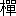や糸杉の
象徴樹が並んでいた。なお、刈込垣の前方には、パルナス群像の噴泉があって、法水が近づくと、突如奇妙な音響を発して
水煙を上げはじめた。
「
支倉君、これは
驚駭噴泉と云うのだよ。あの音も、また
弾丸のように水を浴びせるのも、みんな水圧を利用しているのだ」と法水は
飛沫を避けながら、何気なしに云ったけれども、検事はこのバロック風の弄技物から、なんとなく薄気味悪い予感を覚えずにはいられなかった。
それから法水は、刈込垣の前に立って本館を眺めはじめた。長い矩形に作られている本館の中央は、半円形に突出していて、左右に二条の
張出間があり、その部分の外壁だけは、薔薇色の小さな切石を
膠泥で固め、九世紀風の粗朴な
前羅馬様式をなしていた。勿論その部分は礼拝堂に違いなかった。けれども、
張出間の窓には、薔薇形窓がアーチ形の格子の中に
嵌っているのだし、中央の壁画にも、十二宮を描いた
彩色硝子の
円華窓のあるところを見ると、これ等様式の矛盾が、恐らく法水の興味を
惹いたことと思われた。しかし、それ以外の部分は、玄武岩の切石積で、窓は高さ十尺もあろうという二段
鎧扉になっていた。玄関は礼拝堂の左手にあって、もしその打戸環のついた
大扉の
際に私服さえ見なかったならば、恐らく法水の夢のような考証癖は、いつまでも醒めなかったに違いない。けれども、その
間でも、検事が絶えず法水の神経をピリピリ感じていたと云うのは、鐘楼らしい中央の高塔から始めて、奇妙な形の屋窓や煙突が林立している辺りから、左右の塔櫓にかけて、急峻な屋根をひとわたり観察した後に、その視線を下げて、今度は壁面に向けた顔を何度となく
顎を上下させ、そういう態度を数回にわたって繰り返したからであって、その様子がなんとなく、算数的に比較検討しているもののように思われたからだった。はたせるかな、この予測は的中した。最初から死体を見ぬにもかかわらず、はや法水は、この館の雰囲気を
摸索ってその中から結晶のようなものを摘出していったのであった。
玄関の突当りが広間になっていて、そこに控えていた老人の
召使が先に立ち、右手の大階段室に導いた。そこの床には、リラと暗紅色の
七宝模様が
切嵌を作っていて、それと、天井に近い円廊を
廻っている壁画との対照が、中間に無装飾の壁があるだけいっそう引き立って、まさに形容を絶した色彩を作っていた。馬蹄形に両肢を張った階段を上りきると、そこはいわゆる階段廊になっていて、そこから今来た上空に、もう一つ短い階段が伸び、階上に達している。階段廊の三方の壁には、壁面の遙か上方に、中央のガブリエル・マックス作「
腑分図」を挾んで、左手の壁にジェラール・ダビッドの「シサムネス皮剥死刑の図」、右手の壁面には、ド・トリーの「一七二〇年マルセーユの
黒死病」が、掲げられてあった。いずれも、縦七尺幅十尺以上に拡大摸写した複製画であって、何故かかる陰惨なもののみを選んだのか、その意図がすこぶる疑問に思われるのだった。しかし、そこで法水の眼が素早く飛びついたというのは「腑分図」の前方に正面を張って並んでいる、二基の中世甲冑武者だった。いずれも手に
旌旗の
旆棒を握っていて、尖頭から垂れている二様の
綴織が、画面の上方で密着していた。その右手のものは、クェーカー宗徒の服装をした
英蘭土地主が所領地図を拡げ、手に図面用の
英町尺を持っている構図であって、左手のものには、
羅馬教会の
弥撒が描かれてあった。その二つとも、上流家庭にはありきたりな、富貴と信仰の
表徴にすぎないのであるから、恐らく法水は看過すると思いのほか、かえって
召使を招き寄せて訊ねた。
「この甲冑武者は、いつもここにあるのかね」
「どういたしまして、昨夜からでございます。七時前には階段の両裾に置いてありましたものが、八時過ぎにはここまで飛び上っておりました。いったい、誰がいたしましたものか？」
「そうだろう。モンテスパン侯爵夫人のクラーニイ荘を見れば判る。階段の両裾に置くのが定法だからね」と法水はアッサリ
頷いて、それから検事に、「支倉君、試しに持ち上げて見給え。どうだね、割合軽いだろう。勿論実用になるものじゃないさ。甲冑も、十六世紀以来のものは全然装飾物なんだよ。それも、
路易朝に入ると肉彫の技巧が繊細になって、厚みが要求され、終いには、着ては歩けないほどの重さになってしまったものだ。だから、重量から考えると、無論ドナテルロ以前、さあ、マッサグリアかサンソヴィノ辺りの作品かな」
「オヤオヤ、君はいつファイロ・ヴァンスになったのだね。一口で云えるだろう――抱えて上れぬほどの重量ではないって」と検事は痛烈な皮肉を浴びせてから、「しかし、この甲冑武者が、階下にあってはならなかったのか。それとも、階上に必要だったのだろうか？」
「無論、ここに必要だったのさ。とにかく、三つの画を見給え。疫病・刑罰・解剖だろう。それに、犯人がもう一つ加えたものがある――それが、殺人なんだよ」
「冗談じゃない」検事が思わず眼を
瞠ると、法水もやや亢奮を交えた声でこう云った。
「とりもなおさず、これが今度の降矢木事件の
象徴という訳さ。犯人はこの
大旆を掲げて、陰微のうちに
殺戮を宣言している。あるいは、僕等に対する、挑戦の意志かもしれないよ。だいたい支倉君、二つの甲冑武者が、右のは右手に、左のは左手に旌旗の柄を握っているだろう。しかし、階段の裾にある時を考えると、右の方は左手に、左の方は右手に持って、構図から均斉を失わないのが定法じゃないか。そうすると、現在の形は、左右を入れ違えて置いたことになるだろう。つまり、左の方から云って、富貴の
英町旗――信仰の
弥撒旗となっていたのが、逆になったのだから……そこに怖ろしい犯人の意志が現われてくるんだ」
「何が？」
「Mass（
弥撒）と acre（
英町）だよ。続けて読んで見給え。信仰と富貴が、
Massacre――虐殺に化けてしまうぜ」と法水は検事が唖然としたのを見て、「だが、恐らくそれだけの意味じゃあるまい。いずれこの甲冑武者の位置から、僕はもっと形に現われたものを
発見け出すつもりだよ」と云ってから、今度は
召使に、「ところで、昨夜七時から八時までの間に、この甲冑武者について目撃したものはなかったかね」
「ございません。
生憎とその一時間が、私どもの食事に当っておりますので」
それから法水は、甲冑武者を一基一基解体して、その周囲は、画図と画図との間にある
龕形の壁灯から、旌旗の蔭になっている、「腑分図」の上方までも調べたけれど、いっこうに得るところはなかった。画面のその部分も背景のはずれ近くで、様々の色の縞が雑然と配列しているにすぎなかった。それから、階段廊を離れて、上層の階段を上って行ったが、その時何を思いついたのか、法水は突然
奇異な動作を始めた。彼は中途まで来たのを再び引き返して、もと来た大階段の
頂辺に立った。そして、
衣嚢から
格子紙の手帳を取り出して、階段の階数をかぞえ、それに何やら
電光形めいた線を書き入れたらしい。さすがこれには、検事も引き返さずにはいられなかった。
「なあに、ちょっとした心理考察をやったまでの話さ」と階上の
召使を
憚りながら、法水は小声で検事の問いに答えた。「いずれ、僕に確信がついたら話すことにするが、とにかく
現在のところでは、それで解釈する材料が何一つないのだからね。単にこれだけのことしか云えないと思うよ。
先刻階段を上って来る時に、警察自動車らしいエンジンの爆音が玄関の方でしたじゃないか。するとその時、あの
召使は、そのけたたましい音響に当然消されねばならない、ある微かな音を聴くことが出来たのだ。いいかね、支倉君、普通の状態ではとうてい聴くことの出来ない音をだよ」
そういうはなはだしく矛盾した現象を、法水はいかにして知ることが出来たのだろうか？ しかし、彼はそれに附け加えて、そうは云うものの、あの
召使には
毫末の嫌疑もない――といって、その姓名さえも聞こうとはしないのだから、当然結論の見当が茫漠となってしまって、この一事は、彼が提出した謎となって残されてしまった。
階段を上りきった正面には、廊下を置いて、岩乗な防塞を施した一つの
室があった。鉄柵扉の後方に数層の石段があって、その奥には、
金庫扉らしい
黒漆がキラキラ光っている。しかし、その室が古代時計室だということを知ると、収蔵品の驚くべき価値を知る法水には、一見
莫迦気て見える蒐集家の神経を
頷くことが出来た。廊下はそこを基点に左右へ伸びていた。一劃ごとに扉が附いているので、その間は
隧道のような暗さで、昼間でも
龕の電燈が
点っている。左右の壁面には、
泥焼の朱線が彩っているのみで、それが唯一の装飾だった。やがて、右手にとった突当りを左折し、それから、今来た廊下の向う側に出ると、法水の横手には短い
拱廊が現われ、その列柱の蔭に並んでいるのが、和式の具足類だった。拱廊の入口は、大階段室の
円天井の下にある円廊に開かれていて、その突当りには、新しい廊下が見えた。入口の左右にある六弁形の壁燈を見やりながら、法水が拱廊の中に入ろうとした時、何を見たのか
愕然としたように立ち止った。
「ここにもある」と云って、左側の
据具足（
鎧櫃の上に据えたもの）の一列のうちで、一番手前にあるものを指差した。その黒毛三枚鹿
角立の
兜を頂いた
緋縅錣［＃ルビの「ひおどししころ」は底本では「ひおどしころ」］の鎧に、何の
奇異があるのであろうか。検事はなかば呆れ顔に反問した。
「兜が取り換えられているんだ」と法水は事務的な口調で、「向う側にあるのは全部
吊具足（宙吊りにしたもの）だが、二番目の
鞣革胴の安鎧に載っているのは、
錣を見れば判るだろう。あれは、位置の高い若武者が冠る
獅子噛台星前立脇細鍬という兜なんだ。また、こっちの方は、黒毛の鹿角立という猛悪なものが、優雅な
緋縅の上に載っている。ねえ支倉君、すべて不調和なものには、
邪まな意志が潜んでいるとか云うぜ」と云ってから
召使にこの事を確かめると、さすがに驚嘆の色を
泛べて、
「ハイ、さようでございます。昨夕までは
仰言ったとおりでございましたが」と
躊躇せずに答えた。
それから、左右に幾つとなく並んでいる具足の間を通り抜けて、向うの廊下に出ると、そこは袋廊下の行き詰りになっていて、左は、本館の横手にある旋廻階段のテラスに出る扉。右へ数えて五つ目が現場の
室だった。部厚な扉の両面には、古拙な野生的な構図で、
耶蘇が
佝僂を癒やしている聖画が浮彫になっていた。その一重の奥に、グレーテ・ダンネベルグが死体となって横たわっているのだった。
扉が開くと、後向きになった二十三、四がらみの婦人を前に、捜査局長の
熊城が苦りきって鉛筆の
護謨を噛んでいた。二人の顔を見ると、遅着を
咎めるように、
眦を尖らせたが、
「法水君、仏様ならあの
帷幕の蔭だよ」といかにも無愛想に云い放って、その婦人に対する訊問も止めてしまった。しかし、法水の到着と同時に、早くも熊城が、自分の仕事を放棄してしまったのと云い、時折彼の表情の中に往来する、放心とでも云うような鈍い弛緩の影があるのを見ても、帷幕の蔭にある死体が、彼にどれほどの衝撃を与えたものか――さして想像に困難ではなかったのである。
法水は、まずそこにいる婦人に注目を向けた。愛くるしい二重
顎のついた丸顔で、たいして美人と云うほどではないが、
円らな瞳と青磁に透いて見える眼隈と、それから張ち切れそうな小麦色の地肌とが、素晴らしく魅力的だった。葡萄色のアフタヌーンを着て、自分の方から故算哲博士の秘書
紙谷伸子と名乗って挨拶したが、その美しい
声音に引きかえ、顔は恐怖に充ち土器色に変っていた。彼女が出て行ってしまうと、法水は黙々と室内を歩きはじめた。その
室は広々とした割合に薄暗く、おまけに調度が少ないので、ガランとして淋しかった。床の中央には、大魚の腹中にある
約拿を図案化したコプト織の敷物が敷かれ、その部分の床は、色大理石と
櫨の木片を交互に組んだ車輪模様の
切嵌。そこを挾んで、両辺の床から壁にかけ
胡桃と
樫の切組みになっていて、その所々に象眼を
鏤められ、渋い中世風の色沢が放たれていた。そして、高い天井からは、木質も判らぬほどに時代の汚斑が黒く滲み出ていて、その辺から鬼気とでも云いたい陰惨な空気が、静かに
澱み下ってくるのだった。
扉口は今入ったのが一つしかなく、左手には、横庭に開いた二段鎧窓が二つ、右手の壁には、降矢木家の紋章を中央に刻み込んである大きな
壁炉が、数十個の石材で畳み上げられてあった。正面には、黒い
天鵞絨の
帷幕が鉛のように重く垂れ、なお扉から煖炉に寄った方の壁側には、三尺ほどの台上に、裸体の
傴僂と有名な
立法者（
埃及彫像）の
跏像とが背中合せをしていて、窓際寄りの一劃は高い
衝立で仕切られ、その内側に、長椅子と二、三脚の椅子
卓子が置かれてあった。隅の方へ行って人群から遠ざかると、古くさい
黴の匂いがプーンと鼻孔を
衝いてくる。
煖炉棚の上には埃が五
分ほども積っていて、帷幕に触れると、
咽っぽい微粉が天鵞絨の織目から飛び出してきて、それが銀色に輝き、
飛沫のように降り下ってくるのだった。一見して、この
室が永年の間使われていないことが判った。やがて、法水は帷幕を掻き分けて内部を覗き込んだが、その瞬間あらゆる表情が静止してしまって、これも背後から、反射的に彼の肩を掴んだ検事の手があったのも知らず、またそれから波打つような
顫動が伝わってくるのも感ぜずに、ひたすら耳が鳴り顔が火のように
熾って、彼の眼前にある驚くべきもの以外の世界が、すうっとどこかへ飛び去って行くかのように思われた。
見よ！ そこに横たわっているダンネベルグ夫人の死体からは、
聖らかな栄光が
燦然と放たれているのだ。ちょうど光の霧に包まれたように、表面から一
寸ばかりの空間に、澄んだ青白い光が流れ、それが全身をしっくりと包んで、陰闇の中から
朦朧と浮き出させている。その光には、冷たい清冽な敬虔な気品があって、また、それに
暈とした
乳白色の濁りがあるところは、奥底知れない神性の啓示でもあろうか。醜い死面の陰影は、それがために端正な相に軟げられ、実に何とも云えない静穏なムードが、全身を覆うているのだ。その夢幻的な、荘厳なものの中からは、天使の吹く
喇叭の音が聴えてくるかもしれない。今にも、聖鐘の
殷々たる響が轟きはじめ、その神々しい光が、今度は金線と化して放射されるのではないかと思われてくると、――ああ、ダンネベルグ夫人はその童貞を讃えられ、最後の
恍惚境において、聖女として迎えられたのであろうか――と、知らず知らず洩れ出てくる嘆声を、果てはどうすることも出来なくなってしまうのだった。しかし、同時にその光は、そこに立ち
列んでいる、阿呆のような三つの顔も照していた。法水もようやく
吾にかえって調査を始めたが、鎧窓を開くと、その光は薄らいでほとんど見えなかった。死体の全身はコチコチに硬直していて、すでに死後十時間は十分経過しているものと思われたが、さすが法水は動ぜずに、あくまで科学的批判を忘れなかった。彼は口腔内にも光があるのを確かめてから、死体を
俯向けて、背に現われている鮮紅色の屍斑を目がけ、グサリと
小刀の刃を入れた。そして、死体をやや斜めにすると、ドロリと重たげに流れ出した血液で、たちまち屍光に
暈と赤らんだ壁が作られ、それがまるで、割れた霧のように二つに隔てられてゆき、その隙間に、ノタリノタリと血が
蜿くってゆく影が
印されていった。検事も熊城も、とうていこの凄惨な光景を直視することは出来なかった。
「血液には光はない」と法水は死体から手を離すと、
憮然として
呟いた。「今のところでは、なんと云っても奇蹟と云うよりほかにないだろうね。外部から放たれているものでないことは、とうに明らかなんだし、燐の臭気はないし、ラジウム化合物なら皮膚に
壊疽が出来るし、着衣にもそんな跡はない。まさしく皮膚から放たれているんだ。そして、この光には熱も匂いもない。いわゆる冷光なんだよ」
「すると、これでも毒殺と云えるのか？」と検事が法水に云うのを、熊城が受けて、
「ウン、血の色や屍斑を見れば判るぜ。明白な青酸中毒なんだ。だが法水君、この奇妙な
文身のような創紋はどうして作られたのだろうか？ これこそ、奇を
嗜み変異に
耽溺する、君の領域じゃないか」と
剛愎な彼に似げない自嘲めいた
笑を洩らすのだった。
実に、怪奇な栄光に続いて、法水を
瞠目せしめた死体現象がもう一つあったのだ。ダンネベルグ夫人が横たわっている寝台は、
帷幕のすぐ内側にあって、それは、
松毬形の
頂花を頭飾にし、その柱の上に、レースの天蓋をつけた
路易朝風の
桃花木作りだった。死体は、そのほとんど右はずれに
俯臥の姿勢で横たわり、右手は、背の方へ
捻じ曲げたように甲を
臀の上に置き、左手は寝台から垂れ下っていた。銀色の髪毛を無雑作に束ねて、黒い綾織の一重服を
纏い、鼻先が上唇まで垂れ下って
猶太式の人相をしているこの婦人は、顔をＳの字なりに引ん歪め、実に滑稽な顔をして死んでいた。しかし不思議と云うのは、両側の
顳に現われている、紋様状の切り
創だった。それがちょうど
文身の型取りみたいに、細い尖鋭な針先でスウッと引いたような――表皮だけを巧妙にそいだ
擦切創とでもいう浅い傷であって、両側ともほぼ直径一寸ほどの円形を作っていて、その円の周囲には、短い線条が
百足の足のような形で群生している。創口には、黄ばんだ血清が滲み出ているのみであるが、そういう更年期婦人の荒れ果てた皮膚に這いずっているものは、凄美などという感じよりかも、むしろ、
乾燥びた
蟯蟲の死体のようでもあり、また、不気味な鞭毛蟲が排泄する、長い糞便のようにも思われるのだった。そして、その生因が、はたして内部にあるのか外部にあるのか――その推定すら困難なほどに、難解をきわめたものだった。しかし、その凄惨な
顕微鏡模様から離れた法水の眼は、期せずして検事の視線と合した。そして、暗黙のうち、ある
慄然としたものを語り合わねばならなかった。なんとなれば、その創の形が、まさしく降矢木家の紋章の一部をつくっている、フィレンツェ市章の二十八葉橄欖冠にほかならないからであった。
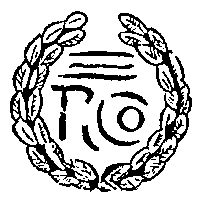
「どう見ても、僕にはそうとしか思えない」と検事は何度も
吃りながら、
熊城に降矢木家の紋章を説明した後で、「何故犯人は、息の根を止めただけでは足らなかったのだろうね。どうしてこんな、得体の判らぬ
所作までもしなければならなかったのだろう？」
「ところがねえ
支倉君」と
法水は始めて
莨を口に
銜えた。「それよりも僕は、いま自分の発見に
愕然としてしまったところさ。この死体は、彫り上げた数秒後に絶命しているのだよ。つまり、死後でもなく、また、服毒以前でもないのだがね」
「冗談じゃないぜ」と熊城は思わず呆れ顔になって、「これが即死でないのなら、一つ君の説明を
承ろうじゃないか」といきり立つのを、法水は駄々児を諭すような調子で、
「ウン、この事件の犯人たるや、いかにも神速陰険で、兇悪きわまりない。しかし、僕の云う理由はすこぶる簡単なんだ。だいたい君が、強度の
青酸中毒というものをあまり誇張して考えているからだよ。呼吸筋は恐らく瞬間に痲痺して
［＃「痲痺して」は底本では「痳痺して」］しまうだろうが、心臓が全く停止してしまうまでには、少なくとも、それから二分足らずの時間はあると見て差支えない。ところが、皮膚の表面に現われる死体現象と云うのは、心臓の機能が衰えると同時に現われるものなんだがね」そこでちょっと言葉を切って、まじまじと相手を
瞶めていたが、「それが判れば、僕の説に恐らく異議はないと思うね。ところで、この
創は巧妙に表皮のみを切り割っている。それは、血清だけが滲み出ているのを見ても、明白な事実なんだが、通例生体にされた場合だと、皮下に
溢血が起って創の両側が腫起してこなければならない――いかにも、この創口にはその歴然としたものがあるのだ。ところが、
剥がれた割れ口を見ると、それに
痂皮が出来ていない。まるで透明な
雁皮としか思われないだろう。が、この方は明らかな死体現象なんだよ。しかしそうなると、その二つの現象が大変な矛盾をひき起してしまって、創がつけられた時の生理状態に、てんで説明がつかなくなってしまうだろう。だから、その結論の持って行き場は、爪や表皮がどういう時期に死んでしまうものか、考えればいい訳じゃないか」
法水の精密な観察が、かえって創紋の謎を深めた感があったので、その新しい
戦慄のために、検事の声は全く均衡を失っていた。
「万事剖見を待つとしてだ。それにしても、屍光のような超自然現象を起しただけで飽き足らずに、その上降矢木の
烙印を押すなんて……。僕には、この清浄な光がひどく
淫虐的に思えてきたよ」
「いや、犯人はけっして、見物人を
慾しがっちゃいないさ。君がいま感じたような、心理的な障害を要求しているんだ。どうして
彼奴が、そんな病理的な個性なもんか。それに、まったくもって創造的だよ。だがそれをハイルブロンネルに云わせると、一番淫虐的で独創的なものを、
小児だと云うがね」と法水は暗く
微笑んだが、「ところで熊城君、死体の発光は何時頃からだね」と事務的な質問を発した。
「最初は、
卓子灯が点いていたので判らなくなったのだ。ところが、十時頃だったが、ひととおり死体の検案からこの一劃の調査が終ったので、鎧扉を閉じて
卓子灯を消すと……」と熊城はグビッと
唾を
嚥み込んで、「だから、家人は勿論のことだが、係官の中にも知らないものがあるという始末だよ。ところで、今まで聴取しておいた事実を、君の耳に入れておこう」と概略の顛末を語りはじめた。
「昨夜家内中である集会を催して、その席上でダンネベルグ夫人が卒倒した――それがちょうど九時だったのだ。それからこの
室で介抱することになって、図書掛りの
久我鎮子と給仕長の
川那部易介が徹宵附添っていたのだが、十二時頃被害者が食べた
洋橙の中に、青酸加里が仕込まれてあったのだよ。現に、
口腔の中に残っている果肉の
噛滓からも、多量の物が発見されているし、何より不思議な事には、それが、最初口に入れた一房にあったのだ。だから、犯人は偶然最初の一発で、的の黒星を射当てたと見るよりほかになかろうと思うね。他の
果房はこのとおり残っていても、それには、薬物の痕跡がないのだよ」
「そうか、
洋橙に
」と法水は、天蓋の柱をかすかに揺ぶって
呟いた。「そうすると、もう一つ謎がふえた訳だよ。犯人には、毒物の知識が皆無だという事になるぜ」
「ところが、使用人のうちには、これという不審な者はいない。久我鎮子も易介も、ダンネベルグ夫人が自分で果物皿の中から撰んだと云っている。それに、この
室は十一時半頃に鍵を下してしまったのだし、硝子窓も鎧扉も
菌のように
錆がこびり付いていて、外部から侵入した形跡は勿論ないのだよ。しかし妙な事には、同じ皿の上にあった梨の方が、夫人にとると、はるかより以上の嗜好物だそうなんだ」
「なに、鍵が？」と検事は、それと創紋との間に起った矛盾に、
愕然とした様子だったけれども、法水は依然熊城から眼を離さず、
突慳貪に云い放った。
「僕はけっして、そんな意味で云っていやしない。青酸に
洋橙という
痴面を被せているだけに、それだけ、犯人の素晴らしい素質が怖ろしくなってくるのだ。考えても見給え。あれほど際立った異臭や特異な苦味のある毒物を、驚くじゃないか、致死量の十何倍も用いている。しかも、その
仮装迷彩に使っているのが、そういう性能のきわめて乏しい
洋橙ときているんだ。ねえ、熊城君、それほど稚拙もはなはだしい手段が、どうしてこんな魔法のような効果を収めたのだろうか。
何故ダンネベルグ夫人は、その
洋橙のみに手を伸ばしたのだろうか。つまり、その驚くべき撞着たるやが、毒殺者の誇りなんだ。まさに彼等にとれば、ロムバルジア
巫女の出現以来、永生不滅の
崇拝物なんだよ」
熊城は呆気にとられたが、法水は思い返したように訊ねた。
「それから、絶命時刻は？」
「今朝八時の検屍で死後八時間と云うのだから、絶命時刻も、
洋橙を食べた
刻限とピッタリ符合している。発見は暁方の五時半で、それまで附添は二人ともに、変事を知らなかったのだし、また、十一時以後は誰もこの
室に入った者がなかったと云うのだし、家族の動静もいっさい不明だ。で、その
洋橙が載っていた、果物皿と云うのがこれなんだがね」
そう云って熊城は、寝台の下から銀製の大皿を取り出した。直径が二尺近い
盞形をしたもので、外側には
露西亜ビザンチン特有の生硬な線で、アイ
ソウフスキーの
匈奴族
馴鹿狩の浮彫が施されていた。皿の底には、空想化された一匹の爬蟲類が
逆立していて、頭部と
前肢が台になり、刺の生えた胴体が
くの字なりに彎曲して、
後肢と尾とで皿を支えている。そして、そのくの字の反対側には、半円形の
把手が附いていた。その上にある梨と
洋橙は全部二つに截ち割られていて、鑑識検査の跡が残されているが、無論毒物は、それ等の中にはなかったものらしい。しかし、ダンネベルグ夫人を
斃した一つには、際立った特徴が現われていた。それが、他にある
洋橙とは異なり、いわゆる
橙色ではなくて、むしろ
熔岩色とでもいいたいほどに赤味の強い、大粒のブラッド・オレンジだった。しかも、その
赭黒く熟れ過ぎているところを見ると、まるでそれが、凝固しかかった血糊のように薄気味悪く思われるのであるが、その色は妙に神経を
唆るのみのことで、勿論推定の
端緒を引き出すものではなかった。そして、
蔕のないところから推して、そこから泥状の青酸加里が注入されたものと推断された。
法水は果物皿から眼を離して、室内を歩きはじめた。
帷幕で
区劃られているその一劃は、前方の室といちじるしく趣を異にしていて、壁は一帯に灰色の
膠泥で塗られ、床には同じ色で、無地の
絨毯が敷かれてあって、窓は前室のよりもやや小さく、幾分上方に切られてあるので、内部ははるかに薄暗かった。灰色の壁と床、それに黒い
帷幕――と云えば、その昔ゴードゥン・クレイグ時代の舞台装置を想い出すけれども、そういう外見生動に乏しい基調色が、なおいっそうこの室を沈鬱なものにしていた。ここもやはり、前室と同様荒れるに任せていたらしく、歩くにつれて、壁の上方から層をなした埃が
摺り落ちてくる。室内の調度は、寝台の側に大
酒甕形の立
卓笥があるのみで、その上には、芯の折れた鉛筆をつけたメモと、被害者が
臥る時に取り外したらしい近視二十四度の
鼈甲眼鏡、それに、描き絵の絹
覆をつけた
卓子灯とが載っていた。近視鏡もその程度では、ただ輪廓がぼっとするのみのことで、事物の識別はほとんど明瞭につくはずであるから、それには一顧する価値もなかった。法水は、画廊の両壁を観賞してゆくような足取りで、ゆったり歩を運んでいたが、その背後から検事が声をかけた。
「やはり法水君、奇蹟は自然のあらゆる理法の彼方にあり――かね」
「ウン、判ったのはこれだけだよ」と法水は味のない声を出した。「まるで犯人はテルみたいに、たった一矢で、
露き出しよりも酷い青酸を、相手の腹の中へ
打ち込んでいるだろう。つまり、その最終の結論に達するまでに、光と創紋を現わすものが必要だったという事だ。云わばあの二つと云うのは、犯行を完成させるための補強作用であって、その道程に欠いてはならぬ、深遠な学理だとみて差支えない」
「冗談じゃない。あまり空論も度が過ぎるぜ」と熊城は呆れ返って横槍を入れたが、法水は平然と奇説を続けた。
「だって、鍵を下した室内に侵入して来て、一、二分のうちに彫らねばならない。そうなると、クライルじゃないがね。無理でも不思議な生理を目指すより仕方があるまい。それに、疑問はまだ、後へ
捻れたような右手の形にも、それから、右肩にある小さな鉤裂きにもあるのだ」
「いや、そんなことはどうでもいいんだ」熊城は吐きだすように、「腹ん這いで
洋橙を
嚥み込んで、瞬間無抵抗になる――たった、それだけの話なんだよ」
「ところがねえ熊城君、アドルフ・ヘンケの古い法医学書を見ると、一人の淫売婦が、腕を身体の下にかって横向きになった姿勢のままで毒を仰いだのだが、瞬間の
衝撃を
喰うと、かえって
痺れた方の腕が動いて、
瓶を窓から河の中へ投げ捨てたと云う面白い例が載っているぜ。だから一応は、最初の姿体を再現してみる必要があると思うね。それから死体の光は、アヴリノの『聖僧奇蹟集』などに……」
「なるほど、坊主なら、人殺しに関係あるだろう」と熊城は露骨に無関心を装ったが、急に神経的な手附になって、
衣嚢から何やら取り出そうとした。法水は振り向きもせず、背後に声を投げて、
「ところで熊城君、指紋は？」
「説明のつくものなら無数にある。それに、昨夜この
空室に被害者を入れた時だが、その時寝台の掃除と、床だけに真空掃除器を使ったというからね。
生憎足跡といっては何もない始末だ」
「フム、そうか」そういって法水が立ち止ったのは、突当りの
壁前だった。そこには、さしずめ常人ならば、顔あたりに相当する高さで、最近何か、
額様のものを取り外したらしい跡が残ってい、それがきわめて生々しく
印されてあった。ところがそこから折り返して
旧の位置に戻ると、法水は
卓子灯の中に何を認めたものか、
不意検事を振り向いて、
「支倉君、窓を閉めてくれ給え」と云った。
検事はキョトンとしたが、それでも、彼のいうとおりにすると、法水は再び死体の妖光を浴びながら、
卓子灯に点火した。そうなって初めて検事に判ったのは、その電球が、昨今はほとんど見られない
炭素球だと云う事で、恐らく急場に間に合わせた調度類が、永らく
蔵われていたものであろうと想像された。法水の眼はその
赭っ茶けた光の中で、
覆の描く半円をしばらく追うていたが、いま額の跡を見付けたばかりの壁から一尺ほど手前の床に、何やら
印をつけると、
室は再び
旧に戻って、窓から乳色の外光が入って来た。検事は窓の方へ溜めていた息をフウッと吐き出して、
「いったい、何を思いついたんだ？」
「なにね、僕の説だってその実グラグラなんだから、試しに、眼で見えなかった人間を作り上げようとしたところさ」と法水は
気紛れめいた調子で云ったが、その語尾を
掬い上げるような語気とともに、熊城は一枚の紙片を突き出した。
「これで、君の
謬説が粉砕されてしまうんだ。なにも苦しんでまで、そんな架空なものを作り上げる必要はないさ。見給え。
昨夜この
室には、事実想像もつかない人物が忍んでいたのだ。それを
洋橙を口に含んだ瞬間に知って、ダンネベルグ夫人が僕等に知らそうとしたのだよ」
その紙片の上に書かれてある文字を見て、法水はギュッと心臓を
掴まれたような気がした。検事は、むしろ呆れたように叫んだ。
「テレーズ！ これは自働人形じゃないか」
「そうなんだよ。これにあの創紋を結びつけたなら、よもや幻覚とは云われんだろう」と熊城も低く声を
慄わせた。「実は、寝台の下に落ちていたんだが、それをこのメモと引合わせてみて、僕は全身が
慄毛立った気がした。犯人はまさしく人形を使ったに違いないのだ」
法水は相変らず衝動的な
冷笑主義を発揮して、
「なるほど、土偶人形に
悪魔学か――犯人は、人類の潜在批判を
狙っているんだ。だが、珍しく古風な書体だな。まるで、
半大字形か
波斯文字みたいだ。でも君は、これが被害者の自署だという証明を得ているのかい？」
「無論だとも」熊城は肩を揺ぶって、「実は、君達が来た時にいたあの
紙谷伸子という婦人が、僕にとると最後の鑑定者だったのだ。で、ダンネベルグ夫人の癖と云うのはこうなんだ。鉛筆の中ほどを、小指と薬指との間に挾んで、それを斜めにしたのを、
拇指と人差指とで
摘んで書くそうだがね。そういった訳で、夫人の筆蹟はちょっと真似られんそうだよ。それに、この
擦れ具合が、鉛筆の折れた尖とピッタリ符合している」
検事はブルッと胴慄いして、
「怖ろしい死者の
曝露じゃないか。それでも法水君、君は？」
「ウム、どうしても人形と創紋を不可分に考えなけりゃならんのかな」と法水も浮かぬ顔で
呟いた。
「この
室がどうやら密室くさいので、出来ることなら幻覚と云いたいところさ。けれども、現実の前には、段々とその方へ引かれて行ってしまうよ。いやかえって人形を調べてみたら、創紋の謎を解くものが、その機械装置からでも掴めるかもしれない。何にしても、こう立て続けに、真暗な中で異妖な鬼火ばかり見せられているのだからね。光なら、どんな微かなものでも欲しい矢先じゃないか。とにかく、家族の訊問は後にして、とりあえず人形を調べることにしよう」
それから人形のある
室へ行くことになって、私服に鍵を取りにやると、間もなくその刑事は昂奮して戻って来た。
「鍵が紛失しているそうです、それに薬物室のも」
「やむを得なけりゃ叩き破るまでのことだ」と法水は決心の色を
泛べて、「だが、そうなると、調べる室が二つ出来てしまったことになる」
「薬物室もか」今度は検事が驚いたように云った。「だいたい青酸加里なんて、小学生の昆蟲採集箱の中にもあるものだぜ」
法水は
関わず立ち上って
扉の方へ歩みながら、
「それがね、犯人の智能検査なんだよ。つまり、その計画の深さを計るものが、鍵の紛失した薬物室に残されているように思われるんだ」
テレーズ人形のある
室は、大階段の後方に当る位置で、間に廊下を一つ置き、ちょうど「腑分図」の真後にあたる、袋廊下の突当りだった。扉の前に来ると、法水は不審な顔をして、眼前の浮彫を
瞶めだした。
「この扉のは、ヘロデ王ベテレヘム
嬰児虐殺之図と云うのだがね。これと、死体のある室の、
傴僂治療之図の二枚は、有名なオットー三世福音書の中にある插画なんだよ。そうなると、そこに何か脈絡でもあるのかな」と小首を
傾げながら、試みに
扉を押したが、それは微動さえもしなかった。
「尻込みすることはない。こうなれば、叩き破るまでのことさ」熊城が野生的な声を出すと、法水は急に遮り止めて、
「浮彫を見たので、急に勿体なくなったよ。それに、響で跡を消すといかんから、下の方の板をそっと切り破ろうじゃないか」
やがて、扉の下方に空けられた四角の穴から
潜り込むと、法水は懐中電燈を点じた。円い光に映るものは壁面と床だけで何一つ家具らしいものさえ、なかなかに現われ出てはこない。が、そのうち
右辺からかけて室を一周し終ろうとする際に、思いがけなくも、法水のすぐ横手――
扉から右寄りの壁に闇が破れた。そして、そこからフウッと吹き出した鬼気とともに、テレーズ・シニヨレの横顔が現われたのであった。面の恐怖と云えば誰しも経験することだが、たとえば、白昼でも古い社の額堂を訪れて、
破風の格子扉に掲げている能面を眺めていると、まるで、全身を逆さに撫で上げられるような不気味な感覚に襲われるものだ。まして、この事件に妖異な雰囲気を
醸し出した当のテレーズが、荒れ
煤けた室の暗闇の中から、
暈っと浮き出たのであるから、その瞬間、三人がハッとして息を
窒めたのも無理ではなかった。窓に微かな閃光が
燦めいて、
鎧扉の輪廓が明瞭に浮び上ると、遠く地動のような雷鳴が、おどろと這い寄って来る。そうした
凄愴な空気の中で、法水は凝然と
眼を見据え、眼前の妖しい
人型を
瞶めはじめた――ああ、この
死物の人形が森閑とした夜半の廊下を。
開閉器の所在が判って、室内が明るくなった。テレーズの人形は
身長五尺五、六寸ばかりの蝋着せ人形で、
格檣型の
層襞を附けた青藍色のスカートに、これも同じ色の
上衣を附けていた。像面からうける感じは、愛くるしいと云うよりも、むしろ異端的な美しさだった。半月形をしたルーベンス眉や、唇の両端が釣り上ったいわゆる
覆舟口などと云うのは、元来淫らな形とされている。けれども、妙にこの像面では鼻の円みと調和していて、それが、
蕩け去るような処女の
憧憬を現わしていた。そして、精緻な輪廓に包まれ、捲毛の金髪を垂れているのが、トレヴィーユ荘の佳人テレーズ・シニヨレの精確な複製だったのである。光をうけた方の面は、今にも血管が透き通ってでも見えそうな、いかにも生々しい輝きであったが、巨人のような
体躯との不調和はどうであろうか。安定を保つために、肩から下が恐ろしく大きく作られていて、
足蹠のごときは、普通人の約三倍もあろうと思われる広さだった。法水は考証気味な視線を休めずに、
「まるで
騎士埴輪か
鉄の処女としか思われんね、これがコペツキーの作品だと云うそうだが、さあプラーグと云うよりも、体躯の線は、バーデンバーデンのハンスヴルスト（
独逸の操人形）に近いね。この簡素な線には、他の人形には求められない無量の神秘がある。算哲博士が本格的な人形師に頼まないで、これを大きな
操人形に作ったのは、いかにもあの人らしい趣味だと思うよ」
「人形の観賞は、いずれゆっくりやってもらうことにしてだ」と熊城は苦々しげに顔を
顰めたが、「それより法水君、鍵が内側から掛っているんだぜ」
「ウン驚くべきじゃないか。しかし、まさかに犯人の意志で、この人形が
遠感的に動いたという訳じゃあるまい」鍵穴に突き込まれている飾付の鍵を見て、検事は
慄然としたらしかったが、足許から始めて、床の足型を追いはじめた。跡方もなく入り乱れている、扉口から正面の窓際にかけての床には、大きな扁平な足型で、二回往復した
四条の跡が印されていて、それ以外には、
扉口から現在人形のいる場所に続いている
一条のみだった。しかし、何より驚かされたのは、肝腎の人間のものがないということだった。検事が頓狂な声をあげると、それを、法水は皮肉に
嗤い返して、
「どうも頼りないね。最初犯人が人形の歩幅どおりに歩いて、その上を後で人形に踏ませる。そうしたら、自分の足跡を消してしまうことが出来るじゃないか。そして、それから以後の出入は、その足型の上を踏んで歩くのだ。しかし、
昨夜この人形のいた最初の位置が、もし扉口でなかったとしたら、昨夜はこの
室から、一歩も外へ出なかったと云うことが出来るのだよ」
「そんな
莫迦気た証跡が」熊城は
癇癪を抑えるような声を出して、「いったいどこで足跡の前後が証明されるね？」
「それが、洪積期の
減算なんだよ」と法水もやり返して、「と云うのは、最初の位置が扉口でないとすると、四条の足跡に、一貫した説明がつかなくなってしまうからだ。つまり、扉口から窓際に向っている
二条のうちの一つが、一番最後に
剰ってしまうのだよ。で仮りに、最初、人形が窓際にあったとして、まず犯人の足跡を踏みながら室を出て行き、そして再び、
旧の位置まで戻ったと仮定しよう。そうすると、続いてもう一度、今度は
扉に、鍵を下すために歩かなければならない。ところが見たとおり、それが
扉の前で、現在ある位置の方へ曲っているのだから、残った一条が全然余計なものになってしまう。だから、往復の一回を、犯人の足跡を消すためだとすると、そこからどうして、窓の方へもう一度戻さなければならなかったのだろうか。窓際に置かなければ、何故人形に鍵を下させることが出来なかったのだろう」
「人形が鍵をかける
」検事は呆れて叫んだ。
「それ以外に誰がするもんか」と知らぬ間に、法水は熱を帯びた口調になっていて、「しかし、その方法となると、相変らず新しい
趣向ではない。十年一日のごとくに、犯人は糸を使っているんだよ。ところで、僕の考えていることを実験してみるかな」
そして、鍵がまず
扉の内側に突っ込まれた。けれども、彼が一旬日ほど以前、
聖アレキセイ寺院のジナイーダの室において
贏ち得たところの成功が、はたして今回も、繰り返されるであろうかどうか――それがすこぶる危ぶまれた。と云うのは、その古風な柄の長い鍵は、
把手から遙かに突出していて、前回の技巧を再現することがほとんど望まれないからであった。二人が
見戍っているうちに、法水は長い糸を用意させて、それを外側から
鍵孔を
潜らせ、最初鍵の輪形の左側を巻いてから、続いて下から
掬って右側を絡め、今度は上の方から輪形の左の根元に引っ掛けて、余りを検事の胴に
繞らし、その先を再び鍵穴を通して廊下側に垂らした。そうしてから、
「まず支倉君を人形に仮定して、それが窓際から歩いて来たものとしよう。しかし、それ以前に犯人は、最初人形を置く位置について、正確な測定を遂げねばならなかった。何にしても、扉の
閾の
際で、左足が停まるように定める必要があったのだ。何故なら、左足がその位置で停まると、続いて右足が動き出しても、それが中途で閾に
逼えてしまうだろう。だから、後半分の余力が、その足を軸に廻転を起して、人形の左足がしだいに
後退りして行く。そして、完全に横向きになると、今度は扉と平行に進んで行くからだよ」
それから、熊城には扉の外で二本の糸を引かせ、検事を壁の人形に向けて歩かせた。そうしているうちに、
扉の前を過ぎて鍵が後方になると、法水はその方の糸をグイと熊城に引かせた。すると、検事の身体が張りきった糸を押して行くので、輪形の右側が引かれて、みるみる鍵が廻転してゆく。そして、掛金が下りてしまうと同時に、糸は鍵の
側でプツリと切れてしまったのだ。やがて、熊城は二本の糸を手にして現われたが、彼はせつなそうな溜息を吐いて、
「法水君、君はなんという不思議な男だろう」
「けれども、はたして人形がこの室から出たかどうか、それを明白に証明するものはない。あの一回余計の足跡だっても、まだまだ僕の考察だけでは足りないと思うよ」と法水は、最後の駄目を押して、それから、衣裳の背後にあるホックを外して観音開きを開き、体内の機械装置を覗き込んだ。それは、数十個の時計を集めたほどに精巧をきわめたものだった。幾つとなく大小様々な歯車が並び重なっている間に、数段にも自働的に作用する複雑な方舵機があり、色々な関節を動かす細い真鍮棒が後光のような放射線を作っていて、その間に、
弾条を巻く突起と制動機とが見えた。続いて熊城は、人形の全身を
嗅ぎ廻ったり、拡大鏡で指紋や指型を探しはじめたが、何一つ彼の神経に触れたものはなかったらしい。法水はそれが済むのを待って、
「とにかく、人形の性能は
多寡の知れたものだよ。歩き、停まり、手を振り、物を握って離す――それだけの事だ。
仮令この室から出たにしても、あの創紋を彫るなどとはとんでもない妄想さ。そろそろダンネベルグ夫人の筆跡も幻覚に近くなったかな」と思う壺らしい結論を云ったけれども、しかし彼の心中には、薄れ行った人形の影に代って、とうてい拭い去ることの出来ない疑問が残されてしまった。法水は続いて、
「だが熊城君、犯人は何故、人形が鍵を下したように見せなければならなかったのだろうね。もっとも、事件にグイグイ神秘を重ねてゆこうとしたのか、それとも、自分の優越を誇りたいためでもあったかもしれない。しかし、人形の神秘を強調するのだとしたら、かえってそんな小細工をやるよりも、いっそ
扉を開け放しにして、人形の指に
洋橙の汁でも附けておいた方が効果的じゃないか。ああ、犯人はどうして僕に、
糸と人形の技巧を土産に置いて行ったのだろう？」としばらく懐疑に
悶えるような表情をしていたが、「とにかく、人形を動かして見ることにしよう」と云って眼の光を消した。
やがて、人形は非常に緩慢な速度で、特有の機械的な無器用な恰好で歩き出した。ところが、そのコトリと踏む一歩ごとに、リリリーン、リリリーンと、
囁くような美しい
顫音が響いてきたのである。それはまさしく金属線の震動音で、人形のどこかにそういう装置があって、それが体腔の空洞で共鳴されたものに違いなかった。こうして、法水の推理によって、人形を裁断する機微が紙一枚の
際どさに残されたけれども、今聴いた音響こそは、まさしくそれを左右する鍵のように思われた。この重大な発見を最後に、三人は人形の
室を出て行ったのであった。
最初は、続いて階下の薬物室を調べるような法水の
口吻だったが、彼はにわかに予定を変えて、古式具足の
列んでいる
拱廊の中に入って行った。そして、円廊に開かれている
扉際に立ち、じっと前方に瞳を凝らしはじめた。円廊の対岸には、二つの驚くほど
涜神的な
石灰面が壁面を占めていた。右側のは処女受胎の図で、いかにも貧血的な相をした
聖母が左端に立ち、右方には旧約聖書の聖人達が集っていて、それがみな
掌で両眼を覆い、その間に立ったエホバが、性慾的な眼でじいっと
聖母を
瞶めている。左側の「カルバリ山の翌朝」とでも云いたい画因のものには、右端に死後強直を克明な線で現わした十字架の
耶蘇があり、それに向って、
怯懦な卑屈な恰好をした使徒達が、怖る怖る近寄って行く光景が描かれていた。法水は取り出した
莨を、思い直したように
函の中に戻して、途方もない質問を発した。
「支倉君、君はボーデの法則を知っているかい――海王星以外の惑星の距離を、簡単な倍数公式で現わしてゆくのを。もし知っているのなら、それを、この
拱廊でどういう具合に使うね」
「ボーデの法則
」検事は奇問に驚いて問い返したが、重なる法水の不可解な言動に、熊城と苦々しい視線を合わせて、「それでは、あの二つの画に君の空論を批判してもらうんだね。どうだい、あの
辛辣な聖書観は。たぶん、あんな絵が好きらしいフォイエルバッハという男は、君みたいな飾弁家じゃなかろうと思うんだ」
しかし、法水はかえって検事の言に
微笑を洩らして、それから拱廊を出て死体のある
室に戻ると、そこには驚くべき報告が待ち構えていた。給仕長川那部易介がいつの間にか姿を消しているという事だった。昨夜図書掛りの久我鎮子とともにダンネベルグ夫人に附添っていて、熊城の疑惑が一番深かったのであるが、それだけに、易介の失踪を知ると、彼はさも満足気に両手を揉みながら、
「すると、十時半に僕の訊問が終ったのだから、それから鑑識課員が掌紋を採りに行ったと云う――現在一時までの間だな、そうそう法水君、これが易介を
模本にしたというそうだが」と、扉の脇にある二人像を指差して、「この事は、僕には
既から判っていたのだよ。あの
侏儒の
傴僂が、この事件でどういう役を勤めていたか――だ。だが、なんという
莫迦な
奴だろう。
彼奴は、自分の見世物的な特徴に気がつかないのだ」
法水はその間、軽蔑したように相手を見ていたが、
「そうなるかねえ」と一言反対の見解を
仄めかしただけで、像の方に歩いて行った。そして、
立法者の跏像と背中を合わせている傴僂の前に立つと、
「オヤオヤ、この傴僂は
療っているんだぜ。不思議な暗合じゃないか。扉の浮彫では耶蘇に治療をうけているのが、
内部に入ると、すっかり全快している。そしてあの男は、もうたぶん
唖にちがいないのだ」と最後の一言をきわめて強い語気で云ったが、にわかに悪寒を覚えたような顔付になって、物腰に神経的なものが現われてきた。
しかし、その像には依然として変りはなく、扁平な大きな頭を持った
傴僂が、細く下った眼尻に
狡そうな笑を湛えているにすぎなかった。その間、何やら
認めていた検事は、法水を
指招いて、卓上の紙片を示した。それには次のような箇条書で、検事の質問が記されてあった。
一、法水は大階段の上で、常態ではとうてい聞えぬ音響を召使が聴いたのを知ったと云う――その結論は？
二、法水は拱廊で何を見たのであるか？
三、法水が卓子灯を点けて、床を計ったのは？
四、法水はテレーズ人形の室の鍵に、何故逆説的な解釈をしようと、苦しんでいるのであるか？
五、法水は何故に家族の訊問を急がないのか？
読み終ると、法水は
莞爾として、一・二・五の下に
――を引いて解答と書き、
もし万に一つの幸い吾にあらば、
犯人を指摘する人物を発見するやも知れず（第二あるいは第三の事件）――と続いて
認めた。検事が
吃驚して顔を上げると、法水はさらに第六の質問と標題を打って、次の一行を書き加えた。――甲冑武者はいかなる目的の下に、階段の裾を離れねばならなかったのだろう？
「それは、君がもう」と検事は眼を
瞠って反問したが、その時
扉が静かに開いて、最初呼ばれた図書掛りの久我鎮子が入って来た。
久我鎮子の年齢は、五十を過ぎて二つ三つと思われたが、かつて見たことのない典雅な風貌を具えた婦人だった。まるで
鑿ででも仕上げたように、繊細をきわめた顔面の諸線は、容易に求められない儀容と云うのほかはなかった。それが時折引き締ると、そこから、この老婦人の、動じない鉄のような意志が現われて、
隠遁的な静かな影の中から、
焔のようなものがメラメラと立ち上るような思いがするのだった。法水は何より先に、この婦人の精神的な深さと、総身から滲み出てくる、物々しいまでの圧力に打たれざるを得なかった。
「
貴方は、この
室にどうして調度が少ないのか、お訊きになりたいのでしょう」鎮子が最初発した言葉が、こうであった。
「今まで、
空室だったのでは」と検事が口を挾むと、
「そう申すよりも、開けずの間と呼びました方が」と鎮子は無遠慮な訂正をして、帯の間から取り出した細巻に火を点じた。「実は、お聴き及びでもございましょうが、あの変死事件――それが三度とも続けてこの室に起ったからでございます。ですから、算哲様の自殺を最後として、この室を永久に閉じてしまうことになりました。この彫像と寝台だけは、それ以前からある調度だと申されておりますが」
「開けずの間に」法水は複雑な表情を
泛べて、「その開けずの間が、昨夜は、どうして開かれたのです？」
「ダンネベルグ夫人のお
命令でした。あの方の
怯えきったお心は、昨夜最後の避難所をここへ求めずにはいられなかったのです」と凄気の
罩もった言葉を冒頭にして、鎮子はまず、館の中へ
磅と
漲ってきた異様な雰囲気を語りはじめた。
「算哲様がお
歿くなりになってから、御家族の誰もかもが、落着きを失ってまいりました。それまでは口争い一つしたことのない四人の外人の方も、しだいに言葉数が少なくなって、お互いに警戒するような
素振りが日増しに募ってゆきました。そして、今月に入ると、
誰方も滅多にお
室から出ないようになり、ことにダンネベルグ様の御様子は、ほとんど狂的としか思われません。御信頼なさっている私か易介のほかには、誰にも食事さえ運ばせなくなりました」
「その恐怖の原因に、貴女は何か解釈がおつきですかな。個人的な暗闘ならばともかく、あの四人の方々には、遺産という問題はないはずです」
「原因は判らなくても、あの方々が、御自身の生命に危険を感じておられたことだけは確かでございましょう」
「その空気が、今月に入って
酷くなったと云うのは」
「マア、私がスウェーデンボルグかジョン・ウェスレイ（
メソジスト教会の創立者）でもあるのでしたら」と鎮子は皮肉に云って、
「ダンネベルグ様は、そういう
悪気のようなものから、なんとかして
遁れたいと、どれほど心をお砕きになったか判りません。そして、その結果があの方の御指導で、昨夜の神意審問の会となって現われたのでございます」
「神意審問とは？」検事には鎮子の黒ずくめの和装が、ぐいと迫ったように感ぜられた。
「算哲様は、異様なものを残して置きました。マックレンブルグ魔法の一つとかで、絞死体の手首を酢漬けにしたものを乾燥した――
栄光の手の一本一本の指の上に、これも絞死罪人の脂肪から作った、死体蝋燭を立てるのです。そして、それに火を点じますと、邪心のある者は身体が
竦んで心気を失ってしまうとか申すそうでございます。で、その会が始まったのは、昨夜の正九時。列席者は当主旗太郎様のほかに四人の方々と、それに、私と紙谷伸子さんとでございました。もっとも、
押鐘の奥様（
津多子）がしばらく御逗留でしたけれども、昨日は早朝お帰りになりましたので」
「そして、その光は誰を射抜きましたか」
「それが、当の御自身ダンネベルグ様でございました」と鎮子は、低く声を落して
慄わせた。「あのまたとない光は、昼の光でもなければ夜の光でもございません。ジイジイっと
喘鳴のようなかすれた音を立てて燃えはじめると、拡がってゆく焔の中で、薄気味悪い蒼鉛色をしたものがメラメラと
蠢きはじめるのです。それが、一つ二つと
点されてゆくうちに、私達はまったく周囲の識別を失ってしまい、スウッと宙へ浮き上って行くような気持になりました。ところが、全部を点し終った時に――あの窒息せんばかりの息苦しい瞬間でした。その時ダンネベルグ様は物凄い形相で前方を
睨んで、なんという怖ろしい言葉を叫んだことでしょう。あの方の眼に疑いもなく映ったものがございました」
「何がです？」
「ああ算哲――と叫んだのです。と思うと、バタリとその場へ」
「なに、算哲ですって
」と法水は、一度は
蒼くなったけれども、「だが、その
諷刺はあまりに
劇的ですね。
他の六人の中から邪悪の存在を発見しようとして、かえって自分自身が倒されるなんて。とにかく
栄光の手を、私の手でもう一度
点してみましょう。そうしたら、何が算哲博士を……」と彼の本領に返って冷たく云い放った。
「そうすれば、その六人の者が、犬のごとく己れの吐きたるものに帰り来る――とでもお考えなのですか」と鎮子はペテロの
言を
藉りて、痛烈に酬い返した。そして、
「でも、私が
徒らな神霊陶酔者でないということは、今に段々とお判りになりましょう。ところで、あの方はほどなく意識を回復なさいましたけれども、血の気の失せた顔に滝のような汗を流して――とうとうやって来た。ああ、今夜こそは――と絶望的に身悶えしながら、声を
慄わせて申されるのです。そして、私と易介を附添いにしてこの室に運んでくれと
仰言いました。誰も勝手を知らない室でなければ――という、目前に迫った怖ろしいものを何とかして避けたい御心持が、私にはようく読み取ることが出来たのです。それが、かれこれ十時近くでしたろうが、はたしてその夜のうちに、あの方の恐怖が実現されたのでございます」
「しかし、何が算哲と叫ばせたものでしょうな」と法水は再び疑念を繰り返してから、「実は、夫人が断末魔にテレーズと書いたメモが、寝台の下に落ちていたのですよ。ですから、幻覚を起すような生理か、何か精神に異常らしいところでも……。時に、貴女はヴルフェンをお読みになったことがありますか」
その時、鎮子の眼に不思議な輝きが現われて、
「さよう、五十歳変質説もこの際確かに一説でしょう。それに、外見では判らない
癲癇発作がありますからね。けれども、あの時は冴え切ったほどに正確でございました」とキッパリ云い切ってから、「それから、あの方は十一時頃までお寝みになりましたが、お目醒めになると
咽喉が乾くと
仰言ったので、そのときあの果物皿を、易介が
広間から持ってまいったのです」と云って熊城の眼が
急性しく動いたのを悟ると、
「ああ、貴方は相変らずの
煩瑣派なんですね。その時あの
洋橙があったかどうか、お訊ねになりたいのでしょう。けれども、人間の記憶なんて、そうそう貴方がたに便利なものではございませんわ。第一、昨夜は眠らなかったとは思っていますけれども、その側から、
仮睡ぐらいはしたぞと
囁いているものがあるのです」
「なるほど、これも同じことですよ。館中の人達がそろいもそろって、昨夜は珍しく熟睡したと云っているそうですからね」とさすがに法水も苦笑して、「ところで十一時というと、その時誰か来たそうですが」
「ハァ、旗太郎様と伸子さんとが、御様子を見にお出でになりました。ところが、ダンネベルグ様は、果物は後にして何か飲物が欲しいと
仰言るので、易介がレモナーデを持ってまいりました。すると、あの方は御要心深くも、それに毒味をお命じになったのです」
「ハハァ、恐ろしい神経ですね。では、誰が？」
「伸子さんでした。ダンネベルグ様もそれを見て御安心になったらしく、三度も
盃をお換えになったほどでございます。それから、
御寝になったらしいので、旗太郎様が寝室の壁にあるテレーズの額をはずして、伸子さんと二人でお持ち帰りになりました。いいえ、テレーズはこの館では不吉な悪霊のように思われていて、ことにダンネベルグ様が大のお嫌いなのでございますから、旗太郎様がそれに気付かれたというのは、非常に賢い思い
遣りと申してよろしいのです」
「だが、寝室にはどこぞと云って隠れ場所はないのですから、その額に人形との関係はないでしょう」と検事が横合から口を挾んで「それよりも、その飲み残りは？」
「
既に洗ってしまったでしょう。ですが、そういう御質問をなさると、ヘルマン（
十九世紀の毒物学者）が
嗤いますわ」鎮子は露骨に
嘲弄の色を
泛べた。
「もし、それでいけなければ、青酸を
零にしてしまう中和剤の名を伺いましょうか。砂糖や
漆喰では、
単寧で沈降する
塩基物を、茶といっしょに飲むような訳にはまいりませんわ。それから十二時になると、ダンネベルグ様は、
扉に鍵をかけさせて、その鍵を枕の下に入れてから、果物をお命じになり、あの
洋橙をお取りになりました。
洋橙を取る時も何とも
仰言いませず、その後は音も聞えず御熟睡のようなので、私達は
衝立の蔭に長椅子を置いて、その上で横になっておりました」
「では、その前後に微かな鈴のような音が」と訊ねて、鎮子の否定に遇うと、検事は
莨を抛り出して
呟いた。
「すると、額はないのだし、やはり夫人はテレーズの幻覚を見たのかな。そうして完全な密室になってしまうと、創紋との間に大変な矛盾が起ってしまうぜ」
「そうだ、支倉君」と法水は静かに云った。「僕はより以上微妙な矛盾を発見しているよ。
先刻人形の室で組み立てたものが、この室に戻って来ると、
突然逆転してしまったのだ。この室は開けずの間だったと云うけれども、その実、永い間絶えず出入りしていたものがあったのだよ。その歴然とした形跡が残っているのだ」
「冗談じゃない」熊城は
吃驚して叫んだ。「鍵穴には永年の錆がこびり付いていて、最初開く時に、鍵の孔が刺さらなかったとか云うぜ。それに、人形の室と違って、岩乗な
弾条で作用する落し金なんだから、どう考えても、糸で操れそうもないし、無論
床口にも
陰扉のないという事は、
既に反響測定器で確かめているんだ」
「それだから君は、僕が
先刻傴僂が
療っていると云ったら、
嗤ったのだよ。自然がどうして、人間の眼に止まる所になんぞ、跡を残して置くもんか」と一同を像の前に連れて行き、「だいたい幼年期からの傴僂には、上部の肋骨が凸凹になっていて
数珠玉の形をしているものだが、それがこの像のどこに見られるだろう。だが、試しに、この厚い埃を払って見給え」
そして、埃の層が
雪崩のように
摺り落ちた時だった。
噎っとなって鼻口を覆いながらも
瞠いた一同の眼が、明らかにそれを、像の第一肋骨の上で認めたのであった。
「そうすると数珠玉の上の出張った埃を、平に
均したものがなければならない。けれども、どんなに精巧な器械を使ったところで、人間の手ではどうして出来るものじゃない。自然の細刻だよ。風や水が何万年か経って岩石に巨人像を刻み込むように、この像にも鎖されていた三年のうちに、
傴僂を
療してしまったものがあったのだ。この
室に絶えず忍び入っていた人物は、いつもこの前の台の上に手燭を置いていたのだよ。しかし、その跡なんぞは、どうにか
誤魔かしてしまうにしても、その時から、一つの
物云う象徴［＃「物云う象徴」は底本では「物云う象徴」］が作られていった。焔の揺ぎから起る微妙な気動が、一番不安定な位置にある数珠玉の埃を、ほんの微かずつ落していったのだよ。ねえ支倉君、じいっと耳を澄ましていると、なんだか茶立蟲のような、美しい
鑿の音が聞えてくるようじゃないか。ときに、こういうヴェルレーヌの詩が……」
「なるほど」と検事は
慌てて遮って、「けれども、その二年の歳月が、昨夜一夜を証明するものとは云われまい」
とさっそくに法水は、熊城を振り向いて、「たぶん君は、コプト織の下を調べなかったろう」
「だいたい、何がそんな下に？」熊城は眼を
円くして叫んだ。
「ところが、
死点と云えるものは、けっして網膜の上や、音響学ばかりにじゃないからね。フリーマンは織目の隙から、特殊な貝殻粉を潜り込ましている」と法水が静かに敷物を巻いてゆくと、そこの床には垂直からは見えないけれども、
切嵌の車輪模様の数がふえるにつれて、微かに異様な跡が現われてきた。その色大理石と
櫨木の縞目の上に残されているものは、まさしく水で印した跡だった。全体が長さ二尺ばかりの小判形で、ぼうっとした塊状であるが、仔細に見ると、周囲は無数の点で囲まれていて、その中に、様々な形をした線や点が群集していた。そして、それが、足跡のような形で、交互に
帷幕の方へ向い、先になるに従い薄らいでゆく。
「どうも原型を回復することは困難らしいね。テレーズの足だってこんなに大きなものじゃない」と熊城はすっかり眩惑されてしまったが、
「要するに、陰画を見ればいいのさ」と法水はアッサリ云い切った。「コプト織は床に密着しているものではないし、それに
櫨木には、パルミチン酸を多量に含んでいるので、弾水性があるからだよ。表面から裏側に滲み込んだ水が、繊毛から滴り落ちて、その下が
櫨木だと、水が水滴になって跳ね飛んでしまう。そして、その反動で、繊毛が順次に位置を変えてゆくのだから、何度か滴り落ちるうちには、終いに
櫨木から大理石の方へ移ってしまうだろう。だから、大理石の上にある中心から一番遠い線を、逆に辿って行って、それが櫨木にかかった点を連ねたものが、ほぼ原型の線に等しいと云う訳さ。つまり、水滴を
洋琴の
鍵にして、毛が
輪旋曲を踊ったのだよ」
「なるほど」と検事は
頷いたが、「だが、この水はいったい何だろうか？」
「それが、
昨夜は一滴も」と鎮子が云うと、それを、法水は面白そうに笑って、
「いや、それが
紀長谷雄卿の故事なのさ。鬼の娘が水になって消えてしまったって」
ところが、法水の諧謔は、けっしてその場限りの
戯言ではなかった。そうして作られた原型を、熊城がテレーズ人形の足型と、歩幅とに対照してみると、そこに驚くべき一致が現われていたのである。幾度か推定の中で、奇体な明滅を繰り返しながらも、得態の知れない水を踏んで現われた人形の存在は、こうなると厳然たる事実と云うのほかにない。そして、鉄壁のような
扉とあの美しい
顫動音との間に、より大きな矛盾が横たえられてしまったのであった。こうして、
濛々たる
莨の煙と謎の続出とで、それでなくても、この緊迫しきった空気に検事はいい加減上気してしまったらしく、窓を明け放って戻って来ると、法水は流れ出る白い煙を眺めながら、再び座についた。
「ところで久我さん、過去の三事件にはこの際論及しないにしてもです。いったいどうしてこの
室が、かような寓意的なもので充ちているのでしょう。あの
立法者の像なども、明白に迷宮の暗示ではありませんか。あれは、たしかマリエットが、
埋葬地にある
迷宮の入口で発見したのですからね」
「その迷宮は、たぶんこれから起る事件の暗示ですわ」と鎮子は静かに云った。「
恐らく最後の一人までも殺されてしまうでしょう」
法水は驚いて、しばらく相手の顔を
瞶めていたが、
「いや、
少なくとも三つの事件までは……」と鎮子の
言を
譫妄のような調子で云い直してから、「そうすると久我さん、
貴女はまだ、昨夜の神意審問の記憶に酔っているのですね」
「あれは一つの
証詞にすぎません。私には
既から、この事件の起ることが予知されていたのです。云い当ててみましょうか。死体はたぶん浄らかな栄光に包まれているはずですわ」
二人の奇問奇答に
茫然としていた矢先だったので、検事と熊城にとると、それがまさに青天の
霹靂だった。誰一人知るはずのないあの奇蹟を、この老婦人のみはどうして知っているのであろう。鎮子は続いて云った。が、それは、法水に対する
剣のような試問だった。
「ところで、死体から栄光を放った例を御存じでしょうか」「僧正ウォーターとアレツオ、
弁証派のマキシムス、アラゴニアの
聖ラケル……もう四人ほどあったと思います。しかし、それ等は要するに、奇蹟売買人の悪業にすぎないことでしょう」と法水も冷たく云い返した。
「それでは、
闡明なさるほどの御解釈はないのですね。それから、一八七二年十二月
蘇古蘭インヴァネスの牧師屍光事件は？」
（註）（西区アシリアム医事新誌）。ウォルカット牧師は妻アビゲイルと友人スティヴンを伴い、スティヴン所有煉瓦工場の附近なる氷蝕湖カトリンに遊ぶ。しかるに、スティヴンはその三日目に姿を消し、翌年一月十一日夜月明に乗じて湖上に赴きし牧師夫妻は、ついにその夜は帰らず、夜半四、五名の村民が、雨中月没後の湖上遙か栄光に輝ける牧師の死体を発見せるも、畏怖して薄明を待てり。牧師は他殺にて、致命傷は左側より頭蓋腔中に入れる銃創なるも、銃器は発見されず、死体は氷面の窪みの中にありて、その後は栄光の事なかりしも、妻はその夜限り失踪して、ついにスティヴンとともに踪跡を失いたり。
法水は鎮子の
嘲侮に、やや語気を荒らげて答えた。
「あれはこう解釈しております――牧師は自殺で他の二人は牧師に殺されたのだと。で、それを順序どおり述べますと、最初牧師はスティヴンを殺して、その屍骸を温度の高い休業中の煉瓦炉の中に入れて腐敗を促進させたのです。そして、その間に細孔を無数に
穿った軽量の船形棺を作って、その中に十分腐敗を見定めてから死体を収め、それに長い紐で
錘を附けて湖底に沈めました。無論数日ならずして腹中に腐敗
瓦斯が膨満するとともに、その船形棺は浮き上るものとみなければなりません。そこで牧師は、あの夜、錘の位置から場所を計って氷を砕き、水面に浮んでいる棺の細孔から死体の腹部を刺して
瓦斯を発散させ、それに火を点じました。御承知のとおり、腐敗瓦斯には
沼気のような熱の稀薄な可燃性のものが多量にあるのですから、その燐光が、月光で穴の縁に作られている陰影を消し、滑走中の妻を墜し込んだのです。恐らく水中では、頭上の船形棺をとり退けようと

き苦しんだでしょうが、ついに力尽きて妻は湖底深く沈んで行きました。そうして牧師は、自分の
顳を射った拳銃を棺の上に落して、その上に自分も倒れたのですから、その燐光に包まれた死体を、村民達が栄光と誤信したのも無理ではありません。そのうち、瓦斯の減量につれて浮揚性を失った船形棺は、拳銃を載せたまま湖底に横たわっている妻アビゲイルの死体の上に沈んでいったのですが、一方牧師の
身体は、四肢が氷壁に支えられてそのまま氷上に残ってしまい、やがて雨中の水面には氷が張り詰められてゆきました。恐らく動機は妻とスティヴンとの密通でしょうが、愛人の死体で穴に蓋をしてしまうなんて、なんという悪魔的な復讐でしょう。しかしダンネベルグ夫人のは、そういった
蕪雑な目撃現象ではありません」
聴き終ると、鎮子は微かな驚異の色を
泛べたが、別に顔色も変えず、懐中から二枚に折った巻紙
形の上質紙を取り出した。
「御覧下さいまし。算哲博士のお描きになったこれが、黒死館の邪霊なのでございます。栄光は
故なくして放たれたのではございません」
それには、折った右側の方に、一艘の
埃及船が描かれ、左側には、六つの劃のどのなかにも、四角の光背をつけた博士自身が立っていて、
側にある異様な死体を眺めている。そして、その下にグレーテ・ダンネベルグ夫人から易介までの六人の名が記されていて、裏面には、怖ろしい殺人方法を予言した次の章句が書かれてあった。（図表参照）
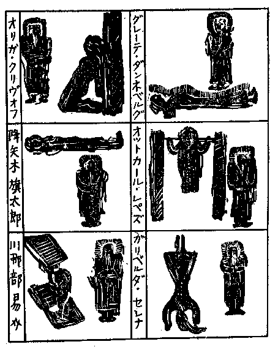
グレーテは栄光に輝きて殺さるべし。
オットカールは吊されて殺さるべし。
ガリバルダは逆さになりて殺さるべし。
オリガは眼を覆われて殺さるべし。
旗太郎は宙に浮びて殺さるべし。
易介は挾まれて殺さるべし。
「まったく怖ろしい黙示です」とさすがの法水も声を
慄わせて、「四角の光背は、確か生存者の
象徴でしたね。そして、その船形のものは、古代
埃及人が死後生活の中で夢想している、不思議な死者の船だと思いますが」と云うと、鎮子は沈痛な顔をして
頷いた。
「さようでございます。一人の
水夫もなく
蓮湖の中に浮んでいて、死者がそれに乗ると、その命ずる意志のままに、
種々な舟の機具が独りでに動いて行くというのです。そうして、四角の光背と目前の死者との関係を、どういう意味でお考えになりますか？ つまり、博士は永遠にこの館の中で生きているのです。そして、その意志によって独りでに動いて行く死者の船というのが、あのテレーズの人形なのでございます」
［＃改丁］
［＃ページの左右中央］
［＃改ページ］
久我鎮子が提示した六
齣の黙示図は、凄惨冷酷な内容を蔵しながらも、外観はきわめて古拙な線で、しごく
飄逸な形に
描かれていた。が、確かにこの事件において、それがあらゆる要素の根柢をなすものに相違なかった。おそらくこの時機に
剔抉を誤ったなら、この厚い壁は、数千度の訊問検討の後にも現われるであろう。そして、その場で進行を
阻んでしまうことは明らかだった。それなので、鎮子が驚くべき解釈をくわえているうちにも、
法水は
顎を胸につけ、眠ったような形で黙考を凝らしていたが、おそらく内心の苦吟は、彼の経験を超絶したものだったろうとおもわれた。事実まったく
犯人のいない殺人事件――
埃及艀と
屍様図を相関させたところの図読法は、とうてい否定し得べくもなかったのである。ところが意外なことに、やがて正視に復した彼の顔には、みるみる生気が
漲りゆき酷烈な表情が
泛び上った。
「判りましたが……しかし久我さん、この図の原理には、けっしてそんなスウェーデンボルグ神学（
「黙示録解釈」および「アルカナ・コイレスチア」において、スウェーデンボルグは出埃及記およびヨハネ黙示録の字義解釈に、牽強附会もはなはだしい数読法を用いて、その二つの経典が、後世における歴史的大事変の数々を預言せるものとなせり。）はないのですよ。狂ったようなところが、むしろ整然たる論理形式なんです。また、あらゆる現象に通ずるという空間構造の幾何学理論が、やはりこの中でも、絶対不変の単位となっているのです。ですから、この図を宇宙自然界の法則と対称することが出来るとすれば、当然、そこに抽象されるものがなけりゃならん訳でしょう」と法水が、突如前人未踏とでも云いたいところの、超経験的な推理領域に踏み込んでしまったのには、さすがの検事も
唖然となってしまった。数学的論理はあらゆる法則の指導原理であると云うけれども、かの「
僧正殺人事件」においてさえ、リーマン・クリストフェルのテンソルは、単なる犯罪概念を表わすものにすぎなかったではないか。それだのに法水は、それを犯罪分析の実際に応用して、空漠たる思惟抽象の世界に踏み入って行こうとする……。
「ああ私は……」と鎮子は
露き出して
嘲った。「それで、ロレンツ収縮の講義を聴いて直線を歪めて書いたと云う、
莫迦な理学生の話を憶い出しましたわ。それでは、ミンコフスキーの四次元世界に
第四容積（
立体積の中で、霊質のみが滲透的に存在し得るという空隙。）を加えたものを、一つ解析的に表わして頂きましょうか」
その
嗤いを法水は
眦で弾き、まず鎮子を
嗜めてから、「ところで、宇宙構造推論史の中で一番華やかな
頁と云えば、さしずめあの
仮説決闘――空間曲率に関して、アインシュタインとド・ジッターとの間に交された論争でしょうかな。その時ジッターは、空間固有の幾何学的性質によると主張したのでしたが、同時に、アインシュタインの反太陽説も
反駁しているのです。ところが久我さん、その二つを対比してみると、そこへ、黙示図の本流が現われてくるのですよ」とさながら狂ったのではないかと思われるような言葉を吐きながら、次図を描いて説明を始めた。
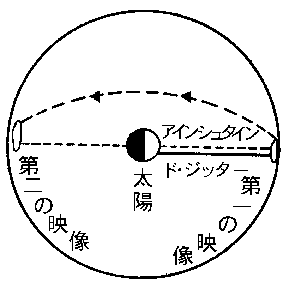
「では、最初反太陽説の方から云うと、アインシュタインは、太陽から出た光線が球形宇宙の
縁を廻って、再び
旧の点に帰って来ると云うのです。そして、そのために、最初宇宙の極限に達した時、そこで第一の像を作り、それから、数百万年の旅を続けて球の外圏を廻ってから、今度は背後に当る対向点まで来ると、そこで第二の像を作ると云うのです。しかしその時には、すでに太陽は死滅していて一個の暗黒星にすぎないでしょう。つまり、その映像と対称する実体が、天体としての生存の世界にはないのです。どうでしょう久我さん、
実体は死滅しているにもかかわらず過去の映像が現われる――その因果関係が、ちょうどこの場合算哲博士と六人の死者との関係に相似してやしませんか。なるほど、一方は
Å（
一耗の一千万分の一）であり、片方は
百万兆哩でしょうが、しかしその対照も、世界空間においては、たかが一微小線分の問題にすぎないのです。それからジッターは、その説をこう訂正しているのですよ。遠くなるほど、
螺旋状星雲のスペクトル線が赤の方へ移動して行くので、それにつれて、光線の振動週期が遅くなると推断しています。それがために、宇宙の極限に達する頃には光速が
零となり、そこで進行がピタリと止ってしまうというのですよ。ですから、宇宙の
縁に映る像はただ一つで、恐らく実体とは異ならないはずです。そこで僕等は、その二つの理論の中から、黙示図の原理を択ばなければならなくなりました」
「ああ、まるで
狂人になるような話じゃないか」
熊城はボリボリふけを落しながら呟いた。「サア、そろそろ、天国の蓮台から降りてもらおうか」
法水は熊城の好謔にたまらなく苦笑したが、続いて結論を云った。
「勿論太陽の心霊学から離れて、ジッターの説を人体生理の上に移してみるのです。すると、宇宙の半径を横切って長年月を経過していても、実体と映像が異ならない――その理法が、人間生理のうちで何事を意味しているでしょうか。たとえば、ここに病理的な潜在物があって、それが、発生から生命の
終焉に至るまで、生育もしなければ減衰もせず、常に不変な形を保っているものと云えば……」
「と云うと」
「それが特異体質なんです」と法水は昂然と云い放った。「恐らくその中には、心筋質肥大のようなものや、あるいは、硬脳膜矢状縫合癒合がないとも限りません。けれども、それが対称的に抽象出来るというのは、つまり人体生理の中にも、自然界の法則が循環しているからなんです。現に
体質液学派は、生理現象を熱力学の範囲に導入しようとしています。ですから、無機物にすぎない算哲博士に不思議な力を与えたり、人形に
遠感的な性能を想像させるようなものは、つまるところ、犯人の
狡猾な
擾乱策にすぎんのですよ。たぶんこの図の死者の船などにも、時間の進行という以外の意味はないでしょう」
特異体質――。論争の
綺びやかな火華にばかり魅せられていて、その蔭に、こうした陰惨な色の
燧石があろうなどとは、事実夢にも思い及ばぬことだった熊城は神経的に
掌の汗を拭きながら、
「なるほど、それなればこそだ――。家族以外にも易介を加えているのは」
「そうなんだ熊城君」と法水は満足気に
頷いて、「だから、謎は図形の本質にはなくて、むしろ、作画者の意志の方にある。しかし、どう見てもこの医学の
幻想は、片々たる良心的な警告文じゃあるまい」
「だが、すこぶる
飄逸な形じゃないか」と検事は異議を唱えて、「それで露骨な暗示もすっかりおどけてしまってるぜ。犯罪を醸成するような空気は、
微塵もないと思うよ」と抗弁したが、法水は
几帳面に自分の説を述べた。
「なるほど、
飄逸や
戯喩は、一種の生理的
洗滌には違いないがね。しかし、感情の
捌け口のない人間にとると、それがまたとない危険なものになってしまうんだ。だいたい、一つの世界一つの観念――しかない人間というものは、興味を与えられると、それに向って偏執的に傾倒してしまって、ひたすら逆の形で感応を求めようとする。その倒錯心理だが――それにもしこの図の本質が映ったとしたら、それが最後となって、観察はたちどころに
捻れてしまう。そして、様式から個人の経験の方に移ってしまうんだ。つまり、喜劇から悲劇へなんだよ。で、それからは、気違いみたいに自然淘汰の跡を追いはじめて、冷血的な怖ろしい狩猟の心理しかなくなってしまうのだ。だから
支倉君、僕はソーンダイクじゃないがね、マラリヤや黄熱病よりも、雷鳴や闇夜の方が怖ろしいと思うよ」
「マア、犯罪徴候学……」鎮子は相変らずの
冷笑主義を発揮して、
「だいたいそんなものは、ただ瞬間の直感にだけ必要なものとばかり思っていましたわ。ところで易介という話ですが、あれはほとんど家族の一員に等しいのですよ。まだ七年にしかならない私などとは違って、
傭人とは云い条、幼い頃から四十四の
今日まで、ずうっと算哲様の手許で育てられてまいったのですから。それに、この図は勿論索引には載っておりませず、絶対に人目に触れなかったことは断言いたします。算哲様の歿後誰一人触れたことのない、埃だらけな未整理図書の底に
埋もれていて、この私でさえも、昨年の暮まではいっこうに知らなかったほどでございますものね。そうして、貴方の御説どおりに、犯人の計画がこの黙示図から出発しているものとしましたなら、犯人の算出は――いいえこの
減算は、大変簡単ではございませんこと」
この不思議な老婦人は、突然解し難い露出的態度に出た。法水もちょっと
面喰ったらしかったが、すぐに
洒脱な調子に戻って、
「すると、その計算には、幾つ無限記号を附けたらよいのでしょうかな」と云った後で、驚くべき言葉を吐いた。「しかし、恐らく犯人でさえ、この図のみを必要とはしなかったろうと思うのです。
貴女は、もう半分の方は御存じないのですか」
「もう半分とは……誰がそんな妄想を信ずるもんですか

」と鎮子が思わずヒステリックな声で叫ぶと、始めて法水は彼の過敏な神経を明らかにした。法水の直観的な思惟の
皺から放出されてゆくものは、黙示図の図読といいこれといい、すでに人間の感覚的限界を越えていた。
「では、御存じなければ申し上げましょう。たぶん、奇抜な想像としかお考えにならないでしょうが、実はこの図と云うのが、二つに割った半葉にすぎないんですよ。六つの図形の表現を超絶したところに、それは深遠な内意があるのです」
熊城は驚いてしまって、
種々と図の
四縁を折り曲げて合わせていたが、「法水君、
洒落はよしにし給え。幅広い
刃形はしているが、非常に正確な線だよ。いったいどこに、後から
截った跡があるのだ？」
「いや、そんなものはないさ」法水は無雑作に云い放って、全体がの形をしている黙示図を指し示した。「この形が、一種の
記号語なんだよ。元来死者の秘顕なんて陰険きわまるものなんだから、方法までも実に
捻れきっている。で、この図も見たとおりだが、全体が
刀子（
石器時代の滑石武器）の刃形みたいな形をしているだろう。ところが、その
右肩を斜めに截った所が、実に深遠な意味を含んでいるんだよ。無論算哲博士に、考古学の
造詣がなけりゃ問題にはしないけれども、この形と符合するものが、ナルマー・メネス王朝あたりの
金字塔前象形文字の中にある。第一、こんな窮屈な不自然きわまる形の中に、博士がなぜ
描かねばならなかったものか、考えてみ給え」
そうして、黙示図の余白に、鉛筆で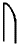の形を書いてから、
「熊城君、これが

を表わす
上古埃及の分数数字だとしたら、僕の想像もまんざら妄覚ばかりじゃあるまいね」と
簡勁に結んで、それから鎮子に云った。「勿論、死語に現われた寓意的な形などというものは、いつか訂正される機会がないとも限りません。けれども、ともかくそれまでは、この図から犯人を算出することだけは、避けたいと思うのです」
その間、鎮子は
懶気に宙を
瞶めていたが、彼女の眼には、真理を追求しようという激しい熱情が燃えさかっていた。そして、法水の澄みきった美しい思惟の世界とは異なって、物々しい陰影に富んだ質量的なものをぐいぐい積み重ねてゆき、実証的な深奥のものを
闡明しようとした。
「なるほど独創は平凡じゃございませんわね」と
独言のように
呟いてから、再び
旧どおり冷酷な表情に返って、法水を見た。「ですから、実体が仮象よりも華やかでないのは道理ですわ。しかし、そんなハム族の葬儀用記念物よりかも、もしその四角の光背と死者の船を、事実目撃した者があったとしたらどうなさいます？」
「それが
貴女なら、僕は
支倉に云って、起訴させましょう」と法水は動じなかった。
「いいえ、易介なんです」鎮子は静かに云い返した。「ダンネベルグ様が
洋橙を召し上る十五分ほど前でしたが、易介はその前後に十分ばかり
室を空けました。それが、後で訊くとこうなんです。ちょうど神意審問の会が始まっている
最中だったそうですが、その時易介が裏玄関の石畳の上に立っていると、ふと二階の中央で彼の眼に映ったものがありました。それが、会が行われている室の右隣りの張出窓で、そこに誰やら居るらしい様子で、真黒な人影が薄気味悪く動いていたと云うのです。そして、その時地上に何やら落したらしい微かな音がしたそうですが、それが気になってたまらず、どうしても見に行かずにはいられなかったと申すのでした。ところが、易介が発見したものは、辺り一面に散在している硝子の破片にすぎなかったのです」
「では、易介がその場所へ達するまでの経路をお訊きでしたか」
「いいえ」と鎮子は
頸を振って、「それに伸子さんは、ダンネベルグ様が卒倒なさるとすぐ、隣室から水を持ってまいったというほどですし、ほかにも誰一人として、座を動いた方はございませんでした。これだけ申せば、私がこの黙示図に
莫迦らしい執着を持っている理由がお判りでございましょう。勿論その人影というのは、
吾々六人のうちにはないのです。と云って、傭人は犯人の圏内にはございません。ですから、この事件に何一つ残されていないと云うのも、しごく道理なんでございますわ」
鎮子の陳述は再び凄風を招き寄せた。法水はしばらく
莨の赤い尖端を
瞶めていたが、やがて意地悪げな微笑を
泛べて、
「なるほど、しかし、ニコル教授のような間違いだらけな先生でも、これだけは巧いことを云いましたな。結核患者の血液の中には、脳に
譫妄を起すものを含めり――って」
「ああ、いつまでも貴方は……」といったん鎮子は
呆れて叫んだが、すぐに
毅然となって、「それでは、これを……。この紙片が硝子の上に落ちていたとしましたなら、易介の
言には形がございましょう」と云って、
懐中から取り出したものがあった。それは、
雨水と泥で汚れた用箋の
切端だったが、それには黒インクで、次のような
独逸文が
認められてあった。
Undinus sich winden
「これじゃとうてい筆蹟を
窺えようもない。まるで
蟹みたいなゴソニック文字だ」といったん法水は失望したように
呟いたが、その口の下から、両眼を輝かせて、「オヤ妙な転換があるぞ。元来この一句は、
水精よ
蜿くれ――なんですが、これには、女性の
Undine に us をつけて、男性に変えてあるのです。しかし、これが何から引いたものであるか、御存じですか。それから、この
館の蔵書の中に、グリムの『古代独逸詩歌傑作に
就いて』かファイストの『独逸語史料集』でも」
「
遺憾ながら、それは存じません。言語学の方は、のちほどお報せすることにいたします」と鎮子は案外率直に答えて、その章句の解釈が法水の口から出るのを待った。しかし、彼は紙片に眼を伏せたままで、容易に口を開こうとはしなかった。その沈黙の間を狙って熊城が云った。
「とにかく、易介がその場所へ行ったについては、もっと重大な意味がありますよ。サァ何もかも包まずに話して下さい。あの男はすでに馬脚を露わしているんですから」
「サァ、それ以外の事実と云えば、たぶんこれでしょう」と鎮子は相変らず皮肉な調子で、「その間私が、この室に一人ぼっちだったというだけの事ですわ。しかし、どうせ疑われるのなら、最初にされた方が……いいえ、たいていの場合が、後で何でもないことになりますからね。それに伸子さんとダンネベルグ様が、神意審問会の始まる二時間ほど前に争論をなさいましたけれども、それやこれやの事柄は、事件の本質とは何の関係もないのです。第一、易介が姿を消したことだって、
先刻のロレンツ収縮の話と同じことですわ。その理学生に似た倒錯心理を、貴方の
恫
訊問が作り出したのです」
「そうなりますかね」と
懶気に呟いて、法水は顔を上げたが、どこか、ある出来事の可能性を暗受しているような、陰鬱な影を漂わせていた。が、鎮子には、
慇懃な口調で云った。
「とにかく、
種々と材料をそろえて頂いたことは感謝しますが、しかし結論となると、はなはだ遺憾千万です。貴女の見事な類推論法でも、結局私には、いわゆる、
如き観を呈するものとしか見られんのですからね。ですからたとい人形が眼前に現われて来たにしたところで、私は、それを幻覚としか見ないでしょう。第一そういう、非生物学的な、力の所在というのが判らないのです」
「それは段々とお判りになりますわ」と鎮子は最後の駄目を押すような語気で云った。「実は、算哲様の日課書の中に――それが自殺なされた前月昨年の三月十日の欄でしたが――そこにこういう記述があるのです。
吾、隠されねばならぬ隠密の力を求めてそれを得たれば、この日魔法書を焚けり――と。と申して、すでに無機物と化したあの方の遺骸には、一顧の
価値もございませんけれど、なんとなく私には、無機物を有機的に動かす、不思議な生体組織とでも云えるものが、この建物の中に隠されているような気がしてならないのです」
「それが、魔法書を焚いた理由ですよ」と法水は何事かを
仄めかしたが、「しかし、失われたものは再現するのみのことです。そうしてから改めて、貴女の数理哲学を伺うことにしましょう。それから、現在の財産関係と算哲博士が自殺した当時の状況ですが」とようやく黙示図の問題から離れて、次の質問に移ったが、その時鎮子は、法水を
瞶めたまま、腰を上げた。
「いいえ、それは執事の田郷さんの方が適任でございましょう。あの方はその際の発見者ですし、何より、この館ではリシュリュウ（
ルイ十三世朝の僧正宰相）と申してよろしいのですから」そうして、扉の方へ二、三歩歩んだ所で立ち止り、
屹然と法水を振り向いて云った。
「法水さん、与えられたものをとることにも、高尚な精神が必要ですわ。ですから、それを忘れた者には、後日必ず悔ゆる時機がまいりましょう」
鎮子の姿が扉の向うに消えてしまうと、論争一過後の
室は、ちょうど放電後の、真空といった空虚な感じで、再び
黴臭い沈黙が漂いはじめ、樹林で
啼く
鴉の声や、
氷柱が落ちる微かな音までも、聴き取れるほどの静けさだった。やがて、検事は
頸の根を叩きながら、
「久我鎮子は実象のみを追い、君は抽象の世界に溺れている。だがしかしだ。前者は自然の理法を否定せんとし、後者はそれを法則的に、経験科学の
範疇で律しようとしている――。法水君、この結論には、いったいどういう論法が必要なんだね。僕は
鬼神学だろうと思うんだが……」
「ところが支倉君、それが僕の夢想の
華さ――あの黙示図に続いていて、未だ誰一人として見たことのない半葉がある――それなんだよ」と夢見るような言葉を、法水はほとんど無感動のうちに云った。「その内容が恐らく算哲の焚書を始めとして、この事件のあらゆる疑問に通じているだろうと思うのだ」
「なに、易介が見たという人影にもか」検事は驚いて叫んだ。
と熊城も真剣に
頷いて、「ウン、あの女はけっして、嘘は吐かんよ。ただし問題は、その真相をどの程度の真実で、易介が伝えたかにあるんだ。だが、なんという不思議な女だろう」と
露わに驚嘆の色を
泛べて、「自分から好んで犯人の領域に近づきたがっているんだ」
「いや、
被作虐者かもしれんよ」と法水は
半身になって、
暢気そうに廻転椅子をギシギシ鳴らせていたが、「だいたい、
呵責と云うものには、得も云われぬ魅力があるそうじゃないか。その証拠にはセヴィゴラのナッケという尼僧だが、その女は宗教裁判の苛酷な審問の後で、転宗よりも、
還俗を望んだというのだからね」と云ってクルリと向きを変え、再び正視の姿勢に戻って云った。
「勿論久我鎮子は博識無比さ。しかし、あれは
索引みたいな女なんだ。記憶の
凝りが将棋盤の格みたいに、正確な配列をしているにすぎない。そうだ、まさに正確無類だよ。だから、独創も発展性も糞もない。第一、ああいう文学に感覚を持てない女に、どうして、非凡な犯罪を計画するような空想力が生れよう」
「いったい、文学がこの殺人事件とどんな関係があるかね？」と検事が聴き
咎めた。
「それが、あの
水精よ蜿くれ――さ」と法水は、初めて問題の一句を
闡明する態度に出た。「あの一句は、ゲーテの『ファウスト』の中で、
尨犬に化けたメフィストの魔力を破ろうと、あの全能博士が唱える呪文の中にある、勿論その時代を
風靡した
加勒底亜五芒星術の一文で、
火精・
水精・
風精・
地精の四妖に呼び掛けているんだ。ところで、それを鎮子が分らないのを不審に思わないかい。だいたいこういった古風な家で、書架に必ず姿を現わすものと云えば、まず思弁学でヴォルテール、文学ではゲーテだ。ところが、そういった古典文学が、あの女には些細な感興も起さないんだ。それからもう一つ、あの一句には薄気味悪い意思表示が含まれているのだよ」
「それは……」
「第一に、連続殺人の暗示なんだ。犯人は、すでに甲冑武者の位置を変えて、それで殺人を宣言しているが、この方はもっと具体的だ。殺される人間の数とその方法が明らかに語られている。ところで、ファウストの呪文に現われる妖精の数が判ると、それがグイと胸を衝き上げてくるだろう。何故なら、旗太郎をはじめ四人の外人の中で、その一人が犯人だとしたら、殺す数の最大限は、当然四人でなければなるまい。それから、これが殺人方法と関聯していると云うのは、最初に
水精を提示しているからだよ。よもや君は、人形の足型を作って敷物の下から現われた、あの異様な水の跡を忘れやしまいね」
「だが、犯人が
独逸語を知っている圏内にあるのは、確かだろう。それにこの一句はたいして
文献学的なものじゃない」と検事が云うのを、
「冗談じゃない。音楽は独逸の美術なり――と云うぜ。この館では、あの伸子という女さえ、
竪琴を弾くそうなんだ」と法水は、さも驚いたような表情をして、「それに、不可解きわまる性別の転換もあるのだから、結局言語学の蔵書以外には、あの呪文を裁断するものはないと思うのだよ」
熊城は組んだ腕をダラリと解いて、彼に似げない嘆声を発した。
「ああ、何から何まで嘲笑的じゃないか」
「そうだ、いかにも犯人は僕等の想像を超絶している。まさにツァラツストラ的な超人なんだ。この不思議な事件を、
従来のようなヒルベルト以前の論理学で説けるものじゃない。その一例があの水の跡なんだが、それを
陳腐な残余法で解釈すると、水が人形の体内にある発音装置を無効にした――という結論になる。けれども、事実はけっしてそうじゃないんだ。まして、全体がすこぶる多元的に構成されている――。何も手掛りはない。
曖昧朦朧とした中に薄気味悪い謎がウジャウジャと充満している。それに、死人が
埋もれている地底の世界からも、絶えず
紙礫のようなものが、ヒューヒューと
打衝って来るんだ。しかし、その中に、四つの要素が含まれていることだけは判るんだ。一つは、黙示図に現われている自然界の薄気味悪い姿で、その次は、未だに知られていない半葉を中心とする、死者の世界なんだ。それから三つ目が、既往の三度にわたる変死事件。そして最後が、ファウストの呪文を軸に発展しようとする、犯人の現実行動なんだよ」と、そこでしばらく
言を切っていたが、やがて法水の暗い調子に明るい色が差して、「そうだ支倉君、君にこの事件の覚書を作ってもらいたいのだが。だいたいグリーン殺人事件がそうじゃないか。終り頃になってヴァンスが覚書を作ると、さしもの難事件が、それと同時に奇蹟的な解決を遂げてしまっている。しかし、あれはけっして、作者の窮策じゃない。ヴァン・ダインは、いかに
因数を決定することが、切実な問題であるかを教えているんだ。だからさ。何より差し当っての急務というのが、それだ。
因数だ――さしずめその幾つかを、このモヤモヤした疑問の中から摘出するにあるんだよ」
それから検事が覚書を作っている間に、法水は十五分ばかり
室を出ていたが、間もなく、一人の私服と前後して戻って来た。その刑事は、館内の隅々までも捜索したにかかわらず、易介の発見がついに徒労に帰したという旨を報告した。法水は眉のあたりをビリビリ動かしながら、
「では、古代時計室と
拱廊を調べたかね」
「ところが、
彼処は」と私服は
頸を振って、「昨夜の八時に、執事が鍵を下したままなんですから。しかし、その鍵は紛失しておりません。それから
拱廊では、円廊の方の扉が、左側一枚開いているだけのことでした」
「フムそうか」といったん法水は
頷いたが、「ではもう打ち切ってもらおう。けっしてこの建物から外へは出てやしないのだから」と異様に矛盾した、二様の観察をしているかのような、
口吻を洩らすと、熊城は驚いて、
「冗談じゃない。君はこの事件にけばけばしい装幀をしたいんだろうが、なんといっても、易介の口以外に解答があるもんか」と今にも館外からもたらせられるらしい、
侏儒の
傴僂の発見を期待するのだった。こうして、ついに易介の失踪は、熊城の思う壺どおりに確定されてしまったが、続いて法水は、問題の硝子の破片があるという
附近の調査と、さらに次の喚問者として、執事の
田郷真斎を呼ぶように命じた。
「法水君、君はまた
拱廊へ行ったのかね」私服が去ると、熊城はなかば
揶揄気味に訊ねた。
「いや、この事件の幾何学量を確かめたんだよ。算哲博士が黙示図を描いたり、その知られてない半葉を暗示したについては、そこに何か、方向がなけりゃならん訳だろう」と法水はムスッとして答えたが、続いて驚くべき事実が彼の口を突いて出た。「それで、ダンネベルグ夫人を
狂人みたいにさせた、怖ろしい暗流が判ったのだ。実は、電話でこの村の役場を調べたんだが、驚くじゃないか、あの四人の外人は去年の三月四日に帰化していて、
降矢木の籍に、算哲の養子養女となって入籍しているんだ。それにまだ遺産相続の手続がされていない。つまり、この館は未だもって、正統の継承者旗太郎の手中には落ちていないのだよ」
「こりゃ驚いた」検事はペンを抛り出して唖然となってしまったが、すぐに指を繰ってみて、「たぶん手続が遅れているのは、算哲の遺言書でもあるからだろうが、
剰すところもう、法定期限は二ヶ月しかない。それが切れると、遺産は国庫の中に落ちてしまうんだ」
「そうなんだ。だから、そこにもし殺人動機があるものとすれば、ファウスト博士の隠れ
蓑――あの
五芒星の円が判るよ。しかし、どのみち一つの
角度には相違ないけれども、なにしろ四人の帰化入籍というような、思いもつかぬものがあるほどだからね。その深さは並大抵のものじゃあるまい。いや、かえって僕は、それを
迂闊に首肯してはならないものを握っているんだ」
「いったい何を？」
「
先刻君が質問した中の、（一）・（二）・（五）の箇条なんだよ。
甲冑武者が階段廊の上へ飛び上っていて――、
召使は聞えない音を聴いているし――、それから
拱廊では、ボードの法則が相変らず、海王星のみを証明出来ないのだがね」
そういう驚くべき
独断を吐き捨てて、法水は検事が書き終った覚書を取り上げた。それには、私見を交えない事象の配列のみが、正確に記述されてあった。
一、死体現象に関する疑問（略）
二、テレーズ人形が現場に残せる証跡について（略）
三、当日事件発生前の動静
一、早朝押鐘津多子の離館。
二、午後七時より八時――。甲冑武者の位置が階段廊上に変り、和式具足の二つの兜が取り替えられている。
三、午後七時頃、故算哲の秘書紙谷伸子が、ダンネベルグ夫人と争論せしと云う。
四、午後九時――。神意審問会中にダンネベルグは卒倒し、その時刻と符合せし頃、易介はその隣室の張出縁に異様な人影を目撃せりと云う。
五、午後十一時――。伸子と旗太郎がダンネベルグを見舞う。その折、旗太郎は壁のテレーズの額を取り去り、伸子はレモナーデを毒味せり。なお、青酸を注入せる洋橙を載せたものと推察さるる果物皿を、易介が持参せるはその時なれども、肝腎の洋橙については、ついに証明されるものなし。
六、午後十一時四十五分頃。易介は最前の人影が落せしものを見て、裏庭の窓際に行き、硝子の破片並びにファウスト中の一章を記せる紙片を拾う。その間室内には被害者と鎮子のみなり。
七、同零時頃。被害者洋橙を喰す。
なお、鎮子、易介、伸子以外の四人の家族には、記述すべき動静なし。
四、黒死館既往変死事件について（略）
五、既往一年以来の動向
一、昨年三月四日 四人の異国人の帰化入籍。
一、同 三月十日 算哲は日課書に不可解なる記述を残し、その日魔法書を焚くと云う。
一、同 四月二十六日 算哲の自殺。
以来館内の家族は不安に
怯え、ついに被害者は神意審問法により、その根元をなす者を究めんとす。
六、黙示図の考察（略）
七、動機の所在（略）
読み終ると法水は云った。
「この箇条書のうちで、第一の死体現象に関する疑問は、第三条の中に尽されていると思う。外見は、いっこう何でもなさそうな時刻の羅列にすぎないよ。しかし、
洋橙が被害者の口の中に飛び込んだ経路だけにでも、きっとフィンスレル幾何の公式ほどのものが、ギュウギュウと詰っているに違いないんだ。それから、算哲の自殺が、四人の帰化入籍と焚書の直後に起っているのにも、注目する価値があると思う」
「いや、君の深奥な解析などはどうでもいいんだ」と熊城は吐き出すような語気で、「そんな事より、動機と人物の行動との間に、大変な矛盾があるぜ。伸子はダンネベルグ夫人と争論をしているし、易介は知ってのとおりだ。それにまた鎮子だっても、易介が
室を出ていた間に、何をしたか判ったものじゃない。ところが、君の云うファウスト博士の円は、まさに残った四人を指摘しているんだ」
「すると、
儂だけは安全圏内ですかな」
その時背後で、異様な
嗄れ声が起った。三人が
吃驚して後を振り向くと、そこには、執事の田郷真斎がいつの間にか
入り込んでいて、
大風な微笑をたたえて
見下している。しかし、真斎があたかも風のごとくに、音もなく三人の背後に現われ得たのも、道理であろう。下半身不随のこの老史学者は、ちょうど傷病兵でも使うような、
護謨輪で滑かに走る手働四輪車の上に載っているからだった。真斎は相当著名な中世史家で、この館の執事を勤める
傍に、数種の著述を発表しているので知られているが、もはや七十に
垂んとする老人だった。
無髯で
赭丹色をした顔には、
顴骨突起と下顎骨が異常に発達している代りに、鼻翼の周囲が陥ち窪み、その相はいかにも醜怪で――と云うよりもむしろ脱俗的な、いわゆる
胡面梵相とでも云いたい、まるで道釈画か十二神将の中にでもあるような、実に異風な顔貌だった。そして、頭に
印度帽を載せたところといい――そのすべてが、一語で
魁異と云えよう。しかし、どこか妥協を許さない
頑迷固陋と云った感じで、全体の印象からは、甲羅のような
外観がするけれども、そこには、鎮子のような深い思索や、複雑な性格の匂いは見出されなかった。なお、その手働四輪車は、前部の車輪は小さく、後部のものは自転車の原始時代に見るような素晴らしく大きなもので、それを、起動機と制動機とで操作するようになっていた。
「ところで、遺産の配分ですが」と熊城が、真斎の挨拶にも会釈を返さず、性急に口切り出すと、真斎は
不遜な態度で
嘯いた。
「ホウ、四人の入籍を御存じですかな。いかにも事実じゃが、それは個人個人にお訊ねした方がよろしかろう。
儂には、とんとそういう点は……」
「しかし、
既くに開封されているじゃありませんか。遺言書の内容だけは、話してしまった方がいいでしょう」熊城はさすがに老練な
口穽を掛けたけれども、真斎はいっこうに動ずる
気色もなく、
「なに、遺言状……ホホウ、これは初耳じゃ」と軽く受け流して、早くも冒頭から、熊城との間に殺気立った黙闘が開始された。法水は最初真斎を
一瞥すると同時に、何やら黙想に
耽るかの様子だったが、やがて
収斂味の
［＃「収斂味の」は底本では「収歛味の」］かった瞳を投げて、
「ハハア、貴方は
下半身不随ですね。なるほど、黒死館のすべてが内科的じゃない。ところで、貴方が算哲博士の死を発見されたそうですが、たぶんその下手人が、誰であるかも御存じのはずですがね」
これには、真斎のみならず、検事も熊城もいっせいに唖然となってしまった。真斎は
蟇みたいに両
肱を立てて半身を乗り出し、
哮けるような声を出した。
「
莫迦な、自殺と決定されたものを……。
貴方は検屍調書を御覧になられたかな」
「だからこそです」と法水は追求した。「貴方は、その殺害方法までもたぶん御承知のはずだ。だいたい、太陽系の内惑星軌道半径が、どうしてあの老医学者を殺したのでしょう？」
「内惑星軌道半径
」このあまりに
突飛な一言に眩惑されて、真斎は
咄嗟に答える
術を失ってしまった。法水は厳粛な調子で続けた。
「そうです。無論史家である貴方は、中世ウェールスを
風靡したバルダス信経を御存じでしょう。あのドルイデ（
九世紀レゲンスブルグの僧正魔法師）の流れを
汲んだ、呪法経典の信条は何でしたろうか（
宇宙にはあらゆる象徴瀰漫す。しかして、その神秘的な法則と配列の妙義は、隠れたる事象を人に告げ、あるいは予め告げ知らしむ。）」
「しかし、それが」
「つまり、その分析綜合の理を云うのです。私はある憎むべき人物が、博士を殺した微妙な方法を知ると同時に、初めて、
占星術や
錬金術の妙味を知ることが出来ました。確か博士は、
室の中央で足を扉の方に向け、心臓に突き立てた短剣の
束を固く握り締めて倒れていたのでしたね。しかし、入口の扉を中心にして、水星と金星の軌道半径を描くと、その中では、他殺のあらゆる証跡が消えてしまうのです」と法水は室の見取図に、別図のような二重の半円を描いてから、
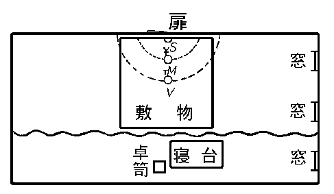
「ところで、その前にぜひ知っておかねばならないのは、惑星の記号が或る化学記号に相当するという事なんです。
Venus が金星であることは御承知でしょうが、その傍ら銅を表わしています。また、
Mercury は、水星であると同時に、水銀の名にもなっているのです。しかし、古代の鏡は、
青銅の薄膜の裏に
水銀を塗って作られていたのですよ。そうすると、その鏡面に――つまり、この図では金星の後方に当るのですが、それには当然、
帷幕の後方から進んで来る犯人の顔が映ることになりましょう。何故なら、金星の半径を水星の位置にまで縮めるということは、素晴らしい殺人技巧であったと同時に、犯行が行われてゆく方向も、また博士と犯人の動きさえも同時に表わしているからなんです。そして、しだいに犯人は、それを中央の太陽の位置にまで縮めてゆきました。太陽は、当時算哲博士が
終焉を遂げた位置だったのです。しかし、背面の
水銀が太陽と交わった際にいったい何が起ったと思いますか？」
ああ、内惑星軌道半径縮小を比喩にして、法水は何を語ろうとするのであろうか。検事も熊城も、近代科学の精を尽した法水の推理の中へ、まさかに錬金道士の蒼暗たる世界が、
前期化学特有の類似律の原理とともに、現われ出ようとは思わなかった。
「ところで田郷さん、Ｓ一字でどういうものが表わされているでしょうか」と法水は、調子を
弛めずに続けた。「第一に太陽、それから
硫黄ですよ。ところが、水銀と硫黄との化合物は、朱ではありませんか。朱は太陽であり、また血の色です。つまり、扉の
際で算哲の心臓が
綻びたのです」
「なに、扉の際で……。これは滑稽な放言じゃ」と真斎は狂ったように、肱掛を叩き立てて、「
貴方は夢を見ておる。まさに実状を顛倒した話じゃ。あの時血は、博士が倒れている周囲にしか流れておらなかったのです」
「それは、いったん縮めた半径を、犯人がすぐ
旧どおりの位置に戻したからですよ。それから、もう一度Ｓの字を見るのです。まだあるでしょう。
悪魔会議日、
立法者……。そうです、まさしく立法者なんです。犯人はあの像のように……」と法水は、そこでいったん唇を閉じ、じいっと真斎を
瞶めながら、次に吐く言葉との間の時間を、胸の中で秘かに計測しているかの様子だった。ところが、
突然頃合を計って、
「あのように、立って歩くことの出来ない人間――それが犯人なんです」と鋭い声で云うと、不思議な事には、それとともに――
解し難い異状が、真斎に起った。
それが、始め上体に衝動が起ったと見る間に、両眼を
き口を
喇叭形に開いて、ちょうどムンクの老婆に見るような無残な形となった。そして、絶えず唾を
嚥み下そうとするもののような苦悶の状を続けていたが、そのうちようやく、
「おお、
儂の身体を見るがいい。こんな不具者がどうして……」と
辛くも
嗄れ声を絞り出した。が、真斎には確か咽喉部に何か異常が起ったとみえて、その後も引き続き呼吸の困難に悩み、異様な
吃音とともに激しい苦悶が現われるのだった。その有様を、法水は異常な冷やかさで見やりながら云い続けたが、その態度には、相変らず計測的なものが現われていて、彼は自分の
言の
速度に、周到な注意を払っているらしい。
「いや、その不具な部分を
俟ってこそ、殺人を犯すことが出来たのですよ。僕は貴方の肉体でなく、その手働四輪車と
敷物だけを見ているのです。たぶんヴェンヴェヌート・チェリニ（
文芸復興期の大金工で驚くべき殺人者）が、カルドナツォ家のパルミエリ（
ロムバルジヤ第一の大剣客）を
斃したという事蹟を御存じでしょうが、腕で劣ったチェリニは、最初
敷物を弛ませて置いて、中途でそれをピインと張らせ、パルミエリが足許を奪われて
蹌踉くところを刺殺したのでした。しかし、算哲を斃すためには、その敷物を応用した
文芸復興期の剣技が、けっして一場の
伝奇ではなかったのです。つまり、内惑星軌道半径の縮伸というのは、要するに貴方が
行った、
敷物のそれにすぎなかったのですよ。さて、犯行の実際を説明しますかな」と云ってから、法水は検事と熊城に
詰責気味な視線を向けた。「だいたい何故扉の浮彫を見ても、君達は、
傴僂の眼が窪んでいるのに気がつかなかったのだね」
「なるほど、楕円形に凹んでいる」熊城はすぐ立って行って扉を調べたが、はたして法水の云うとおりだった。法水はそれを聴くと、会心の
笑を真斎に向けて、
「ねえ田郷さん、その窪んでいる位置が、ちょうど博士の心臓の辺に当りはしませんか。それが、楕円形をしているのですから、護符刀の
束頭であることは一目瞭然たるものです。そうなると、当然天寿を楽しむよりほかに自殺の動機など何一つなく、おまけにその日は、愛人の人形を抱いて若かった日の憶い出に
耽ろうとしたほどの博士が、何故
扉際に押し付けられて、心臓を貫いていたのでしょう」
真斎は声を発することはおろか、依然たる症状を続けて、気力がまさに尽きなんとしていた。蝋白色に変った顔面からは
膏のような汗が滴り落ち、とうてい正視に耐えぬ惨めさだった。ところが、それにもかかわらず法水は、この残忍な追求をいっかな止めようとはしなかった。
「ところで、ここに奇妙な
逆説があるのです。その殺人が、かえって五体の完全な人間には不可能なんですよ。何故なら、ほとんど音の立たない、手働四輪車の機械力が必要だったからで、それがまず、
敷物に波を作って縮め重ねてゆき、終いには、博士を扉に激突させたからでした。何分にも、当時
室は闇に近い薄明りで、右側の
帷幕の蔭に貴方が隠れていたのも知らずに、博士は帷幕の左側を排して、召使が運び入れて置いた人形を寝台の上で見、それから、鍵を下しに扉の方へ向ったのでしょう。ところが、それを追うて、貴方の犯行が始まったのでしたね。まずそれ以前に、敷物の向う端を
鋲で止め、人形の着衣から
護符刀を抜いておく――そしていよいよ博士が背後を見せると、
敷物の端をもたげて、縦にした部分を足台で押して速力を加えたので、
敷物には
皺が作られ、勿論その波はしだいに高さを加えたのです。そして、背後から足台を、博士の
膝膕窩に衝突させる。と、波が横から潰されて、ほとんど腋下に及ぶほどの高さになってしまう。と同時に、いわゆるイエンドラシック反射が起って、その部分に加えられた衝撃が、上膊筋に伝導して反射運動を起すのですから、当然博士は、無意識裡に両腕を水平に上げる。その両脇から博士を
後様に抱えて、右手に持った
護符刀を心臓の上に軽く突き立て、すぐにその手を離してしまう。と、博士は思わず反射的に短剣を握ろうとするので、間髪の
間に二つの手が入れ代って、今度は博士が
束を握ってしまう。そして、その瞬後扉に衝突して、自分が束を握った刃が心臓を貫く。つまり、高齢で歩行の
遅い博士に、
敷物に波を作りながら音響を立てずして追い付ける速力と、その機械的な圧進力――。それから、束を握らせるために、両腕を自由にしておかねばならないので、何よりまず
膝膕窩を刺戟して、イエンドラシック反射を起さねばならない――。そういうすべての要素を具備しているのが、この手働四輪車でして、その犯行は寸秒の間に、声を立てる
間がなかったほど恐ろしい速度で行われたのでした。ですから、貴方の不具な部分をもってせずには、誰一人博士に、自殺の証跡を残して、息の根を止めることは不可能だったのですよ」
「すると、
敷物の波は何のためだい」熊城が横合から訊ねた。
「それが、内惑星軌道半径の縮伸じゃないか。いったん
点にまで縮んだものを、今度は波の頂点に博士の
頸を合わせて、
敷物を
旧どおりに伸ばしていったのだ。だから、
束を握り締めたままで、博士の死体は
室の中央に来てしまったのだよ。勿論、
空室でも、鎖されていたのではないから、ほとんど跡は残らぬし、死後はけっして固く握れるものじゃない。けれども、だいたい検屍官なんてものが、秘密の不思議な魅力に、感受性を欠いているからなんだよ」
その時、この殺気に充ちた陰気な室の空気を
揺ぶって、古風な
経文歌を奏でる、
侘しい
鐘鳴器の音が響いてきた。法水は
先刻尖塔の中に
錘舌鐘（
錘舌のある振り鐘）は見たけれども、
鐘鳴器（
鍵盤を押して音調の異なる鐘を叩きピアノ様の作用をするもの）の所在には気がつかなかった。しかし、その異様な対照に気を奪われている矢先だった。それまで肱掛に
俯伏していた真斎が必死の努力で、ほとんど
杜絶れがちながらも、微かな声を絞り出した。
「嘘だ……算哲様はやはり
室の中央で死んでいたのだ……。しかし、この光栄ある一族のために……
儂は世間の耳目を怖れて、その現場から取り除いたものがあった……」
「何をです？」
「それが黒死館の悪霊、テレーズの人形でした……背後から
負さったような形で死体の下になり、短剣を握った算哲様の右手の上に両掌を重ねていたので……それで、衣服を通した出血が少なかったことから……
儂は易介に命じて」
検事も熊城も、もう
竦み上るような驚愕の色は現わさなかったけれども、すでに生存の世界にはないはずの不思議な力の所在が、一事象ごとに濃くなってゆくのを覚えた。しかし、法水は冷然と云い放った。
「これ以上はやむを得ません。僕もこの上進むことは不可能なんですから。博士の死体は
既に泥のような無機物ですし、もう起訴を決定する理由と云えば、貴方の自白以外にないのですからね」
そう法水が云い終った時だった。その時
経文歌の
音が止んだかと思うと、突然思いもよらぬ美しい
絃の
音が耳膜を揺りはじめた。遠く幾つかの壁を隔てた彼方で、四つの絃楽器は、あるいは荘厳な
全絃合奏となり、時としては
囁く小川のように、
第一提琴がサマリアの平和を唱ってゆくのだった。それを聴くと、熊城は腹立たしそうに云い放った。
「何だあれは、家族の一人が殺されたと云うのに」
「今日は、この館の設計者クロード・ディグスビイの
忌斎日でして……」と真斎は苦し気な呼吸の下に答えた。「館の暦表の中に、帰国の船中
蘭貢で身を投げた、ディグスビイの追憶が含まれているのです」
「なるほど、声のない
鎮魂楽ですね」と法水は
恍惚となって云った。「なんだかジョン・ステーナーの作風に似ているような気がする。支倉君、僕はこの事件であの
四重奏団の演奏が聴けようとは思わなかったよ。サア、礼拝堂へ行ってみよう」
そうして、私服に真斎の手当を命じて、この
室を去らしめると、
「君は
何故、最後の一歩というところで追求を
弛めたのだ？」と熊城はさっそくに
詰り掛ったが、意外にも、法水は爆笑を上げて、
「すると、あれを本気にしているのかい」
検事も熊城も、途端に嘲笑されたことは覚ったけれども、あれほど整然たる条理に、とうていそのままを信ずることは出来なかった。法水は
可笑しさを耐えるような顔で、続いて云った。
「実をいうと、あれは僕の一番厭な
恫訊問なんだよ。真斎を見た瞬間に直感したものがあったので、応急に組み上げたのだったけれど、真実の目的と云えば、実はほかにあったのだ。ただ真斎よりも、精神的に優越な地位を占めたい――というそれだけの事なんだよ。この事件を解決するためには、まずあの頑迷な甲羅を砕く必要があるのだ」
「すると、扉の窪みは」
「二二が五さ。あれは、この扉の陰険な性質を
剔抉している。また、それと同時に水の跡も証明しているんだ」まさしく仰天に価する逆転だった。グワンと脳天をドヤされたかのように茫然となった二人に、法水はさっそく説明を始めた。「水で扉を開く。つまり、この扉を鍵なくして開くためには、水が欠くべからざるものだったのだ。ところで、最初それと類推させたものを話すことにしよう。マームズベリー卿が
著わした『ジョン・デイ博士鬼説』という古書がある。それには、あの魔法博士デイの奇法の数々が記されているのだが、その中で、マームズベリー卿を驚嘆させた隠顕扉の記録が載っていて、それが僕に、水で扉を
開け――と教えてくれたのだ。勿論一種の
信仰療法なんだが、まずデイは、
瘧患者を附添いといっしょに一室へ入れ、鍵を附添いに与えて扉を鎖さしめる。そして、約一時間後に扉を開くと、鍵が下りているにもかかわらず、扉は化性のものでもあるかのように、スウッと開かれてしまう。そこでデイは結論する――
憑神の
半山羊人は
遁れたり――と。ところが、まさしく扉の附近には山羊の臭気がするので、それで患者は精神的に治癒されてしまうのだ。ねえ熊城君、その山羊の臭気というものの中に、デイの詐術が含まれているのだよ。ところで、君はたぶん、ランプレヒト
湿度計にもあるとおりで、毛髪が湿度によって伸縮するばかりでなく、その度が長さに比例する事実も知っているだろう。そこで、試みに、その伸縮の理論を、落し金の微妙な動きに応用して見給え。知ってのとおり、
弾条で使用する落し金というのは、元来、
打附木材住宅（
漆喰壁の上に規則的な木配りで荒削りの木材を打ち附ける英国十八世紀初頭の建築様式）特有のものと云われているのだが、大体が平たい真鍮
桿の端に遊離しているもので、その桿の上下によって、支点に近い角体の二辺に沿い起倒する仕掛になっている。そして、支点に近づくほど起倒の内角が小さくなるということは、たぶん簡単な理法だから判っているだろう。そこで、落し金の支点に近い一点を結んで、その紐を、倒れた場合水平となるように張っておき、その線の中心とすれすれに、頭髪の束で結んだ
重錘を置いたと仮定しよう。そして、鍵穴から湯を注ぎ込む。すると、当然湿度が高くなるから、毛髪が伸長して、
重錘が紐の上に加わってゆき、勿論紐が
弓状になってしまう。したがって、その力が落し金の最小内角に作用して、倒れたものが起きてしまうのだ。だから、デイの場合は、それが羊の
尿だったろうと思うのだがね。またこの扉では、
傴僂の眼の裏面が、たぶんその装置に必要な
刳穴だったので、その薄い部分が、
頻繁に繰り返される乾湿のために、凹陥を起したに違いないのだよ。つまり、その仕掛を作ったのが算哲で、それを利用して永い間出入りしていた人物と云うのが、犯人に想像されるんだ。どうだね支倉君、これで
先刻人形の室で、犯人が何故絲と人形の
技巧を遺して置いたのか判るだろう。外側からの
技巧ばかりを詮索していた日には、この事件は永遠に、扉一つが鎖してしまうのだ。それに、そろそろこの辺から、ウイチグス呪法の雰囲気が濃くなってゆくような気がするじゃないか」
「すると、人形はその時の
溢れた水を踏んだという事になるね」と検事は、引きつれたような声を出した。「もう後は、あの鈴のような
音だけなんだ。これで
犯人を伴った人形の存在は、いよいよ確定されたとみて差支えない。しかし、君の神経が
閃くたびごとに、その結果が、君の意向とは反対の形で現われてしまう。それは、いったいどうしたってことなんだい」
「ウム、僕にもどうも
解せないんだ。まるで、
穽の中を歩いているような気がするよ」と法水にも錯乱した様子が見えると、
「僕はその点が両方に通じてやしないかと思うよ。いまの真斎の混乱はどうだ。あれはけっして看過しちゃならん」とこれぞとばかりに、熊城が云った。
「ところがねえ」と法水は苦笑して、「実は、僕の
恫訊問には、妙な
言だが、一種の生理
拷問とでも云うものが伴っている。それがあったので、初めてあんな素晴らしい効果が生れたのだよ。ところで、二世紀アリウス神学派の豪僧フィリレイウスは、こういう談法論を述べている。
霊気（
呼吸の義）は呼気とともに体外に脱出するものなれば、その空虚を打て――と。また、比喩には隔絶したるものを択べ――と。まさに至言だよ。だから、僕が内惑星軌道半径をミリミクロン的な殺人事件に結び付けたというのも、究極のところは、共通した
因数を容易に気づかれたくないからなんだ。そうじゃないか、エディントンの『
空間・時・及び引力』でも読んだ日には、その中の数字に、てんで対称的な観念がなくなってしまう。それから、ビネーのような中期の生理的心理学者でさえも、肺臓が満ちた際の均衡と、その質量的な豊かさを述べている。無論あの場合僕は、まさに
吸気を引こうとする際にのみ、激情的な言葉を符合させていったのだが、またそれと同時に、もしやと思った生理的な
衝撃も狙っていたのだ。それは、
喉頭後筋 搦
搦という持続的な呼吸障害なんだよ。ミュールマンはそれを『老年の原因』の中で、筋質骨化に伴う衝動心理現象と説いている。勿論
間歇性のものには違いないけれども、老齢者が息を吸い込む中途で調節を失うと、現に真斎で見るとおりの、無残な症状を発する場合があるのだ。だから、心理的にも器質的にも、僕は滅多に当らない、その二つの目を振り出したという訳なんだよ。とにかく、あんな間違いだらけの説なので、いっさい相手の思考を妨害しようとしたのと、もう一つは去勢術なんだ。あの
蠣の殻を開いて、僕はぜひにも聴かねばならないものがあるからだよ。つまり、僕の権謀術策たるや、ある一つの行為の前提にすぎないのだがね」
「驚いたマキアベリーだ。しかし、そう云うのは？」と検事が勢い込んで訊ねると、法水は微かに笑った。
「冗談じゃないよ、君の方でしたくせに。
先刻僕に訊ねた（一）・（二）・（五）の質問を忘れたのかい。それに、あのリシュリュウみたいな実権者は、不浄役人どもに黒死館の心臓を窺わせまいとしている。だからさ、あの男が鎮静注射から醒めた時が、事によるとこの事件の解決かもしれないのだよ」
法水は相変らず茫漠たるものを
仄めかしただけで、それから鍵孔に湯を注ぎ込み、実験の準備をしてから、演奏台のある階下の礼拝堂に
赴いた。
広間を横切ると、楽の
音は十字架と
楯形の
［＃「楯形の」は底本では「循形の」］浮彫のついた
大扉の彼方に迫っていた。扉の前には一人の
召使が立っていて、法水がその扉を細目に開くと、冷やりとした、だが広い空間を
佗しげに揺れている、寛闊な空気に触れた。それは、重量的な荘厳なもののみが持つ、不思議な魅力だった。礼拝堂の中には、
褐い蒸気の微粒がいっぱいに立ち
罩めていて、その
靄のような暗さの中で、弱い平穏な光線が、どこか鈍い夢のような形で漂うている。その光は聖壇の
蝋燭から来ているのであって、三稜形をした大燭台の前には乳香が
燻かれ、その
烟と光とは、
火箭のように林立している小円柱を
沿上って行って、頭上はるか
扇形に集束されている
穹窿の辺にまで達していた。楽の音は柱から柱へと反射していって、異様な和声を湧き起し、今にも、
列拱から
金色燦然たる聖服をつけた、司教助祭の一群が現われ出るような気がするのであった。が、法水にとってはこの空気が、問罪的な不気味なものとしか考えられなかった。
聖壇の前には半円形の演奏台が
設えてあって、そこに、ドミニク僧団の黒と白の服装をした、四人の楽人が無我恍惚の境に入っていた。
右端の、不細工な巨石としか見えないチェリスト、オットカール・レヴェズは、そこに半月形の
髯でも欲しそうなフックラ膨んだ頬をしていて、
体躯の割合には、小さな
瓢箪形の頭が載っていた。彼はいかにも楽天家らしく、おまけに、チェロがギターほどにしか見えない。その次席が、ヴィオラ奏者のオリガ・クリヴォフ夫人であって、眉弓が高く
眦が鋭く切れ、細い鉤形の鼻をしているところは、いかにも峻厳な相貌であった。聞くところによれば、彼女の技量はかの大独奏者、クルチスをも
凌駕すると云われているが、それもあろうか演奏中の態度にも、
傲岸な気魄と妙に
気障な、誇張したところが
窺われた。ところが、次のガリバルダ・セレナ夫人は、すべてが前者と対蹠的な観をなしていた。皮膚が蝋色に透き通って見えて、それでなくても、顔の輪廓が小さく、柔和な緩い円ばかりで、小じんまりと作られている。そして、黒味がちのパッチリした眼にも、凝視するような鋭さがない。総じてこの婦人には、憂鬱などこかに、謙譲な性格が隠されているように思われた。以上の三人は、
年齢四十四、五と推察された。そして、最後に第一
提琴を弾いているのが、やっと十七になったばかりの降矢木旗太郎だった。法水は、日本中で一番美しい青年を見たような気がした。が、その美しさもいわゆる俳優的な遊惰な
媚色であって、どの線どの陰影の中にも、思索的な深みや数学的な正確なものが現われ出てはいない。と云うのも、そういった
叡知の表徴をなすものが欠けているからであって、博士の写真において見るとおりの、あの端正な額の威厳がないからであった。
法水は、とうてい聴くことは出来ぬと思われた、この神秘楽団の演奏に接することは出来たけれども、彼は
徒らに陶酔のみはしていなかった。と云うのは、楽曲の最後の部分になると、二つの提琴が弱音器を附けたのに気がついたことであって、それがために、低音の
絃のみが高く圧したように響き、その感じが、天国の栄光に終る荘厳な
終曲と云うよりも、むしろ地獄から響いてくる、恐怖と嘆きの
呻きとでも云いたいような、実に異様な感を与えたことである。終止符に達する前に、法水は扉を閉じて側の
召使に訊ねた。
「君は、いつもこうして立番しているのかね」
「いいえ、今日が初めてでございます」と
召使自身も解せぬらしい面持だったが、その原因は何となく判ったような気がした。それから、三人がゆったりと歩んで行くうち、法水が口をきって、
「まさにあの扉が、地獄の門なんだよ」と
呟いた。
「すると、その地獄は、扉の内か外かね」と検事が問い返すと、彼は大きく呼吸をしてから、すこぶる芝居がかった身振で云った。
「それが外なのさ。あの四人は、確かに
怯えきっているんだ。もしあれが芝居でさえなければ、僕の想像と符合するところがある」
鎮魂楽の演奏は、階段を上りきった時に終った。そして、しばらくの間は何も聞えなかったけれども、それから三人が区劃扉を開いて、現場の
室の前を通る、廊下の中に出た時だった。再び
鐘鳴器が鳴りはじめて、今度はラッサスの
讃詠を奏ではじめたのであった（ダビデの詩篇第九十一篇）。
夜はおどろくべきことあり
昼はとびきたる矢あり
幽暗にはあゆむ疫癘あり
日午にはそこなう激しき疾あり
されどなんじ畏ることあらじ
法水はそれを小声で
口誦みながら、
讃詠と同じ葬列のような速度で歩んでいたが、しかし、その音色は繰り返す一節ごとに衰えてゆき、それとともに、法水の顔にも憂色が加わっていった。そして、三回目の繰り返しの時、
幽暗には――の一節はほとんど聞えなかったが、次の、
日午には――の一節に来ると、不思議な事には、同じ音色ながらも倍音が発せられた。そうして、最後の節はついに聴かれなかったのであった。
「なるほど、君の実験が成功したぜ」と検事は眼を円くしながら、鍵の下りた扉を開いたが、法水のみは正面の壁に背を
凭せたままで、暗然と宙を
瞶めている。が、やがて
呟くような微かな声で云った。
「支倉君、
拱廊へ行かなけりゃならんよ。
彼処の吊具足の中で、たしか易介が殺されているんだ」
二人は、それを聴いて思わず飛び上ってしまった。ああ、法水はいかにして、
鐘鳴器の音から死体の所在を知ったのであろうか
ところが、
法水はすぐ鼻先の
拱廊へは行かずに、円廊を迂回して、礼拝堂の
円蓋に接している鐘楼階段の下に立った。そして、課員全部をその場所に召集して、まずそこを始めに、屋上から壁廓上の
堡楼にまで見張りを立て、尖塔下の鐘楼を注視させた。こうしてちょうど二時三十分、
鐘鳴器が鳴り終ってからわずかに五分の後には、蟻も洩らさぬ緊密な包囲形が作られたのであった。そのすべてが神速で集中的であり、もう事件がこれで終りを告げるのではないかと思われたほどに、結論めいた緊張の下に運ばれていったのだった。けれども、勿論法水の脳髄を、截ち割って見ないまでは、はたして彼が何事を企図しているのか――予測を許さぬことは云うまでもないのである。
ところで読者諸君は、法水の言動が意表を超絶している点に気づかれたであろう。それがはたして的中しているや否やは別としても、まさに人間の限界を越さんばかりの飛躍だった。
鐘鳴器の音を聴いて、易介の死体を
拱廊の中に想像したかと思うと、続いて行動に現われたものは、鐘楼を目している。しかし、その晦迷錯綜としたものを、過去の言動に照し合わせてみると、そこに
一縷脈絡するものが発見されるのである。と云うのは、最初検事の箇条質問書に答えた内容であって、その後執事の田郷真斎に残酷な生理拷問を課してまでも、なおかつ後刻に至って彼の口から吐かしめんとした、あの大きな
逆説の事であった。勿論その共変法じみた因果関係は、他の二人にも即座に響いていた。そして、その驚くべき内容が、たぶん真斎の陳述を
俟たずとも、この機会に
闡明されるのではないかと思われるのだった。が、指令を終った後の法水の態度は、また意外だった。再び
旧の暗い
顔色に帰って、懐疑的な錯乱したような影が往来を始めた。それから
拱廊の方へ歩んで行くうちに、思いがけない彼の嘆声が、二人を驚かせてしまった。
「ああ、すっかり判らなくなってしまったよ。易介が殺されて犯人が鐘楼にいるのだとすると、あれほど的確な証明が全然意味をなさなくなる。実を云うと、僕は現在判っている人物以外の一人を想像していたんだが、それがとんだ場所へ出現してしまった。まさかに別個の殺人ではないだろうがね」
「それじゃ、何のために僕等は引っ張り廻されたんだ？」検事は憤激の色を
作して叫んだ。「だいたい最初に君は、易介が拱廊の中で殺されていると云った。ところが、それにもかかわらず、その口の下で見当違いの鐘楼を見張らせる。軌道がない。全然無意味な転換じゃないか」
「さして、驚くには当らないさ」と法水は歪んだ笑を作って云い返した。「それと云うのが、
鐘鳴器の
讃詠なんだよ。演奏者は誰だか知らないが、しだいに音が衰えてきて、最終の一節はついに演奏されなかったのだ。それに最後に聞えた、
日午は――のところが、不思議にも倍音（
ド・レミ［＃「レミ」はママ］・ファと最終のドを基音にした、一オクターヴ上の音階）を発している。ねえ、支倉君、これは、けだし一般的な法則じゃあるまいと思うよ」
「では、とりあえず君の評価を
承ろうかね」と熊城が割って入ると、法水の眼に異常な光輝が現われた。
「それが、まさに悪夢なんだ。怖ろしい神秘じゃないか。どうして、散文的に解る問題なもんか」と一旦は狂熱的な口調だったのが、しだいに落着いてきて、「ところで、最初易介が、すでにこの世の人でないとしてだ――勿論何秒か後には、その厳然たる事実が判るだろうと思うが、さてそうなると、家族全部の数に一つの負数が
剰ってしまうのだ。で、最初は四人の家族だが、演奏を終ってすぐ礼拝堂を出たにしても、それから鐘楼へ来るまでの時間に余裕がない。また、真斎はあらゆる点で除外されていい。すると、残ったのは伸子と久我鎮子になるけれども、一方、
鐘鳴器の音がパタリと止んだのではなく、しだいに弱くなっていった点を考えると、あの二人がともに鐘楼にいたという想像は、全然当らないと思う、勿論その演奏者に、何か異常な出来事が起ったには違いないけれども、その矢先、
讃詠の最後に聞えた一節が、微かながら倍音を発したのだ。云うまでもなく、
鐘鳴器の理論上倍音は絶対に不可能なんだよ。すると熊城君、この場合鐘楼には、一人の人間の演奏者以外に、もう一人、奇蹟的な演奏を行える化性のものがいなければならない。ああ、
あいつはどうして鐘楼へ現われたのだろうか？」
「それなら、何故先に鐘楼を調べないのだね？」と熊城が
詰り掛ると、法水は、幽に声を
慄わせて、
「実は、あの倍音に
陥穽があるような気がしたからなんだ。なんだか微妙な自己曝露のような気がしたので、あれを僕の神経だけに伝えたのにも、なんとなく
奸計がありそうに思われたからなんだよ。第一犯人が、それほど、犯行を急がねばならぬ理由が判らんじゃないか。それに熊城君、僕等が鐘楼でまごまごしている間、階下の四人はほとんど無防禦なんだぜ。だいたいこんなダダっ広い邸の中なんてものは、どこもかしこも隙だらけなんだ。どうにも防ぎようがない。だから、既往のものは致し方ないにしても、新しい犠牲者だけは何とかして防ぎ止めたいと思ったからなんだ。つまり、僕を苦しめている二つの観念に、
各々対策を講じておいたという訳さ」
「フム、またお化けか」と検事は下唇を噛みしめて呟いた。「すべてが度外れて気違いじみている。まるで犯人は風みたいに、僕等の前を通り過ぎては鼻を明かしているんだ。ねえ法水君、この超自然はいったいどうなるんだい。ああ
徐々に、鎮子の説の方へまとまってゆくようじゃないか」
未だ現実に接していないにもかかわらず、すべての事態が、明白に集束して行く方向を指し示している。やがて、開け放たれた
拱廊の入口が眼前に現われたが、突当りの円廊に開いている片方の扉が、いつの間にか鎖じられたとみえて、
内部は暗黒に近かった。その冷やりと触れてくる空気の中で、微かに血の臭気が匂ってきた。それが、捜査開始後、
未だ四時間にすぎないのである。それにもかかわらず、法水等が暗中摸索を続けているうちに、その間犯人は隠密な
跳梁を行い、すでに第二の事件を敢行しているのだ。
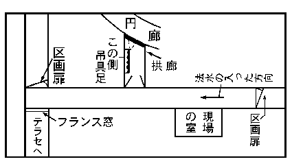
法水は、すぐ円廊の扉を開いて光線を入れてから、左側に立ち並んでいる吊具足の列を見渡しはじめた。が、すぐに「これだ」と云って、中央の一つを指差した。その一つは、
萌黄匂の
鎧で、それに
鍬形五枚立の
兜を載せたほか、
毘沙門篠の両
籠罩、
小袴、
脛当、
鞠沓までもつけた本格の武者装束。面部から咽喉にかけての所は、
咽輪と
黒漆の猛悪な相をした
面当で隠されてあった。そして、背には、軍配
日月の中央に
南無日輪摩利支天と
認めた
母衣を負い、その脇に竜虎の
旗差物が挾んであった。しかし、その一列のうちに注目すべき現象が現われていたと云うのは、その萌黄匂を中心にして、左右の全部が等しく斜めに向いているばかりでなく、その横向きになった方向が、
交互一つ置きに一致していて、つまり、右、左、右という風に、異様な符合が現われている事だった。法水がその
面当を外すと、そこに易介の凄惨な死相が現われた。はたせるかな、法水の非凡な透視は適中していたのだ。のみならず、ダンネベルグ夫人の屍光と代り合って、この
侏儒の
傴僂は奇怪千万にも、甲冑を着し宙吊りになって殺されている。ああ、ここにもまた、犯人の
絢爛たる装飾癖が現われているのだった。
最初眼についたのは、咽喉につけられている二条の
切創だった。それを詳しく云うと、合わせた形がちょうど二の字形をしていて、その位置は、甲状軟骨から胸骨にかけての、いわゆる前頸部であったが、創形が
楔形をしているので、鎧通し様のものと推断された。また、深さを連ねた形状が、形をしているのも奇様である。上のものは、最初気管の左を、六センチほどの深さに刺してから
刀を浮かし、今度は横に浅い
切創を入れて迂廻してゆき、右側にくると、再びそこへグイと刺し込んで刀を引き抜いている。下の一つもだいたい同じ形だが、その方向だけは斜め下になっていて、創底は胸腔内に入っていた。しかし、いずれも大血管や臓器には触れていず、しかも、巧みに気道を避けているので、勿論即死を起す程度のものではないことは明らかだった。
それから、天井と鎧の
綿貫とを結んでいる二条の麻紐を切り、死体を鎧から取り外しに掛ると、続いて異様なものが現われた。それまでは、不自然な部分が
咽輪の
垂で隠されていたので判らなかったのだが、不思議な事に、易介は鎧を横に着ているのだった。すなわち、身体を入れる左脇の引合口の方を背後にして、そこからはみ出した背中の
瘤起を、
幌骨の
刳形の中に入れてある。そして、傷口から流れ出たドス黒い血は、小袴から
鞠沓の中にまで滴り落ちていて、すでに体温は去り、硬直は下顎骨に始まっていて、優に死後二時間は経過しているものと思われた。が、死体を引き出してみると、
愕然とさせたものがあった。と云うのは、全身にわたり著明な窒息徴候が現われている事で、無残な
痙攣の跡が到る処にゆきわたっているばかりではなく、両眼にも、排泄物にも、流血の色にも、まざまざと一目で
頷けるものが残されていた。のみならず、その相貌は実に無残をきわめ、死闘時の激しい苦痛と
懊悩とが窺われるのだった。が、しかし、気管中にも
栓塞したらしい物質は発見されず、口腔を閉息した形跡もないばかりか、
索痕や
扼殺した痕跡は勿論見出されなかった。
「まさにラザレフ（
聖アレキセイ寺院の死者）の再現じゃないか」と、法水は
呻くような声を出した。「この傷は死後に付けられているんだよ。それが、
刀を引き抜いた断面を見ても判るんだ。通例では、刺し込んだ途端に引き抜くと、血管の断面が収縮してしまうもんだが、これはダラリと
咨開している。それに、これほど顕著な特徴をもった、窒息死体を見たことはないよ。残忍冷酷もきわまっている。――恐らく、想像を絶した怖ろしい方法に違いない。そして、窒息の原因をなしたものが、易介には
徐々と迫っていったのだ」
「それが、どうして判るんだ？」と熊城が不審な顔をすると、法水はその陰惨きわまる内容を明らかにした。
「つまり、死闘の時間が徴候の度に比例するからなんだが、まさにこの死体は、法医学に新しい例題を作ると思うね。だって、その点を考えたらどうしたって、易介がしだいに息苦しくなっていったと想像するよりほかにないじゃないか。たぶん、その間易介は凄惨な努力をして、なんとかして死の鎖を断とうとしたに違いないのだ。しかし、身体は鎧の重量のために活力を失っている。もはやどうすることも出来ない。そうして、空しく最後の瞬間が来るのを待つうちに、たぶん幼少期から現在までの記憶が、電光のように
閃いて、それが、次から次へと移り変っていったに違いないのだよ。ねえ熊城君、人生のうちでこれほど悲惨な時間があるだろうか。また、これほど深刻な苦痛を含んだ、残忍な殺人方法がまたと他にあるだろうか」
さすがの熊城も、その思わず眼を覆いたいような光景を想起して、ブルッと
身慄いしたが、「しかし、易介は自分からこの中に入ったのだろうか。それとも犯人が……」
「いや、それが判れば殺害方法の解決もつくよ。第一、悲鳴をあげなかったことが疑問じゃないか」と法水がアッサリ云い
退けると、検事は兜の重量でペシャンコになっている死体の
頭顱を指差して、彼の説を持ち出した。
「僕はなんだか、兜の重量に何か関係があるような気がするんだ。無論、
創と窒息の順序が顛倒してりゃ、問題はないがね……」
「そうなんだ」と法水は相手の説に
頷いたが、「一説には、頭蓋のサントリニ静脈は、外力をうけてからしばらく後に、血管が破裂すると云うからね。その時は、脳質が圧迫されるので、窒息に類した徴候が表われるそうだよ。しかし、これほど顕著なものじゃない。だいたいこの死体のは、そういった頓死的なものではないのだよ。じわじわと迫っていったのだ。だから、むしろ直接死因には、
咽輪の方に意味がありそうじゃないか。無論気管を潰すというほどじゃないが、相当頸部の大血管は圧迫されている。すると、易介がなぜ悲鳴を上げなかったか――判るような気がするじゃないか」
「フム、と云うと」
「いや、結果は充血でなくて、反対に脳貧血を起すのだよ。おまけに、グリージンゲルという人は、それに
癲癇様の
痙攣を伴うとも云っているんだ」と法水はなにげなさそうに答えたけれども、なにやら
逆説に悩んでいるらしく、苦渋な暗い影が現われていた。熊城は結論を云った。
「とにかく、
切創が死因に関係ないとすると、この犯行は、恐らく異常心理の産物だろう」
「いやどうして」と法水は強く
頸を振って、「この事件の犯人ほど冷血な人間が、どうして打算以外に、自分の興味だけで動くもんか」
それから、指紋や血滴の調査を始めたが、それには、いっこう収穫はなかった。わけても甲冑の内部以外には、一滴のものすら発見されなかったのである。調査が終ると、検事は、法水が透視的な想像をした理由を訊ねた。
「君はどうして、易介がここで殺されているのが判ったのだね」
「無論
鐘鳴器の音でだよ」と法水は無雑作に答えた。「つまり、ミルの云う剰余推理さ。アダムスが海王星を発見したというのも、残余の現象は或る未知物の前件である――という、この原理以外にはないことなんだ。だって、易介みたいな化物が姿を消しても、発見されない。そこへ持ってきて、倍音以外にもう一つ、
鐘鳴器の音に異常なものがあったからだよ。扉で遮断された現場の
室とは異なって、廊下では、空間が建物の中に通じているのだからね」
「と云うのは……」
「その時残響が少なかったからだよ。だいたい鐘には、
洋琴みたいに振動を止める装置がないので、これほど残響のいちじるしいものはない。それに、
鐘鳴器は一つ一つに
音色も音階も違うのだから、距離の近い点や同じ建物の中で聴いていると、後から後からと引き続いて起る音に干渉し合って、終いには、不愉快な
噪音としか感ぜられなくなってしまうのだ。それを、シャールシュタインは色彩円の廻転に
喩えて、初め赤と緑を同時にうけて、その中央に黄を感じたような感覚が起るが、終いには、一面に灰色のものしか見えなくなってしまう――と。まさに至言なんだよ。まして、この館には、所々円天井や曲面の壁や、また気柱を作っているような部分もあるので、僕は混沌としたものを想像していた。ところが、
先刻はあんな澄んだ
音が聞えたのだ。外気の中へ散開すれば、当然残響が稀薄になるのだから、その音は明らかに、テラスと続いている
仏蘭西窓から入って来る。それを知って、僕は思わず
愕然としたのだ。では
何故かと云うと、どこかに、建物の中から広がってくる、噪音を遮断したものがなけりゃならない。区劃扉は前後とも閉じられているのだから、残っているのは、
拱廊の円廊側に開いている扉一つじゃないか。しかし、
先刻二度目に行った時は、確か左手の吊具足側の一枚を、僕は開け放しにしておいたような記憶がする。それに、あそこは他の意味で僕の心臓に等しいのだから、絶対に手をつけぬように云いつけてあるんだ。無論それが閉じられてしまえば、この一劃には、吸音装置が完成して、まず残響に対しては
無響室に近くなってしまうからだ。だから、僕等に聞えてくるのは、テラスから入る、強い一つの基音よりほかになくなってしまうのだよ」
「すると、その扉は何が閉じたのだ？」
「易介の死体さ。生から死へ移って行く凄惨な時間のうちに、易介自身ではどうにもならない、この重い
鎧を動かしたものがあったのだ。見るとおりに、左右が全部斜めになっていて、その向きが、一つ置きに左、右、左となっているだろう。つまり、中央の
萌黄匂が廻転したので、その
肩罩板が隣りの肩罩を横から押して、その具足も廻転させ、順次にその波動が最終のものにまで伝わっていったのだ。そして、最終の
肩罩板が
把手を叩いて、扉を閉めてしまったのだよ」
「すると、この鎧を廻転させたものは？」
「それが、
兜と
幌骨なんだ」と云って、法水は
母衣を取り
除け、太い
鯨筋で作った幌骨を指し示した。「だって、易介がこれを通常の形に着ようとしたら、第一、背中の瘤起が
支えてしまうぜ。だから、最初に僕は、易介が具足の中で、自分の背の瘤起をどう処置するか考えてみた。すると思い当ったのは、鎧の横にある
引合口を背にして、幌骨の中へ背瘤を入れさえすれば、――という事だったのだ。つまり、この形を思い浮べたという訳だが、しかし病弱非力の易介には、とうていこれだけの重量を動かす力はないのだ」
「幌骨と兜？」と熊城は
怪訝そうに何度となく繰り返すのだったが、法水は無雑作に結論を云った。
「ところで、僕が兜と幌骨と云った理由を云おう。つまり、易介の体が宙に浮ぶと、具足全体の重心が、その上方へ移ってしまう。のみならず、それが一方に偏在してしまうのだ。だいたい、静止している物体が自働的に運動を起す場合というのは、質量の変化か、重点の移動以外にはない。ところが、その原因と云うのが、事実兜と幌骨にあったのだよ。それを詳しく云うと、易介の姿勢はこうなるだろう。脳天には兜の重圧が加わっていて、背の瘤起は、幌骨の半円の中にスッポリと
嵌り込み、足は宙に浮いている、云うまでもなく、これは非常に苦痛な姿勢に違いないのだ。だから、意識のあるうちは、当然手足をどこかで支えて
凌いでいたろうから、その間は重心が下腹部辺りにあるとみて差支えない。ところが、意識を喪失してしまうと、支える力がなくなるので、手足が宙に浮いてしまい、今度は重点が幌骨の部分に移ってしまうのだ。つまり、易介自身の力ではなくて、固有の重量と自然の法則が決定した問題なんだよ」
法水の超人的な解析力は、今に始まったことではないけれども、瞬間それだけのものを組み上げたかと思うと、馴れきった検事や熊城でさえも、脳天がジインと
痲痺れ
［＃「痲痺れ」は底本では「痳痺れ」］ゆくような感じがするのだった。法水は続いて云った。
「ところで、絶命時刻の前後に、誰がどこで何をしていたか判ればいいのだがね。しかし、これは鐘楼の調査を終ってからでもいいが……、とりあえず熊城君、
傭人の中で、最後に易介を見た者を捜してもらいたいのだ」
熊城は間もなく、易介と同年輩ぐらいの
召使を伴って戻ってきた。その男の名は、古賀庄十郎と云うのだった。
「君が最後に易介を見たのは、何時頃だったね」とさっそくに法水が切り出すと、
「それどころか、私は、易介さんがこの具足の中にいたのも存じておりますので。それから、死んでいるという事も……」と気味悪そうに死体から顔を
外けながらも、庄十郎は意外な
言を吐いた。
検事と熊城は衝動的に眼を
ったが、法水は和やかな声で、
「では、最初からの事を云い給え」
「初めは、確か十一時半頃だったろうと思いますが」と庄十郎は、割合
悪怯れのしない態度で答弁を始めた。「礼拝堂と換衣室との間の廊下で、
死人色をしたあの男に出会いました。その時易介さんは、とんだ悪運に魅入られて真先に嫌疑者にされてしまった――と、爪の色までも変ってしまったような声で、愚痴たらたらに並べはじめましたが、私は、ひょいと見るとあまり充血している眼をしておりますので、熱があるのかと訊ねましたら、熱だって出ずにはいないだろうと云って、私の手を持って自分の額に当てがうのです。まず八度くらいはあったろうと思われました。それから、とぼとぼ
広間の方へ歩いて行ったのを覚えております。とにかく、あの男の顔を見たのは、それが最後でございました」
「すると、それから君は、易介が具足の中に入るのを見たのかね」
「いいえ、ここにある全部の吊具足が、グラグラ動いておりましたので……たぶんそれが、一時を少し廻った頃だったと思いますが、御覧のとおり円廊の方の扉が閉っていて、内部は真暗でございました。ところが金具の動く微かな光が、眼に入りましたのです。それで、一つ一つ具足を調べておりますうちに、偶然この萌黄匂の
射籠罩の蔭で、あの男の
掌を掴んでしまったのです。
咄嗟に私は、ハハアこれは易介だなと悟りました。だいたいあんな小男でなければ、誰が具足の中へ
身体を隠せるものですか。ですからその時、オイ易介さんと声を掛けましたが、返事もいたしませんでした。しかし、その手は非常に熱ばんでおりまして、四十度は確かにあったろうと思われました」
「ああ、一時過ぎてもまだ生きていたのだろうか」と検事が思わず嘆声をあげると、
「さようでございます。ところが、また妙なんでございます」と庄十郎は何事かを仄めかしつつ続けた。「その次はちょうど二時のことで、最初の
鐘鳴器が鳴っていた時でございましたが、田郷さんを寝台に
臥かしてから、医者に電話を掛けに行く途中でございました。もう一度この具足の側に来てみますと、
その時は易介さんの妙な呼吸使いが聞えたのです。私はなんだか薄気味悪くなってきたので、すぐに
拱廊を出て、刑事さんに電話の返事を伝えてから、戻りがけにまた、今度は思いきって
掌に触れてみました。すると、わずか十分ほどの間になんとしたことでしょう。その手はまるで氷のようになっていて、
呼吸もすっかり絶えておりました。私は仰天して逃げ出したのでございます」
検事も熊城も、もはや言葉を発する気力は失せたらしい。こうして庄十郎の陳述によって、さしも法医学の高塔が、無残な崩壊を演じてしまったばかりでない。円廊に開いている扉の閉鎖が、一時少し過ぎだとすると、法水の緩窒息説も根柢から
覆されねばならなかった。易介の高熱を知った時刻一つでさえ、推定時間に疑惑を生むにもかかわらず、一時間という開きはとうてい致命的だった。のみならず、庄十郎の挙げた実証によって解釈すると、易介はわずか十分ばかりの間に、ある不可解な方法によって窒息させられ、なおその後に
咽喉を切られたと見なければならない。その名状し難い混乱の中で、法水のみは鉄のような落着きを見せていた。
「二時と云えば、その時
鐘鳴器で
経文歌が奏でられていた……。すると、それから
讃詠が鳴るまでに三十分ばかりの間があるのだから、前後の聯関には配列的に隙がない。事によると鐘楼へ行ったら、たぶん易介の死因について、何か判ってくるかもしれないよ」と独白じみた調子で
呟いてから、「ところで、易介には甲冑の知識があるだろうか」
「ハイ、手入れは全部この男がやっておりまして、時折具足の知識を自慢げに振り廻すことがございますので」
庄十郎を去らせると、検事はそれを待っていたように云った。
「ちと奇抜な想像かもしれないがね。易介は自殺で、この
創は犯人が後で附けたのではないだろうか」
「そうなるかねえ」と法水は呆れ顔で、「すると、事によったら吊具足は、一人で着られるかもしれないが、だいたい兜の
忍緒を締めたのは誰だね。その証拠には、他のものと比較して見給え。全部正式な結法で、
三乳から
五乳までの表裏二様――つまり六とおりの古式によっている。ところが、この鍬形五枚立の兜のみは、甲冑に通暁している易介とは思われぬほど作法はずれなんだ。僕がいま、この事を庄十郎に訊ねたと云うのも、理由はやはり君と同じところにあったのだよ」
「だが男結びじゃないか」と熊城が気負った声を出すと、
「なんだ、セキストン・ブレークみたいなことを云うじゃないか」と法水は軽蔑的な視線を向けて、「たとえ男結びだろうと、男が
履いた女の靴跡があろうとどうだろうと……、そんなものが、この底知れない事件で何の役に立つもんか。これはみな、犯人の
道程標にすぎないんだよ」と云ってから
懶気な声で、
「易介は挾まれて殺さるべし――」と呟いた。
黙示図において、易介の屍様を預言しているその一句は、誰の脳裡にもあることだったけれども、妙に口にするのを
阻むような力を持っていた。続いて、引き摺られたように検事も復誦したのだったが、その声がまた、この沼水のような空気を、いやが上にも陰気なものにしてしまった。
「ああ、そうなんだ支倉君、それが兜と幌骨――なんだよ」と法水は冷静そのもののように、「だから、一見したところでは、法医学の化物みたいでも、この死体に焦点が二つあろうとは思われんじゃないか。むしろ、本質的な謎というのは、易介がこの中へ、自分の意志で入ったものかどうかということと、どうして甲冑を着たか……つまり、この具足の中に入る前後の事情と、それから、犯人が殺害を必要としたところの動機なんだ。無論僕等に対する挑戦の意味もあるだろうが」
「
莫迦な」熊城は
憤懣の気を
罩めて叫んだ。「口を
塞ぐよりも針を立てよ――じゃないか。見え透いた犯人の自衛策なんだ。易介が共犯者であるということは、もうすでに決定的だよ。これがダンネベルグ事件の結論なんだ」
「どうして、ハプスブルグ家の宮廷陰謀じゃあるまいし」と法水は再び、直観的な捜査局長を嘲った。
「
共犯者を使って毒殺を企てるような犯人なら、
既に今頃、君は調書の口述をしていられるぜ」
それから廊下の方へ歩み出しながら、
「さて、これから鐘楼で、僕の
紛当りを見ることにしよう」
そこへ、硝子の破片がある附近の調査を終って、私服の一人が見取図を持って来たが、法水は、その図で何やら包んであるらしい硬い手触りに触れたのみで、すぐ
衣嚢に収め鐘楼に
赴いた。二段に屈折した階段を上りきると、そこはほぼ半円になった鍵形の廊下になっていて、中央と左右に三つの扉があった。熊城も検事も悲壮に緊張していて、
罠の奥にうずくまっているかもしれない、
異形な超人の姿を想像しては息を
窒めた。ところが、やがて右端の扉が開かれると、熊城は何を見たのか、ドドドッと右手に走り寄った。壁際にある
鐘鳴器の鐘盤の前では、はたせるかな紙谷伸子が倒れていたのだ。それが、演奏椅子に腰から下だけを残して、そのままの姿で仰向けとなり、右手にしっかりと
鎧通しを握っているのだった。
「ああ、こいつが」と熊城は何もかも夢中になって、伸子の肩口を踏み
躙ったが、その時法水が中央の扉を、ほとんど放心の態で眺めているのに気がついた。卵色の塗料の中から、ポッカリ四角な白いものが浮き出ていた。近寄ってみると、検事も熊城も思わず身体が
竦んでしまった。その紙片には……
Sylphus Verschwinden（
風精よ消え失せよ）
［＃改丁］
［＃ページの左右中央］
［＃改ページ］
Sylphus Verschwinden（
風精よ。消え失せよ）
鐘鳴器室に三つあるうちの、中央の扉高くに、彼等の凝視を嘲り返すかのごとく白々しい色で、再びファウストの五芒星呪文の一句が貼り附けられてあった。のみならず、
Sylphe の女性をそれにもまた男性化しているばかりでなく、再び古
愛蘭のような角張ったゴソニック文字で、それには筆者の性別は愚かなこと毛のような
髯線一筋にさえ、筆蹟の特徴を窺うことは許されなかったのである。あの緊密な包囲形をどう潜り抜けたものか、また伸子が犯人で、
法水の機智から発した包囲を悟り、絶体絶命の
措置に出たものであろうか……。いずれにしろここで、皮肉な倍音演奏をした悪魔を決定しなければならなかった。
「これは意外だ。失神じゃないか」伸子の全身をスラスラ事務的に調べ終ると、法水は
熊城の靴をジロリと見て、「微かだが心動が聞えるし、呼吸も浅いながら続けている。それに、このとおり瞳孔反応もしっかりしてるぜ」
そう法水に宣告されてしまうと、つい今しがた
此奴とばかりに肩口を踏み
躙った熊城でさえ、そろそろ自分の軽挙が悔まれてきた。と云うのは、勿論
鎧通しを握って、
此の人を見よ――とばかりにのけ反りかえっている、
紙谷伸子の姿体だったのである。それまでは、幽鬼の不敵な暗躍につれて、おどろと跳ね狂う、無数の波頭を見るのみであって、事件の表面には人影一つ差してこなかった。そこへ、一条の泡がスウッと立ち上っていったのだが、それが水面で砕けたと思えば、
突忽として現われたのは何あろう、現在
眼のあたり見る
鬼蓮なのである。それであるからして、熊城でさえも一時の
亢奮が
冷めるにつれて、いろいろと疑心暗鬼的な警戒を始めたのも無理ではなかった。まったく、意表を絶したこの
体態を見ては、かえって反対の見解が有力になってゆくではないか。易介の咽喉を
抉ったと目されている短剣を握り締めて、伸子はこれをとばかりに示しているけれども、一方それ以上厳密に、失神するまでの経路が吟味されねばならない。結論はその一つだった。王妃ブズールが唱えば、雨となって降り下って来る――
黒人の penis に、とうとうこの事件の倒錯性が狂い着いてしまったのである。
さてここで、
鐘鳴器室の概景を説明しておく必要があると思う。前篇にも述べたとおり、その室は礼拝堂の
円蓋に接していて、
振鐘のある尖塔の最下部に当っていた。そして、階段を
上りきった所は、ほぼ半円をなした鍵形の廊下になっていて、中央――すなわち半円の頂天とその左右に三つの扉があり、なお、室内に入ってから気づいたことであったが、当時左端の一つのみが開かれていた。そこ一帯の壁面を室内から見ると、それが、音響学的に設計されているのが判る。一口に云えば
巨きな帆立貝であって、凹状の楕円と云ったら当るかもしれない。たぶんここに
鐘鳴器を具えるまでは、
四重奏団の演奏室に当てられていたのであろうが、したがって中央の扉にも、外観上位置的に不自然であるばかりでなく、後から壁を切って作られたらしい形跡が残っていた。またその一つのみが素晴らしく大きなもので、ほとんど三メートルを越すかと思われるほどの高さだった。そこから、向う側の壁までの間は、
空んとした
側柏の板張りだった。そして、
鐘鳴器の鍵盤は、壁を
刳形に切り抜いて、その中に収められてある。三十三個の鐘群はそれぞれの音階に調律されていて、すぐ直前の天井に吊されているが、それが
鍵盤と
蹈板とによって……その昔カルヴィンが好んで耳を傾け、またネーデルランドの運河の水に乗ると、風車が独りでに動くとか伝えられる、あの物寂びた僧院的な音を発する仕掛になっていた。しかし、音響学的な構造は天井にも及んでいて、楕円形の壁面から
鍵盤にかけて緩斜をなしている。しかもそれがちょうど響板のように、中央に丸孔が空き、その上が長い角柱形の空間になっていた。そして、その両端が、
先刻前庭から見た、十二宮の
円華窓だった。おまけに、黄道上の星宿が描かれている、
絵齣の一つ一つが、本板から巧妙な構造で遊離しているので、その周囲には、一辺を除いて細い空隙が作られ、しかも、空気の波動につれて微かに振動する。それがなんとなく
楽玻璃のようでもあるが、とにかく、その
狭間を通過する音は、恐らく弱音器でもかけられたように柔げられるであろうから、
鐘鳴器特有の残響や、また、協和絃をなしている音ならば、どんなに早い速度で奏したにしても、ある程度までは混乱を防ぎ得るのである。この装置は三十三個の鐘群も同様で、ベルリンのパロヒアル寺院を模本としたものであるが、パロヒアル寺院では、反対にそれが、礼拝堂の内部に向けて作られてある。こうして、法水の調査は円華窓附近にも及んだけれど、わずかに知ったのは、その外側を、尖塔に上る鉄梯子が
過っているという一事のみであった。
やがて、法水は私服に命じて戸外に立たしめ、自分は種々と工夫を凝らして
鍵盤を押し、何より根本の疑義であるところの倍音を証明しようとしたが、その実験はついに空しく終ってしまった。結局、
鐘鳴器で奏し得る音階が、二オクターヴにすぎないということと、それに、
先刻聴いた倍音というのが、その上の音階であるという――二つが明らかにされたのみであった。かつて聖アレキセイ寺院の鐘声にも、これとよく似た妖怪的な現象が現われたことがあった。けれども、それは単なる機械学的な問題で、つまり振り鐘の順序にすぎなかったのである。ところが、今度はそれと異なって、第一に三十あまりの音階を決定している――換言すれば、物質構成の大法則であるところの鐘の質量に、そもそも根本の疑惑がこもっているのだ。それゆえ、詮じ詰めてゆくと、結局鐘の鋳造成分を否定するか、それとも、楽音を虚空から
掴み上げた、精霊的な存在があったのではないか――と云うような、極端な結論に行き着いてしまうのも、やむを得ないのであった。こうして、倍音の神秘がいよいよ確定されてしまうと、法水には痛々しい疲労の色が現われ、もはや口を聴く気力さえ尽き果てたように思われた。しかし、考えようによっては、より以上の
怪態と思われる伸子の失神に、もう一度神経を酷使せねばならぬ義務が残っていた。その頃はもう日没が迫っていて、壮大な結構は
幽暗の中に没し去り、わずかに円華窓から入って来る微かな光のみが、冷たい空気の中で陰々と
揺めいていた。その中で、時折翼のような影が
過って行くけれども、たぶん
大鴉の群が、円華窓の外を
掠めて、尖塔の
振鐘の上に戻って行くからであろう。
ところで伸子の状態についても、細叙の必要があると思う。伸子は丸形の廻転椅子に腰だけを残して、そこから下はやや左向きになり、上半身はそれと反対に、幾分
右方に傾いていて、ガクリと背後にのけ反っている。その倒辺三角形に似た形を見ても、彼女は演奏中に、その姿のままで後方へ倒れたものであることは明らかだった。しかし、不思議な事には、全身にわたって
鵜の毛ほどの傷もなく、ただ床へ打ち当てた際に、出来たらしい皮下出血の跡が、わずか後頭部に残されているのみだった。また中毒と
思しい徴候も現われていない。両眼も
いているが、活気なく
懶そうに濁っていて、表情にも緊張がなく、それに、下
顎だけが開いているところと云い、どことなく
悪心とでも云ったら当るかもしれない、不快気な表情が残っているように思われた。全身にも、単純失神特有の徴候が現われていて、
痙攣の跡もなく、綿のように弛緩しているけれども、不審な事には、
仄のり
脂が浮いている鎧通しだけは、かなり固く握り締めていて、腕を上げて振ってみても、いっこうに掌から外れようとはしない。総体として失神の原因は、伸子の体内に伏在しているものと、思うよりほかにないのであった。法水は心中決するところがあったとみえて、伸子を抱き上げた私服に云った。
「本庁の鑑識医にそう云ってくれ給え。――第一、胃
洗滌をやるように。それから胃中の残留物と尿の検査する事と、婦人科的な観察だ。またもう一つは、全身の圧痛部と筋反射を調べる事なんだ」
そうして、伸子が階下に運ばれてしまうと、法水は一息
莨の
烟をグイと
喫い込んでから、
「ああ、この
局面は、僕にとうてい集束出来そうもないよ」と弱々しい声で
呟くのだった。
「だが、伸子の身体に現われているものだけは簡単じゃないか。なあに、正気に戻れば何もかも判るよ」検事は無雑作に云ったが、法水は満面に懐疑を
漲らせてなおも嘆息を続けた。
「いやどうして、錯雑顛倒しているところは相変らずのものさ。かえってダンネベルグ夫人や、易介よりも難解かもしれない。それが、意地悪く徴候的なものじゃないからだよ。いっこう何もないようでいて、そのくせ矛盾だらけなんだ。とにかく、専門家の鑑識を求めることにしたよ。僕のような浅い知識だけで、どうしてこんな化物みたいな小脳の判断が出来るもんか。なにしろ、筋覚伝導の法則が滅茶滅茶に狂っているんだから」
「しかし、こんな単純なものを……」と熊城が、異議を述べ立てようとすると、法水はいきなり遮って、
「だって内臓にも原因がなく、中毒するような薬物も見つからないとなった日には、それこそ
風精天蝎宮（
運動神経を管掌す）へ消え失せたり――になってしまうぜ」
「冗談じゃない、どこに外力的な原因があるもんか。それに
痙攣はないし、明白な失神じゃないか」今度は検事がいがみ掛った。「どうも君は、単純なものにも
紆余曲折的な観察をするので困るよ」
「勿論明白なものさ。しかし、
失神――だからこそなんだ。それが精神病理学の領域にあるものなら、古いペッパーの『類症鑑別』一冊だけで、ゆうに片づいてしまうぜ。無論
癲癇でもヒステリー発作でもないよ。また、
心神顛倒は表情で見当がつくし、
類死や
病的半睡や
電気睡眠でもけっしてないのだ」と云って、法水はしばらく天井を仰向いていたが、やがて変化のない裏声で云った。
「ところが
支倉君、失神が下等神経に伝わっても、そういう連中が
各々勝手
気儘な方向に動いている――それはいったい、どうしたってことなんだい。だから、僕はこういう信念も持たされてしまったのだ。例えば、鎧通しを握っていたことに、有利な説明が付いたとしてもだよ。そうなっても倍音の神秘が
露かれない限りは、当然失神の原因に、自企的な疑いを挾まねばならない――とね。どうだい？」
「そりゃ神話だ。マアしばらく休んだ方がいいよ。君は大変疲れているんだ」と熊城はてんで受付けようとはしなかったが、法水はなおも夢見るような調子で続けた。
「そうだ熊城君、事実それは伝説に違いないのだ。ネゲラインの『北欧伝説学』の中に、その昔
漂浪楽人が唱い歩いたとか云う、ゼッキンゲン侯リュデスハイムの話が載っているんだ。時代はフレデリック（
第五）十字軍の後だがマア聴いてくれ給え。――
歌唱詩人オスワルドは、ヴェントシン（
ヒヨスの毛茸ならんと云わる）を入れたる酒を飲むと見る間に、
抱琴を抱ける身体波のごとくに揺ぎはじめ、やがて、妃ゲルトルーデの膝に倒る。リュデスハイムは、かねてカルパトス島（
クリート島の北方）の妖術師レベドスよりして、ヴェニトシン
向気の事を聴きいたれば、ただちに
頭を打ち落し、
骸とともに焚き捨てたり――と。これは
漂浪楽人中の詩王イウフェシススの作と云われているが、これを史家ベルフォーレは、十字軍によって北欧に移入された純
亜剌比亜・
加勒泥亜呪術の最初の文献だと云い、それが
培って
華と結んだのがファウスト博士であって、彼こそは中世魔法精神の権化であると結論しているのだ」
「なるほど」と検事は皮肉に笑って、「五月になれば、
林檎の花が咲き、城内の
牛酪小屋からは性慾的な臭いが訪れて来る。そうなれば、なにしろ亭主が十字軍に行っているのだからね。その留守中に、貞操帯の合鍵を
作えて、奥方が
抒情詩人と
春戯くのもやむを得んだろうよ。だがただしだ。その方向を殺人事件の方に転換してもらおう」
法水は半ば微笑みながら、沈痛な調子で云い返した。
「
ずさんだよ支倉君、君は検事のくせに、病理的心理の研鑽を
疎かにしている。もしそうでなければ、『
古代丁抹伝説集』などの史詩に現われている妖術精神や、その中に、
黴毒性
癲癇性の人物などがさかんに例証として引かれている――そのくらいの事は、当然憶えてなければならないはずだよ。ところでこのリュデスハイム
譚は、別に引証されてはいないけれども、メールヒェンの『
朦朧状態』を読むと、詩で唱われたオスワルドの喪神状態が、それには科学的に説明されている。その中の単純失神の章に、こうあるのだよ。失神が起ると、大脳作用が一方的に凝集するために、執意はたちまち消え失せてしまって、全身に浮揚感が起ってくる。しかし、一方小脳の作用が停止するのは、やや後であるために、その二つが力学的に作用し合って、無論わずかな間だけれども、全身に横波をうけたような動揺を起す――と云うのだ。ところが、伸子の身体は、その際に自然の法則を無視してしまって、かえって反対の方向に動いているのだよ」と伸子が腰を下していた廻転椅子を、クルッと仰向けにして、その廻転心棒を指差した。「ところで支倉君、僕はいま自然の法則なぞと
大袈裟に云ったけれども、たかがこの椅子の廻転にすぎないのだよ。
螺旋の方向は、これで見るとおりに、
右捻だ。そして、心棒が全く
螺旋孔の中に没し去っていて、右へ低くなってゆく廻転は、すでに極限まで詰っている。しかし、一方伸子の
肢態を考えると、腰を座深めに引いて、そこから下の下肢の部分はやや左向きとなり、上半身はそれとは反対に、幾分右へ傾いているのだ。まさにその形は、わずかほど左の方へ廻転しながら倒れたものに違いない。これは、明らかに反則的だ。何故なら、左の方へ廻転すれば、当然椅子が浮いてこなければならないからだ」
「曖昧な反語はいかん」熊城が難色を現わすと、法水はあらゆる観察点を示して、矛盾を明らかにした。
「勿論現在のこの形を、最初からのものとは思っちゃいないさ。しかし、例えば螺旋に余裕があったにしてもだ。失神時の
横揺ばかりを考えて、それ以外に重量という、垂直に働く力があるのを忘れちゃならん。それがあるので、動揺しながらも、しだいにその方向が決定されてゆく。つまりその振幅が、低下してゆく右の方向へ大きくなるのが当然じゃないか。さらにまた、もう一案引き出して、今度は右へ大きく一廻転してから、現在の位置で螺旋が詰ったものと仮定しよう。けれども、その廻転の間に、当然遠心力が働くだろうからね。したがって、ああいう正座に等しい形が、とうてい停止した際に求められよう道理はないと思うよ。だから熊城君、椅子の螺旋と伸子の
肢態を対照してみると、そこに驚くべき矛盾が現われてくるのだ」
「あ、意志の伴った失神……」と検事は惑乱気味に嘆息した。
「それがもし真実ならば、グリーン家のアダさ。だから……」と法水は両手を後に組んで、こつこつ歩き廻りながら、「僕だって故なしに、
胃洗滌や尿の検査なんぞやらせやしないぜ。勿論問題と云うのは、そういう自企的な材料が、発見されなかった場合にあるのだよ」と
鍵盤の前で立ち止って、それを
掌でグイと押し下げて云った。その行為は、異説の所在を暗示しているのであった。
「このとおりだよ。
鐘鳴器の演奏には、女性以上の体力が必要なんだ。簡単な
讃詠でも三度も繰り返したら、たいていヘトヘトになるにきまってるよ。だから、あの当時音色がしだいに衰えて行ったけれども、たぶんその原因が、この辺にありゃしないかと思うのだ」
「すると、その疲労に失神の原因が？」と熊城は
喘ぎ気味に訊ねた。
「ウン疲労時の証言を信ずるな――とシュテルンが云うほどだからね。そこへ何か、予想外の力が働いたとしたら、まさしく絶好な状態には違いないのだ。ただし何もかも、倍音発生の原因が証明された上でだ。あれは確かに、
不在証明中の
不在証明じゃないか」
「では、伸子の弾奏術としてでかい」と検事は驚いて問い返した。「僕はとうてい、あの倍音が鐘だけで証明出来ようとは思わんがね。それより手近な問題は、鎧通しを伸子が握らされたか
否か――にあると思うのだ」
「いや、失神してからは、けっして固く握れるものじゃない」と法水は再び歩きはじめたが、すこぶる気のない声を出した。「勿論それには異説もあるので、僕は専門家の鑑定を求めたのだよ。それに、易介の死とも時間的に包括されている。
召使の庄十郎は、当然絶命後一時間と思われる二時に、易介の呼吸を明らかに聴いた――と陳述しているんだが、その時刻には、伸子が
経文歌を奏でていた。そうすると、最後の
讃詠を弾くまでの二十分あまりの間に、易介の
咽喉を切り、そうして失神の原因を作ったと見なけりゃならない。僕は、そこへ反証が
挙りゃしないかと、そればかり
懼れているところなんだよ。だいたい、包囲形を作って絞り出した結果というのが、
２−１＝１の解答じゃないか。しかし、倍音が……倍音が？」
無論それ以上は混沌の彼方にあった。法水は必死の精気を
凝らしてすべてを伸子に集注しようとした。かつての「コンスタンス・ケント事件」や「グリーン殺人事件」等の教訓が、この場合、反覆的な観察を
使嗾してくるからである。けれども、百花千弁の形に分裂している撞着の数々は、法水の分析的な個々の説にも、確固たる信念を築かせない。いかにも、外面は逆説反語を巧みに
弄んでいて、壮大な修辞で覆うている。けれども、説き去るかたわら新しい懐疑が起って、彼は呪われた
和蘭人のように、
困憊彷徨を続けているのだ。そして、ついに問題が倍音に
衝き当ってしまうと、法水は再び異説のために引き戻されねばならなかった。突然彼は、天来の霊感でも受けたかのように、異常な光輝を双眼に
泛べて立ち止った。
「支倉君、君の一言が大変いい暗示を与えてくれたぜ。君が、倍音はこの鐘のみでは証明出来まい――と云ったことは、とどの詰りが、演奏の
精霊主義に代る何物かを捜せ――という事だ。つまり、どこか他の場所に、響石か木片楽器めいたものでもあれば、それを音響学的に証明しろ――という意味にもなる。それに気が附いたので、僕は往昔マグデブルグ僧正館の不思議と唱われた、『ゲルベルトの
月琴』――の故事を憶い出したよ」
「ゲルベルトの
月琴」検事は法水の唐突な変説に
狼狽してしまった。「いったい
月琴なんてものが、鐘の
化物にどんな関係があるね」
「そのゲルベルトと云うのが、シルヴェスター二世だからさ。あの呪法典を作ったウイチグスの師父に当るんだ」と法水は気魄の
罩もった声で叫んだ。そして、床に映った
朧ろな影法師を
瞶めながら、夢幻的な韻を作って続ける。
「ところでペンクライク（
十四世紀英蘭の言語学者）が編纂した『ツルヴェール史詩集成』の中に、ゲルベルトに関する妖異譚が載っている。勿論当時のサラセン嫌悪の風潮で、ゲルベルトをまるで妖術師扱いにしているのだが、とにかくその一節を
抜萃してみよう。一種の
錬金抒情詩なんだよ。
ゲルベルト畢宿七星を仰ぎ眺めて
平琴を弾ず
はじめ低絃を弾きてのち黙す
しかるにその寸後
側の月琴は人なきに鳴り
ものの怪の声の如く、高き絃音にて応う
されば
傍人、耳を覆いて遁れ去りしとぞ
ところが、キイゼヴェッテルの「古代楽器史」を見ると、
月琴は腸線楽器だが、
平琴の十世紀時代のものになると、腸線の代りに金属線が張られていて、その音がちょうど、現在の
鉄琴に近いと云うのだがね。そこで、僕はその妖異譚の解剖を試みたことがあった。ねえ熊城君、中世非文献的史詩と殺人事件との
関係を、ここで充分
咀嚼してもらいたいと思うのだよ」
「フン、まだあるのか」と熊城は、
唾で濡れた
莨とともに、吐き出すように云った。「もう角笛や鎖
帷子は、
先刻の
人殺し鍛冶屋で終りかと思ったがね」
「あるともさ。それが、史家ヴィラーレの綴った、『ニコラ・エ・ジャンヌ』なんだ。
奇蹟処女を前にすると、顧問判官どもがブルブル
慄えだして、実に奇怪きわまる異常神経を描き出したのだ。その心理を、後世裁判精神病理学の
錚々たる連中が何故引用しないのだろうと、僕はすこぶる不審に思っているくらいなんだよ。ところで、この場合は、すこぶる妖術的な共鳴現象を思いついたのだ。つまり、それを
洋琴で喩えて云うと、最初

の
鍵を音の出ないように軽く押さえて、それから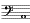の鍵を強く打ち、その音が止んだ頃に
の
鍵を押さえた指を離すと、それからは妙に声音的な音色で、
の音が明らかに発せられる。無論共鳴現象だ。つまり、の音の中には、その倍音すなわち二倍の振動数を持つ
の音が含まれているからなんだが、しかしそういう共鳴現象を鐘に求めるということは、理論上全然不可能であるかもしれない。けれども、それからまた要素的な暗示が引き出せる。と云うのが、擬音なんだよ。熊城君、君は
木琴を知っているだろう。つまり、乾燥した木片なり、ある種類の石を打つと、それが金属性の音響を発するということなんだ。古代支那には、
編磬のような響石楽器や、
方響のような扁板打楽器があり、古代インカの
乾木鼓やアマゾン
印度人の刃形響石も知られている。しかし、僕が目指しているのは、そういう単音的なものや音源を露出した形のものじゃないのだ。ところで君達は、こういう驚くべき事実を聴いたらどう思うね――。
孔子は
舜の韻学の中に、七種の音を発する木柱のあるのを知って茫然となったと云う。また、
秘露トルクシロの遺跡にも、トロヤ第一層都市遺跡（
紀元前一五〇〇年時代すなわち落城当時）の中にも、同様の記録が残されている……」と該博な引証を挙げた後に、法水はこれら古史文の科学的解釈を、一々殺人事件の現実的な視覚に符合させようと試みた。
「とにかく、魔法博士デイの隠顕
扉があるほどだからね。この館にそれ以上、
技巧呪術の習作が残されていないとは云えまい。きっと、最初の英人建築技師ディグスビイの設計を改修した所に、算哲のウイチグス呪法精神が
罩もっているに違いないのだ。つまり、一本の柱、
貫木にもだよ。それから
蛇腹、また廊下の壁面を貫いている
素焼の朱線にも、注意を払っていいと思う」
「すると、君は、この館の設計図が必要なのかね」と熊城が呆れ返って叫ぶと、
「ウン、全館のを要求する。そうすればたぶん、犯人の飛躍的な
不在証明を打破出来やしないかと思うよ」と法水は押し返すように云ったが、続いて二つの軌道を明示した。「とにかく
涯しない旅のようだけども、
風精を捜す道はこの二つ以外にはない。つまり、結果において、ゲルベルト風の共鳴弾奏術が再現されるとなれば、無論問題なしに、伸子が自企的な失神を計ったと云って差支えあるまい。また、何か擬音的な方法が証明されるようなら、犯人は伸子に、失神を起させるような原因を与えて、しかる後に鐘楼から去った――と云うことが出来るのだ。いずれにしろ、倍音が発せられた当時、ここには伸子のほか誰もいなかったのだ。それだけは明らかなんだよ」
「いや、倍音は附随的なものさ」と熊城は反対の見解を述べた。「要するに、君の難解嗜好癖なんだ。たかが、論理形式の問題にすぎんじゃないか。伸子が失神した原因さえ解れば、なにも君みたいに、最初から石の壁の中に頭を突っ込む必要はないと思うよ」
「ところが熊城君」と法水は皮肉にやり返して、「たぶん伸子の答弁だけを
当にしたら、まずこんな程度にすぎまいと思うがね。気分が悪くなって、その後の事はいっさい判りません――て。いや、そればかりじゃない。あの倍音の中には、失神の原因をはじめとして、鎧通しを握っていた事から、
先刻僕が指摘した廻転椅子の矛盾に至るまでの、ありとあらゆる疑問が伏さっているに違いないのだ。事によると、易介事件の一部まで、関係してやしないかと思われるくらいだよ」
「ウン、たしかに
心霊主義だ」と検事が暗然と
呟くと、法水はあくまで自説を強調した。
「いやそれ以上さ。だいたい、楽器の心霊演奏は必ずしも例に乏しい事じゃない。シュレーダーの『
生体磁気説』一冊にすら、二十に近い引例が挙げられている。しかし、問題は音の変化なのだ。ところがさしもの聖オリゲネスさえ嘆称を惜しまなかったと云う、千古の大魔術師――
亜歴山府のアンティオクスでさえも、
水風琴の遠隔演奏はしたと云うけれど、その音調についてはいっこうに記されていない。また、例のアルベルツス・マグヌス（
十三世紀の末、エールブルグのドミニク僧団にいた高僧。錬金魔法師の声名高しといえども、通性論哲学者であり、かつまた中世著名の物理学者ことに心霊術士としては古今無双ならんと云わる。）が
携帯用風琴で
行った時も同じ事なんだ。それから近世になって、
伊太利の大霊媒ユーザピア・パラルディノが、金網の中に入れた
手風琴を動かしたけれども、
肝腎の音色については、狂学者フラマリオンすら語るところがないのだ。つまり、心霊現象でさえ、時間空間には君臨することが出来ても、
物質構造だけにはなんらの力も及ばないことが判るだろう。ところが熊城君、その物質構成の大法則が、小気味よく
顛覆を遂げているんだ。ああ、なんという恐ろしい
奴だろう。
風精――空気と音の妖精――やつは鐘を叩いて逃げてしまったのだ」
結局倍音についての法水の推断は、
明確と人間思惟創造の限界を劃したに止まっていた。しかし、犯人は、それすらあっけなく踏み越えて、誰しも夢にも信じられなかったところの、超心霊的な奇蹟をなし遂げているのだ。それであるからして、紛乱した網を
辛っと跳ね退けたかと思うと、眼前の壁はすでに雲を貫いている。そうなると、伸子の陳述にも、さした期待が持てなくなったことは云うまでもないが、別して法水が顕示した、不思議な倍音に達する二つの道にも、万が一の
僥倖を思わせるのみのことで、早くも忘れ去られようとするほどの心細さだった。やがて、
鐘鳴器室を出てダンネベルグ夫人の
室に戻ると、夫人の死体は、
既に解剖のため運び去られていて、その陰気な室の中には、
先刻家族の動静調査を命じておいた、一人の私服が、ポツネンと待っていた。
傭人の口から吐かせた調査の結果は、次のとおりだった。
降矢木旗太郎。正午昼食後、他の家族三人と広間にて会談し、一時五十分経文歌の合図とともに打ちそろって礼拝堂に赴き、鎮魂楽の演奏をなし、二時三十五分、礼拝堂を他の三人とともに出て自室に入る。
オリガ・クリヴォフ（同前）
ガリバルダ・セレナ（同前）
オットカール・レヴェズ（同前）
田郷真斎。一時三十分までは、召使二人とともに過去の葬儀記録中より摘録をなしいたるも、訊問後は自室にて臥床す。
久我鎮子。訊問後は図書室より出でず、その事実は、図書運びの少女によって証明さる。
紙谷伸子。正午に昼食を自室に運ばせた時以外は、廊下にて見掛けたる者もなく、自室に引き籠れるものと推察さる。一時半頃鐘楼階段を上り行く姿を目撃したる者あり。
以上の事実の外いっさい異状なし。
「法水君、ダマスクスへの道は、たったこの一つだよ」と検事は熊城と視線を合わせて、さも悦に入ったように
揉手をしながら「見給え。すべてが伸子に集注されてゆくじゃないか」
法水はその調査書を
衣袋に突き込んだ手で、先刻
拱廊で受け取った、硝子の破片とその附近の見取図を取り出した。が、開いてみると、実にこの事件で何度目かの
驚愕が、彼等の眼を射った。
二条の足跡が印されている、見取図に包まれているのが何であったろうか、意外にもそれが、写真乾板の破片だったのである。
沃化銀板――すでに感光している乾板を前にして、法水もさすが二の句が継げなかった。事実この事件とは、異常に隔絶した対照をなしているからであった。それなので、
紆余曲折をたどたどしく
辿って行って、最初からの経過を吟味してみても、だいたい乾板などという感光物質によって、標章形象化される
個所は勿論のことだが、それに投射し暗喩するような、連字符一つさえ見出されないのである。それがもし、実際に犯罪行動と関係あるものなら、恐らく神業であるかもしれない。こうして、しばらく死んだような沈黙が続いた。その間召使が炉に
松薪を投げ入れ、室内が
仄かり暖まってくると、法水は焔の舌を見やりながら、微かに嘆息した。
「ああ、まるで
恐竜の卵じゃないか」
「だが、いったい何に必要だったのだろう？」と検事は法水の
強喩法を平易に述べた。そして、
開閉器を
捻ると、
「まさか撮影用じゃあるまいが」と熊城は、不意の明るさに眼を
瞬きながら、「いや、
死霊は事実かもしれん。第一、易介が目撃したそうだが、昨夜神意審問会の最中に、隣室の張出縁で何者かが動いていて、その人影が地上に何か落したと云うそうじゃないか。しかも、その時七人のうちで
室を出たものはなかったのだ。だいたい階下の窓から落されたものなら、こんなに細かく割れる気遣いはないよ」
「うん、その
死霊は恐らく事実だろうよ」と法水はプウと煙の輪を吐いて、「しかし、
彼奴がその後に死んでいるという事も、また事実だろう」と意外な奇説を吐いた。「だって、ダンネベルグ事件とそれ以後のものを、二つに区分して見給え。僕の持っているあの
逆説が、
綺麗さっぱりと消えてしまうじゃないか。つまり、
風精は
水神のいたのを知って、それを殺したのだ。けっして、あの二つの呪文が連続しているのに、
眩まされちゃならん。ただし、犯人は一人だよ」
「では、易介以外にも」熊城は
吃驚して眼を円くしたが、それを検事が抑えて、
「なあに、捨てておき給え。自分の空想に引っ張り廻されているんだから」と法水を
嗜めるように見た。「どうも、君の説は
世紀児的だ。自然と平凡を嫌っている。粋人的な技巧には、けっして真性も良識もないのだ。現に、
先刻も君は夢のような擬音でもって、あの倍音に空想を描いていた。しかし、同じような微かな音でも、伸子の弾奏がそれに重なったとしたらどうするね？」
「これは驚いた！ 君はもうそんな
年齢になったのかね」と
道化した顔をしたが、法水は皮肉に微笑み返して、「だいたいヘンゼンでもエーワルトでもそうだが、お互いに聴覚生理の論争はしていても、これだけは、はっきりと認めている。つまり、君の云う場合に当る事だが……たとえば同じような音色で微かな音が二つ重なったにしても、その音階の低い方は、内耳の基礎膜に振動を起さないと云うのだ。ところが、老年変化が来ると、それが反対になってしまうのだよ」と検事をきめつけてから、再び視線を乾板の上に落すと、彼の表情の中に複雑な変化が起っていった。
「だが、この矛盾的産物はどうだ。僕にもさっぱり、この取り合わせの意味が
呑み込めんよ。しかし、ピインと響いてくるものがある。それが妙な声で、ツァラツストラはかく語りき――と云うのだ」
「いったいニイチェがどうしたんだ？」今度は検事が驚いてしまった。
「いや、シュトラウスの
交響楽詩でもないのさ。それが、
陰陽教（
ツァラツストラが創始せる波斯（ペルシヤ）の苦行宗教）の呪法綱領なんだよ。神格よりうけたる光は、その源の神をも
斃す事あらん――と云ってね。勿論その呪文の目的は、接神の法悦を
狙っている。つまり、飢餓入神を行う際に、その論法を続けると、苦行僧に幻覚の統一が起ってくると云うのだ」と法水は彼に似げない神秘説を吐いたが、云うまでもなく、奥底知れない理性の蔭に潜んでいるものを、その場去らずに
秤量することは不可能だった。しかし、法水の
言を、神意審問会の異変と対照してみると、あるいは、死体
蝋燭の
燭火をうけた乾板が、ダンネベルグ夫人に算哲の幻像を見せて、意識を奪ったのではないか。――と云うような幽玄きわまる暗示が、しだいに濃厚となってくるけれども、その矢先思いがけなく、それをやや具体的に
仄めかして、法水は立ち上った。
「しかし、これでいよいよ、神意審問会の再現が切実な問題になってきたよ。さて、裏庭へ行って、この見取図に書いてある二条の足跡を調べることにするかな」
ところが、その途中通りすがりに、階下の図書室の前まで来ると、法水は釘付けされたように立ち止ってしまった。熊城は時計を眺めて、
「四時二十分――もうそろそろ、足許が分らなくなってくるぜ。言語学の蔵書なら後でもいいだろう」
「いや、
鎮魂楽の原譜を見るのさ」と法水はキッパリ云い切って、他の二人を
面喰わせてしまった。しかしそれで、
先刻の演奏中終止符近くになって、二つの
提琴が弱音器をつけた――そのいかにも楽想を無視している不可解な点に、法水が強い執着を持っているのが判った。彼は背後で、
把手を廻しながら、続いて云った。
「熊城君、算哲という人物は、実に偉大な
象徴派詩人じゃないか。この
尨大な
館もあの男にとると、たかが『影と記号で出来た倉』にすぎないのだ。まるで天体みたいに、多くの標章を
打ち
撒けておいて、その類推と総合とで、ある一つの恐ろしいものを暗示しようとしている。だから、そういう霧を中に置いて事件を眺めたところで、どうして何が判ってくるもんか。あの得体の知れない性格は、あくまでも究明せんけりゃならんよ」
その最終の到達点というのが、黙示図の知られてない半葉を意味していると云うことも……また、その一点に集注されてゆく網流の一つでもと、いかに彼が心中
喘ぎ
苛立って捜し求めているか、十分想像に難くないのであった。しかし、
扉を開くと、そこには人影はなかったけれど、法水は眼の
眩むような感覚に打たれた。四方の壁面は、ゴンダルド風の
羽目で区切られていて、壁面の上層には
囲繞式の
採光層が作られ、そこに並んでいる、イオニア式の
女像柱が、天井の
迫持を頭上で支えている。そして、
採光層から入る光線は、「ダナエの金雨受胎」を黙示録の二十四人長老で囲んでいる天井画に、なんとも云えぬ神々しい生動を与えているのだった。なお床に、チュイルレー式の組字をつけた書室家具が置かれてあるところと云い、また全体の基調色として、乳白大理石と
焦褐色の対比を択んだところと云い、そのすべてが、とうてい日本においては片影すら望むことの出来ない、
十八世紀維納風の書室造りだったのである。その
空んとした図書室を横切って、突当りの明りが差している扉を開くと、そこは、
好事家に
垂涎の思いをさせている、降矢木の書庫になっていた。二十層あまりに区切られている、書架の奥に事務机があって、そこには、久我鎮子の皮肉な舌が待ち構えていた。
「オヤ、この室にお出でになるようじゃ、たいした事もなかったと見えますね」
「事実そのとおりなんです。あれ以後人形が出ない代りに、
死霊は連続的に出没していますよ」と法水は先を打たれて、苦笑した。
「そうでしょう。
先刻はまた妙な倍音が聴えましたわ。でも、まさか伸子さんを犯人になさりゃしないでしょうね」
「ああ、あの倍音を御存じでしたか」と法水は瞼を微かに
戦かせたが、かえって探るような眼差で相手を見て、
「しかし、この事件全体の構成だけは判りましたよ。それが、
貴女の云われたミンコフスキーの四次元世界なんです」といっこう動じた色も見せず、続いて本題を切り出した。
「ところで、その過去圏を調べにまいったのですが、たしか、
鎮魂楽の原譜はあるでしょうな」
「
鎮魂楽」と鎮子は
怪訝な顔をして、「だが、あれを見て、いったいどうなさるのです？」
「それでは、まだ御存じないのですか」法水はちょっと驚いた素振を見せたが、厳粛な調子で云った。
「実は、
終曲近くで、二つの
提琴が弱音器を付けたのですよ。ですから、かえって私は、ベルリオーズの
幻想交響楽でも聴く心持がしました。たしかあれには、絞首台に上った罪人が地獄に堕ちる――その時の雷鳴を聴かせるというところに、
雹のような
椀太鼓の
独奏がありましたっけね。そこに私は、算哲博士の声を聴いたような気がしたのです」
「マア、とんでもない誤算ですわ」と鎮子は
憫笑を湛えて、
「あれは、算哲様の御作ではございません。
威人の建築技師クロード・ディグスビイ自作ものなのです。とにかく、あんなものをお気になさるようじゃ、もう一人
死霊がふえた訳ですわね。ですが、貴方の対位法的推理にぜひ必要なものなら、なんとか捜し出してまいりましょう」
法水がしばらく自己を失っていたのも、けっして無理ではなかった。彼がジョン・ステーナー（
今世紀の当初病歿した牛津（オックスフォード）の音楽科教授）の作と推測し、それに算哲が、何かの意志で筆を加えたものと信じていた
鎮魂曲が、人もあろうに、この館の設計者ディグスビイの作だったのだ。帰国の船中
蘭貢で投身したと云われる
威人の建築技師が、この不思議な事件にも何か
関係を持っているのではないのだろうか。しかし法水が、最初から死者の世界にも、詮索を怠らなかったことは、さすがに
烱眼であると云えよう。
鎮子が原譜を探している間、法水は書架に眼を
馳せて、降矢木の驚嘆すべき収蔵書を一々記憶に止めることが出来た。それが、黒死館において精神生活の全部を占めるものであることは云うまでもないが、あるいはこの書庫のどこかに、底知れない神秘的な事件の、根源をなすものが潜んでいないとも限らないのである。法水は背文字を
敏速く追うていって、しばらくの間、紙と革のいきれるような匂いの中で陶酔していた。
一六七六年（
ストラスブルグ）版のプリニウス「
万有史」の三十冊と、古代百科辞典の対として「ライデン
古文書」が、まず法水に嘆声を発せしめた。続いてソラヌスの「
使者神指杖」をはじめ、ウルブリッジ、ロスリン、ロンドレイ等の中世医書から、バーコー、アルノウ、アグリッパ等の記号語使用の錬金薬学書、本邦では、永田
知足斎、杉田玄伯、
南陽原等の蘭書釈刻をはじめ、古代支那では、隋の「経籍志」、「玉房指要」、「
蝦蟇図経」、「仙経」等の房術書医方。その他、
Susrta,
Charaka Samhita 等の
婆羅門医書、アウフレヒトの「
愛経」梵語原本。それから、今世紀二十年代の限定出版として有名な「
生体解剖要綱」、ハルトマンの「
小脳疾患者の徴候学」等の部類に至るまで、まさに千五百冊に
垂々とする医学史的な整列だった。次に、神秘宗教に関する集積もかなりな数に上っている。
倫敦亜細亜協会の「
孔雀王呪経」初版、
暹羅皇帝勅刊の「
阿 曩胝
曩胝経」、ブルームフィールドの「
黒夜珠吠陀」をはじめ、シュラギントヴァイト、チルダース等の梵字密教経典の類。それに、
猶太教の
非経聖書、
黙示録、
伝道書類の中で、特に法水の眼を引いたのは、猶太教会音楽の珍籍としてフロウベルガーの「フェルディナンド四世の死に対する悲嘆」の原譜と、聖ブラジオ修道院から逸出を伝えられている手写本中の稀書、ヴェザリオの「
神人混婚」が、秘かに海を渡って降矢木の書庫に収まっていることだった。それから、ライツェンシュタインの「
密儀宗教」の大著からデ・ルウジェの「
葬祭儀式」。また、
抱朴子の「
遐覧篇」費長房の「歴代三宝記」「老子
化胡経」等の仙術神書に関するものも見受けられた。しかし、魔法本では、キイゼルヴェターの「スフィンクス」、ウェルナー大僧正の「イングルハイム
呪術」など七十余りに及ぶけれども、大部分はヒルドの「
悪魔の研究」のような研究書で、本質的なものは算哲の
焚書に遇ったものと思われた。さらに、心理学に属する部類では、犯罪学、病的心理学心霊学に関する著述が多く、コルッチの「
擬佯の記録」リーブマンの「
精神病者の言語」、パティニの「
蝋質撓拗性」等病的心理学の外に、フランシスの「
死の百科辞典」、シュレンク・ノッチングの「
犯罪心理及精神病理的研究」、グアリノの「
ナポレオン的面相」、カリエの「
憑着及殺人自殺の衝動の研究」、クラフト・エーヴィングの「
裁判精神病学教科書［＃ルビの「レールブッフ・デル・ユリスティッシェン・プシヒョパトロギイ」は底本では「レールブッフ・デル・ユリスティッシェン・・プシヒョパトロギイ」］」、ボーデンの「
道徳的癡患の心理」等の犯罪学書。なお、心霊学でも、マイアーズの大著「
人格及びその後の存在」サヴェジの「
遠感術は可能なりや」ゲルリングの「
催眠的暗示」シュタルケの奇書「
霊魂生殖説」までも含む
尨大な集成だった。そして、医学、神秘宗教、心理学の部門を過ぎて、古代文献学の書架の前に立ち、フィンランド古詩「カンテレタル」の原本、婆羅門音理字書「サンギータ・ラトナーカラ」、「グートルーン詩篇」サクソ・グラムマチクスの「
丁抹史」等に眼を移した時だった。鎮子がようやく、
鎮魂楽の原譜を携えて現われた。その譜本は、焦茶色に変色していて、かえって
女王アンの透し刷が浮いて見え、歌詞はほとんど判らなかった。法水は手に取ると、さっそく最終の頁に眼を落したが、
「ハハア、古式の声音符記号で書いてあるな」と
呟いただけで、無雑作に
卓子の上に投げ出した。そして、鎮子に云った。「ところで久我さん、貴女は、この部分に何故弱音器符号を付けたものか、御承知ですか？」
「存じませんとも」鎮子は皮肉に笑った。「
Con sordino には、弱音器を附けよ――以外の意味があるのでしょうか。それとも、
Hom Fuge（人の子よ逃れ去れ）とでも」
法水は、鎮子の
辛辣な
嘲侮にもたじろがず、かえって声を励ませて云った。
「いや、かえって
此の人を見よ――の方でしょうよ。これは、ワグネルの『パルシファル』を見よ――と云っているのですからね」
「パルシファル
」鎮子は法水の奇言に
面喰ったが、彼は再びその問題には触れず、別の問いを発した。
「それから、もう一つ御無心があるのですが、レッサーの『
死後機械的暴力の結果に就いて』がありましたら……」
「たぶんあったと思いますが」と鎮子はしばらく考えた後に云った。「もしお急ぎでしたら、
彼方の製本に出す雑書の中を探して頂きましょう」
鎮子に示された右手の
潜り戸を上げると、その内部の書架には、再装を必要とするものが無雑作に突き込まれていて、ただ
ＡＢＣ順に列んでいるのみだった。法水は、Ｕの部類を最初から丹念に眼を通していったが、やがて、彼の顔に
爽かな色が
泛んだと思うと、「これだ」と云って、簡素な
黒布装幀の一冊を抜き出した。見よ、法水の双眼には、異常な光輝が
漲っているではないか。この片々たる一冊が、はたして何ものを
齎そうとするのだろうか
ところが、表紙を開くと、意外な事に、彼の顔をサッと
驚愕の色が
掠めた。そして、思わずその一冊を床上に取り落してしまったのだった。
「どうしたのだ？」検事は
吃驚して、詰め寄った。
「いかにも、表紙だけはレッサーの名著さ」と法水は下唇をギュッと噛み締めたが、声の
慄えは治まっていなかった。
「ところが、
内容はモリエルの『タルチュフ』なんだよ。見給え、ドーミエの口絵で、あの
悪党坊主が
嗤っているじゃないか」
「あッ、鍵がある！」その時熊城が頓狂な声で叫んだ。彼が床からその一冊を取り上げた時に、ちょうど内容の中央辺と覚しいあたりから、
旆斧のような形をした、金属が覗いているのに気が付いたからだった。取り出してみると、輪形に小札がぶら下っていて、それには薬物室と書かれてあった。
「タルチュフと紛失した薬物室の鍵か……」法水は
空洞な声で
呟いたが、熊城を
顧みて、「この
曝し
札の意味はどうでも、だいたい犯人の芝居気たっぷりなところはどうだ？」
熊城は憤懣の
遣り場を法水に向けて、毒づいた。
「ところが、役者はこっちの方だと云いたいくらいさ、最初から、
給金も出ないくせに
嗤われどおしじゃないか」
「どうして、あんな
淫魔僧正どころの話じゃない」と検事は熊城を
嗜めるような軽い警句を吐いたが、かえって、それが
慄然とするような結論を引き出してしまった。「事実まったく、クォーダー侯のマクベス様（
四人の妖婆の科白）――とでも云いたいところなんだよ。どうして
彼奴が死霊でもなければ、法水君が見当をつけたものを、それ以前に隠すことなんて出来るものじゃない」
「うん、まさに小気味よい敗北さ。実は、僕も
忸怩となっているところなんだよ」法水は何故か伏目になって、神経的な云い方をした。「
先刻僕は、鍵の紛失した薬物室に犯人を
秤るものがあると云った。また、易介の死因に現われた疑問を解こうとして、レッサーの著書に気がついたのだ。ところが、その結果、理智の
秤量が反対になってしまって、かえってこっちの方が、犯人の
設えた
秤皿の上に載せられてしまったのだよ。しかし、こうやって
嗤いの面を伏せておくところを見ると、案外あの著述にも、僕が考えたような本質的な記述はないのかもしれない。とにかく、易介の殺害も、最初から
計画表の中に組まれてあったのだよ。どうして、あの死因に現われた矛盾が、偶然なもんか」
法水は、彼がレッサーの著述を目した理由を明らかにしなかったけれども、ともかくそこに至るまでの彼等の進路が、
腑甲斐ないことに、犯人の神経繊維の上を歩いていたものであることは確かだった。のみならず、ここで明らかに、犯人が手袋を投げたということも、また、想像を絶しているその超人性も、この一つで十分裏書されたと云えよう。やがて、
旧の書庫に戻ると、法水は未整理庫の出来事をあからさまには云わず、鎮子に訊ねた。
「
遂々、事件の波動がこの図書室にも及んできましたよ。最近この潜り戸を通った人物を御記憶でしょうか」
「マア、そんな事ですか。では、この一週間ほどのあいだダンネベルグ様ばかりと申し上げたら」と
鎮子の答弁は、この場合
詐弁としか思われなかったほどに意外なものだった。「あの方は何かお知りになりたいものがあったと見えて、この未整理庫の中を
頻りと捜してお出でのようでございましたが」
「昨夜はどうなんです？」と熊城は、たまりかねたような声で云った。
「それが、
生憎とダンネベルグ様のお附添で、図書室に鍵を下すのを
迂闊してしまいました」と無雑作に答えて、それから鎮子は、法水に皮肉な微笑を送った。「つきましては貴方に、
賢者の石をお贈りしたいと思うのですが、クニッパーの『
生理的筆蹟学』ではいかがでございましょう？」
「いや、かえって欲しいのはマーローの『
ファウスト博士の悲史』なんですよ」と法水が挙げたその一冊の名は、呪文の本質を知らない相手の冷笑を弾き返すに十分だったが、なおそれ以外に、ロスコフの「
Volksbuch の研究」（
ファウスト伝説の原本と称されている）、バルトの「
ヒステリー性睡眠状態に就いて」、ウッズの「
王家の遺伝」をも借用したい旨を述べて、図書室を出た。そして、鍵が手に入ったのを
機に、続いて薬物室を調べることになった。
次の薬物室は階上の裏庭側にあって、かつては算哲の実験室に当てられるはずだった、
空室を間に挾み、右手に、神意審問会が行われた
室と続いていた。しかし、そこには薬室特有の浸透的な異臭が漂っているのみで、そこの床には、証明しようのないスリッパの跡が縦横に印され、それ以外には、袖摺れ一つ残されていなかった。したがって、彼等に残された仕事というのは、十にあまる薬品棚の列と薬
筐とを調べて、
薬瓶の動かされた跡と、内部の減量を見究めるにすぎなかった。けれども、一方五分あまりも積み重なっている埃の層が、かえって、その調査を容易に進行させてくれた。最初眼に止ったのは、
壜栓の外れた
青酸加里であった。
「うんよし、では、その次……」と法水は一々書き止めていったが、続けて挙げられた三つの薬名を聴くと、彼は異様に眼を
瞬き、懐疑的な色を
泛べた。何故なら、硫酸マグネシウムに
沃度フォルムと抱水クロラールは
［＃「抱水クロラールは」は底本では「泡水クロラールは」］、それぞれに、きわめてありふれた普通薬ではないか。検事も
怪訝そうに首を
傾げて、
呟いた。
「下剤（
瀉痢塩が精製硫酸マグネシウムなればなり）、殺菌剤、睡眠薬だ。犯人は、この三つで何をしようとするんだろう？」
「いや、すぐに捨ててしまったはずだよ。ところが、
嚥まされたのは
吾々なんだ」と法水はここでもまた、彼が好んで
悲劇的準備と呼ぶ奇言を
弄ぼうとする。
「なに僕等が」と、熊城は
魂消て叫んだ。
「そうさ、
匿名批評には、毒殺的効果があると云うじゃないか」法水はグイと下唇を噛み締めたが、実に意表外な観察を述べた。「で、最初に硫酸マグネシウムだが、勿論内服すれば、下剤に違いない。しかし、それをモルヒネに混ぜて直腸注射をすると、爽快な
朦朧睡眠を起すのだ。また、次の
沃度フォルムには、嗜眠性の中毒を起す場合がある。それから、抱水クロラールになると、他の薬物ではとうてい睡れないような異常亢進の場合でも、またたく間に昏睡させることが出来るのだよ。だから、新しい犠牲者に必要どころの話じゃない。全然、犯人の嘲笑癖が生んだ産物にすぎないのだ。つまり、この三つのものには、僕等の
困憊状態が諷刺されているのだよ」
眼に見えない幽鬼は、この
室にも這い込んでいて、例により黄色い舌を出し横手を指して、
嗤っているのだった。しかし、調査はそのまま続けられたが、結局収穫は次の二つにすぎなかった。その一つは、
密陀僧（
即ち酸化鉛）の大壜に開栓した形跡があるのと、もう一つは、再度死者の秘密が現われた事だった。と云うのは、危く
看過そうとするところだったが、奥まった空瓶の横腹に、算哲博士の筆蹟で次の一文が
認められている事だった。
ディグスビイ所在を仄めかすも、遂に指示する事なくこの世を去れり――
要するに、算哲が求めていたものと云うのは、何かの薬物であろう。しかし、それが何であるかということよりかも、法水の興味は、むしろこの際、なんらの意義もないと思われる空瓶の方に
惹かれていって、それに限りない神秘感を覚えるのだった。それは、荒涼たる時間の詩であろう。この
内容のない硝子器が、絶えず何ものかを期待しながらも、空しく数十年を過してしまって、しかも未だもって充されようとはしないのだ。つまり、算哲とディグスビイとの間に、なんとなく相闘うようなものがあるかに感ぜられるのだった。また、酸化鉛のような製膏剤に働いていった犯人の意志も、この場合謎とするよりほかにないのだった。いずれにしても以上の二つからは、事件の隠顕両面に触れる重大な暗示をうけたのであったが、法水等三人は、それを将来に残して、薬物室を去らねばならなかった。
続いて、昨夜神意審問会が行われた
室を調べることになったが、そこは、この館には
稀らしい無装飾の
室で、確かに最初は、算哲の実験室として設計されたものに相違なかった。広さの割合に窓が少なく、
室の周囲は鉛の壁になっていて、床の
混凝土の上には、昨夜の集会だけに使ったものと見え、安手の
絨毯が敷かれてあった。なお、庭に面した側には窓が一つしかなく、それ以外には、左隅の壁上に、換気筒の丸い孔が、ポツリと一つ空いているにすぎなかった。そして、周壁を一面に黒幕で張り
繞らしてあるので、たださえ陰気な室がいっそう薄暗くなってしまって、そこには、とうてい動かし難い沈鬱な空気が漂っているのだった。
涸れ
萎びた
栄光の手の一本一本の指の上に、死体
蝋燭を差して、それが、
懶気な音を立てて
点りはじめた時の――あの物凄い幻像が、未だに弱い微かな光線となって、この室のどこかに残っているかのように思われた。その室を一巡してから、法水は左隣りの
空室に行った。そこは、昨夜易介が神意審問会の最中に人影を見たと云う、張出縁のある室だった。その室は、広さも構造もほとんど前室と同じであったが、ただ窓が四つもあるので、室の中は比較的明るかった。床には
粗目のズックようのものが敷いてあって、その上に不用な調度類が、白い埃を冠って
堆高く積まれてあった。法水は扉の横手にある水道栓に眼を止めたが、それからは、昨夜のうちに誰か水を出したと見えて、蛇口から
蚯蚓のような
氷柱が三、四本垂れ下っている。云うまでもなく、それは昨夜ダンネベルグ夫人が失神すると、すぐに水を運んで来たとか云う――紙谷伸子の行動を裏書するものにすぎなかった。
「とにかく、問題はこの張出縁だ」と熊城は、右外れの窓際に立って
憮然と呟いた。その窓の外側には、アカンサスの
拳葉で
亜剌比亜模様が作られている、古風な鉄柵縁が張り出されてあった。そこからは、裏庭の
花卉園や野菜園を隔てて、遠く
表徴樹の優雅な刈り
籬が見渡される。暗く濁って、塔櫓に押し冠さるほど低く垂れ下った空は、その裾に、わずか蝋色の残光を漂わせるのみで、籬の上方にはすでに闇が迫っていた。そして、時々合間を隔てて、ヒュウと風の
軋る音が虚空ですると、鎧扉が
佗しげに揺れて、雪片が一つ二つ棧の上で
潰げて行く。
「ところが、
死霊は算哲ばかりじゃないさ」と検事が応じた。「もう一人ふえたはずだよ。だがディグスビイという男はたいしたものじゃない。たぶん
彼奴は
魑魅魍魎だろうぜ」
「どうして、やつは
大魔霊さ」と法水は意外な
言を吐いた。「あの弱音器記号には、中世迷信の形相
凄じい力が
籠っているのだよ」
楽譜の知識のない二人には、法水が
闡明するのを待つよりほかになかった。法水は一息深く煙を吸い込んで云った。
「勿論、
Con Sordino では意味をなさないのだが、それには、一つだけ例外があるのだ。と云うのは、僕が
先刻鎮子を
面喰わせた、『パルシファル』なんだよ。ワグネルはあの楽劇の中で、フレンチ・ホルンの弱音器記号に
＋という符号を使っている。ところが、それは傍ら
棺龕十字架の
表象でもあり、また数論占星学では、三惑星の星座連結を表わしているのだ」と法水は、指で
掌に描いたその記号の三隅に、ちょうど＋となるような位置で、点を三つ打った。
「そうすると、いったいその
棺龕と云うのは、どこにあるのだね？」検事が問い返すと、法水はちょっと凄惨な形相をして、耳を窓外へ
傾げるような
所作をした。
「聞えないかい、あれが。風の絶え間になると、
錘舌が鐘に触れる音が、僕には聞えるのだがね」
「ああなるほど」そうは云ったものの、熊城は背筋に冷たいものを感じて、自分の理性の力を疑わざるを得なかった。葉摺れの
噪音に入り交って、微かに、軽く触れた
三角錘のような澄んだ音が聞えるのだけれども、その音はまさしく、
七葉樹で囲まれていて、そこには何ものもないと思われていた、裏庭の遙か右端の方から響いて来るのだった。しかし、それは神経の病的作用でもなく、勿論妖しい
瘴気の
所業であり得よう道理はない。すでに法水は、
墓※［＃「穴かんむり／石」、U+25954、165-12］の所在を知っていたのである。
「
先刻窓越しに、太い
椈の柱を二本見たので、それが棺駐門であるのを知ったのだよ。いずれ、ダンネベルグ夫人の
柩がその下で停るとき、頭上の鐘が鳴らされるだろう。けれども、それ以前に僕は、他の意味であの
墓※［＃「穴かんむり／石」、U+25954、165-16］を訪れねばならないのだ。何故なら、あの
＋の記号――ディグスビイが楽想を無視してまで、暗示しなければならなかったものが何であるか。それを知るには、あの墓※
［＃「穴かんむり／石」、U+25954、165-18］と鐘楼の十二宮以外にはないように思われるからなんだよ」
それから裏庭へ出るまでに、雪はやや繁くなってきたので、急いで足跡の調査を終らねばならなかった。まず法水は、左右から歩み寄って来た二条の足跡が合致している点に立って、そこから、左方にかけての一つを追いはじめた。そこはちょうど、死霊が動いていたと云われる張出縁の真下に当っているのだが、なおその附近に、もう一つ顕著な状況が残っていた。と云うのは、ごく最近に、その辺一帯の枯芝を焼いたらしい形跡が残っている事だった。その真黒な
焦土が、昨夜来の降雨のために、じとじと
泥濘んでいるので、その上には銀色をした
鞍のような形で、中央の
張出間が倒影していた。のみならず、焼け残りの部分が様々な恰好で、焦土の所々に黄色く残っているところは、ちょうど焼死体の
腐爛した皮膚を見るようで、薄気味悪く思われるのだった。
ところで、その二
条の足跡を詳細に云うと、法水が最初
辿りはじめた左手のものは、全長が二十センチほどの男の靴跡で、はなはだしく
体躯の
矮小な人物らしく思われるが、全体が平滑で、いぼも連円形もない印像の模様を見ると、それが特種の使途に当てられる、
護謨製の長靴らしく推定された。それを順々に追うて行くと、本館の左端と密着して建てられていて、造園倉庫という掛札のしてある、シャレイ式（
瑞西（スイス）山岳地方、即ちアルペン風の様式）の
洒落た積木小屋から始まっている。また、もう一つの方は全長二十六、七センチほどで、この方はまさに常人型と思われる、男用の
套靴の跡だった。本館の右端に近い出入扉から始まっていて、
張出間の外側を弓形に沿い、現場に達しているが、その二つはいずれも、乾板の破片が落ちている場所との間を往復していた。
法水は
衣袋から巻尺を取り出して、一々印像に当て靴跡の計測を始めた。
套靴の方は、歩幅にはやや小刻みというのみの事で、これぞと云う特徴はなく、きわめて整然としている。が、印像には不審なものが現われていた。すなわち、爪先と
踵と、両端だけがグッと窪んでいて、しかも内側へ偏曲した内翻の形を示しているが、さらに異様な事には、その両端のものが、中央へ行くに従い浅くなっているのだった。また、
護謨製の長靴らしく思われる方は、形状の大きさに比例すると歩幅が狭く、さらにいちじるしく不揃いであるばかりでなく、後踵部には重心があったと見え、特に力の加わった跡が残っていた。のみならず、印像全体の横幅も、わずかながら一つ一つ異なっていたのである。その上、爪先の部分を中央部に比較すると、均衡上幾分小さいように思われて、それがやや不自然な観を与える。また、その部分の印像が特に不鮮明で、形状の差異も、その辺が最もはなはだしかった。そして、往路の歩線は建物に沿うているが、復路には造園倉庫まで直線に行こうとしたものらしく、七、八歩進んで焼け残りの枯芝の手前まで来ると、幅三尺ほどにすぎない帯状のそれを、
跨ぎ越えた形跡を残している。ところが、それから二歩目になると、まるで建物が大きな磁石ででもあるかのように、突然歩行が電光形に屈折していて、そこから、横飛びに建物と
擦々になり、今度は、往路に印された線の上を
辿って、出発点の造園倉庫に戻っていた。なお、復路に掛ろうとする最初の一歩は、右足で身体を廻転させ左足から踏み出しており、枯芝を越えた靴跡は、左足で踏み切って、右足で
跨いでいる。のみならず、二様の靴跡のいずれにも、建物に足を掛けたらしい形跡は残されていなかった。（
以上一六六頁の図参照）
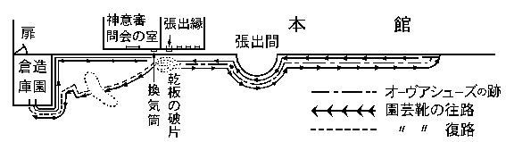
以上述べたところの、総体で五十に近い靴跡には、周囲の細隙から滲み込んだ泥水が、底ひたひたに
澱んでいるだけで、印像の角度は依然鮮明に保たれていた。すなわち、雨に叩かれた形跡は、
些細なものも現われていないのである。してみると、靴跡が印されたのは、昨夜雨が降り止んだ十一時半以後に相違ない。しかも、その二様の靴跡について、前後を証明するものがあった。と云うのは、乾板の破片を中心に、二つの靴跡が合流している附近に、一ヶ所
套靴の方が、片方の上を踏んでいる跡が残っていた。したがって、
套靴を付けた人物の来た時刻が、
護謨製の長靴と思われる方と同時か、あるいはそれより以後である事は明らかなのである。続いて、法水の調査が造園倉庫にも及んだのは当然であるが、そのシャレイ風の小屋は床のない積木造りで、内部から
扉一つで本館に通じていた。そして、各種の園芸用具や害虫駆除の噴霧器などが、雑然と置かれてあった。法水は、本館に出入りする扉の側で、一足の長靴を見付けだした。それは先が
喇叭形に開いていて、
腿の半分ぐらいまでも埋まってしまう、
純護謨製の園芸靴だった。しかも、底に附着している泥の中で、砂金のように輝いているのが、乾板の微粒だったのである。のみならず、後刻になって、その園芸用の長靴は、川那部易介の所有品である事が判明した。
そうなってみると読者諸君は、この二様の靴跡に様々な疑問を覚えられるであろうが、ことに、ある一つの驚くべき矛盾に気づかれたことと思う。また、靴跡相互の時間的関係から推しても、夜半陰々たる刻限に、二人の人物によって何事が行われたのか――恐らくその片影すら、
窺うことは不可能であるに相違ない。云うまでもなく法水でさえも、原型を回復することは勿論のこと、この紛乱錯綜した謎の
華には、疑義を挾む一言半句さえ述べる余地はなかったのである。しかし法水は、心中何事か
閃いたものがあったとみえて、鑑識課員に靴跡の造型を命じた後に、次項どおりの調査を私服に依頼した。
一、附近の枯芝は何時頃焼いたか？
一、裏庭側全部の鎧扉に附着している氷柱の調査。
一、夜番について、裏庭における昨夜十一時半以後の状況聴取。
それからほどなく、闇の中を点のような
赭い灯が動いていったと云うのは、法水等が
網龕灯を借りて、野菜園の後方にある墓地に
赴いたからだった。その頃は雪が本降りになっていて、烈風は櫓楼を
簫のように
唸らせ、それが
旋風と巻いて吹き下してくると、いったん地面に叩き付けられた雪片が再び舞い上ってきて、たださえ
仄暗い灯の行手を遮るのだった。やがて、
凄愴な自然力に
戦いている
橡の樹林が現われ、その間に、二本の棺駐門の柱が見えた。そこまで来ると、頭上の格の中から、歯ぎしりのような鐘を吊した
鐶の
軋りが聞え、振動のない鐘を叩く
錘舌の音が、狂った鳥のような陰惨な叫声を発している。墓地はそこから始まっていて、小砂利道の突当りが、ディグスビイの設計した
墓※［＃「穴かんむり／石」、U+25954、169-18］だった。
墓※
［＃「穴かんむり／石」、U+25954、170-1］の周囲は、
約翰と鷲、
路加と有翼
犢と云うような、十二師徒の鳥獣を
冠彫にした鉄柵に囲まれ、その中央には、巨大な石棺としか思われない
葬龕が横たわっていた。さて、ここで墓柵の内部を詳述しなければならない。だいたいにおいて、
聖ガール寺院（
瑞西（スイス）コンスタンス湖畔に六世紀頃愛蘭土（アイルランド）僧の建設したる寺院）や、南ウエイルズのペンブローク
寺などにも現に残存している、露地式
葬龕を模したものであったが、それには、いちじるしい異色が現われていた。と云うのは、墓地樹として、典型的な、
ななかまどや
枇杷の
類がなく、
無花果・糸杉・
胡桃・
合歓樹・
桃葉珊瑚・
巴旦杏・
水蝋木犀の七本が、別図のような位置で配置されていた。またそれ等の樹木に取り囲まれた中央の
葬龕は、ウムブリヤの
泣儒を
浮彫にした
薬研石の台座まではともかくとして、その上に載せられた白大理石の
棺蓋になると、はじめて異様な構想が現われてくるのだった。伝統的な儀習としては、その上が、紋章あるいは人像か単純な十字架が通例だが、それには、音楽を伝統とする降矢木の標章としての
三角琴が
筋彫にされ、その上に、鍛鉄製の
希臘十字架と
磔刑耶蘇が載せられてあった。しかも、その耶蘇もまた
異形なもので、首をやや左に傾けて、両手の指を逆に
反らせて上向きに
捻り上げ、そろえた
足尖を、さも苦痛を
耐えているかのよう、内輪へ極度に反らせているところは……さらに、
肋骨が透いて見えて、いかにも貧血的な
非化体相と云い……そのすべてが、
※祭［＃「穴かんむり／石」、U+25954、170-15］時代のものに酷似してはいる、がかえってそれよりも、ヒステリー患者の弓状硬直でも見るようで――いかにもそう云った、精神病理的な感じに圧倒されるのだった。ひととおり観察を終えると、法水は熱病患者のような眼をして検事を顧みた。
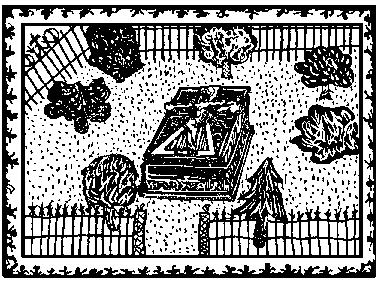
「ねえ支倉君、キャムベルに云わせると、重症の失語症患者でも、人を呪う言葉は最後まで残っていると云うじゃないか。また、すべて人間が力尽きて、
反噬する気力を失ってしまった時には、その激情を緩解するものは、
精霊主義以外にはないと云うがね。明らかに、これは
呪詛だよ。なにより、ディグスビイは
威人なんだぜ。未だに、悪魔教バルダスの遺風が残っていて、ミュイヤダッハ
十字架風の異教趣味に陶酔する者があると云われる――あのウエイルズ生れなんだ」
「いったい君は、何を云いたいんだ」と検事は、薄気味悪くなったように叫んだ。
「実は支倉君、この
葬龕は並大抵のものではないのだ。ボズラ（
死海の南方）の荒野にあって、昼は
鬣狗が守護し、夜になると、魔神降下を喚き出すと伝えられる――
死霊集会の
標なんだよ」と法水は横なぐりに
睫毛の雪を払って、云った。「だが僕は
猶太教徒でも
利未族（
猶太教で祭司となる一族）でもないのだからね。眼前に
死霊集会の標を眺めていても、それをモーゼみたいに、壊さねばならぬ義務はないと思うよ」
「そうすると」熊城は
衝くように云った。「
先刻の弱音器記号の解釈は、どうしたんだ？」
「それなんだ熊城君、やはり、僕の推定が正しかったのだよ」と法水は、
＋の記号がもたらした解説を始めた。「僕が予想した三惑星の連結は、まさしく暗示されているのだ。最初に、墓地樹の配置を見給え。アルボナウト以後の
占星学では、一番手前の糸杉と
無花果とが、土星と木星の所管とされているし、向う側の中央にある
合歓樹は、火星の
表徴になっているのだ。またそれを、
曼陀羅華・
矢車草・
苦艾と、草木類でも表わすことが出来るけれども……いったいその三外惑星の集合に、どういう意味があるかと云うと、モールレンヴァイデなどの
黒呪術的占星学では、それが変死の
表徴になっているのだ。ところで君達は、十一世紀
独逸のニックス教（
ムンメル湖の水精でニクジーと云う、基督教徒を非常に忌み嫌う妖精を礼拝する悪魔教）を知っているかね。あの悪魔教団に属していた毒薬業者の一団は、その三惑星の集合を、
纈草・
毒人蔘・
蜀羊泉の三草で現わしていて、その三つを
軒辺に吊し、秘かに毒薬の所在を暗示していたと伝えられている。それが、後世になって三樹の葉に代えられたと云うのだが、さてそこで、その三本の樹を連ねた、三角形と交わるものが何だろうか？」
（註）（一）纈草。敗醤〔オミナエシ〕科の薬用植物で、癲癇、ヒステリー痙攣等に特効あるため、学者の星と云われる木星の表徴とす。
（二）毒人蔘。繖形科の毒草にして、コニインを多量に含み、最初運動神経が痲痺するため［＃「痲痺するため」は底本では「痳痺するため」］、妖術師の星と称される土星の表徴とす。
（三）蜀羊泉。茄科の同名毒草にして、その葉には特にソラニン、デュルカマリンを含むものなれば、灼熱感を覚えると同時に中枢神経がたちどころに痲痺するため［＃「痲痺するため」は底本では「痳痺するため」］、火星の表徴とす。
網龕灯の
赭黒い灯が、薄く雪の積った聖像の陰影を横に縦に揺り動かして、なんとも云えぬ不気味な生動を与える。また、その光は、法水の鼻孔や口腔を異様に拡大して見せて、いかにも、中世異教精神を語るに
適わしい顔貌を作るのだった。しかし、熊城は不審を唱えた。
「だが、胡桃・巴旦杏・
桃葉珊瑚・
水蝋木犀の四本では、結局正方形になってしまうぜ」
「いや、それが魚なんだよ」と法水は突飛な
言を吐いた。
「
埃及の大占星家ネクタネブスは、毎年ニイルの氾濫を告げる
双魚座を、でなしにという記号で現わしている。と云うのは、いま君の云った正方形が、いわゆる
天馬星の大正方形であって、
天馬座の
鞍星の外二星にアンドロメダ座のアルフェラッツ星を結び付け、そうして出来る正四角形を指しているからなんだ。そして、この
三角琴の
筋彫が
三角座とすれば、その中央に挾まれた聖像は、
天馬座と
三角座の間にある、
双魚座［＃ルビの「ピスケス」は底本では「ピスセス」］ではないだろうか。ところで、一五二四年にもそれがあって、当時有名な占星数学者ストッフレルが再洪水説を称えたと云うほどで、とにかく三つの外惑星が
双魚座と連結するという天体現象は、大凶災の
兆とされているのだ。しかし、凶災を人為的に作ろうとするのが、呪詛じゃないか。ともあれ、これを見給え。実は、
先刻図書室で見たマクドウネルの梵英辞典に、見なれない蔵書印が
捺してあった。しかし、いま考えると、それがディグスビイの印らしいので、それから推すとたぶんこの
葬龕も、あの男の
奇異な趣味と、病的な性格を語るものに相違ないのだよ」
と法水が、聖像の
周囲にある雪を払い
退けると、鍛鉄の十字架から浮び上った痛ましい全身には、みるみる不思議な変化が現われていった。それは、あるいは彼が魔法を使ったのではないかと疑われたほどに、よもや人間の世界にあろうとは思われぬ奇怪な符号だった。
磔身の頭から
爪尖までが、白く
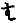形で残されてしまったからだ。しかし、法水は静かに、聖像から変化した不可解な記号の事を説きはじめた。
「ねえ支倉君、
黒呪術は異教と
基督教を繋ぐ連字符である――とボードレールが云うじゃないか。まさしくこれは、
調伏呪語に使う梵語の
の字なんだよ。また、
三角琴のに似た形は、
呪詛調伏の黒色三角炉に、欠いてはならぬ
積柴法形なのだ。チルダースの『
呪法僧』の中に、
不空羂索神変真言経の解釈が載っているが、それによると、
は、
火壇に火天を招く金剛火だ。その字片をの形に積んだ
柴の下に置いて、それに火を点じ、
白夜珠吠陀の呪文
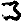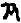 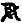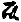
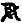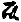を唱えると、千古の大史詩『
摩訶婆羅多』の中に現われる
毘沙門天の四大鬼将――
乾闥婆大刀軍将・
大竜衆・
鳩槃荼大臣大将・北方薬叉鬼将の四鬼神が、秘かに
毘沙門天の統率を脱し来り、また、史詩『
羅摩衍那』の中に現われる
羅刹羅縛拏も、十の
頭を振り立て、悪逆火天となって招かれると云うのだ。だから、僕がもし仏教秘密文学の
耽溺者だとしたら、毎夜この墓※
［＃「穴かんむり／石」、U+25954、174-17］では、眼に見えない符号呪術の火が
焚かれていて、黒死館の櫓楼の上を
彷徨する、黒い陰風がある――と結論しなければならないだろう。しかし、とうてい僕には、それを一片の心霊分析としか解釈できない。そして、ディグスビイという神秘的な性格を持つ男が、生前抱いていた意志である――という推断だけに止めておきたいのだ。何故なら熊城君、すでに僕は危険を悟って、心理学の著述などは、ロッジの『レイモンド』ボルマンの『
蘇格蘭人ホーム』の改訂版以後は読まないのだし、また、『
妖異評論』の全冊を焼き捨ててしまったほどだからね」
最後に至って、法水は鉄のような唯物主義者の本領を発揮した。けれども、彼の張りきった絃線のような神経に触れるものは、たちどころに、その場去らず類推の花弁となって開いてしまうのだ。わずか一つの弱音器記号からでも、当の館の人々にさえ
顔相すら知られていない、故人クロード・ディグスビイの驚くべき心理を
曝け出したのであった。それから、法水等は墓地を出て、風雪の中を本館の方に歩んで行ったが、こうして、捜査は夜になるも続行されて、いよいよ、黒死館における神秘の核心をなすと云われる、三人の異国楽人と対決することになった。
一同が再び
旧の
室に戻ると、法水はさっそく真斎を呼ぶように命じた。間もなく、
足萎の老人は四輪車を駆ってやって来たが、以前の生気はどこへやらで、先刻うけた
呵責のため顔は泥色に
浮腫んでいて、まるで別人としか思われぬような
憔悴れ方だった。この老史学家は指を神経的に
慄わせ、どことなく憂色を湛えていて、明らかに再度の喚問を
忌怖するの情を示していた。法水は自分から残酷な生理拷問を課したにかかわらず、空々しく容体を見舞った後で、きりだした。
「実は田郷さん、僕には、この事件が起らない以前から知りたい事があったのですよ。と云うのは、殺されたダンネベルグ夫人をはじめ四人の異国人に関する事なんですが、いったいどうして算哲博士は、あの人達を幼少の頃から養わねばならなかったのでしょうか？」
「それが判れば」と真斎はホッと
安堵の色を
泛べたが、先刻とは異なり率直な陳述を始めた。「この館が、世間から化物屋敷のようには云われませんじゃろう。御承知かもしれませんが、あの四人の方々は、まだ乳離れもせぬ揺籃の頃、それぞれ本国にいる算哲様の友人の方々から送られてまいったそうです。しかし、日本に着いてからの四十年余りの間と云うものは、確かに美衣美食と高い教程でもって
育まれていったのですから、外見だけでは、十分宮廷生活と申せましょう。ですが、
儂にはそう申すよりも、むしろそういう高貴な壁で
繞らされた、牢獄と云った方が
適わしいような感じがしますのじゃ。ちょうどそれが、「ハイムスクリングラ（
オーディン神より創まっている古代諾威王歴代記）」にある、僧正テオリディアルの執事そっくりじゃ。あの当時の日払租税のために、一生金勘定をし続けたと云うザエクス
爺と同様、あの四人の方々も、この構内から一歩の外出すら許されていなかったのです。それでも、永年の
慣習というものは恐ろしいもので、かえって御当人達には、人に接するのを嫌う――いわば
厭人とでも云うような傾向が強くなってまいりました。年に一度の演奏会でさえも、招かれた批評家達には、演奏台の上から目礼するのみのことで、演奏が終れば、サッサと自室に引っ込んでしまうといった風なのでした。ですから、あの方々が、何故揺籃のうちにこの館に連れて来られ、そうして鉄の籠の中で、老いの始まるまで過さねばならなかったかということは、もう今日では、過ぎ去った
古話にすぎません。ただそういった記録だけを残したままで、算哲様は、そっくりの秘密を墓場の中へ運ばれてしまうのです」
「ああ、ロエブみたいなことを……」と法水は、
道化たような嘆息をしたが、「いま貴方は、あの人達の厭人癖を
植物向転性みたいにお考えでしたね。しかし、たぶんそれは、単位の悲劇なんでしょう」
「単位？ 無論
四重奏団としては、一団をなしておられたでしょうが」と真斎は単位と云った法水の言葉に、深遠な意義が潜んでいるのを知らなかった。「ところで、あの方々とお会いになられましたかな。どなたも冷厳なストイシャンです。よしんば
傲慢や冷酷はあっても、あれほど整美された人格が、真性の孤独以外に求められようとは思われませんな。ですから、日常生活では、たいしてお互いが親密だと云うほどでもなく、若い頃にも密接した生活にかかわらず、いっこう恋愛沙汰など起らなかったのでしたよ。もっとも、お互いに接近しようとする意識のないせいもあるでしょうが、感情の衝突などということは、あの一団にも、また異人種の
吾々に対しても、かつて見たことがないというほどですのじゃ。とにかく、やはり算哲様でしょうかな――あの四人の方々が、一番親愛の情を感じていた人物と云えば」
「そうですか、博士に……」といったん法水は意外らしい面持をしたが、
烟をリボンのように吐いて、ボードレールを引用した。
「では、さしずめその関係と云うのが、
吾が懐かしき魔王よなんでしょうか」
「そうです。まさに
吾なんじを称えん――じゃ」真斎は微かに動揺したが、劣らず対句で
相槌を打った。
「しかし、ある場合は」と法水はちょっと思案気な顔になり、「
洒落者や阿諛者はひしめき合って――」と云いかけたが、急にポープの『
髪盗み』を止めて『ゴンザーゴ殺し』（
ハムレット中の劇中劇）の
独白を引き出した。
「どのみち、
汝真夜中の暗きに摘みし草の臭き液よ――でしょうからね」
「いや、どうして」と真斎は
頸を振って、「
三たび魔神の呪詛に萎れ、毒気に染みぬる――とは、けっして」と次句で答えたが、異様な抑揚で、ほとんど韻律を失っていた。のみならず、何故か
周章いて復誦したが、かえってそれが、真斎を蒼白なものにしてしまった。法水は続けて、
「ところで田郷さん、事によると、僕は幻覚を見ているのかもしれませんが、この事件に――
しかるに上天の門は閉され――と思われる節があるのですが」と法水は、
門という一字をミルトンの『失楽園』の中で、ルシファの追放を描いている一句に挾んだ。
「ところが、このとおり」真斎は平然としながらも、妙に
硬苦しい態度で答えた。「
隠扉もなければ、
揚蓋も秘密階段もありません。ですから、確実に、
再び開く事なし――なのです」
「ワッハハハハ、いやかえって、
異常に空想が働き、男自ら妊れるものと信ずるならん――かもしれませんよ」と法水が爆笑を揚げたので、それまで、陰性のものがあるように思われて、妙に緊迫していた空気が、偶然そこで
解れてしまった。真斎もホッとした顔になって、
「それより法水さん、この方を
儂は、
処女は壺になったと思い三たび声を上げて栓を探す――だと思うのですが」
この奇様な詩文の応答に、側の二人は
唖然となっていたが、熊城は苦々しく法水に
流眄をくれて、事務的な質問を挾んだ。
「ところで、お訊ねしたいのは、遺産相続の実状なんです」
「それが、不幸にして明らかではないのですよ」真斎は沈鬱な顔になって答えた。「勿論その点が、この館に暗影を投げていると云えましょう。算哲様はお
歿りになる二週間ほど前に、遺言状を作成して、それを館の大金庫の中に保管させました。そして、鍵も文字合わせの符表もともに、津多子様の御夫君
押鐘童吉博士にお預けになったのですが、何か条件があるとみえて、未だもって開封されてはおりません。
儂は相続管理人に指定されているとは云い条、本質的には全然無力な人間にすぎんのですよ」
「では、遺産の配分に預かる人達は？」
「それが奇怪な事には、旗太郎様以外に、四人の帰化入籍をされた方々が加わっております。しかし、人員はその五人だけですが、その内容となると、知ってか知らずか、誰しも一言半句さえ洩らそうとはせんのです」
「まったく驚いた」と検事は、要点を書き留めていた鉛筆を抛り出して、
「旗太郎以外にたった一人の血縁を除外しているなんて。だが、そこには何か不和とでも云うような原因が……」
「それがないのですから。算哲様は津多子様を一番愛しておられました。また、その意外な権利が、四人の方々には恐らく寝耳に水だったでしょう。ことにレヴェズ様のごときは、夢ではないかと申されたほどでした」
「それでは田郷さん、さっそく押鐘博士に御足労願うことにしましょう」と法水は静かに云った。「そうしたら、幾分算哲博士の精神鑑定が出来るでしょうからな。では、どうぞこれでお引き取り下さい。それから、今度は旗太郎さんに来て頂きますかな」
真斎が去ると、法水は検事の方へ向き直って、
「これで、二つ君の仕事が出来た訳だよ。押鐘博士に召喚状を出す事と、もう一つは、予審判事に家宅捜査令状を発行してもらう事なんだ。だって、僕等の偏見を溶かしてしまうものは、この場合、遺言状の開封以外にはないじゃないか。どのみち、押鐘博士もおいそれとは承諾しまいからね」
「時に、君と真斎がやった、いまの詩文の問答だが」と熊城は率直に突っ込んだ。「あれは、何か
物奇主義の産物かね」
「いやどうして、そんな循環論的なしろものなもんか。僕がとんだ思い違いをしているか、それとも、ユングやミュンスターベルヒが大
莫迦野郎になってしまうかなんだ」
法水は曖昧な言葉で濁してしまったが、その時、廊下の方から口笛の音が聞えてきた。それが止むと、扉が開いて旗太郎が現われた。彼はまだ十七にすぎないのだが、態度がひどく大人びていて、誰しも成年期を前に幾分残っていなければならぬ、童心などは微塵も見られない。ことに、
媚麗しい容色の階調を破壊しているのが、落着きのない眼と狭い額だった。法水は丁寧に椅子を薦めて、
「僕はその『ペトルーシュカ』が、ストラヴィンスキーの作品の中では、一番好ましいと思っているのです。恐ろしい原罪哲学じゃありませんか。人形にさえ、口を空いている
墳墓が待っているのですからね」
冒頭に旗太郎は、全然予期してもいなかった言葉を聴いたので、その蒼白くすんなり伸びた身体が、急に硬ばったように思われ、神経的に
唾を
嚥みはじめた。法水は続けて、
「と云って、貴方が口笛で『乳母の踊り』の
個所を吹くと、それにつれて、テレーズの
自動弾条人形が動き出すというのではないのです。それに、また
昨夜十一時頃に、貴方が紙谷伸子と二人でダンネベルグ夫人を訪れ、それからすぐ寝室に入られたという事も判っているのですからね」
「それでは、何をお訊ねになりたいのです？」と旗太郎は十分声音変化のきている声で、反抗気味に問い返した。
「つまり、貴方がたに課せられている、算哲博士の意志をですがね」
「ああ、それでしたら」と旗太郎は、微かに自嘲めいた
亢奮を
泛べて、「確かに、音楽教育をしてくれた事だけは、感謝してますがね。でなかった日には、
既に気狂いになっていますよ。そうでしょう。
倦怠、不安、懐疑、
廃頽――と明け暮れそればかりです。誰だって、こんな圧し
殺されそうな憂鬱の中で、古びた能衣裳みたいな人達といっしょに暮してゆけるもんですか。実際父は、僕に人間惨苦の記録を残させる――それだけのために、細々と生を保ってゆく
術を教えてくれたのです」
「そうすると、それ以外のすべてを、四人の帰化入籍が奪ってしまったという訳ですか？」
「たぶんそうともなりましょうね」と旗太郎は妙に臆したような云い方をして、「いや、事実未だに、その理由が
判然としておりません。なにしろ、グレーテさんはじめ四人の人達の意志が、それには少しも加わっていないのですからね。ところで、こういう
女王アン時代の警句を御存じですか。陪審人が
僧正の夕餐に
与るためには、罪人が一人
絞り殺される――って。だいたい、父という人物が、そういった
僧正みたいな男なんです。魂の底までも、秘密と画策に包まれているんですから、たまりませんよ」
「ところが旗太郎さん、そこに、この館の病弊があるのですよ。いずれ除かれることでしょうが、だが貴方にしたところで、なにも博士の精神解剖図を、持っているという訳じゃありますまい」と相手の妄信を
窘めるように云ってから、法水は再び事務的な質問を放った。
「ところで、入籍の事を、博士から聴かれたのは何日頃です？」
「それが、自殺する二週間ほど前でした。その時遺言状が作成されて、僕は、自分自身に関する部分だけを父から読み聴かされたのです」と云いかけたが、旗太郎は急に落着かない態度になって、「ですけれど法水さん、僕には、その部分をお聴かせする自由がないのですよ。
口に出したら最後、
それは持分の喪失を意味するのですからね。それに、他の四人も同様で、やはり自分自身に関する事実よりほかに知らないのです」
「いやけっして」と法水は、諭すような和やかな
声音で、「だいたい日本の民法では、そういう点がすこぶる寛大なんですから」
「ところが駄目です」と旗太郎は蒼ざめた顔で、キッパリ云い切った。「何より、僕は父の眼が怖ろしくてならないのです。あのメフィストのような人物が、どうして後々にも、何かの形で陰険な制裁方法を残しとかずにはおくものですか。きっとグレーテさんが殺されたのだって、そういう点で、何か誤ちを冒したからに違いありません」
「では、酬いだと云われるのですか」と熊城は鋭く切り込んだ。
「そうです。ですから、僕が云えないという理由は、十分お解りになったでしょう。そればかりでなく、第一、財産がなければ、僕には生活というものがないのですからね」と平然と云い放って、旗太郎は立ち上った。そして、
提琴奏者特有の細く光った指を、十本
卓子の端に並べて、最後に彼はひどく激越な調子で云った。
「もうこれで、お訊ねになる事はないと思いますが、僕の方でも、これ以上お答えすることは不可能なのです。しかし、この事だけは、はっきり御記憶になって下さい。よく館の者は、テレーズ人形のことを悪霊だと申すようですが、僕には、父がそうではないかと思われるのです。いいえ、確かに父は、この館の中にまだ生きているはずです」
旗太郎は、遺言書の内容にはきわめて浅く触れたのみで、再度鎮子に続いて、黒死館人特有の病的心理を強調するのだった。そうして陳述を終ると、淋しそうに会釈してから、戸口の方へ歩んで行った。ところが、彼の行手に当って、異様なものが待ち構えていたのである。と云うのは、扉の際まで
［＃「際まで」は底本では「際まる」］来ると、何故かその場で釘付けされたように立ち
竦んでしまい、そこから先へは一歩も進めなくなってしまった。それは、単純な恐怖とも異なって、ひどく複雑な感情が動作の上に現われていた。左手を
把手にかけたままで、片腕をダラリと垂らし、両眼を不気味に据えて前方を凝視しているのだった。明らかに彼は、何事か扉の彼方に、
忌怖すべきことを意識しているらしい。がやがて、旗太郎は、顔面をビリリと怒張させて、醜い憎悪の相を現わした。そして、
痙つれたような声を前方に投げた。
「ク、クリヴォフ夫人……貴女は」
そう云った途端に、
扉が外側から引かれた。そして、二人の
召使が
閾の両側に立つと見る間に、その間から、オリガ・クリヴォフ夫人の半身が、
傲岸な威厳に充ちた態度で現われた。彼女は、
貂で高い襟のついた
剣術着のような黄色い
短衣の上に、
天鵞絨の
袖無外套を羽織っていて、右手に盲目のオリオンとオリヴァレス伯（
一五八七―一六四五。西班牙（スペイン）フィリップ四世朝の宰相）の定紋が
冠彫にされている、豪奢な
講典杖をついていた。その黒と黄との対照が、彼女の赤毛に強烈な色感を与えて、全身が、
焔のような激情的なものに包まれているかの感じがするのだった。頭髪を無雑作に掻き上げて、
耳朶が頭部と四十五度以上も離れていて、その上端が、まるで峻烈な性格そのもののように尖っている。やや生え際の抜け上った額は眉弓が高く、灰色の眼が異様な底光りを湛えていて、眼底の神経が露出したかと思われるような鋭い凝視だった。そして、
顴骨から下が断崖状をなしている所を見ると、その部分の表出が険しい圭角的なもののように思われ、また真直に垂下した鼻梁にも、それが鼻翼よりも長く垂れている所に、なんとなく画策的な秘密っぽい感じがするのだった。旗太郎は摺れ違いざまに、肩口から見返して、
「オリガさん、御安心下さい。何もかも、お聴きのとおりですから」
「ようく判りました」とクリヴォフ夫人は
鷹揚に半眼で
頷き、気取った身振をして答えた。「ですけど旗太郎さん、仮りにもし私の方が先に呼ばれたのでしたら、その場合の事もお考え遊ばせな。きっと貴方だって、私どもと同様な行動に出られるにきまってますわ」
クリヴォフ夫人が私どもと複数を使ったのに、ちょっと異様な感じがしたけれども、その理由は瞬後に判明するに至った。扉際に立っていたのは彼女一人だけではなく、続いてガリバルダ・セレナ夫人、オットカール・レヴェズ氏が現われたからだった。セレナ夫人は、毛並の優れた
聖バーナード
犬の鎖を握っていて、すべてが身長と云い容貌と云い、クリヴォフ夫人とは全く
対蹠的な観をなしていた。暗緑色のスカートに
縁紐で縁取りされた
胸衣をつけ、それに
肱まで拡がっている白いリンネルの
襟布、頭にアウグスチン尼僧が被るような純白の
頭布を頂いている。誰しもその優雅な姿を見たら、この婦人が、ロムブローゾに激情性犯罪の
市と指摘されたところの、南
伊太利ブリンデッシ市の生れとは気づかぬであろう。レヴェズ氏はフロックに灰色のトラウザー、それに
翼形カラーをつけ、一番最後に巨体を揺って現われたが、
先刻礼拝堂で遠望した時とは異なり、こう近接して眺めたところの感じは、むしろ懊悩的で、一見心のどこかに抑止されているものでもあるかのような、ひどく陰鬱気な相貌をした中老紳士だった。そして、この三人は、まるで聖餐祭の行列みたいに、ノタリノタリと歩み入って来るのだった。恐らくこの光景は、もしこの時、
綴織の下った
長管喇叭の音が起って
筒長太鼓が打ち鳴らされ、
静蹕を報ずる
儀仗官の声が聴かれたなら、ちょうどそれが、十八世紀ヴュルッテムベルクかケルンテン辺りの、小ぢんまりした宮廷生活を
髣髴たらしめるものであろうし、また反面には、従えた
召使の数に、彼等の病的な恐怖が窺えるのだった。さらに、いま旗太郎との間に交された醜悪な黙闘を考えると、そこに何やら、犯罪動機でも思わせるような、
黝んだ水が揺ぎ流れるといった気がしないでもなかった。けれども、なによりこの三人には、最初から採証的にも疑義を差し挾む余地はなかったのである。やがて、クリヴォフ夫人は法水の前に立つと、
杖の先で
卓子を叩き、命ずるような
強い声音で云った。
「私どもは、して頂きたい事があってまいったのですが」
「と云うと何でしょうか。とにかくお掛け下さい」法水がちょっと
躊躇ぎを見せたのは、彼女の命令的な語調ではなかった。遠見でホルバインの、「マーガレット・ワイヤット（
ヘンリー八世の伝記者、タマス・ワイヤット卿の［＃「タマス・ワイヤット卿の」は底本では「タマスワイヤット卿の」］妹）の像」に似ていると思われたクリヴォフ夫人の顔が、近づいてみると、まるで
種痘痕のような醜い
雀斑だったからである。
「実は、テレーズの人形を焚き捨てて頂きたいのです」とクリヴォフ夫人がキッパリ云い切ると、熊城は
吃驚して叫んだ。
「なんですと。たかが人形一つを。それは、また何故にです？」
「そりゃ、人形だけなら死物でしょうがね。とにかく、私どもは防衛手段を講ぜねばなりません。つまり、犯人の偶像を破棄して欲しいのです。時に貴方は、レヴェンスチイムの『
迷信と刑事法典（註）』――をお読みになったことがございまして？」
「では、ジュゼッペ・アルツォのことを
仰言るのですね」それまで法水は、しきりになにやら沈思げな表情をしていたが、はじめて言葉を挾んだ。
（註）キプロスの王ピグマリオンに始めて偶像信仰を記したる犯罪に関する中にあり。羅馬人マクネージオと並称さるるジュゼッペ・アルツオは、史上著名なる半陰陽にして、男女二基の彫像を有し、男となる時には女の像を、女としての際には男の像に礼拝するを常とせり。而して詐偽、窃盗、争闘等を事とせしも、一度男の像を破棄さるるに及び、その不思議な二重人格は身体的にも消失せりと伝えらる。
「まさにそうなのです」とクリヴォフ夫人は得たり顔に
頷いて、他の二人に椅子を
薦めてから、「私はなんとかして、心理的にだけでも犯人の決行力を鈍らしたいと思うのですわ。次々と起る惨劇を防ぐには、もう貴方がたの力を待ってはおられません」
それに次いでセレナ夫人が口を開いたけれども、彼女は両手を
怯々と胸に組み、むしろ哀願的な態度で云った。
「いいえ、心理的に
崇拝物どころの話ですか。あの人形は犯人にとると、それこそグンテル王の英雄（
ニーベルンゲン譚中、グンテル王の代りに、ブルンヒルト女王と闘ったジーグフリートの事）なんでございますからね。今後も重要な犯罪が行われる場合には、きっと犯人は陰険な策謀の中に隠れていて、あのプロヴィンシア人だけが姿を現わすにきまってますわ。だって、易介や伸子さんとは違って、私達は無防禦ではございませんものね。ですから、たとえば
遣り損じたにしても、捕えられるのが人形でしたら、また次の機会がないとも限りませんわ」
「さよう、どのみち三人の血を見ないまでは、この惨劇は終らんでしょうからな」レヴェズ氏は脹れぼったい瞼を
戦かせて、悲しげに云った。「ところが、
儂どもには課せられている
律法がありますのでな。それで、この館から災を避けることは不可能なのです」
「その戒律ですが、たぶんお聴かせ願えるでしょうな？」と検事はここぞと突っ込んだが、それをクリヴォフ夫人はやにわに遮って、
「いいえ、私達には、それをお話しする自由はございません。いっそ、そんな無意味な詮索をなさるよりも……」とにわかに激越な調子になり声を
慄わせて、「ああ、こうして私達は
暗澹たる奈落の中で、
火焔の海中にあるのです。それを、貴方は何故そう
好奇の眼を
って、新しい悲劇を待っておられるのでしょう？」と悲痛な声でヤングの詩句を叫ぶのだった。
法水は三人を
交互に眺めていたが、やがて乗り出すように足を組換え、薄気味悪い微笑が浮び上ると、
「さよう、まさに、
永続、無終なんです」と突然、狂ったのではないかと思われるような、言葉を吐いた。「そういう残酷な永遠刑罰を課したというのも、みんな故人の算哲博士なんですよ。たぶん旗太郎さんが云われたことをお聴きでしたでしょうが、博士こそ、
爾を父と呼びつつあるのを得たり気な歓喜をもって瞰視しているのです」
「マア、お父様が」セレナ夫人は
姿勢を改めて、法水を見直した。
「そうです。
罪と災の深さを貫き、
吾が十字架の測鉛は垂る――ですからな」と法水が自讃めいた調子でホイッチアを引用すると、クリヴォフ夫人は冷笑を湛えて、
「いいえ、
されど未来の深淵は、その十字架の測り得ざるほどに深し――ですわ」と云い返したが、その冷酷な表情が発作的に
痙攣を始めて、「ですが、ああきっと、
ほどなくしてその男死にたり――でしょうよ。貴方がたは、易介と伸子さんの二つの事件で、
既に無力を
曝露しているのですからね」
「なるほど」と簡単に
頷いたが、法水はいよいよ挑戦的にそして
辛辣になった。「しかし、誰にしろ、最後の時間がもう
幾許か測ることは不可能でしょうからね。いや、かえって昨夜などは、
かしこ涼し気なる隠れ家に、不思議なるもの覗けるがごとくに見ゆ――と思うのですが」
「では、その人物は何を見たのでしょうな。
儂はとんとその詩句を知らんのですよ」レヴェズ氏が暗い
怯々した調子で問い掛けると、法水は
狡そうに
微笑んで、
「ところがレヴェズさん、心も黒く夜も黒し、薬も利きて手も冴えたり――なんです。そして、その場所が、折もよし人も無ければ――でした」
と云い出したのは、一見見え透いた鬼面のようでもあり、また、故意に裏面に潜んでいる
棘のような計謀を、露わに
曝け出したような気がしたけれども、しかし彼の巧妙な
朗誦法は、妙に筋肉が硬ばり、血が凍りつくような不気味な空気を作ってしまった。クリヴォフ夫人は、それまで胸飾りのテュードル
薔薇（
六弁の薔薇）を
弄っていた手を卓上に合わせて、法水に挑み掛るような凝視を送りはじめた。が、その間のなんとなく
一抹の危機を
孕んでいるような沈黙は、戸外で荒れ狂う
吹雪の
唸りを
明瞭と聴かせて、いっそう凄愴なものにしてしまった。法水はようやく口を開いた。
「しかし、原文には、
また真昼を野の火花が散らされるばかりに、日の燃ゆるとき――とあるのですが、そこは不思議なことに、真昼や明りの中では見えず、夜も、闇でなくては見ることの出来ぬ世界なのです」
「闇に見える
」レヴェズ氏は警戒を忘れたように反問した。
法水はそれには答えず、クリヴォフ夫人の方を向いて、
「時に、その詩文が誰の作品だか御存じですか？」
「いいえ存じません」クリヴォフ夫人はやや生硬な態度で答えたが、セレナ夫人は、法水の不気味な暗示に無関心のような静けさで、
「たしか、グスタフ・ファルケの『
樺の森』では」
法水は満足そうに
頷き、やたらに煙の輪を吐いていたが、そのうち、妙に意地悪げな片笑が
泛び上がってきた。
「そうです。まさに『
樺の森』です。昨夜この
室の前の廊下で、確かに犯人は、その樺の森を見たはずです。しかし、
かれ夢みぬ、されど、そを云う能わざりき――なんですよ」
「では、その男は死人の室を、親しきものが行き通うがごとくに、戻っていったと
仰言るのですね」とクリヴォフ夫人は、急に
燥ぎ出したような陽気な調子になって、レナウの「
秋の心」を口にした。
「いえ、
滑り行く――なんてどうして、
彼奴は蹌踉き行ったのですよ。ハハハハハ」と法水は爆笑を上げながら、レヴェズ氏を
顧みて、
「ところでレヴェズさん、勿論それまでには、
その悲しめる旅人は伴侶を見出せり――なんでしたからな」
「そ、それを御承知のくせに」とクリヴォフ夫人はたまらなくなったように立ち上り、
杖を荒々しく振って叫んだ。「だからこそ私達は、その伴侶を焼き捨てて欲しいと御願いするのです」
ところが、法水はさも不同意を
仄めかすように、
莨の紅い尖端を
瞶めていて答えなかった。が、側にいる検事と熊城には、いつ上昇がやむか涯しのない法水の思念が、ここでようやく頂点に達したかの感を与えた。けれども、法水の努力は、いっかな止もうとはせず、この
精神劇において、あくまでも悲劇的開展を求めようとした。彼は沈黙を破って、
挑むような鋭い語気で云った。
「ですがクリヴォフ夫人、僕はこの気狂い芝居が、とうてい人形の焼却だけで終ろうとは思えんのですよ。実を云うと、もっと陰険朦朧とした手段で、別に踊らされている人形があるのです。だいたいプラーグの
万国操人形聯盟にだって、最近『ファウスト』が演ぜられたという記録はないでしょうからな」
「ファウスト
ああ、あのグレーテさんが断末魔に書かれたと云う紙片の文字のことですか」レヴェズ氏は力を
籠めて、乗り出した。
「そうです。最初の幕に
水精、二幕目が
風精でした。いまもあの可憐な
空気の精が、驚くべき奇蹟を演じて
遁れ去ってしまったところなんですよ。それにレヴェズさん、犯人は
Sylphus と男性に変えているのですが、貴方は、その
風精が誰であるか御存じありませんか」
「なに、
儂が知らんかって
いや、お互いに
洒落は止めにしましょう」レヴェズ氏は反撃を喰ったように
狼狽えたが、その時、不遜をきわめていたクリヴォフ夫人の態度に、
突如竦んだような影が差した。そして、たぶん衝動的に起ったらしい、どこか彼女のものでないような声が発せられた。
「法水さん、私は見ました。その男というのを確かに見ましたわ。昨夜私の室に入って来たのが、たぶんその
風精ではないかと思うんです」
「なに、
風精を」熊城の仏頂面が不意に硬くなった。「しかし、その時
扉には、鍵が下りていたのでしょうな」
「勿論そうでした。それが不思議にも開かれたのですわ。そして、背の高い痩せぎすな男が、薄暗い
扉の前に立っているのを見たのです」クリヴォフ夫人は異様に舌のもつれたような声だったが語り続けた。「私は十一時頃でしたが、寝室へ入る際に確かに鍵を下しました。それから、しばらく
仮睡んでから眼が覚めて、さて枕元の時計を見ようとすると、どうした事か、胸の所が
寝衣の両端をとめられているようで、また、
頭髪が引っ
痙れたような感じがして、どうしても頭が動かないのです。平生髪を解いて寝る習慣がございますので、これは縛りつけられたのではないかと思うと、背筋から頭の芯までズウンと
痺れてしまって、声も出ず
身動ぎさえ出来なくなりました。すると、
背後にそよそよ冷たい風が起って、滑るような微かな
跫音が裾の方へ遠ざかって行きます。そして、その跫音の主は、扉の前で私の視野の中に入ってまいりました。その男は振り返ったのです」
「それは誰でした？」そう云って、検事は思わず息を
窒めたが、
「いいえ、判りませんでした」とクリヴォフ夫人は切なそうな溜息を吐いて、「
卓上灯の光が、あの辺までは届かないのですから。でも、輪廓だけは判りましたわ。身長が五
呎四、五
吋ぐらいで、スンナリした、痩せぎすのように思われました。そして、眼だけが……」と述べられる肢体は、様子こそ異にすれ、何とはなしに旗太郎を
髣髴とさせるのだった。
「眼に
」熊城はほとんど慣性で一言挾んだ。すると、クリヴォフ夫人は俄然
傲岸な態度に返って、
「たしかバセドー氏病患者の眼を暗がりで見て、小さな眼鏡に間違えたとか云う話がございましたわね」と皮肉に打ち返したが、しばらく記憶を摸索するような態度を続けてから云った。
「とにかく、そういう言葉は、感覚外の神経で聴いて頂きたいのです。
強いて申せば、その眼が真珠のような光だったと云うほかにございません。それから、その姿が
扉の向うに消えると、
把手がスウッと動いて、
跫音が微かに左手の方へ遠ざかって行きました。それで、ようやく人心地がつきましたけども、いつの間にか髪が解かれたと見えて、私は始めて首を自由にすることが出来たのです。時刻はちょうど十二時半でございましたが、それからもう一度鍵を掛け直して、
把手を衣裳戸棚に結び付けました。けれども、そうなると、もう一睡どころではございませんでした。ところが、朝になって調べても、室内にはこれぞという異状らしい所がないのです。して見ると、てっきりあの人形使いに違いございませんわ。あの
狡猾な臆病者は、眼を醒ました私には、指一本さえ触れることが出来なかったのです」
結論として大きな疑問を一つ残したけれども、クリヴォフ夫人の
口誦むような静かな声は、
側の二人に悪夢のようなものを掴ませてしまった。セレナ夫人もレヴェズ氏も両手を神経的に絡ませて、言葉を発する気力さえ失せたらしい。法水は眠りから醒めたような形で、
慌てて
莨の灰を落したが、その顔はセレナ夫人の方へ向けられていた。
「ところでセレナ夫人、その風来坊はいずれ詮議するとして、時にこういうゴットフリートを御存じですか。
吾れ直ちに悪魔と一つになるを誰が妨ぎ得べきや――」
「ですけど、その
短剣……」と次句を云いかけると、セレナ夫人はたちまち混乱したようになってしまって、冒頭の音節から詩特有の旋律を失ってしまった、「その
短剣の刻印に吾が身は慄え戦きぬ――が、どうして。ああ、また何故に、貴方はそんなことをお訊きになるのです？」としだいに
亢奮していって、ワナワナ身を
慄わせながら叫ぶのだった。「ねえ、貴方がたは捜していらっしゃるのでしょう。ですけど、あの男がどうして判るもんですか。いいえ、けっしてけっして、判りっこございませんわ」
法水は紙巻を口の中で
弄びながら、むしろ残忍に見える微笑を湛えて相手を眺めていたが、
「なにも僕は、貴女の潜在批判を求めていやしませんよ。あんな
風精の
黙劇なんざあ、どうでもいいのです。それよりこれを、いずこに住めりや、なんじ暗き
音響――なんですがね」とデーメールの「
沼の上」を引き出したが、相変らずセレナ夫人から視線を放そうとはしなかった。
「ああ、それではあの」とクリヴォフ夫人は、妙に臆したような云い方をして、「でも、よくマア、伸子さんが間違えて、朝の
讃詠を二度繰り返したのを御存じですわね。実は、今朝あの方は一度、ダビデの詩篇九十一番のあの
讃詠を弾いたのですが、昼の
鎮魂楽の後には、火よ
霰よ雪よ霧よ――を弾くはずだったのです」
「いや、僕は礼拝堂の
内部の事を云っているのですよ」と法水は冷酷に突き放した。「実は、この事を知りたいのです。あの時、
確かそこにあるは薔薇なり、その附近には鳥の声は絶えて響かず――でしたからね」
「それでは、
薔薇乳香を
焚いた事ですか」レヴェズ氏も妙にギコちない調子で、探るように相手を見やりながら、
「あれはオリガさんが、後半よほど過ぎてから一時演奏を中止して焚いたのですが、しかし、これでもう、滑稽な腹芸はやめて頂きましょう。
儂どもは貴方から、人形の処置について伺えばよいのですから」
「とにかく
明日まで考えさせて下さい」法水はキッパリ云い切った。「しかし、つまるところ僕等は、人身擁護の機械なんですからね。護衛という点では、あの魔法博士に指一本差させやしませんよ」
法水がそう云い終ると同時に、クリヴォフ夫人は憤懣の
遣り場を露骨に動作に現わして、
性急しく二人を促し立ち上った。そして、法水を憎々しげに見下して悲痛な語気を吐き捨てるのだった。
「やむを得ません。どうせ貴方がたは、この虐殺史を統計的な数字としかお考えにならないのですからね。いいえ、結局私達の運命は、アルビ教徒（註一）か、ウェトリヤンカ郡民（註二）のそれに異ならないかもしれません。ですけど、もし対策が出来るものなら……ああ、それが出来るのでしたら、今後は、私達だけですることにいたしますわ」
（註）（一）アルビ教徒――南フランス、アルビに起りし新宗教、摩尼教の影響をうけて、新約聖書のすべてを否定したるによって、法王インノセント三世の主唱による新十字軍のために、一二〇九年より一二二九年まで約四十七万人の死者を生ずるにいたれり。
（二）ウェトリヤンカ郡民――一八七八年露領アストラカンの黒死病猖獗期において、ウェトリヤンカ郡を砲兵を有する包囲線にて封鎖し、空砲発射並びに銃殺にて威嚇せしめ、郡民は逃れ得ず、ほとんど黒死病のために斃れたり。
「いやどうして」と法水はすかさず皮肉に応酬した。「ですがクリヴォフ夫人、たしか
聖アムブロジオだったでしょうか、死は悪人にもまた有利なり――と云いましたからな」
鎖を忘れられた
聖バーナード
犬が、物悲しげに
啼きながら、セレナ夫人の跡を追うて行ったのが最後で、三人が去ってしまうと、入れ違いに一人の私服が先刻命じておいた裏庭の調査を完了して来た。そして、調査書を法水に渡してから、
「
鎧通しは、やはりあの一本だけでした。それから、本庁の
乙骨医師には、御申し付けどおりに渡しておきましたが」と復命すると、それに法水は、尖塔にある十二宮の
円華窓を撮影するように命じてから、その私服を去らしめた。熊城は当惑げな顔で、微かに嘆息した。
「ああまた
扉と鍵か、犯人は
呪い屋か錠前屋か、いったいどっちなんだい。まさかにジョン・デイ博士の隠顕扉が、そうザラにあるという訳じゃあるまい」
「驚いたね」法水は皮肉な微笑を投げた。「あんなもののどこに、創作的な技巧があってたまるもんか。そりゃ、この館から一歩でも外へ出れば、無論驚くべき疑問に違いないさ。けれども、
先刻君は書庫の中で、犯罪現象学の素晴らしい
書目を見たはずだっけね。つまり、その扉を鎖させなかった技巧というのが、この館の精神生活の一部をなすものなんだ。庁へ帰ってからグロース
（註）でも見れば、それで何もかも判ってしまうのだよ」
（註）法水がグロースと云ったのは、「予審判事要覧」中の犯人職業的習性の章で、アッペルトの「犯罪の秘密」から引いた一例だと思う。以前召使だった靴型工の一犯人が、ある銀行家の一室に忍び入り、その室と寝室との間の扉を鎖さしめないために、あらかじめ閂穴の中に巧妙に細工した三稜柱形の木片を插入して置く。それがために銀行家は、就寝前に鍵を下そうとしても閂が動かないので、すでに閉じたものと錯覚を起し、犯人の計画はまんまと成功せしと云う。
法水があえて再言しようとはせず、そのまま不可避的なものとして放棄してしまったことは、平生検討的な彼を知る二人によると、異常な
驚愕に違いないのだった。が
畢竟するところ、この事件の深さと神秘を、彼が書庫において測り得た結果であると云えよう。検事は再び法水の粋人的な訊問態度をなじりかかった。
「僕はレヴェズじゃないがね。君にやってもらいたいのは、もう
動作劇だけなんだ。ああいう
恋愛詩人趣味の
唱合戦はいい加減にして、そろそろクリヴォフ夫人がそれとなしに
仄めかした、旗太郎の幽霊を吟味しようじゃないか」
「冗談じゃない」法水は
道化たようななにげない身振をしたが、その顔にはいつもの幻滅的な憂鬱が一掃されていた。
「どうして、僕の心理表出摸索劇は終ったけれども、あれは歴史的な葛藤さ。ところが、僕が引っ組んだのは、あの三人じゃないのだ。ミュンスターベルヒなんだ。やはり、あいつは大
莫迦野郎だったよ」
そこへ、警視庁鑑識医師の
乙骨耕安が入って来た。
［＃改丁］
［＃ページの左右中央］
［＃改ページ］
伸子の診察を終って入って来た
乙骨医師は、五十をよほど越えた老人で、ヒョロリと瘠せこけて
蟷螂のような顔をしているが、ギロギロ光る眼と、一種気骨めいた
禿げ方とが印象的である。が、庁内きっての老練家だったし、ことに毒物鑑識にかけては、その方面の著述を五、六種持っているというほどで、無論
法水とも充分熟知の間柄だった。彼は座につくと無遠慮に
莨を要求して、一口
甘そうに吸い込むと云った。
「さて法水君、僕の心像鏡的証明法は、遺憾ながら
知覚喪失だ。だいたい廻転椅子がどうだろうがこうだろうが、結局あの蒼白く透き通った
歯齦を見ただけで、僕は辞表を
賭けてもいいと思う。まさしく
単純失神と断言して差支えないのだ。ところで、ここで特に、熊城君に一言したいのだが、あの女が兇器の鎧通しを握っていたと聴いて、僕は
数当て骨牌の裏を見たような気がしたのだよ。あの失神は、実に陰険
朦朧たるものなんだ。あまりに揃い過ぎているじゃないか」
「なるほど」法水は失望したように
頷いたが、「とにかく細目を
承ろうじゃないか。あるいはその中から、君の
耄碌さ加減が飛び出して来んとも限らんからね。ところで、君の検出法は？」
乙骨医師はところどころ術語を交えながら、きわめて事務的に彼の知見を述べた。
「無論吸収の早い毒物はあるにゃあるがね。それに、特異性のある人間だと、中毒量はるか以下のストリキニーネでも、
屈筋震顫症や
間歇強直症に類似した症状を起す場合がある。しかし、中毒としては末梢的所見はないのだし、胃中の内容物はほとんど胃液ばかりなんだ。――これはちょっと不審に思われるだろう。けれども、あの女が消化のよい食物を摂ってから二時間ぐらいで
斃れたのだとしたら、胃の空虚には
毫も怪しむところはない。それから、尿にも反応的変化はないし、定量的に証明するものもない。ただ
徒らに、燐酸塩が充ち溢れているばかりなんだ。あの増量を、僕は心身疲労の結果と判断するが、どうだい」
「明察だ。あの猛烈な疲労さえなければ、僕は伸子の観察を放棄してしまっただろう」法水は何事かを
仄めかして、相手の説を肯定したが、「ところで、君が投じた
試薬は、たったそれだけかね」
「冗談じゃない。結局徒労には帰したけれども、僕は伸子の疲労状態を条件にして、ある婦人科的観察を試みたんだ。法水君、今夜の法医学的意義は、
Pennyroyal（
毒性を有する薬草）一つに尽きるんだよ。あの×・××ぐらいを健康未妊娠子宮に作用させると、ちょうど服用後一時間ほどで、激烈な子宮痲痺が
［＃「子宮痲痺が」は底本では「子宮痳痺が」］起る。そして、ほとんど瞬間的に失神類似の症状が現われるんだ。ところが、その成分である Oleum Hedeomae Apiol さえ検出されない。勿論あの女には、既往において婦人科的手術をうけた形跡がないばかりでなく、中毒に対する臓器特異性を思わせる
節もないのだ。そこで法水君、僕の毒物類例集は結局これだけなんだけども、しかし結論として一言云わせてもらえるなら、あの失神の刑法的意義は、むしろ道徳的感情にあると云うに尽きるだろう。つまり、故意か内発か――なんだ」と乙骨医師は
卓子をゴツンと叩いて、彼の知見を強調するのだった。
「いや、純粋の
心理病理学さ」法水は暗い顔をして云い返した。「ところで、
頸椎は調べたろうね。僕はクインケじゃないが、恐怖と失神は頸椎の痛覚なり――と云うのは至言だと思うよ」
乙骨医師は
莨の端をグイと噛み締めたが、むしろ驚いたような表情を
泛べて、
「うん僕だって、ヤンレッグの『
病的衝動行為について』や、ジャネーの『
験触野』ぐらいは読んでいるからね。いかにも、第四頸椎に圧迫がある場合に
衝動的吸気を喰うと、横隔膜に
痙攣的な収縮が起る。だがしかしだ。その
肝腎な
傴僂というのは、あの女じゃない。それ以前に、一人
亀背病患者が殺されているという話じゃないか」
「ところがねえ」と法水は
喘ぎ気味に云った。「無論確実な結論ではない。恐らく廻転椅子の位置や不思議な倍音演奏を考えたら、一顧する価値もあるまいよ。けれども一説として、僕はヒステリー性反覆睡眠に思い当ったのだ。あれを失神の道程に当ててみたいのだよ」
「もっとも法水君、元来僕は非幻想的な動物なんだがね」と乙骨医師は眩惑を払い退けるような表情をして、皮肉に云い返した。「だいたいヒステリーの発作中には、モルヒネに対する抗毒性が亢進するものだよ。しかし、どうあっても皮膚の湿潤だけは免れんことなんだがね」
ここで乙骨医師が、モルヒネを例に亢進神経の鎮静
云々を持ち出したのは、勿論法水に対する諷刺ではあるけれども、それは、折ふし人間の思惟限界を越えようとする、彼の空想に向けられていたのだ。と云うのは、そのヒステリー性反覆睡眠という病的精神現象が、実に稀病中の稀病であって、日本でも明治二十九年八月
福来博士の発表が最初の文献である。現に、好んで寺院や病的心理を扱う
小城魚太郎（
最近出現した探偵小説家）の短篇中にも――殺人を犯そうとする一人の病監医員が、もともと一労働者にすぎないその患者に、医学的な術語を聴かせ、それを後刻の発作中に
喋らせて、自分自身の
不在証明に利用する――という作品もあるとおりで、自己催眠的な発作が起ると、自分が行いかつ聴いたうちの最も新しい部分を、それと寸分
違わぬまでに再演しかつ喋るのであるから、別名としてのヒステリー性無暗示後催眠現象と呼ぶ方が、かえって、この現象の実体に相応するように思われるのである。それであるからして乙骨医師が、内心法水の鋭敏な感覚に
亢奮を感じながらも、表面痛烈な皮肉をもって異議を唱えたのも無理ではなかった。それを聴くと、法水はいったん自嘲めいた嘆息をしたが、続いて、彼には
稀らしい噪狂的な
亢奮が現われた。
「勿論
稀有に属する現象さ。しかし、あれを持ち出さなくては、どうして伸子が失神し鎧通しを握っていたか――という点に説明がつくもんか。ねえ乙骨君、アンリ・ピエロンは、疲労にもとづくヒステリー性知覚脱失の数十例を挙げている。また、あの伸子という女は、今朝弾いてその時弾くはずでなかった
讃詠を、失神直前に再演したのだったよ。だから、その時何かの
機みで腹を押したとすれば、その操作で無意識状態に陥るという、シャルコーの実験を信じたくなるじゃないか」
「すると、君が
頸椎を気にした理由も、そこにあるのかね」と乙骨医師はいつの間にか引き入れられてしまった。
「そうなんだ。事によると、自分がナポレオンになるような
幻視を見ているかもしれないが、
先刻から僕は、一つの心像的標本を持っているのだ。君はこの事件に、ジーグフリードと頸椎――の関係があるとは思わないかね」
「ジーグフリード
」これには、さすがの乙骨医師も
唖然となってしまった。「もっとも、帰納的に頭の狂っている男は、その標本を一人僕も知っているがね」
「いや、結局は
比の問題さ。しかし僕は、知性にも魔法的効果があると信じているよ」と法水は充血した眼に、夢想の影を漂わせて云った。「ところで、強烈な
擽痒感覚に、電気刺戟と同じ効果があるのを知っているかね。また、痲痺した
［＃「痲痺した」は底本では「痳痺した」］部分の中央に、知覚のある場所が残ると、そこに劇烈な
擽痒が発生するのも、たぶんアルルッツの著述などで承知のことと思うよ。ところが君は、伸子の頸椎に打撲したような形跡はないと云う。けれども乙骨君、ここに
僅った一つ、失神した人間に反応運動を起させる手段がある。生理上けっして固く握れる道理のない手指の運動を、不思議な刺戟で喚起する方法があるのだ。そうしてそれが、
ジーグフリード＋木の葉――の公式で表わされるのだがね」
「なるほど」と熊城は皮肉に
頷いて、「たぶんその木の葉と云うのが、ドン・キホーテなんだろうよ」
法水はいったんかすかに嘆息したが、なおも気魄を
凝らして、
神業のような伸子の失神に絶望的な抵抗を試みた。
「マア聴き給え。恐ろしく悪魔的なユーモアなんだから。エーテルを噴霧状にして皮膚に吹きつけると、その部分の感覚が滲透的に脱失してしまう。それを失神した人間の全身にわたって行うのだが、手の運動を司る第七第八
頸椎に当る部分だけを、ちょうどジーグフリードの木の葉のように残しておくのだ。何故なら、失神中は皮膚の触覚を欠いていても、内部の筋覚や関節感覚、それに、
擽痒の感覚には一番刺戟されやすいのだからね。すると、当然その場所に、劇烈な
擽痒が起る。そうしてそれが電気刺戟のように、頸椎神経の目的とする部分を刺戟して、指に無意識運動を起させるに違いないのだ。つまりこの一つで、伸子がいかにして鎧通しを握ったか――という点に、根本の公式を掴んだような気がしたのだ。乙骨君、君は故意か内発かと云ったけれども、僕は、故意かエーテルに代る何物かと云いたいんだ。どうして、その本体を突き詰めるまでには、まだまだ繊細微妙な分析的神経が必要なんだよ」と彼の表情に、みるみる惨苦の影が現われてゆき、打って変って沈んだ声音で
呟いた。
「ああ、いかにも僕は
喋ったよ。しかし、結局廻転椅子の位置は……あの倍音演奏はどうなってしまうんだ？」
そうしてから、しばらく法水は煙の行方を眺めていて、発揚状態を鎮めているかに見えたが、やがて乙骨医師に向って、話題を転じた。
「ところで、君に依頼しておいたはずだが、伸子の自署をとってくれただろうか」
「だがしかしだ。これには充分質問例題とする価値があるぜ。
何故君は、伸子が覚醒した瞬間に、自分の名前を書かせたのだったね」と云って、乙骨医師が取り出した紙片に、俄然三人の視聴が集められてしまった。それには、
紙谷ではなく、
降矢木伸子と書かれてあったからだ。法水はちょっと
瞬いたのみで、彼が投じた波紋を解説した。
「いかにも乙骨君、僕は伸子の自署が欲しかったのだ。と云って、なにも僕はロムブローゾじゃないのだからね。
水精や
風精を知ろうとして、クレビエの『
筆蹟学』までも
剽竊する必要はないのだよ。実を云うと、往々失神によって、記憶の喪失を来す場合がある。それなので、もし伸子が犯人でない場合に、このまま忘却のうちに葬られてしまうものがありゃしないかと、実は内々でそれを
懼れていたからなんだよ。ところで、僕の試みは、『マリア・ブルネルの記憶』に由来しているんだ」
（註）ハンス・グロスの「予審判事要覧」の中に、潜在意識に関する一例が挙げられている。すなわち一八九三年三月、低バイエルン、ディートキルヘンの教師ブルネルの宅において、二児が殺害され、夫人と下女は重傷を負い、主人ブルネルが嫌疑者として引致されたという事件である。ところが、夫人は覚醒して、訊問調書に署名を求められると、マリア・ブルネルとは記さずに、マリア・グッテンベルガーと書いたのであった。しかし、グッテンベルガーと云うのは、夫人の実家の姓でもなく、しかもそれなりで、夫人は記憶の喚起を求められても、その名については知るところがなかった。つまりその時以来、意識の水準下に没し去ったのである。ところが、調査が進むと、下女の情夫にその名が発見されて、ただちに犯人として捕縛さるるに至った。すなわち、マリア・グッテンベルガーと書いた時は、兇行の際識別した犯人の顔が、頭部の負傷と失神によって喪失されたが、偶然覚醒後の朦朧状態において、それが潜在意識となって現われたのである。
「マリア・ブルネル……」だけで喚起したものがあったと見え、三人の表情には一致したものが現われた。法水は、新しい
莨に口をつけて続けた。
「だから乙骨君、僕が伸子の、開目の際を条件としたのも、つまるところは、マリア・ブルネル夫人と同じ
朦朧状態を
狙い、あわよくば、まさに飛び去ろうとする潜在意識を記録させようとしたからなんだよ。ところが、やはりあの女も、法心理学者の
類例集から洩れることは出来なかったのだ。ねえ、伸子の先例は、オフィリアに求められるのだろうね。しかしオフィリアの方は、単に
狂人になってから、幼い頃乳母から聴いた――（あすはヴァレンタインさまの日）の
猥歌を憶い出したにすぎない。ところが、伸子の方は、降矢木というすこぶる
劇的な姓を冠せて、物凄い皮肉を演じてしまったのだよ」
その署名には、恐ろしい力で
惹きつけるようなものがあった。しばらく釘付けになっているうちに、まず直情的な
熊城が気勢を上げた。
「つまり、
グッテンベルガー＝降矢木旗太郎なんだ。これで、クリヴォフ夫人の陳述が、
綺麗さっぱり割り切れてしまうぜ。サア法水君、君は旗太郎の
不在証明を打ち破るんだ」
「いや、この評価は困難だよ。依然降矢木Ｘさ」と検事は容易に首肯した色を見せなかった。そして、暗に算哲の不思議な役割を
仄めかすと、法水もそれに
頷いて、
劇しい皮肉を酬いられたかのように、錯乱した表情を
泛べるのだった。事実、それが幽霊のような潜在意識だとすれば、恐らく法水の勝利であろう。けれども、もし単に、一場の
心的錯誤だとしたら、それこそ推理測定を超越した化物に違いないのである。乙骨医師は時計を見て立ち上ったが、この毒舌家は、一言皮肉を吐き捨てるのを忘れるような
親爺ではなかった。
「さて、今夜はもう仏様も出まいて。しかし法水君、問題は、空想より論理判断力のいかんにあるよ。その二つの歩調が揃うようなら、君もナポレオンになれるだろうがな」
「いや、トムセン（
丁抹（デンマーク）の史学者。バイカル湖畔南オルコン河の上流にある突厥人の古碑文を読破せり）で結構さ」と法水は劣らず云い返したが、その言葉の下から、俄然ただならぬ風雲を捲き起してしまった。「勿論僕に、たいした史学の
造詣はないがね。しかし、この事件では、オルコン以上の碑文を読むことが出来たのだ。君はしばらく
広間にいて、今世紀最大の発掘を待っていてくれ給え」
「発掘
」熊城は仰天せんばかりに驚いてしまった。しかし、法水が心中何事を企図しているのか知る由はないといっても、その
眉宇の間に
泛んでいる
毅然たる決意を見ただけで、まさに彼が、
乾坤一擲の
大賭博を打たんとしていることは明らかだった。間もなく、この胸苦しいまでに緊迫した空気の中を、乙骨医師と入れ違いに、
喚ばれた田郷真斎が入って来ると、さっそく法水は短刀直入に切り出した。
「僕は率直にお訊ねしますが、貴方は、昨夜八時から八時二十分までの間に邸内を巡回して、その時古代時計室に鍵を下したそうでしたね。しかし、その頃から姿を消した一人があったはずです。いいえ田郷さん、昨夜神意審問会の当時この館にいた家族の数は、たしか五人ではなく、六人でしたね」
途端に、真斎の全身が感電したように
［＃「感電したように」は底本では「感電しように」］戦いた。そして、何か
縋りたいものでも探すような恰好で、きょろきょろ
四辺を見廻していたが、いきなり
反噬的な態度に出て、
「ホホウ、この吹雪の最中に算哲様の遺骸を発掘するとなら、あんた方は令状をお持ちとみえますな」
「いや、必要とあらば、たぶん法律ぐらいは破りかねぬでしょう」と法水は冷然と酬い返した。が、この上真斎との応酬を無用とみて、率直に自説を述べはじめた。
「だいたい、貴方がおいそれと最初から口を開こうなどとは、夢にも期待していなかったのですよ。ですから、まず僕の方で、その消え失せた一人を、外包的に証明してゆきましょう。ところで貴方は、盲人の聴触覚標型という言葉を御存じですか。盲人は視覚以外のあらゆる感覚を駆使して、その個々に伝わってくる分裂したものを綜合するのです。そうして、自分に近接している物体の造型を試みようとするのですよ。ねえ田郷さん、勿論僕の眼に、その人物の姿が映ろう道理はありません。しかも、物音も聴かなければ、その一人に関する
些細な寸語さえ耳にしていないのです。しかし、この事件の開始と同時に、ある一つの遠心力が働いて、そうしてその力が、関係者の圏外はるかへ
抛擲してしまった一人があったのですよ。僕は、最初この館に一歩踏み入れたとき、すでにある一つの前兆とでも云いたいものを感じました。それを、
召使の行為から観取することが出来たのでしたよ」
「すると、僕が訊ねた……」検事は異様に
亢奮して叫んだ。そして、自分の疑念が氷解してゆく機に、達したのを悟ったのであった。法水は、検事に微笑で答えてから続けた。
「つまり、この神経黙劇にとると、最初
召使に導かれて大階段を上って行った時が、そもそもの
開緒なのでした。その折、
喧ましい警察自動車の
機関の響がしていたのですが、その
召使は、僕の靴が偶然
軋って微かな音を立てると、何故か先に歩んでいるにもかかわらず、
竦んだような形で、身体を横に避けるのです。僕はそれを悟ると、思わず、神経に
衝き上げてくるものがありました。ですから、階段を上り切るまでの間、試みに再三同じ動作を演じてみたのですが、そのつど、
召使も同様のものを繰り返してゆくのです。明らかに、この無言の現実は、何事かを語ろうとしています。そこで、僕は推断を下しました。
機関の騒音があるにもかかわらず、当然圧せられて消されねばならない、いや、通常の状態では絶対に聴くことの出来ぬ音を聴いたからだ――と。しかし、それは当然奇蹟でもなければ、勿論僕の肝臓に変調を来した結果でもありません。医学上の術語でウィリス徴候と云って、劇甚な響と同時にくる微細な音も、聴き取ることが出来るという――聴覚の病的過敏現象にすぎんのですよ」
法水は
徐ろに
莨に火を点けて、一息吸うと続けた。
「云うまでもなくその徴候は、ある種の精神
障礙には前駆となって来るものです。けれども、チーヘンの『
忌怖の心理』などを見ると、極度の忌怖感に駆られた際の生理現象として、それに関する
数多の実験的研究が挙げられています。ことに、最も興味を
惹かれるのは、ドルムドルフの『
死仮死及び早期の埋葬』中の一例でしょうかな。確か一八二六年に、ボルドーの
監督僧正ドンネが急死して、医師が彼の死を証明したので、棺に蔵め埋葬式を行うことになりました。ところが、その最中ドンネは棺中で蘇生したのです。しかし、声音の自由を失っているので救いを求めることも出来ず、
渾身の力を
揮って棺の蓋をわずかに
隙しまでしたのでしたが、そのまま彼は力尽きて、再び棺中で動けなくなってしまいました。ところが、その生きながら葬られようとする言語に絶した恐怖の中で、折から荘厳な経文歌の合唱が
轟いているにもかかわらず、彼の友人二人が、秘かに私語する声を聴いたと云うのですよ」それから法水は、その現象をこの事件の実体の中に移した。
「そうなると、勿論この場合、一つの
疑題です。だいたい
召使などというものは、傍観的な
亢奮こそあれ、また現場に達しもせぬ捜査官が、何か訊ねようとして近接する気配を現わしたにしても、それになんらの
畏怖を覚えるべき道理はありません。ですから、その時僕は、ある出来事の前提とでも云うような、薄気味悪い予感に打たれました。云わば、過敏神経の
劇的な遊戯なんでしょうが、ちょっと口には云えない、一種異様に触れてくる空気を感じたのです。それが
明瞭としたものでないだけに、なおさら
いてでも近づかねばならぬような力に
唆られました。そうして間もなく、貴方の
嵌口令が生んだ、産物であるのを知ると同時に、
強いて覆い隠そうとした運命的な一人を、その身長まで測ることが出来たのです」
「身長を？」真斎はさすがに驚いて
眼を
ったが、ここで三人は、かつて覚えたことのない亢奮にせり上げられてしまった。
「そうです。あの
兜の
前立星が、
此の人を見よ――と云っているのです」と法水は椅子を深く引いて、静かに云った。「たぶん貴方もお聴きになったでしょうが、
拱廊の古式具足のうちで、円廊側の扉際にある
緋縅錣の上に、猛悪な黒毛三枚
鹿角立の兜が載っていました。また、その前列で吊具足になっている
洗革胴の一つが、これは美々しい獅子噛座のついた、星前立細鍬形の兜を頂いていて、その二つの取り合わせから判断すると、歴然たる置き換えの跡が残っているのです。そればかりでなく、その置き換えの行われたのが、昨夜の七時以後であることも、召使の証言によって確かめることが出来ました。しかし、その置き換えには、すこぶる
繊細な心像が映っているのですよ。そして、それが円廊の対岸にある二つの壁画と
俟って、始めてこの本体を明らかにするのでした。御承知のとおり、右手のものは『処女受胎の図』で、
聖母が左端に立ち、左手の『カルバリ山の朝』は、右端に
耶蘇を釘付けにした十字架が立っているのです。つまりその二つの兜を置き換えないでは、
聖母が十字架に釘付けされるという、世にも不可思議な現象が現われるからでした。しかし、その原因は
容易く突き究めることが出来たのです。ねえ田郷さん、円廊の扉際には、外面
艶消しの硝子で平面の弁と凸面の弁を交互にして作った、六弁形の壁灯がありましたっけね。実は、
緋縅錣の方に向いている平面の弁に、一つの気泡があるのを発見したのです。ところで、眼科に使うコクチウス検眼鏡の装置を御存じでしょうか。平面反射鏡の中央に微孔を
穿って、その反対の軸に凹面鏡を置き、そこに集った光線を、平面鏡の細孔から眼底に送ろうとするのですが、この場合は、天井のシャンデリアの光が凹面の弁に集って、それが前方の平面弁にある気泡を通ってから、向う側にある前立星に照射されたからでした。つまりそれが判ると、前立星の激しい反射光をうけねばならない位置を基礎にして、眼の高さが測定されるのでしょう」
「しかし、その反射光が何を？」
「ほかでもない、複視が起されるのですよ。催眠中でさえも眼球を横から押すと、視軸が混乱して複視を生ずるのですが、横から来る強烈な光線でも、同様の効果を生みます。つまりその結果、前方にある
聖母が十字架と重なるので、ちょうど
聖母が
磔刑になったような仮像が起る訳でしょう。云うまでもなく、その置き換えた人物と云うのは、婦人なのです。何故なら、そうして幻のように現われる
聖母磔刑の仮像は、第一、女性として最も悲惨な帰結を意味しています。また一面には、天来の
瞰視をうけているような意識に駆られて、審判とか刑罰とか云うような、妙に原人ぽい恐怖がもたらされてくるのですよ。だいたいそう云った宗教的感情などというしろものは、一種の本能的潜在物なんですからね。どんな偉大な知力をもってしても、容易に克服できるものではありません。直観的ではあるが、けっして思弁的ではないのです。もともと
刑罰神一神説は……
公教精神は、
聖アウグスチヌスが
永劫刑罰説を唱えたとき、すでに超個人的な、抜くべからざる力に達していたのですからね。ですから、不慮であると否とにかかわらず、その大魔力はたちまちに精神の平衡を粉砕してしまいます。ことに、
脆い、変化をうけ易い、何か異常な企図を決行しようとする際のような心理状態では、その衝撃には恐らくひとたまりもないことでしょう。……つまり田郷さん、そういった動揺を防ぐために、その婦人は二つの
兜を置き換えたのですよ。しかし、前立の星と並行する位置で、おおよその身長が測定されるのですが、五フィート四インチ――その高さを有する婦人は、いったい誰でしょうか。云うまでもなく、傭人どもなら大切な装飾品の形を変えるようなことはしないでしょうし、四人の外人は論なしとしても、伸子も久我鎮子も、それぞれに一、二インチほど低いのです。ところが田郷さん、その婦人は、まだこの館の中に潜んでいるのですよ。ああいったい、それは誰なんでしょうかね」と再三真斎の自供を促しても、相手は依然として無言である。法水の声に
挑むような熱情がこもってきた。
「それから僕の脳裡で、その一つの心像が、しだいに大きな
逆説となって育っていったのですが、しかし、
先刻貴方の口から、ようやくその真相が吐かれました。そして、僕の算定が終ったのです」
「何と云われる。
儂の口からとは？」真斎は驚き呆れるよりも、瞬間変転した相手の
口吻に、嘲弄されたような憤りを現わした。「それが、貴方にあるたった一つの障害なのじゃ。歪んだ空想のために、常軌を逸しとるのです。
儂は
虚妄の
烽火には驚かんて」
「ハハハハ、
虚妄の
烽火ですか」法水はとたんに爆笑を上げたが、静かな洗煉された調子で云った。
「いや、
打たれし牝鹿は泣きて行け、
無情の牡鹿は戯るる――の方でしょうよ。しかし、
先刻貴方は、僕が『ゴンザーゴ殺し』の中の
汝真夜中の暗きに摘みし草の息液よ――と云うと、その次句の
三たび魔女の呪詛に萎れ毒気に染みぬる――で答えましたっけね。その時どうして、
三たび以後の韻律を失ってしまったのでしょう。また、どうした理由かそれを云い直した時に
With Hecates を一節にして、Ban と thrice とを合わせ、しかもまた
訝しいことには、その
Banthrice を口にした時に、貴方はいきなり顔色を失ってしまったのです。勿論僕の目的は、文献学上の高等批判をしようとしたのではありません。この事件の発端とそっくりで、実に物々しく
白痴嚇し的な、
三たび魔女の……以下を貴方の口から吐かせようとしたからです。つまり、詩語には、特に強烈な聯合作用が現われる――という、ブルードンの
仮説を
剽竊して、それを、殺人事件の心理試験に異なった
形態で応用しようとしたのです。云わば、武装を隠した詩の形式でしょうかな。それで、貴方の神経運動を吟味しようと試みたのですが、とうとうその中から、一つの幽霊的な
強音を摘み出しましたよ。ところでバーベージ（
エドマンド・キーン以前の沙翁劇名優）は、
沙翁の作中に律語的な部分、すなわち
希臘式量的韻律法が多いのを指摘していますね。つまり、一つの長い
音節が、量において二つの短い
音節に等しいというのが原則で、それに、
頭韻・
尾韻・
強音などを按配した
抑揚格を作って、詩形に音楽的旋律を生んでいくのです。ですから、一語でもその朗誦法を誤ると、韻律が全部の節にわたって混乱してしまいます。しかし貴方が
三たびで
逼えて、それ以後の韻律を失ってしまったのは、けっして偶然の事故ではないのですよ。その一語には、少なくとも
匕首くらいの心理的効果があるからなんです。ですから貴方は、それが僕を刺戟するのに気がついたので、すぐに
周章てふためいて云い直したのでしょう。けれども、その復誦には、今も云った韻律法を無視しなければなりませんでした。それが僕の思う壺だったので、かえって収拾のつかない混乱を招いてしまったのです。と云うのは、
thrice を避けて、前節の
Ban と続けた
Banthrice が、
Banshee（
ケルト伝説にある告死婆）が変死の門辺に立つとき化けると云う老人――すなわち
Banshrice のように響くからなんですよ。ねえ田郷さん、僕が持ち出した
汝真夜中の……の一句には、こういう具合に、二重にも三重にもの
陥穽が設けられてあったのです。勿論僕は、貴方がこの事件で、
告死老人の役割をつとめていたとは思いませんが、しかしその、
魔女が呪い毒に染んだという
三たびは、いったい何事を意味しているでしょうか。ダンネベルグ夫人……易介……そうして三度目は？」
そう云って法水は、しばらく相手を正視していたが、真斎の顔は、しだいに
朦朧とした絶望の色に包まれていった。法水は続けて、
「それから僕は、その『ゴンザーゴ殺し』の
三たびを再び
俎上に載せて、今度は反対に、下降して行く曲線として観察したのです。そして、いよいよその一語に、供述の心理を徹頭徹尾支配している、恐ろしい力があるのを確かめることが出来ました。そのために、ポープの『
髪盗み』の中で一番道化ている、
異常に空想が働き、男自ら妊れるものと信ずるならん――を引き出して、
毫も心中策謀のないのを、貴方に
仄めかしたのです。ところが、その次句の、
処女は壺になったと思い、
三たび声を上げて栓を探す――で答えた貴方は、その中に
thrice という字があるのをほとんど意識しないかのように、平然としかも、きわめて本格的な朗誦法で口にしているではありませんか。勿論それは、弛緩した心理状態にありがちな盲点現象です。さらに、前後の二つを対比してみると、同じ
thrice 一字でも、『ゴンザーゴ殺し』に現われているのと『
髪盗み』のそれとでは、心理的影響において、いちじるしい差異があるのを測ることが出来たのでした。そこで僕は、結論をよりいっそう確実にするために、今度はセレナ夫人から、昨夜この館にいた家族の数を引き出そうと試みました。ところが、僕の云ったゴットフリートの――
吾今ただちに悪魔と一つになるを誰か妨げ得べき――に対して、セレナ夫人は、その次句の――
短剣の刻印に吾身は慄え戦きぬ――で答えたのです。しかし、何故か
sech（
短剣）と云うと
狼狽の色が現われて、しかも、
短剣の刻印と、
頭韻を響かせて一つの
音節にして云うところを、
sech と
Stempel（
刻印）の間に不必要な
休止を置いたのですから、それ以下の韻律を混乱に
陥れてしまったことは云うまでもありません、何故セレナ夫人は、そういう
莫迦げた朗誦法を行ったのでしょうか。それはとりもなおさず、
Sechs Tempel（
六つの宮）と響くのを
懼れたからです。その伝説詩の後半に現われて、『
神の砦』（
現在のメッツ附近）の領主の魔法でヴァルプルギス・ナハトの森林中に出現すると云う――その六つ目の神殿に入ると、入った人間の姿は再び見られないと云うのですからね。ですから、セレナ夫人が問わず語らずのうちに暗示した、その六番目の人物と云うのは……。いや、昨夜この館から、突然消え去った六人目があったという事は、僕の神経に映った貴方がた二人の心像だけででも、もはや否定する余地がなくなりました。こうして、僕の盲人造型は完成されたのです」
真斎は、たまりかねたらしく、
肱掛を握った両手が怪しくも
慄え出した。
「すると、あんたの心中にあるその人物というのは、いったい誰を指して云うことですかな？」
「押鐘津多子です」法水はすかさず
凜然と云い放った。「かつてあの人は、日本のモード・アダムスと云われた大女優でした。五フイート四インチという数字は、あの人の身長以外にはないのですよ。田郷さん、貴方はダンネベルグ夫人の変死を発見すると同時に、昨夜から姿の見えない津多子夫人に、当然疑惑の眼を向けました。しかし、光栄ある一族の中から犯人を出すまいとすると、そこになんらかの
措置で、覆わねばならぬ必要に迫られたのです。ですから、全員に
嵌口令を敷き、夫人の身廻り品を、どこか眼につかない場所に隠したのでしょう。無論そういう、支配的な処置に出ることの出来る人物と云えば、まず貴方以外にはありません。この館の実権者をさておいて、他にそれらしい人を求められよう道理がないじゃありませんか」
押鐘津多子――その名は事件の圏内に全然なかっただけに、この場合青天の
霹靂に等しかったであろう。法水の
神経運動が微妙な放出を続けて、上りつめた絶頂がこれだったのか。しかし、検事も熊城も
痺れたような顔になっていて、容易に言葉も出なかった。と云うのは、これがはたして法水の神技であるにしても、とうていそのままを真実として
鵜呑みに出来なかったほど、むしろ怖れに近い仮説だったからである。真斎は手働四輪車を倒れんばかりに揺って、激しく
哄笑を始めた。
「ハハハハハ法水さん、下らん妖言浮説は止めにしてもらいましょう。貴方が云われる津多子夫人は、昨朝早々にこの館を去ったのですじゃ。だいたい、どこに隠れていると云われるのです。人間
業で入れる
個処なら、今までに残らず捜し尽されておりましょう。もし、どこかに潜んで居るのでしたら、
儂から進んで犯人として引き出して見せますわい」
「どうして、犯人どころか……」法水は冷笑を湛えて云い返した。「その代り鉛筆と
解剖刀が必要なんですよ。そりゃ僕も、一度は津多子夫人を、
風精の自画像として眺めたことはありましたがね。ところが田郷さん、これがまた、悲痛きわまる
傍説なんですよ。あの人は、死体となってからも、
喝采をうける時機を失ってしまったのですからね。それが、昨夜の八時以前だったのです。その頃には
既に津多子夫人は、遠く
精霊界に連れ去られていたのです。ですから、あの人こそ、ダンネベルグ夫人以前の……、つまり、この事件では最初の犠牲者だったのですよ」
「なに、殺されて
」真斎は恐らく電撃に等しい
衝撃をうけたらしい。そして、思わず反射的に問い返した。「す、すると、その死体はどこにあると云うのです？」
「ああ、それを聴いたら、貴方はさぞ殉教的な気持になられるでしょうが」と法水は、いったん芝居がかった嘆息をして、「実を云うと、貴方はその手で、死体の入っている重い鋼鉄
扉を閉めたのでしたからね」とキッパリ云い放った。
とたんに三つの顔から、感覚がことごとく失せ去ったのも無理ではない。法水は、あたかもこの事件が彼自身の
幻想的な遊戯ででもあるかのように、吐き続ける一説ごとに、奇矯な上昇を重ねてゆく。そして、ちょうどこの
超頂点が、はっきりと三人の感覚的限界を示していたからであった。そこで法水は、この
北方式悲劇に次幕の
緞帳を上げた。
「ところで田郷さん、昨夜の七時前後と云えば、ちょうど傭人達の食事時間に当っていたそうですし、また
拱廊で、
兜が置き換えられた頃合にも符合するのですが、とにかくその前後に、大階段の両裾にあった二基の中世
甲冑武者が、階段を一足跳びに上ってしまい、『腑分図』の前方に立ち塞がっていたのです。しかし、たったその一事だけで、津多子夫人の死体が古代時計室の中に証明されるのですがね。サァ論より証拠、今度はあの鋼鉄扉を開いて頂きましょうか」
それから、古代時計室に行くまでの暗い廊下が、どんなに長いことだったか。恐らく、窓を激しく揺する風も雪も、彼等の耳には入らなかったであろう。熱病患者のような充血した眼をしていて、上体のみが
徒らに前へ出て、
体躯のあらゆる節度を失いきっている三人にとると、沈着をきわめた法水の歩行が、いかにももどかしかったに違いない。やがて最初の鉄柵扉が左右に押し開かれ、
漆で澄みわたった黒鏡のように輝いている鋼鉄扉の前に立つと、真斎は身体を
跼めて、取り出した鍵で、右扉の
把手の下にある鉄製の
函を明け、その中の文字盤を廻しはじめた。右に左に、そうしてまた右に
捻ると、微かに
閂止の外れる音がした。法水は文字盤の細刻を覗き込んで、
「なるほど、これはヴィクトリア朝に
流行った
羅針儀式（
文字盤の周囲は英蘭土（イングランド）近衛竜騎兵聯隊の四王標である。ヘンリー五世、ヘンリー六世、ヘンリー八世 女王エリザベスの袖章で細彫りがされ把手には the Right Hon'ble. JOHN Lord CHURCHIL の胸像が彫られてある）ですね」と云ったけれども、それがどことはなしに、失望したような
空洞な響を伝えるのだった。鍵の性能に対してほとんど
信憑をおいていない法水にとると、恐らくこの二重に鎖された鉄壁が、彼の心中に
蟠っている、ある一つの観念を顛覆したに違いないのだった。
「サア、名称は存じませんが、合わせ文字を閉めた方向と逆に
辿ってゆくと、三回の操作で
扉が開く仕掛になっております。つまり、閉める時の最終の文字が、開く時の最初の文字に当るわけですが、しかし、この文字盤の操作法と
鉄函の鍵とは、算哲様の歿後、
儂以外には知る者がないのです」
次の瞬間、
唾を
嚥む隙さえ与えられなかった一同が、息詰るような緊張を覚えたと云うのは、法水が両側の
把手を握って、重い鉄扉を観音開きに開きはじめたからだった。
内部は
漆黒の闇で、穴蔵のような湿った空気が、冷やりと触れてくる。ところが、どうしたことか、中途で法水は
不意動作を中止して、
戦慄を覚えたように硬くなってしまった。が、その様子は、どうやら耳を
凝らしているように思われた。
刻々と刻む
物懶げな振子の音とともに、地底から
轟いて来るような、異様な音響が流れ来たのであった。
しかし、法水は、いったん止めた動作を再び開始して、両側の扉を一杯に開ききると、なかには左右の壁際に、奇妙な形をした古代時計がズラリと配列されていた。外光が薄くなって、奥の闇と交わっている辺りには、幾つか文字面の硝子らしいものが、薄気味悪げな
鱗の光のように見え、その
仄かな光に生動が刻まれていく。と云うのは、所々に動いている長い短冊振子が、絶えず脈動のような明滅を繰り返しているからであった。この
墓窖のような陰々たる空気の中で、時代の埃を浴びた物静けさが、そして、様々な秒刻の音が、未だに破られないのは、恐らく誰一人として、つめきった
呼吸を吐き出さないからであろう。が、その時、中央の大きな
象嵌柱身の上に置かれた人形時計が、突然
弾条の
弛む音を響かせたかと思うと、古風なミニュエットを奏ではじめたのであった。
廻転琴（
反対の方向に動く二つの円筒を廻転せしめ、その上にある無数の棘をもって、梯状に並んでいる音鋼を弾く自動楽器）が弾き出した優雅な音色が、この沈鬱な鬼気を破ったとみえて、再び一同の耳に、あの引き摺るように重たげな音響が入ってきた。
「灯を
」熊城は吾に返ったかのごとくに
呶鳴った。真斎の手で壁の
開閉器が
捻られると、はたして法水の神測が適中していた。と云うのは、奥の
長櫃の上で、津多子夫人は生死を四人の
賽の目に賭けて、両手を胸の上で組み、長々と横たわっているのであった。その端正な美しさは、とうてい陶器で作った、ベアトリチェの死像と云うほかにないであろう。しかし、引き摺るような鈍い音響は、まさに、津多子夫人が横たわっている附近から発せられてくる。薄気味悪い地動のような
鼾声、それも病的な
喘鳴でも交っているかのような……。ああ、法水が死体と推測した津多子夫人は、未だに生動を続けているではないか。皮膚はまったく活色を失い、体温は死温に近いほどに低下しているけれども、微かに呼吸を続け、微弱ながらも心音が打っている。そして、顔だけを除いて、全身を
木乃伊のように毛布で巻き付けられているのだった。その時、
廻転琴のミニュエットが鳴り終ると、二つの童子人形は、かわるがわる右手の
槌を振り上げて、
鐘を叩いた。そして、八時を報じたのであった。
「抱水クロラールだ」法水は呼気を
嗅いだ顔を離すと、元気な声で云った。「瞳孔も縮小しているし、臭いもそれに違いない。だが、生きていてくれてなによりだったよ。ねえ熊城君、津多子夫人の
恢復で、この事件のどこかに明るみが差すかもしれないぜ」
「なるほど、薬物室の調査は無駄じゃなかったろうがね」と熊城は苦いものに触れたような顔になって、
「だが、おかげさまで、とんだ悲報を聴かされてしまったよ。物凄い幻滅だ。あの銅版刷みたいに鮮かな動機を持った女が、なんという
莫迦げた大砲を向けてきたんだい。一つ君に、霊媒でも呼んでもらおうかね」
事実熊城が云ったように、遺産配分からただ一人除かれていて、最も濃厚な動機を持っているはずの押鐘津多子夫人には、どこかに
脆い、破れ目でも出来そうなところがあるように思われていた。その矢先に、兇悪無惨な夢中の人物となって現われたばかりでなく、しかも、法水の推測を
覆して、今度は不可解な昏睡状態に、微妙な推断を要求しているのだった。その予想を許されない逆転紛糾には、ひとり熊城ならずとも、まったく
たまらない事件に違いないのである。検事も腹立たしげに吐息して云った。
「ただただ驚くばかりさ。
僅々二十時間あまりの間に、二人の死者と二人の昏倒者が出来てしまったんだ。どのみち、問題になるのは、文字盤が廻される以前さ。それまでに、犯人は昏倒させた津多子を、ここへ運び入れたのだろう」と云って、法水を確信ありげな表情で見て、「しかし法水君、だいたいの薬量が判れば、それを
咽喉に入れた時刻の見当がつくだろう。そこに僕は、何かあるのじゃないかと思うよ。この昏睡には、きっと裏のまたその裏があるに違いないのだ」と意気地なくも検事も、やはり津多子夫人に
纏わる、動機の確固たる重さに引き摺られるのだった。
「たしかに明察だ」法水は満足そうに
頷いたが、「だが、薬量などはどうでもいい事なんだよ。何より問題なのは、犯人に
この人を殺す意志がなかったという事だ」
「なに、殺す意志がない
」検事は思わず
鸚鵡返しに叫んだが、すぐに異議を唱えた。「しかし、薬量の誤測ということは、当然ないとは云えまい」
「ところが支倉君、この出来事には、薬量が根本から問題ではないのだ。ただ眠らせてこの
室に抛り込んでおきさえすれば、それが論なしに致死量になってしまうのだよ。多量の抱水クロラールには、いちじるしく体温を低下させる性能があるのだ。それにこの室は、石と金属とで囲まれていて、非常に温度が低い。だから、窓を開いて外気を入れさえすれば、この室の気温が、ちょうど凍死に恰好な条件になってしまうじゃないか。ところが犯人は、そういう最も安全な方法を択ばないばかりでなく、現在見るとおり
木乃伊みたいに
包んでいて、不可解な防温手段を施しているんだよ」と相変らず法水は、奇矯をきわめる謎の中から、さらにまた異様な疑問を摘出するのだった。
ところが、はたして彼の
言のごとく、窓の掛金には
石筍のような
錆がこびり付いていて、しかも、清掃されている室内には、些細の痕跡すら留められていない。法水は、運び出されてゆく津多子夫人を凝然と見送りながら、なにかしら
慄然としたような顔になって云った。
「たぶん明日一日おけば、充分訊問に耐えられるだろうとは思うが、しかしこの一事だけは、どうあっても記憶しておかなけりゃならん。何故に犯人が、津多子夫人の自由を奪って拘禁したか――という事なんだ。あるいは僕の思い過しかもしれないがね。そういう手段を採るに至った陰険な企みと云うのが、もしかしたら、意識が恢復してから吐かれる、言葉の中にあるのではないかと思われるんだよ。どうして、破れ目がありそうだと、そこにはきまって
陥穽があるんだから」
真斎は法水の驚くべき曝露に遇ったせいか、この十分ばかりの間に、見違えるほど
憔悴してしまった。力のない手附で、四輪車を操りながら、何か云い出そうとして哀願的な素振をすると、
「判ってますよ田郷さん」と法水は軽く抑えて、「貴方の採った処置については、僕の方から、熊城君によろしく頼んでおきましょう。ところで、押鐘津多子夫人の姿が見えなくなったのは、昨夜何時頃でしたか」
「それが、大分遅くなってからでしてな。なにしろ、神意審問会に欠席されたので、その折初めて気がついたのですよ」と真斎はようやく
安堵の色を現わして云った。「ちょうど夕刻の六時頃に、御夫君の押鐘博士から電話が掛ってまいりました。そして、昨夜九時の急行で、九大の神経学会に行くとかいう旨を伝えられたそうですが、その時召使の一人が、津多子様が電話室からお出になったのを見たのみで、それなり、
吾々の眼には触れなくなってしまわれたのです。もっともこの電話のことは、御自宅を確かめた時に、先方の口から出た事実でしたが」
「なるほど、六時から八時――。とにかくその間の動静を、
各個人に調べることだ。あるいはそこから、火繩銃ぐらいは飛び出さんとも限らんからね」と熊城がほとんど直観的に云うと、それを法水は、驚いたように見返して、
「冗談じゃない。なるほど、君は体力的だよ。しかし、あの狂人詩人のすることに、どうして
不在証明なんて、そんな陳腐な軌道があってたまるもんか」と、てんで頭から相手にしなかった。それから彼は、
片眼鏡でも欲しそうな鑑賞的な態度になって、
物奇しそうな視線を立ち並ぶ古代時計に
馳せはじめた。
それには、カルデアのロッサス日時計やビスマーク島ダクダク講社の
棕櫚絲時計。水時計の類には、まず、トレミー朝歴代の
埃及王やオシリス・マアアト等の諸神、それにセバウ・ナアウの
蛇鬼神までも両枠に彫り込んである――クテシビウス型を始めに、五世紀
柔然族（
西域の民族。六世紀の末突厥人のためにカウカサスに逐い込まる）の椀形刻計儀に至るまでの、十数種があった。それから、ホーヘンシュタウフェン家の祖フレデリック・フォン・ビュレンの紋章が刻まれている、
稀らしいディアボロ形の
砂漏などが注目されたけれども、油時計や火繩時計のように中世
西班牙で跡を絶ったものには、ピヤリ・パシャ（
一五七一年ヴェネチア共和国とレヴァントで海戦を演じたスルタンの婿）からの戦獲品や、
仏蘭西旧教徒の首領ギーズ公アンリー（
聖バーセルミュウ祭の当日新教徒を虐殺した人物）から献上したもの等が眼に止った。なお、重錘初期以来のものは二十にあまるけれども、特に目立ったのは、巨大な
海賊船の横腹に、時計や七曜円を附けたもので、刻字文によると、マーチャント・アドヴェンチュアラーズ会社からウイリアム・シシル卿（
エリザベス朝に入ってから、ハンザ商人に弾圧を加えた政治家）に贈ったものであった。恐らくこれらは、古代時計の
蒐集として、世界に類を求め得ないほどに冠絶したものに違いなかった。しかし、その中央で王座のように
蟠って君臨しているのが、黄銅製の台座の柱身にはオスマン風の
檣楼、
羽目には海人獣が
象嵌されていて、その上に、コートレイ式の塔形をなした人形時計が載せられている――一つがそれだった。それには、近世のもののような目盛盤がなく、塔上の円柵の中には
鐘が一つあって、それを挾んで、
和蘭ハーレム辺りの風俗をした、男女の童子人形が向き合っている。そして、一刻が来るたびに、それまで自動的に捲かれた
弾条が
弛み、同時に内部の
廻転琴が鳴り出して、その奏楽が終ると、今度は二人の童子人形が、交互に
撞木を振り上げては
鐘を叩き、定められた点鐘を報ずる仕掛になっていた。法水が横腹にある観音開きの扉を開くと、上部には
廻転琴装置があって、その下が時計の機械室だった。しかし、その時扉の裏側に、はしなくも異様な細字の
篆刻を発見したのである。すなわち、その右側の扉には……
――天正十四年五月十九日 （羅馬暦天主誕生以来一五八六年）西班牙王フェリペ二世より梯状琴とともにこれをうく。
また、左手の扉にも、次の文字が刻まれているのだった。
――天正十五年十一月二十七日 （羅馬暦天主誕生以来一五八七年）。ゴアの耶蘇会聖パウロ会堂において、聖フランシスコ・シャヴィエル上人の腸丸をうけ、それをこの遺物筐に収めて、童子の片腕となす。
それはまさしく、
耶蘇会殉教史が
滴らせた、鮮血の詩の一つであったろう。しかし、後段に至ると、そのシャヴィエル上人の腸丸が、重要な転回を勤めることになるのであるが、その時はただ、法水が悠久
磅たるものに打たれたのみで、まるで巨大な
掌にグイと握り
竦められたかのような、一種名状の出来ぬ圧迫感を覚えたのであった。そして、しばらくその
篆刻文を
瞶めていたが、やがて、
「ああ、そうでしたね。確か
上川島（
広東省珠江の河口附近）で死んだシャヴィエル上人は、美しい
屍蝋になっていたのでした。なるほど、その腸丸と
遺物筐とが、童子人形の右腕になっているのですか」と低く夢見るような声で呟いたが、突然調子を変えて、真斎に訊ねた。
「ところで田郷さん、見掛けたところ埃がありませんけど、この時計室はいつ頃掃除したのです？」
「ちょうど昨日でした。一週に一回することになっておりますので」
そうして、古代時計室を出ると、真斎は何より先に、彼を無惨な敗北に突き落したところの疑念を解かねばならなかった。法水は、真斎の問いに味のない微笑を
泛べて、
「そうすると貴方は、デイやグラハムの
黒鏡魔法を御存じでしょうか」とひとまず念を押してから、
烟を吐いて語りはじめた。
「
先刻も云ったとおり、その
解語と云うのが、階段の両裾にあった二基の中世甲冑武者なんです。勿論装飾用のもので、たいした重量ではありませんが、あれは、御承知のように、ちょうど七時前後――折柄傭人達の食事時間を狙って、一足飛びに階段廊まで飛び上ってしまったのです。それに、双方とも長い
旌旗を持っているのですが、僕は最初、それを旌旗の入れ違いから推断して、犯人の殺人宣言と解釈したのです。しかし、ちょっと神経に触れたものがあったので、ひとまず
二旒の旌旗と、その後方にあるガブリエル・マックスの『腑分図』とを見比べて見ました。勿論画中の二人の人物には、津多子夫人の
在所を指摘するものはなかったのですが、その時ふと、二旒の旌旗が画面のはるか上方を覆うているのに気がついたのです。そこに、ダマスクスへの道を指し示している、里程標があったのですよ。つまり、その辺一帯の、一見
絵刷毛を叩き付けたような、様々な色があるいは線をなし塊状をなしていて――色彩の雑群を作っている所が、すなわちそれだったのです。ところで、
点描法の理論を御存じでしょうか。色と色を混ぜる代りに、原色の細かい線や点を交互に列べて、それをある一定の距離を隔てて眺めさせると、始めて観者の視覚の中で、その色彩分解が綜合されるのを云うのですよ。勿論、それより
些かでも前後すれば、たちまち統一が破れて、画面は名状すべからざる混乱に陥ってしまうのです。つまりそれが、ルーアン本寺の門を描いたモネエの手法なのですが、それをいっそう法式化したばかりでなく、さらに理論的に一段階進めたものと云うのが、あの画中に隠されてあったのです」と法水はそこまで云うと、鋼鉄扉を閉じさせて、「では、一つ実験してみますかな――あの混乱した雑色の中に何が隠されているのか？ 最初に熊城君、その壁にある三つの
開閉器を
捻ってくれ給え」
さっそく熊城が法水の云うとおりにすると、最初に「腑分図」の上方にある灯が消え、続いて、右手のド・トリー作「一七二〇年
馬耳塞の
黒死病」の上方から、右斜めに落ちている一つも消えたので、階段廊に残っている光と云えば、左手のジェラール・ダヴィッド作「シサムネス皮剥死刑之図」の横から発して、「
腑分図」を水平に撫でている一つのみになってしまった。が、その一燈に当る
開閉器は、階段の下にあるのだった。すると、それまで現われていた渋い定着が失われて、「腑分図」の全面には、眼の
眩むような激しい
眩耀が現われた。さらに、最後の一つが
捻られて頭上の灯が消えると、法水はポンと手を叩いて、
「これでいいのだ。やはり、僕の推測どおりだったよ」
ところが、それからしばらくの間、前方の画中を
血眼になって探し求めていたけれども、三人の眼には、
眩耀以外の何ものも映らなかった。
「いったいどこに何があるんだ」と床を蹴って、熊城は荒々しく
怫然と叫んだ。が、その時なにげなしに、真斎が後方の鋼鉄扉を振り向くと、そこには熊城の肩を、思わずも掴ませたものがあった。
「アッ、テレーズだ！」
それは、まさしく魔法ではあるまいかと疑われたほど、不可思議奇態をきわめた現象であった。前方の画面が
眩ゆいばかりの
眩耀で覆われているにもかかわらず、その上方の部分が映っている後方の鋼鉄扉には、はたしてどこから映ったものか、くっきりと確かな線で、しかも典麗な若い女の顔が現われているのだった。さらにいっそう薄気味悪いことには、
擬うかたなくそれが、黒死館で邪霊と云われるテレーズ・シニヨレだったのである。法水は
側の驚駭には
関わず、その妖しい幻の生因を
闡明した。
「判ったでしょう田郷さん、混乱した色彩があの距離まで来ると、始めて統一を現わすのですよ。しかし、その
点描法の理論と云うのは、この場合単に、分裂した色彩を綜合する距離を示したのみのことです。無論その色彩だけでは、
朦朧としたものがこの
漆扉へ映るにすぎないでしょう。実はその基礎理論の上に、さらに数層の技巧が必要なのです。と云うのは、ほかでもないのですが、今世紀の初めに
黴毒菌染色法として、シャウディンとホフマンが案出した『暗視野照輝法』なのですよ。元来
黴毒菌は無色透明の菌なので、そのまま普通の透視法を用いたのでは、顕微鏡下で実体を見ることは出来ません。それで、一案として顕微鏡の下に黒い
背景を置き、光源を変えて水平から光線を送るようにしたのですが、その結果始めて、透明の菌だけから反射されてくる光線を見ることが出来たのでした。つまりこの場合は、左横の『シサムネス皮剥死刑之図』の脇から発して、画面を水平に撫でている光線が、それに当るのですよ。すると勿論、色彩から
光度の方に、本質が移ってしまいます。ですから、黄や黄緑のような比較的光度の高い色や、対比現象で固有のもの以上の光度を得ている色彩は、恐らく白光に近い度合で輝くでしょうし、またそれ以下のものは段階をなして、しだいに暗さを増してゆくに違いないのです。その光度の差が、この
黒鏡に映るといっそう決定的になってしまうのですが、一方実際問題として、
膠質の絵具では全体にわたって
眩耀が起らねばなりません。しかし、色調を奪って、その
眩耀を吸収してしまうばかりでなく、それを黒と白の
単色画に、判然と区分してしまうものが、実にこの
漆扉――すなわち
黒鏡なのでした。ですから、やや近い色でも、最も光度の高いものに対比されると、幾分暗さを増すに違いないのですから、そこにテレーズの顔が、ああいう確かな線で、くっきりと描き出された原因があるのですよ。ねえ田郷さん、貴方は史家ホルクロフトや、古書蒐集家ジョン・ピンカートンなどの著述をお読みになったでしょうが、かつて魔法博士デイやグラハムが、愚民を惑わした
黒鏡魔法も、底を割れば、たったこれだけの本体にすぎないのです。さて、三つの
開閉器が
捻られて、この一帯が暗黒になると、その時、何故に、テレーズの像が現われなければならなかったのでしょう」
そこで法水はちょっと一息入れて
莨に火を点けたが、再びこつこつ歩き廻りながら云いはじめた。
「それが、破邪顕正の眼なのです。たぶん、算哲博士は世界的の蒐集品を保護するために、文字盤を
鉄函の中に入れただけでは不安だったのでしょう。それがために、こういうすこぶる芝居げたっぷりな装置を、
秘そり設けて置いたのですよ。何故なら、考えてみて下さい。いま点滅した三つの灯は、いつも点け放しなんですからね。ですから、仮りにこの室に侵入しようとするものがあれば、自分の姿を認められないために、まず手近にある三つの
開閉器を
捻り、この辺り一帯を暗黒にしなければならないでしょう。その上で鉄柵扉を開いたとすると、それまで頭上の灯で妨げられていたものが、突然
漆扉の上に不気味な姿となって輝き出すでしょう。しかし、背後の『腑分図』は、その位置から見ただけだと、
徒らに色彩が分裂しているのみであって、しかも
眩ゆいばかりの、
眩耀で覆われているのですから、どこにその像の源があるのか判断がつかなくなって、結局仰天に価する妖怪現象となって残ってしまうのです。つまり、小胆で迷信深い犯人は、一度苦い経験を踏んで、たしか
脅かされたに違いありません。ですから、昨夜は
秘そり甲冑武者を担ぎ上げて、二
旒の
旌旗で問題の部分を隠したと云う訳なんですよ。ねえ田郷さん、確かこれだけは、
風精が演じたうちで、一番下手な
廷臣喜劇でしたね」
法水が語り終えると、検事は冷たくなった手の甲を
擦りながら、歩み寄って云った。
「素敵だ法水君、君はトムセンどころか、アントアンヌ・ロシニョール（
史上最大の暗号解読家、ルイ十三十四世に仕え、ことに僧正リシュリュウに寵愛せらる）だよ」
「ああ、それは
風精の
洒落じゃないか」法水は
暗澹とした顔色になって嘆息した。「あの男は詩人のボア・ロベールから、暗号でもない『ファウスト』の文章で
揶揄われたのだからね」
× × ×
こうして事件の第一日は、矛盾撞着を山のごとくに積んだままで終ってしまった。が、はたして翌朝になると、あらゆる新聞はこの事件の報道で、でかでか一面を飾り立てて、日本空前の神秘的殺人事件と、すこぶる
煽情的な筆法で書き立てるのだった。ことに、事件の開始早々にもかかわらず、もう、愚にもつかない
実際家出の探偵小説家を掴まえてきて、それにくだくだしい推理談的な感想を述べさせているところなどを見ると、降矢木一族の底知れない神秘と関聯させて、この事件をジャーナリスチックにも、
煽り立てる心算のように思われた。しかし、法水は終日書斎に閉じ
籠っていて、その日はとうとう黒死館を訪れなかったが、恐らくそれは、遺言状を開封させるために、福岡から召還した押鐘博士の帰京が、その翌日の午後になった事と、また一つには、津多子夫人の予後が未だ訊問に耐えられそうもないという――以上の二つが決定的な理由のように思われた。けれども、それを
従来の例に徴してみると、法水が静かな凝想の中で、何か一つの結論に到達しようと試みているのではないかと、推測されるのだった。勿論その日の午前中に、法医学教室から剖見の発表があった。その中から要点を摘出してみると、ダンネベルグ夫人の死因は明白な青酸中毒で、薬量も、驚くべきことには〇・五と計測されたが、
肝腎の屍光と創紋とは、いずれも生因不明であって、単に蛋白尿が発見されたという一事に尽きていた。それから易介になると、絶命推定時刻は法水の推定どおりだったけれども、異様な緩性窒息の原因や、絶命時刻と
齟齬している脈動や呼吸などについては、まさに甲論
乙駁の形で、わけても、易介が
傴僂病患者であるところから、その点に関した偏見が多いようだった。なかにも、もはや古典に等しいカスパー・リーマンの自企的絞死法などを持ち出してきて、死後
切創が加えられる以前に、易介は自企的窒息を計ったのではないか――などという、すこぶる市井の臆測に堕したような異説も現われたくらいである。ところが、その翌朝、すなわち一月三十日、法水は突然各新聞通信社に宛てて、支倉検事と熊城捜査局長立会の下に、易介の死因を発表する旨を通告した。
法水の書斎はきわめて簡素なもので、
徒らに積み重ねた書籍の山に囲まれているだけであったが、それでも、その存在は相当世間に鳴り響いていた。と云うのは、その壁面を飾るものに、現在は
稀覯中の稀覯ともいう銅版画で、一六六八年版の「
倫敦大火之図」が掲げられているからだった。いつもならそれを背にして、彼の最も偏奇な趣味である古今東西の大火史を、
滔々と弁じ立てるのだが、その日は法水が草稿を手に扉を開くと、
内部は三十人ほどの記者達で、身動きも出来ぬほどの
雑沓だった。法水は
騒響の鎮まるのを待って、草稿を読みはじめた。
――最初に降矢木家の給仕長
川那部易介の死を発見した、その前後の
顛末を概述しておこうと思う。すなわち、午後二時三十分
拱廊の吊具足の中で、正式に甲冑を着した姿で窒息し、死後咽喉部に、二条の形をした切創をうけ、絶命しているのを発見された。明白に死体の諸徴候は、死後二時間以内である事を証明しているが、その窒息方法は緩慢に加わっていったものらしく、経路も全然不明である。しかも同じ傭人の一人は、一時やや過ぎた頃に、被害者が高熱を発しているのを知り、同時に脈動のあった事も確かめたと云うのみならず、さらに、死体発見を去る
僅々三十分以前の正二時には、被害者の呼吸を耳にしたと云う――実に奇怪きわまる事実を陳述したのである。よって、上述の事実に基づき、ここに私見を明らかにしたいと思う。ところで、最初に原因不明の窒息については、それを
器械的胸腺死――と云うよりも、胸腺に或る器械的な圧迫を外部から加えたものだと主張する、すなわち川那部易介は、成年に達しても依然発育した胸腺を有する、一種の特異体質者に相違ないのである。しかしてその方法は、
頸輪で頸動脈を強く緊縛したために脳貧血を起し、そのまま軽度の朦朧状態に陥ったのと、
鎧を横向きに着させたために、胸板の
才鎚環で強く鎖骨上部が圧迫され、その圧力が、左無名静脈に加わったのが主因であろう。したがって、それに注入する胸腺静脈に鬱血をきたし、さらに、それが胸腺にも及んで鬱血肥大を起したので、当然気管を
狭搾し、やや長時間にわたる漸増的な窒息の結果、死に
達らしめたものであると思う。しかしながら、解剖所見の発表を見るに、それには胸腺についてなんら記されているところはない。けれども、そうして不問に附せられているとは云い条、それ等の事実は、不可思議なる被害者の呼吸と重大なる因果関係を有するものである。さらに、その要点に言及すれば、何故に
鏘々たる法医学者達が、二つの
切創がともに中以上の血管では動脈を避け、静脈のみを胸腔にかけて
抉っているのに気付かぬのであろうか。そこに、人間生理の大原則を顛覆させた、犯人の
詭計が潜んでいるのは勿論のことである。ところで、形に抉らねばならなかった切創の目的と云うのは、ほかでもない。肥大した胸腺を切断して収縮せしめたばかりではなくて、死後動脈収縮（
死後ただちに静脈を切断しても、出血しはしないが、ややしばらく後には、動脈の収縮によって、喞筒状に血液を静脈に送り、流血せしむる。）によって流出した血液を胸腔内に充して、肺臓を圧迫し残気を吐き出さしめたと信ずるのである（
死後残気の説については、ワグナー、マクドウガル等の実験で、約二十立方インチと計算されている）。次に、死後脈動及び高熱については、絞首――廻転――墜落と続く日本刑死記録においても、相当の文献があるのみならず、ハルトマンの名著「
生体埋葬」一冊だけでも、有名なテラ・ベルゲンの奇蹟（
心臓附近のマッサージによって、心音を起し、高熱を発せりと云うファレルスレーベンの婦人）や
匈牙利アスヴァニの絞刑死体（
十五分間廻転するがままに放置したる後引き下してみると、その後二十分も脈動と高熱が続いたと云う一八一五年ビルバウアー教授の発表）が挙げられているように、窒息死後、
廻転するかして死体に運動が続けられる場合は、高熱を発し脈動を起す例が必ずしも皆無ではないのである。まさしく易介においても、
絶命後具足の廻転が、
死体発見の一因として証明されているではないか。よって、上述したところを綜合すれば、易介の死は依然午後一時前後であって、彼がいかにして甲冑を着したかという点にも、北条流吊具足早着之法などの陣中心得は、無論この場合問題ではない。とうてい他人の力を
藉りなければ、非力病弱の易介にはなし得ないと推断されるのである。しかし、今回の発表が、ただ単に死因の推定にのみ止まっていて、なんら事件の開展に資するところのないのは、捜査関係者として心から遺憾の意を表したいと思う。
法水の朗読が終ると、詰められていた息が一度に吐かれた。そして、昂奮を投げ交すような声でしばらく騒然となっていたが、やがて熊城が、蹴散らすようにして記者達を追い出してしまうと、再びいつものような三人だけの世界に戻った。法水はしばらく
凝然と考えていたが、
稀らしく紅潮を
泛べた顔を上げて云った。
「ねえ支倉君、とうとう僕は、ある一つの結論に到達したのだ。勿論外包的だよ。全部の公式はとうてい判っちゃいないがね。しかし、個々の出来事からでも、共通した
因数を知ることが出来たとしたら、どうだろう」と二人の顔をサッと
掠めた、
驚愕の色に
流眄をくれて、「ところで君は、この事件の疑問一覧表を作ってくれたはずだったね。では、その一箇条一箇条の上に、僕の説を
敷衍させてゆくことにしようじゃないか」
検事が
固唾を
嚥みながら、懐中の覚書を取り出した時だった。
扉が開いて、召使が一通の速達を法水に手渡しした。法水は、その角封を開いて内容を
一瞥したが、格別の表情も
泛べずに、すぐ無言のまま卓上の前方に投げ出した。ところが、それに眼を触れた検事と熊城はたちまちどうにもならない
戦慄に捉えられてしまった。見よ、ファウスト博士から送られた三回目の矢文ではないか！ それには、いつものゴソニック文字で、次の文章が
認められてあった。
Salamander soll gluhen
（火精よ、燃えたけれ）
［＃改丁］
［＃ページの左右中央］
［＃改ページ］
Salamander soll gluhen（
火精よ、燃えたけれ）
黒死館を真黒な翼で覆うている眼に見えない悪鬼が、三
度ファウスト博士を気取って五芒星呪文の一句を送って来た。それには、なにより
熊城が、まず云いようのない侮辱を覚えずにはいられなかった。事実、残された四人の家族は熊城の部下によって、さながらゴート式甲冑のように、身動きも出来ぬほど装甲されているのである。それにもかかわらず、不敵きわまりない
偏執狂的な実行を宣言して、ダンネベルグ夫人と
易介に続く、三回目の惨劇を予告しているのではないか。そうなると、熊城の作り上げた人間の塁壁が、第一どうなってしまうのであろう。ほとんど犯罪の続行を不可能に思わせるほどの完璧な
砦でさえも、犯人にとっては、わずか冷笑の塵にすぎないではないか。のみならず、そういう触れれば破滅を意味している、決定的な危険を冒してまでも敢行しようという、恐らく狂ったのでなければ意志に表わせぬような決慮を示しているのであるから、その不敵さに度胆を抜かれた形になってしまって、三人がしばらくの間声を奪われていたのも無理ではなかった。その日は何日目かの快晴だった。
和やかな陽差が、壁面を飾っている「
倫敦大火之図」の下方――ちょうどブリクストン附近に落ちていて、それがしだいにテムズを越えて、一面に黒煙の
漲る、キングスクロスの方へ這い上って行こうとしている。しかしそれに引き換え室内の空気は、打てば
金属のように響くかと思われるほどに緊張しきっていたが、
法水は何か成算のあるらしい
面持で、ゆったりと眼を
瞑じ黙想に
耽りながらも、絶えず微笑を
泛べ独算気な
頷きを続けていた。やがて、熊城が無理に
力味出したような声を出した。
「僕は真斎じゃないがね。
虚妄の
烽火には驚かんよ。あの無分別者の行動も、いよいよこれで
終熄さ。だって考えて見給え。現在僕の部下は、あの四人の周囲を
盾のように囲んでいる。けれども、その反面の意味が、同時に犯人の行動記録計の役も勤めていることになるんだぜ。ハハハハ法水君、なんという皮肉だろう。もしかしたら、犯人にも護衛を附けてないとも限らんのだからね」
検事は相変らず憂鬱な顔で、熊城の過信に反対の見解を述べた。
「どうして、あの四人をバラバラに離してみたところで、とうていこの惨劇は終りそうもないよ。人間の力では、どうしても止めることが不可能のような気がする。事実僕には、まだ誰か知られてない人物が、黒死館のどこかに潜んでいるような気がしてならないんだ」
「すると君は、ディグスビイが
蘭貢で死んだのではないと云うのか」熊城は眼を
って、身体を乗り出した。
「とにかく、冗談はやめてもらおう。それほど算哲の遺骸が気になるのだったら、その発掘は、この事件の
大詰が済んでからのことにしようじゃないか」
「うん、神経かもしれないが。けっして小説的な空想じゃないよ。結局この神秘的な事件が、そこまで
辿り着いて行きそうな気がするだけだけどもね」とそれなりで検事は、彼の
譫妄めいたものを口には出さなかったけれども、それには背後から追い迫って来る、悪夢のような不思議な力が潜んでいた。割合夢想的な法水でさえも、その――ディグスビイの生死いかんにかけた疑問と算哲の遺骸発掘――という二つの提題からは、瞬間ではあったが、
疼き上げてくるようなものを感じたことは事実だった。検事は椅子をグイと後に倒して、なおも嘆息を続けた。
「ああ、今度は
火精か
すると、
拳銃か石火矢かい。それとも、古臭いスナイドル銃か四十二
磅砲でも向けようという寸法かね」
法水はその時不意に
瞼を開いて、
唆られたように半身を卓上に乗り出した。
「四十二
磅の
加農砲！ そうだ
支倉君。しかし、君がそれを意識して云ったのなら、たいしたものだよ。今度の
火精には、けっして今までのような陰険
朦朧たるものはないと思うのだ。きっと犯人の
古典好みから、ロドマンの
円弾が
海盤車のような白煙を上げて
炸裂するだろうよ」
「ああ、相変らず豪壮な
喜歌劇かね。それなら、どうでもいいが」と熊城はいったん
忌々しそうに舌打ちしたが、坐り直した。「しかし、論拠のあるものなら、一応は聴かせてもらおう」
「勿論あるともさ」法水は無雑作に
頷いたが、その顔には制しきれない昂奮の色が現われていた。「と云うのは、今度の
火精だけに、
水精・
風精――と前例のある、性別転換が行われてないという事なんだ。ところで、あの五芒星呪文に現われている四つの精霊だが、それぞれに
水精・
風精・
火精・
地精――と、物質構造の四大要素を代表している。云うまでもなく、中世の
錬金道士が仮想していた、
元素精霊には違いない。そして今までは、
水精と扉を開いた水、
風神と倍音演奏――と云っただけの、云わば要素的な符合しか判ってはいなかったのだ。けれども、いったんそれに性別転換の解釈を加えると、あのいかにも
秘密教めいていたものが、たちどころに公式化されてしまうのだ。ねえ熊城君、
水精と男性に変えなければ、どうしてあの
扉を開くことが出来なかったのだろうか。そこに、犯罪方程式の一部が精密な形で透し見えていたのを、僕等は、今まで何故に看過していたのだろうか」
「なに犯罪方程式
」法水の意外な
言に、熊城は胸を灰だらけにして叫んだ。けれども、だいたいが真理などと云うものは、往々に、牽強附会この上なしの
滑稽劇にすぎない場合がある。しかも、きまっていつも、それは平凡な形で足下に落ちているものではないか。続いて、法水が曝露したその一側面と云うのが、いかに二人を唖然たらしめたことか……。
「ところで君は、スピルディング湖の
水精を描いた、ベックリンの装飾画を見たことがあるかね。
鬱蒼とした
樅林の底で、氷蝕湖の水が暗く光っているのだ。それが、
群青を
生の陶土に溶かし込んだような色で、
粘稠と
澱んでいる。その水面に、

の背ではないかと思わせているのが、金色を帯びた美しい頭髪で、それが藻草のように
靡いているのだよ。けれども熊城君。僕はなにも職業的な観賞家じゃないのだからね、猟館や瘤々した自然橋などを持ち出してまで、君達に瞑想を
促そうとする魂胆はない。そういう
水精を男性に変えてしまう段になると、真先に変化の起らねばならぬものが、そもそも何であるか――それを問いたいのだよ」
と法水の顔に微かな紅潮が
泛び上って、
五芒星の不備を指摘する、メフィストの
科白（
その円に一個所誤謬があったためにその間隙を狙い、メフィストがファウストの鎖呪を破って侵入したのである）を口にした。「――とくと見給え。あの印呪は完全に引いてないよ。
外側に向いている角が、
見るとおりに少し開いている」
「ああなるほど、
毛髪と鍵の角度に水！ これは、博学なる先生に御挨拶申し上げます。すこぶる汗をかかされたものですわい」
と同じく
洒落た口調で、検事もメフィストの
科白で
相槌を打ったけれども、それには、犯人と法水と、両様の意味で圧倒されてしまった。……あの夜ダンネベルグ夫人が死体となった
室の
扉には、鍵孔に注ぎ込んだ水の湿度によって毛髪が伸縮し、自働的に開閉されるデイ博士の隠顕扉装置が秘められてあった。ところが、それに必要な水と毛髪とが、カルデア古呪文の中に隠されていたのは未だしもの事で、より以上の驚きと云うのは、ほかにあったのだ。それは、その装置を力学的に奏効させるところの落し金の角度が、物もあろうに機械図のような精密さで、五芒星の封鎖を破ったメフィストの
科白の中に示されていた事である。そうなると、勿論その方程式は、事件中最大の疑問と云われる次の
風精に向って追及されねばならなかった。が、その解答を求めた検事の顔には、痛々しいまでの失意が現われた。
「すると、
鐘鳴器室の
風精が、あの倍音演奏とどんな関係があるのだね。その
λは、
θは？」と検事が
喘ぐように訊ねると、法水はにわかに態度を変えて、悲劇的に首を振った。
「冗談じゃない。どうしてあれが、そんな遊戯的衝動の産物なもんか。あれには、悪魔の一番厳粛な顔が現われているんだよ。ねえ、そうじゃないか支倉君、没頭と酷使とからは、きまって恐ろしいユーモアが放出されるんだぜ。だから、あの
風精のユーモアは、今のような論理追求だけで
潰げてしまうようなしろものじゃない。きっと
水精などとは似ても似つかぬほど、狂暴的な
幻想的なものに違いないのだ。それに、元来あの
風精と云うのが、
眼には見えぬ気体の精なんだからね。したがって、どこぞという特徴もないのだ」とむしろ冷酷に突き放してから、熊城の方を向くと、彼は満面に殺気を
泛べて云い放った。
「つまり、きっと犯人の
冷笑癖が、結局自分の墓穴を掘ってしまったのだよ。試しに
水精と、性別転換の行われてない
火精とを比較して見給え。必ずその解答が、前例の二つとはてんで転倒した犯行形式に違いないのだ。犯人は隠微な手段を
藉らずに、堂々と姿を現わして、ブラッケンベルグ火術の精華を打ち放すだろう。勿論標尺と引金を糸で結び付けて、反対の方向へ自働発射を試みるようなことはやらんだろうし、汁で縮むレットリンゲル紙を指に巻いて、引金に偽造指紋を残すような
陋劣な手段にも出まい。云わば、いっさいの陰険策を排除した騎士道精神なんだよ。しかし、僕等にもしこの用意がなかった日には、前例の二つに現われている、複雑微妙な技巧に慣れた眼で、必ずや錯覚を起すに違いないのだ。つまり、そこに犯人が
目論んだ、反対暗示があると云う訳だが、……今度こそは
嗤い返してやるぞ」
勿論その一言は、今後の護衛方法に決定的な指針を与えるものに相違なかった。けれども、こうして法水の知脳が、次回の犯罪において全く犯人の機先を制したかのように見え、ことに
火精の一句が、結局犯人の破滅を引き出すかの観を呈したのだったけれども、
従来彼対犯人の間に繰り返されていった権謀術策の跡を
顧みると、法水の推断を底とするのが、まだまだ早計のようにも思われるではないか。しかし、五芒星呪文に対する彼の追及は、けっしてそれのみには尽きなかったのである。
「しかし、まだまだ僕は、あの五芒星呪文に、もっと深いところに内在している、核心のものがあると信じていたのだ。つまり、この事件の生因と関聯している、サア、犯罪動機と云うよりも、まだもっと深奥のものかもしれない。いや、もう少し広い意味で云うと、黒死館の地底には、一面に拡がっている幾つかの秘密の根がある。それが盤根錯綜として重なり合っている
個所の形状を、何かの動機で知ることが出来はしまいかと考えたのだ。それで、試みに様々の角度を使って、一々あの呪文を映してみたのだよ」とそこまで云うと、法水はさすがに疲労の色を泛べて、昨日一日を費やした凄愴な努力を語るのだった。
それによると、犯人を一種の展覧狂と信じている法水は、最初伝説学に考察の矢を向けたのだった。アナトール・ル・ブラの「ブリトン伝説学」やガウルドの「オールド・ニック」までも
渉猟して、性別転換の深奥に潜んでいて
犯罪動機に符合するものを、中欧
死神口碑の中に見出そうとした。また、シェラッハウヘンの「シュワルツブルグ城」その他から、妖精の名称に関する語源学的な変転を知ろうとした。つまり、
水精と
水魔との間に一致があれば、女神フリーヤー（
すなわちニケーアあるいはニックスと一体で善悪二様の化身のあるヴォーダン神の妻）の化身と云われる
白夫人伝説のなかに、
異様な二重人格的意義を発見できはしまいかと考えたからである。さらに、「
Volksbuch」やゴットフリート（
フォン・シュトラスブルグ）の神秘詩や、ハーゲンやハイステルバッハ、それから、ゲーテの「
ファウスト第一稿」と第二稿、第三稿との比較も試みたけれども、結局その
第一稿には、第二稿以下には判然としていない
地霊（
すなわち、ウンディネ・ジルフェ・サラマンダー・コボルトを眷族とする大自然の精霊）が、壮大な哲学的な姿を出現させているのみであった。しかし、この五芒星呪文に関する法水の解説は、むしろ
講演に等しかった。それなので、ジリジリ緊迫の度を高めていた空気がしだいに緩んでいって、背中に陽をうけている二人の間には、ぽかぽかした雲のような眠気が流れはじめた。検事は皮肉な嘆息をして云った。
「とにかく、この一事だけは断っておこうよ――この席上が
弾薬塔だということをね。とにかくそういう話は、いずれ
薔薇園でやってもらうことにしようじゃないか」
ところが、次の瞬間法水の顔にサッと光耀が
閃いていて、突如鉄鞭のように、凄じい
唸りが惰気を一掃したのである。彼は、甘そうに
莨を二、三度吸うと云った。
「冗談じゃないぜ、こんなに素晴らしい
魔王の衣裳が、
弾薬塔や
砲壁の中にあってたまるもんか。支倉君、僕の魔法史的考察はついに徒労ではなかったのだ。
散々ぱら悩まされた五芒星呪文の正体が、ものもあろうに、ルイ十三世朝
機密閣史の中から発見されたのだよ。いや言葉を換えて云おう。当時不即不離の態度だったけれども、新教徒の保護者グスタフス・アドルフス（
瑞典王）と対峙していたのが、有名な僧正宰相リシュリュウだったのだ。実にこの事件の本体が、あの陰険きわまりない暗躍の中に尽されているのだよ。ところで支倉君、君は、リシュリュウ
機密閣の内容を知っているかね。暗号解読家のフランソア・ヴィエトやロッシニョールは？ 錬金魔法師兼暗殺者のオッチリーユは？ つまり、問題はこの
悪党僧正オッチリーユにあるのだが……ああ、なんという薄気味悪い一致だろうか。
被害者の名も、
犯人の名も、
あの竜騎兵王を斃したリュッツェン役の戦歿者中に現われているのだがね」
（註）一六三一年瑞典王グスタフス・アドルフスは、独逸新教徒擁護のために、旧教聯盟とプロシァにおいて戦い、ライプチッヒ、レッヒを攻略し、ワルレンシュタイン軍とリュッツェンにて戦う。戦闘の結果は彼の勝利なりしも、戦後の陣中においてオッチリーユが糸を引いた一軽騎兵のために狙撃せられ、その暗殺者は、ザックス・ローエンベルグ侯のためその場去らずに射殺せらる。時に、一六三二年十一月十六日。
瞬間検事と熊城は、自分ではどうにもならない眩惑の渦中に捲き込まれてしまった。犯人の名――それはすなわち、この事件の
緞帳が下されるのを意味する。しかし、古今東西の犯罪捜査史をあまねく渉猟したところで、とうてい史実によって犯人が指摘され、事件の解決が下されたなどという神話めいた
例しが、
従来にわずかそれらしい一つでもあったであろうか。それであるからして、二人は
駭き呆れ惑い、ことに検事は、猛烈な非難の色を
泛べて、実行不可能の世界に没頭してゆく法水を、厳然と極めつけるのだった。
「ああまた、君の病的精神狂乱かね。とにかく、
洒落はやめにしてもらおう。壺兜や
手砲で事件の解決がつくと云うのだったら、まず、そういう史上空前の証明法を聴こうじゃないか」
「勿論刑法的価値としては、完全なものじゃないさ」と法水は
烟を
靡かせて、静かに云った。「しかし、最も疑われてよい顔が、僕等を惑わしていた多くの疑問の中に散在しているんだ。つまり、その一つ一つから共通した
因子が発見され、しかも、それ等をある一点に帰納し綜合し去ることが出来たとしたらどうだろう。またそうなったら君達は、
強ちそれを、偶然の所産だけとは考えないだろうね」と云って、
卓子をガンと叩き、強調するものがあった。「ところで僕は、この事件を
猶太的犯罪だと断定するが、どうだ！」
「
猶太――ああ君は何を云うんだ？」熊城は眼をショボつかせて、からくも
嗄れ声を絞り出した。恐らく彼は、雷鳴のような不協和の絃の
唸りを聴く心持がしたことであろう。
「そうなんだ熊城君、君は
猶太人が、ヘブライ文字の
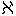から
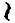までに数を附けて、時計の文字盤にしているのを見たことがあるかね。それが、猶太人の信条なんだよ。儀式的の法典を厳格に実行することと、失われた
王国の典儀を守ることだ。ああ、僕だってそうじゃないか。どうして今までに、土俗人種学がこの難解きわまる事件を解決しようなどと考えられたろうか。とにかく、支倉君の書いた疑問一覧表を基礎にして、あの薄気味悪い
赤い眼の
視差を計算してゆくことにしよう」と法水の眼の光が消えて、卓上のノートを開きそれを読みはじめた。
一、四人の異国楽人について
被害者ダンネベルグ夫人以下四人が、いかなる理由の下に幼少の折渡来したか、また、その不可解きわまる帰化入籍については、いささかの窺視も許されない。依然鉄扉のごとくに鎖されている。
二、黒死館既往の三事件
同じ室において三度にわたり、いずれも動機不明の自殺事件に対して、法水はまったく観察を放棄しているようである。ことに、昨年の算哲事件については、真斎を
恫する具には供しているけれども、はたして彼の見解のごとく、本事件とは全然別個のものであろうか。法水が黒死館の図書目録の中から、ウッズの「王家の遺伝」を抽き出したのは、その古譚めいた連続を、彼は遺伝学的に考察しようとするのではないか。
三、算哲と黒死館の建設技師クロード・ディグスビイの関係
算哲は薬物室の中に、ディグスビイより与えらるべくして果されなかった、ある薬物らしいものを待ち設けていた。その意志を、一本の小瓶に残している。また法水は、棺龕十字架の解読よりして、ディグスビイに呪詛の意志を証明している。以上の二点を綜合すると、黒死館の建設前すでに、両者の間には、ある異様な関係が生じていたのではないだろうか。
四、算哲とウイチグス呪法
ディグスビイの設計を、算哲は建設後五年目に改修している。その時、デイ博士の隠顕扉や黒鏡魔法の理論を応用した古代時計室の扉が生れたのではないかと思われる。しかしながら、算哲の異様な性格から推しても、とうていそれ等中世異端的弄技物が、上記の二つに尽きるとは信ぜられぬ。そして、歿後直前に呪法書を焚いたことが、今日の紛糾混乱に因を及ぼしているのではないかと、推測するがいかが？
五、事件発生前の雰囲気
四人の帰化入籍、遺言書の作成と続いて、算哲の自殺に逢着すると、突如腥い狹霧のような空気が漲りはじめた。そして、年が改まると同時に、その空気にいよいよ険悪の度が加わっていったと云われる。あながちその原因が、遺言書を繞る精神的葛藤のみであるとは思われぬではないか。
六、神意審問会の前後
ダンネベルグ夫人は、死体蝋燭が点ぜられると同時に、算哲と叫んで卒倒した。また、その折易介は、隣室の張出縁に異様な人影を目撃したと云う。けれども、列席者中には、誰一人として室を出たものはなかったのである。そして、その直下に当る地上には、人体形成の理法を無視した二条の靴跡が印され、その合流点に、これもいかなる用途に供されたものか皆目見当のつかない、写真乾板の破片が散在していた。以上四つの謎は時間的には近接していても、それぞれ隔絶した性質を持っていて、とうてい集束し得べくもない。
七、ダンネベルグ事件
屍光と降矢木の紋章を刻んだ創紋――。まさに超絶的眺望である。しかも法水は、創紋の作られた時間が僅々一、二分にすぎぬと云う。さらに彼の説として、その二つの現象を、〇・五の青酸加里（ほとんど毒殺を不可能に思わせる程度の薬量）を含んだ洋橙が、被害者の口中に入り込むまでの道程に当てている。すなわち、不可能を可能とさせる意味の補強作用であり、その結果の発顕にほかならぬと推断している。しかし、彼の観察誤りなしとしても、それを証明し犯人を指摘することは、要するに神業ではないか。しかも、家族の動静には、一見の特記すべきものもなく、洋橙の出現した経路も全然不明である。
テレーズの弾条人形――。断末魔にダンネベルグ夫人は、この邪霊視されている算哲夫人の名を紙片にとどめた。そして、現場の敷物の下には、人形の足型が、扉を開いた水を踏んでまざまざと印されている。しかし、その人形には特種の鳴音装置があって、附添いの一人久我鎮子は、その鈴のような音を耳にしなかったと陳述しているのだ。勿論法水は、人形の置かれてあった室の状況に一抹の疑念を残しているけれども、それは彼自身においても確実のものではなく、すなわち、否定と肯定との境は、その美しい顫音一筋に置かれてあると云っても過言ではない。
八、黙示図の考察
法水がそれを特異体質図と推定しているのは、明察である。何故なら、自体の上下両端を挾まれている易介の図が、彼の死体現象にも現われているではないか。しかし、伸子の卒倒している形が、セレナ夫人のそれを髣髴とさせるのは、何故であろうか。また法水が、象形文字から推定して、黙示図に知られない半葉があるとするのは、仮令論理的であるにしても、すこぶる実在性に乏しく、結局彼の狂気的産物と考えるほかにない。
九、ファウストの五芒星呪文（略）
十、川那部易介事件
法水の死因闡明は、同時に甲冑を着せしめたところに、犯人の所在を指摘している。それを時間的に追及すると、伸子にのみ不在証明がない。しかも伸子は、その咽喉を抉った鎧通しを握って失神し、なお、奇蹟としか考えられない倍音が、経文歌の最後の一節において発せられている。それ以外に疑問の焦点とでも云いたいのは、はたして犯人が、易介を共犯者として殺害したか否かであって、勿論容易な推断を許さぬことは云うまでもないのである。結局、その曲折紛糾奇異を超絶した状況から推しても、しだいに、伸子の失神を犯人の曲芸的演技とする点に綜合されてゆくけれども、しかし、公平な論断を下すなれば、依然として紙谷伸子は、ただ一人の、そして、最も疑われてよい人物であることは勿論である。
十一、押鐘津多子が古代時計室に幽閉されていた事
これこそ、まさしく驚愕中の驚愕である。しかも、法水が死体として推測したものが、解し難い防温を施されて昏睡していた。勿論、彼女が何故に、自宅を離れて実家に起居していたか――という、その点を追及する必要は云うまでもないが、しかし、犯人が津多子を殺害しなかった点に、法水は危惧の念を抱いて陥穽を予期している。けれども、易介が神意審問会の最中隣室の張出縁で目撃した人影と云うのは、絶対に津多子ではない。何故なら、当夜八時二十分に、真斎が古代時計室の文字盤を廻して、鉄扉を鎖したからである。
十二、当夜零時半クリヴォフ夫人の室に闖入したと云われる人物は？
ここに易介の目撃談――宵に張出縁へ出現して、あのいかにも妖怪めいた不可視的人物が、夜半クリヴォフ夫人の室にも姿を現わしたのだった。夫人の言によれば、それはまさしく男性であって、しかもあらゆる特徴が、身長こそ異にすれ旗太郎を指摘している。しかりとすれば、伸子が覚醒の瞬間に認めた自署に、降矢木という姓を冠せている。それを、グッテンベルガー事件に先例のある潜在意識と解釈すれば、伸子を倒したとする風精の正体には、最も旗太郎の姿が濃厚である。そして、その推定が、伸子の露出的な失神姿体と撞着するところに、この事件最大の難点が潜んでいるのではあるまいか。
十三、動機に関する考察
すべてが、遺産を繞る事情に尽きている。第一の要点は、四人の異国人の帰化入籍によって、旗太郎の白紙的相続が不可能になった事である。次に、旗太郎以外ただ一人の血縁が、すなわち押鐘津多子を除外している点に注目すべきであろう。したがって、旗太郎対三人の外人の間には、すでに回復し難い程度の疎隔を生じているけれども、何よりこの一つの大きな矛盾だけは、どうすることも出来ない。すなわち、動機を持つ者には、現象的に嫌疑とすべきものがなく、伸子のごとき犯人を髣髴とさせる者には、その反対に動機の寸影すら見出されないのである。
読み終ると、法水はそれを卓上に拡げて、まずその第七条（屍光と創紋の
件）の上に指頭を落した。その頃には、欄間の小窓から入って来る陽差が、「
倫敦大火之図」の――ちょうどテムズ河の真上
附近にまで上っていて、頭上の黒煙に物々しい生動を起しはじめた。それでなくても検事と熊城は、唇が割れ唾液が
涸いて、ただひたすらに、法水の持ち出した奇矯転倒の世界が、一つ大きな
蜻蛉がえりを打って、夢想の翼を落してしまう時機を夢見るのだった。そういう異様に殺気立った空気の中で、法水は新しい
莨に火を点じ、
徐ろに口を開いた。
「ところで、最初にあの不思議な屍光と創紋だが、問題は依然として、その循環論的な形式にあるのだ。あの
洋橙がどういう経路を経て、ダンネベルグ夫人の口の中に飛び込んでいったのか――その道程が
判然しない限りは、依然実証的な説明は不可能だと思うね。けれども、その屍光と創紋の発生に似た犯罪上の迷信が、有名な『
猶太人犯罪の解剖的証拠論（ゴルトフェルト著）』の中に記録されているのだ」とその一冊を書架から引き出したが、それには猶太的犯罪風習が、簡略な例註として記されているのみだった。
一八一九年十月の或る夜、ボヘミア領ケーニヒグレーツ在の富裕な農夫が、寝台の上で心臓を貫かれ、その後に室内から発火して、死体とともに焼き捨てられたという惨事が起った。そして、それには通行者の証言があって、ちょうどその夜の十一時半に、わずかに隙いた窓掛の間から、被害者が十字を切っているのを目撃したと陳述する者が現われてきた。そうなると、兇行時刻が十一時半以後となって、最も深い動機を持っていると目されていた、猶太人の一製粉業者に、計らずも不在証明が出来てしまった。したがって、事件はそれなり迷霧に鎖されてしまったのである。ところがその半年後になって、ようやくプラーグ市の補助憲兵デーニッケによって犯人の奸計が曝露され、やはり最初の嫌疑者である、猶太人の製粉業者が捕縛されるに至った。しかも、発覚の原因をなしたものは、ハムラビ経典の解釈から発している、猶太固有の犯罪風習にすぎなかった。すなわち、死体もしくは被害の個所を、周囲に蝋燭を立てて照明すると、それで犯罪が、永久発覚しないという迷信が端緒だったのである。勿論その蝋燭が、火災の原因だったことは云うまでもないであろう。

ああ開幕当初の場面に、法水はなんと生彩に乏しい例証を持ち出したことであろうか。けれども、続いて彼が、それに私見を加えて解答を整えると、偶然その独創の中から、さしも循環論の一隅に破られんばかりの光が差しはじめた。
「ところで、あの一文だけでは、
憲兵デーニッケの推理経路がいっこうに不明だけれども、僕はそれに解析を試みたのだ。死体を囲んだと云われる蝋燭の数は、その実五本だったのだよ。しかも、死体に十字を切らせるためには、それで死体を囲まずに、削ぎ竹のように片側の蝋を削いだ丈の短い四本を
周囲に並べて、その中央に、全長の半ばほどの蝋を取り除いて長い芯だけにした一本を置き、それを囲ませなければならなかった。何故なら、
風鶏計の四本の手の向きを互い違いにした場合に、どういう現象が起るか。つまりこの場合は、斜めに削いだ分の側を、互い違いの向きにして
列べたので、火が点ぜられると、熱せられた蝋の蒸気が傾斜を伝わって斜めに吹き上げる。したがって、それぞれに削いだ向きが異なっているので、その上方に
形の気流を起させるのだ。それが、中央の長い芯を廻転させて、その光の描く影で、死体の手に十字を切るような錯覚を現わしたのだよ。そうなって、屍光と創紋の生因を追求してゆくと、是が非にも、僕等は
神意審問会まで遡って行かねばならぬような気がしてくる。
ボヘミアのケーニヒグレーツで点された蝋燭の中に、
あるいは、
ダンネベルグ夫人のみに現われた、
算哲の幻影が秘められているのじゃあるまいかね。ねえ支倉君、偶然の中からは、往々に数学的なものが飛び出してくるものだよ。何故なら、元来
恒数と云うものは、常に最初の出発点形式は仮定であり、しかる後に、常住不変の
因数を決定するのだからね」と法水の顔に、いったんは混乱したような暗影が現われたけれども、彼はさらに語を次いで、屍光に関して、地理的にも奇妙な暗合のあるのを明らかにした。しかし、そういう隔絶した対照は、結果において紛乱を助長するものにすぎなかったのである。
「次に僕は、カトリック聖僧に関する屍光現象に注目したのだ。ところが、アヴリノの『聖僧奇蹟集』を読むと、新旧両教徒の葛藤が最もはなはだしかった一六二五年から三〇年までの五年ほどの間に、シェーンベルグ（
モラヴィア領）のドイヴァテル、ツイタウ（
プロシア）のグロゴウ、フライシュタット（
高部アウストリア）のアルノルディン、プラウエン（
サキソニー領）のムスコヴィテス――と都合四人が、死後に肉体から発光したという記録を残している。そこに熊城君、偶然にしてはとうてい解しきれない符合があるのだよ。何故なら、その四つの地点を連ねたものが、ほぼ正確な
矩形になって、それがケーニヒグレーツ事件を起した、ボヘミア領を取り囲んでいるからなんだ。ああ、その
実数はなんだろうか。僕は、
喋れば喋るほど判らなくなってくるのだが、しかし、死体を照らすという
猶太人の風習だけは、それを、犯人の迷信的表象とすることが出来るだろうと思うのだがね」と法水は天井を振り仰いで、いかにも弱々しい嘆息を発するのだった。しかし、それを聴いて、検事の希望がまったく絶たれてしまった。彼は口元が歪むほどの冷笑を湛えて、背後の書架から、ウォルター・ハート（
ウエストミンスター寺院の僧）の「グスタフス・アドルフス」を取り出した。そして、パラパラと
頁を繰っているうちに、何やら発見したと見えて、開いた
個所を法水に向け、その上辺に指頭を落した。実に、法水の狂的散策を諷刺した、検事の痛烈な皮肉だったのである。
（ワイマール侯ウイルヘルムの劣悪な兵質は、アルンハイムとの競争に敗れて、王の支援を遅延せり。しかも、ノイエンホーエンの城内にて、その事をいたく非難されしも、ウイルヘルム侯は顔色さえも変えず）
しかも、それのみでは飽き足らずに、検事は執拗な態度で毒
吐いた。
「ああ、悲しむべき
書目よ――じゃないか、まさに、君特有の書斎的錯乱なんだろうがね。無論あの驚嘆すべき現象に対しては、児戯にすぎんよ。どうして、深奥どころの話か、てんで遊戯的な散策とも云える価値はあるまい。ところで君が、もし
鐘鳴器室の場面に、精確なト書がつけられないようだったら、もうこれ以上
講演はやめにしてもらおう」
「ところがねえ支倉君」と法水は、相手の冷笑を静かに微笑み返して云った。「どうして、犯人が
猶太人でなければ、あの時伸子に
蝋質撓拗症を起させることが出来ただろうか。ある瞬間に伸子は、まるで彫像のように、硬直してしまったのだよ。したがって、あの廻転椅子の位置は、そうなれば無論問題ではないのだ」
（註）
（註）一種の硬直症。この発作は、突然意識を奪い患者の全身を硬直させ、それ自身の意志による随意運動をまったく不可能にする。しかし、他からの運動には全然無抵抗で、まるで、柔軟な蝋か護謨の人形のように、手足はその動かされた所の位置に、いつまでも停止している。それが、蝋質撓拗という興味ある病名を附された由縁である。
「
蝋質撓拗症」それにはさしもの検事も、激しく
卓子を
揺って叫ばざるを得なくなった。「
莫迦な、君の詭弁も、
度外れると滑稽になる。法水君、あれは稀病中の稀病なんだぜ」
「勿論、文献だけの稀病には違いないがね」といったんは肯定したが、法水の声には、嘲弄するような響が
罩もっていて、
「けれども、そういう
稀らしい神経の排列を、仮りにもし、人為的に作れるとしたら、どうなんだい。ところで君は、筋識喪失というデュシェンヌが創った術語を知っているだろうか。ヒステリー患者の発作中に瞼を閉じさせると、ちょうど
蝋質撓拗性そっくりで、全身に硬直状態が起るんだぜ。つまり、
猶太人特有の或る風習を除いたら、その病理的
曲芸を演じさせることが不可能だと云うのだ」と驚くべき断定を下した。
熊城はそれまで黙々と
莨を
喫らしていたが、不意に顔を上げて、
「ああ、伸子とヒステリーか……。なるほど、君の透視眼も相当なものさ。ただし問題を、癲狂院でなしに他の方へ転じてもらおう」と彼に似げない味のある言葉を吐いた。それに法水は、思いもつかなかった病理解剖を黒死館の建物に試みて、あくまでその可能性を強調するのだった。
「オヤオヤ熊城君、僕の方こそ、この事件が黒死館で起った出来事だという事に、注意してもらいたいんだよ。だいたい犯罪と云うものは、動機からのみ発するものではない。ことに、智的殺人犯罪は、歪んだ内観から動かされる場合が多いのだ。無論そうなると、一種
淫虐性の形式だが……往々感情以外にも、何かの感覚的錯覚から解放されず、しかも、絶えず抑圧を続けられる場合に発する
例しがあるのだ。ちょうど黒死館の
城砦めいた陰鬱な建物に、僕はそういう、非道徳的な――むしろ悪魔的な性能を、すこぶる豊富に認めることが出来るのだよ。ところで、その厳粛な顔をした
悪戯者が、だいたいどういう具合に人間神経の排列を変形させてゆくものだろうか、ここにちょうど恰好な例があるのだがね」と、その奇矯な推論から、独断に見える衣を脱がせようとして、彼はまず例証を挙げた。「これは今世紀の初め、ゲッチンゲンに起った出来事なんだが、オット・ブレーメルという、いかにもウエストファリア人らしい
鋭感的な少年が、同地にあるドミニク僧団の附属学園に入学したのだ。ところが、そのボネーベ式の
拱貫が低く垂れ、暗く圧し迫るような建物が、たちまち破瓜期の
脆弱な神経を
蝕んでいったのだ。最初は、建物の内外に光度の差がはなはだしいことが、彼に時として、偶然にしてはあまりに不思議な残像を見せる場合があった。そして、あげくに幻聴を聴くほどの症状になったと云うのは、彼の室の窓外が鉄道線路であって、そこを通過する列車の響が、絶えず
Resend Blehmel（
気狂いブレーメルの意）と繰り返すように聴かれたからだったのだ。しかし
父親が息子の病状に驚いて自宅へ引き取ったので、そこでブレーメルの精神状態が、からくも崩壊を免れたのだ。それがまた、奇蹟に等しいのだよ。寄宿舎を出てしまうと同時に、彼には幻視も幻聴も現われなくなり、間もなく
健やかな青春を取り戻すことが出来たのだからね。ねえ熊城君、君は刑法家じゃないのだから、あるいは知らないかもしれないが、刑務所の建築様式によっては、拘禁性精神病が続出するのも、また、それが皆無なのもあるそうだよ」
法水は、そこで新しい
莨を取り出して一息入れたが、依然知識の高塔を去らずに、続いて、よりも痛烈な引例に入った。
「時代は十六世紀の中葉フェリペ二世朝だが、この一つは、
淫虐的な嗜血癖の、むしろ異例的標本とでも云うものなんだ。
西班牙セヴィリアの宗教裁判所に、
糺問官補のフォスコロという若い
僧がいたのだ。ところが、彼の糺問法がすこぶる鈍いばかりでなく、
万聖節に行われる
異端焚殺行列にも恐怖を覚えるという始末なので、やむなく宗教裁判副長のエスピノザは、彼を生地サントニアの荘園に送り還してしまったのだ。ところが、それから一、二ヶ月後に、エスピノザはこういうフォスコロの
書翰を受取ったのだが、同封の紙片に描かれたマッツオラタ（
中世伊太利でカーニバル季における最も獣的な刑罰）の器械化を見て、思わず一驚を喫してしまった。
――セヴィリアの公刑所には、十字架と
拷問の刑具と相併立せり。されど、神もし地獄の陰火を
点し、永遠限りなくそれを輝かさんと欲せんには、まず公刑所の建物より、
回教式の丈高き
拱格を
逐うにあらん。
吾、サントニアに来りてより、昔ゴーティア
人の残せし暗き古荘に棲む。実に、その荘は特種の性質を有せり。すなわちそれ自身がすでに、人間諸種の苦悩を熟慮したる思想を現わすものにして、
吾そこにおいて種々の酷刑を結合しあるいは比較して、
終にその術において完全なる技師となれり――と。
ねえ熊城君、こういう凄惨な
独白は、そもそも何が語らせたのだろうか。どうしてフォスコロの嗜血癖が、残忍な拷問刑具の整列裡では起らずに、美しいビスカヨ湾の自然のなかで生れたのだろうか。そのセヴィリア宗教裁判所とサントニア荘との建築様式の差を、この事件でもけっして看過してはならんと、僕は断言したいのだよ」とそこで彼は激越な調子を収めた。そして、以上二つの例を黒死館の実際に符合させて、その様式の中に潜んでいる恐ろしい魔力を
闡明しようと試みた。
「現に僕は、事実一度しか行かない、しかもあの
暗澹たる天候の折でさえも、黒死館の建築様式に、様々常態ではない現象が現われるのに気がついているのだ。勿論、そういう感覚的錯覚には、とうてい捕捉し得ない不思議な力がある。つまり、それから絶えず解放されないことが、結局病理的個性を生むに至るのだよ。だから熊城君、いっそ僕は極言しよう。黒死館の人々は、恐らくその程度こそ違うだろうが、厳密な意味で心理的神経病者たらざるはない――と」
誰しも人間精神のどこかの隅々には、必ず軽重こそあれ、神経病的なものが潜んでいるに相違ない。それを
剔抉し犯罪現象の焦点面へ排列するところに、法水の捜査法は無比なものがあった。けれども、この場合、伸子のヒステリー性発作と
猶太型の犯罪とは、とうてい一致し得べからざるほどに隔絶したものではないか。
（しかるにワルドシュタインの左翼は、王の右翼よりも遙かに散開しいたれば、王ウイルヘルム侯に命じて戦列を整わしむ。その時、侯は再び過失を演じて、加農砲の使用を遅らしめたり）
検事は、相変らず法水を鈍重ウイルヘルム侯に擬して、黙々たる皮肉を続けていたが、熊城はたまらなくなったように口を開いた。
「とにかく、ロスチャイルドでもローゼンフェルトでもいいから、その
猶太人の顔というのを拝ませてもらおう。それに君は、伸子の発作を偶然の事故に帰してしまうつもりじゃないんだろうね」
「冗談じゃない。それなら伸子は、何故朝の
讃詠をあの時繰り返して弾いたのだろう」と法水は語気を強めて
反駁した。
「いいかね熊城君、あの女は、非常に体力を要する
鐘鳴器で、
経文歌を三回繰り返して弾いたのだ。そうなると、モッソウの『
疲労』を引き出さなくても、神経病発作や催眠誘示には、すこぶるつきの好条件になってしまう。そこに、あの女を
朦朧状態に誘い込んだものがあったのだよ」
「ではなんという
化物だい。だいたい鐘楼の
点鬼簿には、人間の亡者の名が、一人も記されていないのだからね」
「化物どころか、勿論人間でもない。それが、
鐘鳴器の鍵盤なんだよ」法水はチカッと装飾音を聴かせて、そこでも二人の意表外に出た。「ところで、これは一つの錯視現象なんだが、例えば一枚の紙に短冊形の
縦孔を開けて、その背後で円く切った紙を動かして見給え。その円が激しく動くにつれ、しだいと楕円に化してゆく、ちょうどそれと同じ現象が、上下二段の
鍵盤に現われたのだ。ところでここに、
頻繁に使う下段の
鍵があったとしよう。そうすると、その絶えず上下する
鍵を、上段の動かない鍵の間から
瞶めていると、その下段の
鍵の両端が、上段の鍵の蔭に没していく方の側に歪んでいって、それが、しだいに細くなっていくように見えるのだ。つまり、そういう遠感的な錯視が起ると、それまで疲労によってやや
朦朧としかけていた精神が、
一途に溶け込んでゆく。勿論、それによって固有の発作が起されるのだ。だから熊城君、僕に極言させてもらえるなら、あの時伸子に三回の繰り返しを命じた、その人物が明らかになれば、とりもなおさず犯人に指摘されるのだよ」
「だが、君の理論はけっして深奥じゃない」熊城はここぞと厳しく突っ込んだ。「だいたいその時伸子の瞼を下させたのは？ 全身を
蝋質撓拗性みたいな、蝋人形のようにしてしまった道程が説明されていない」
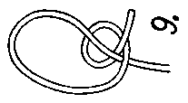
法水は大風な微笑を
泛べて、相手の独創力の欠乏を
憫んでいるかのごとく見えたが、すぐ卓上の紙片に、上図を描いて説明を始めた。
「これが、
猫の前肢と云う、
猶太人犯罪者特有の結び方なんだよ。そこで熊城君、この結び方一つに、廻転椅子に矛盾を現わした筋識喪失――あの
蝋質撓拗性［＃ルビの「フレキシビリタス・ツェレア」は底本では「フレキシリビタス・ツェレア」］に似た状態を作り出したものがあったのだ。見たとおり下方の紐を引っ張ると、結び目がしだいに下っていく。けれども、結び目に挾まっている物体が外れると、紐はピインと
解けて一本になってしまうのだ。だから犯人は、
予めその
鍵の使用数と最初結び付ける高さを測定しておいてから、その鍵と鐘を打つ打棒とを繋いでいる紐の上方に、鎧通しの束を結び付けておいたのだ。そうすると、演奏が進行するにつれて、鎧通しを廻転させながら、結び目がしだいに下の方へ降っていく。そして、伸子が朦朧状態で演奏している――ちょうど
讃詠の二回目あたりで、彼女の眼前を、まるで
水芸の
紙撚水みたいに、
刃の光が
閃き消えながら、横になり縦になりして、鎧通しが下降していったのだ。つまり、明滅する光で垂直に瞼を撫で下す。それを
眩惑操作と云って、催眠中の婦人に閉目させる、リエジョアの手法なんだよ。だから、瞼が閉じられると同時に、
蝋質撓拗性［＃ルビの「フレキシビリタス・ツェレア」は底本では「フレキシリビタス・ツェレア」］そっくりに筋識を喪った身体が、たちまち重心を失って、その場去らず
塑像のように背後に倒れたのだ。そして、その
機みに、
鍵と紐を裏側から蹴ったので、鎧通しが結び目から飛び出して床の上に落ちたのだよ。勿論伸子は、発作が鎮まると同時に、深い昏睡に落ちていったのだがね」と検事の毒々しい軽蔑を見返したが、法水は
突然悲痛な表情を
泛べて、
「だがしかしだ。伸子はどうして、あの鎧通しを握ったのだろうか。また、あの奇矯変態の極致ともいう倍音演奏が、何故に起されたものだろうか。ああいう想像の限外には、まだ指一本さえ触れることが出来ないのだ」といったんは弱々しげな嘆息を発したけれども、その
困憊げな表情が三たび変って、
終に彼は
颯爽たる凱歌を上げた。「いや、僕は
天狼星の
視差を計算しているのだっけ。また
δもあれば
ξもある！ それ等を、一点に帰納し綜合し去ることが出来ればいいのだ」
そこで、空気が異様に熱してきた。もはや解決に近いことは、永らく法水に接している二人にとると、それが感覚的にも触れてくるものらしい。熊城は不気味に眼を据え、顔を迫るように近づけて訊ねた。
「では、率直に黒死館の化物を指摘してもらおう。君が云う
猶太人というのは、いったい誰なんだね？」
「それが、軽騎兵ニコラス・ブラーエなんだ」と法水はまず意外な名を述べたが、「ところで、その男がグスタフス・アドルフスに近づいた端緒というのは、王がランデシュタット市に入城した時で、その際に
猶太窟門の
側で雷鳴に逢い、乗馬が狂奔したのを取り鎮めたからなんだ。そこで支倉君、何よりブラーエの勇猛果敢な戦績を見てもらいたいんだが」と検事が
弄んでいたハートの「グスタフス・アドルフス」を取り上げて、リュッツェン役の終末に近い
頁を指し示した。と同時に、二人の顔に
颯と驚愕の色が
閃いた。検事はウーンと
呻き声を発して、思わず
銜えていた
莨を取り落してしまった。
――戦闘は九時間に
亙って継続し、
瑞典軍の死傷は三千、
聯盟軍は七千を残して敗走せしも、夜の闇は追撃を阻み、その夜、傷兵どもは徹宵地に横たわりて眠る。払暁に降霜ありて、
遁れ得ざる者は、ことごとく寒気のために殺されたり。それより先日没後に、ブラーエはオーヘム大佐に従いて、戦闘最も激烈なりし四風車地点を巡察の途中、彼の
慓悍なる狙撃の的となりし者を指摘す。
曰く、ベルトルト・ヴァルスタイン伯、フルダ公兼大修院長パッヘンハイム……
そこまで来ると、熊城は顔でも
殴られたかのようにハッと身を引いた。そして、容易に声が出なかった。検事はしばらく凝然と動かなかったが、やがてほとんど聴取れないほど低い声で、次句を読みはじめた。
「デイトリヒシュタイン公
ダンネベルグ、アマルティ公領司令官
セレナ、ああ、フライベルヒの
法官レヴェズ……」とグッと唾を
嚥み込んで、濁った眼を法水に向けた。「とにかく法水君、君が持ち出した、この妖精園の光景を説明してくれ給え。どうも、
配役の意味がさっぱり嚥み込めんのだよ――何故リュッツェン役を
筋書にして、黒死館の虐殺史が起らねばならなかったのだろうか。それに、あるいは
杞憂にすぎんかもしれんがね。僕はここに名を載せられていない旗太郎と、クリヴォフとそのどっちかのうちに、犯人の
署名があるのではないかと思うのだよ」
「うん、それがすこぶる悪魔的な冗談なんだ。考えれば考えるほど、
慄然となってくる。第一、この大芝居を仕組んだ作者というのは、けっして犯人自身ではないのだ。つまりその
筋書が、あの五芒星呪文の本体なんだよ。リュッツェンの役では、軽騎兵ブラーエとその母体である暗殺者の魔法錬金士オッチリーユとの関係だったものが、この事件に来ると、
犯人＋Ｘの公式に変ってしまうのだ」と法水は、この妖術めいた符合の解釈を、ぜひなく事件の解決後に移したけれども、続いて凄気を双眼に
泛べて、黒死館の悪魔を指摘した。
「ところで、そのブラーエが、オッチリーユ
［＃「オッチリーユ」は底本では「オッチリーエ」］からの刺者であることが判ると、そこで、彼の本体を
闡明する必要があると思う。それが、
二重の裏切なんだ。
旧教徒と対抗して比較的
猶太人に穏かだったグスタフス王を暗殺したのは、
新教徒から受けた恩恵と、彼の種族に対するとの両様の意味で、
二重の裏切じゃないか。つまり、ハートの史本にはないけれども、プロシア王フレデリック二世の伝記者ダヴァは、軽騎兵ブラーエを、プロック生れの
波蘭猶太人だと
曝いている。そして、その本名が、ルリエ・クロフマク・
クリヴォフなんだ！」
その瞬間、あらゆるものが静止したように思われた。ついに、仮面が剥がれて、この狂気芝居は終ったのだ。常に審美性を忘れない法水の捜査法が、ここにもまた、火術初期の宗教戦争で飾り立てた、華麗きわまりない
終局を作り上げたのだった。しかし、検事は未だに半信半疑の面持で、
莨を口から放したまま
茫然と法水の顔を
瞶めている。それに法水は、皮肉に微笑みながらも、ハートの史本を繰りその
頁を検事に突き付けた。
（グスタフス王の歿後、ワイマール侯ウイルヘルムの
先鋒銃兵ホイエルスヴェルダに現われるに及び、初めて彼が、シレジアに野心ある事明らかとなれり）
「ねえ支倉君、ワイマール侯ウイルヘルムは、その実皮肉な嘲笑的な怪物だったのだよ。しかし、さしもクリヴォフが築き上げた
墻壁すらも、僕の
破城槌にとれば、けっして難攻不落のものではないのだ」と背後にある大火図の黒煙を、
赫っと焔のように染めている、陽の反映を頭上に浴びながら、法水は犯人クリヴォフを
俎上に
上せて、寸断的な解釈を試みた。
「最初に僕は、クリヴォフを土俗人種学的に観察してみたのだ。勿論イスラエル・コーヘンやチェンバレンの著述を持ち出さなくても、あの赤毛や
雀斑、それに鼻梁の形状などが、それぞれアモレアン
猶太人（
最も欧羅巴（ヨーロッパ）人に近い猶太人の標型）の特徴を明白に指摘しているものだと云える。しかしそれを、より以上確実にしているのが、猶太人特有ともいう
猶太王国恢復の信条なんだ。
猶太人がよく、その形をカフス
釦や
襟布止めに用いているけれども、そのダビデの楯（）の六
稜形が、クリヴォフの胸飾では、テュードル
薔薇に六弁の形となって現われているのだ」
「だが、君の論旨はすこぶる曖昧だな」と検事は不承げな顔で異議を唱えた。「なるほど、珍しい昆虫の標本を見ているような気はするが、しかし、クリヴォフ個人の実体的要素には少しも触れていない。僕は君の口から、あの女の心動を聴き呼吸の香りを嗅ぎたいのだよ」
「それが、
樺の森（
グスタフ・ファルケの詩）さ」と法水は無雑作に云い放って、いつか三人の異国人の前で吐いた奇言を、ここでもまた
軽業的に
弄ぼうとする。「ところで、最初にあの黙示図を憶い出してもらいたいのだ。知ってのとおりクリヴォフ夫人は、
布片で両眼を覆われている。そこで、あの図を僕の主張どおりに、特異体質の図解だと解釈すれば、結局あれに描かれている屍様が、クリヴォフ夫人の最も陥りやすいものであるに相違ないのだ。ところが支倉君、眼を覆われて
斃される――それが
脊髄癆なんだよ。しかも、第一期の比較的目立たない徴候が、十数年にわたって継続する場合がある。けれども、そういう中でも、一番顕著なものと云うのは、ほかでもないロムベルグ徴候じゃないか。両眼を覆われるか、不意に
四辺が闇になるかすると、全身に重点が失われて、
蹌踉とよろめくのだ。それがあの夜、夜半の廊下に起ったのだよ。つまりクリヴォフ夫人は、ダンネベルグ夫人がいる
室へ赴くために、
区劃扉を開いて、あの前の廊下の中に入ったのだ。知ってのとおり両側の壁には、長方形をした
龕形に
刳り込まれた壁灯が点されている。そこで、自分の姿を認められないために、まず区劃扉の
側にある
開閉器を
捻る。勿論、その闇になった瞬間に、それまで不慮にも注意を欠いていた、ロムベルグ徴候が起ることは云うまでもない。ところが、そうして何度か
蹌めくにつれて、長方形をした壁灯の残像が幾つとなく網膜の上に重なってゆくのだ。ねえ支倉君、ここまで云えば、これ以上を重ねる必要はあるまい。クリヴォフ夫人がようやく身体の位置を立て直したときに、彼女の眼前一帯に拡がっている闇の中で、何が見えたのだろうか。その無数に林立している壁灯の残像と云うのが、ほかでもない、ファルケの歌ったあの薄気味悪い樺の森なんだよ。しかも、クリヴォフ夫人は、それを自ら告白しているのだ」
「冗談じゃない。あの女の腹話術を、君が観破したとは思わなかったよ」と熊城は力なく
莨を捨てて、心中の幻滅を露わに見せた。それに、法水は静かに微笑んで云った。
「ところが熊城君、あるいはあの時、僕には何も聴えなかったかもしれない。ただ一心に、クリヴォフ夫人の両手を
瞶めていただけだったからね」
「なに、あの女の手を」今度は検事が驚いてしまった。「だが、仏像に関する三十二相や密教の
儀軌についての話なら、いつか
寂光庵（
作者の前作、「夢殿殺人事件」）で聴かせられたと思ったがね」
「いや、同じ彫刻の手でも、僕はロダンの『
寺院』のことを云っているのだよ」と相変らず法水はさも芝居気たっぷりな態度で、奇矯に絶した
言を
曲毬のように抛り上げる。「あの時、僕が樺の森を云いだすと、クリヴォフ夫人は、両手を
柔わり合掌したように合せて、それを卓上に置いたのだ。勿論密教で云う
印呪の浄三葉印ほどでなくとも、少なくもロダンの
寺院には近いのだ。ことに、
右掌の無名指を折り曲げていた、非常に不安定な形だったので、絶えずクリヴォフ夫人の心理からなんらかの表出を見出そうとしていた僕は、それを見て思わず凱歌を挙げたものだ。何故なら、セレナ夫人が『樺の森』と云っても微動さえしなかったその手が、続いて僕がその次句で、されど彼夢みぬ――と云って、
その男という意味を洩らすと、不思議な事には、その不安定な無名指に異様な
顫動が起って、クリヴォフ夫人は俄然
燥ぎだしたような態度に変ったからだ。恐らく、そこに現われている幾らかの矛盾撞着は、とうてい法則では律することの出来ぬほど、転倒したものだったに相違ない。だいたい、緊張から解放された後でなくては、どうして、当時の
昂奮が心の外へ現われなかったのだろうか」とそこでちょっと言葉を切って窓の掛金をはずし、一杯に
罩もった
烟が、揺ぎ流れ出てゆくと後を続けた。「ところが、常人と異常神経の所有者とでは、末梢神経に現われる心理表出が、全然転倒している場合がある。例えば、ヒステリーの発作中そのまま放任しておく場合には、患者の手足は、勝手
気儘な方向に動いているけれども、いったんそのどこかに注意を向けさせると、その部分の運動がピタリと停止してしまうのだ。つまり、クリヴォフ夫人に現われたものは、その反対の場合であって、たぶんあの女は、心の
戦きを挙動に現わすまいと努めていたことだろう。ところが、僕が
彼夢みぬ――と云った一言から、偶然その緊張が解けたので、そこで抑圧されていたものが一時に放出され、注意を自分の
掌に向けるだけの余裕が出来たのだ。そうなって始めて、右掌の無名指が不安定を訴えだしたことは云うまでもない。そうして、あの解しきれない
顫動が起されたという訳なんだよ。ねえ支倉君、闇でなくては見えぬ樺の森を、あの女は指一本で、問わず語らずのうちに告白してしまったのだ。その、（樺の森――彼夢みぬ）とかけて下降していく曲線の中に、なんと遺憾なく、クリヴォフ夫人の心像が描き尽されていることだろう。支倉君、いつぞや君は、詩文の問答をツルヴェール趣味の
唱合戦と云ったことがあったっけね。ところが、どうしてそれどころか、あれは心理学者ミュンスターベルヒに、いやハーバードの実験心理学教室に対する
駁論なんだよ。ああいう
大袈裟な電気計器や記録計などを持ち出したところで、恐らく冷血性の犯罪者には、
些細の効果もあるまい。まして、生理学者ウエバーのように自企的に心動を止め、フォンタナのように虹彩を自由自在に収縮できるような人物に
打衝った日には、あの器械的心理試験が、いったいどうなってしまうんだろう。しかし僕は、指一本動かさせただけで、また詩文の字句一つで発掘を行い、それから、詩句で
虚妄を作らせまでして、犯人の心像を
曝き出したのだ」
「なに、詩文で
虚妄を
」と熊城がグイと唾を
嚥んで聴き
咎めると、法水は微かに肩を
聳やかせて、
莨の灰を落した。彼の
闡明は、もうこの惨劇が終ったのではないかと思われたほどに、十分なものだった。法水はまずその前提として、
猶太人特有のものに、自己防衛的な虚言癖のあるのを指摘した。最初に、ミッシネー・トラー経典（
十四巻の猶太教基本教典）中にある、イスラエル王サウルの娘ミカル
（註）の故事――から始めて、しだいに現代に下り、
猶太人街内に組織されている
長老組織（
同種族犯罪者庇護のために、証拠堙滅相互扶助的虚言をもってする長老組織）にまで及んだ。そして、終りに法水は、それを民族的性癖であると断定したのであった。ところが、続いてその虚言癖に、
風精との密接な交渉が曝露されたのである。
（註）イスラエル王サウルの娘ミカルは、父が夫ダビデを殺そうとしているのを知り、計を用いて遁れせしめ、その事露顕するや、ミカルは偽り答えて云う。「ダビデが、もし吾を遁さざれば汝を殺さんと云いしによって、吾、恐れて彼を遁したるなり」――と。サウル娘の罪を許せり。
「そういう訳で、
猶太人は、それに一種宗教的な許容を認めている。つまり、自己を防衛するに必要な虚言だけは、許されねばならない――とね。しかし、無論僕は、それだけでクリヴォフを律しようとするのじゃない。僕はあくまで、統計上の数字というものを軽蔑する。だがしかしだ。あの女は、一場の架空談を造り上げて、実際見もしなかった人物が、寝室に侵入したと云った。いかにも、それだけは事実なんだよ」
「ああ、あれが
虚妄だとは」検事は眉を跳ね上げて叫んだ。
「すると君は、その事をどこの宗教会議で知ったのだね」
「どうして、そんな散文的なもんか」と法水は力を
罩めて云い返した。「ところで、法心理学者のシュテルンに、『
供述の心理学』という著述がある。ところが、その中であのブレスラウ大学の先生が、予審判事にこういう警語を発しているのだ。――訊問中の用語に注意せよ。何故なら、優秀な智能的犯罪者と云えるほどの者は、即座に相手が述べる言葉のうちの、個々の単語を綜合して、一場の虚妄談を作り上げる
術に巧みなればなり――と。だから、あの時僕は、その分子的な聯想と結合力とを、反対に利用しようとしたのだよ。そして、試みにレヴェズに向って、
風精に関する問いを発したのだ。では何故かと云うに、僕がそれ以前に図書室を調査した時、ポープ、ファルケ、レナウなどの詩集が、最近に
繙かれていたのを知ったからだよ。つまり、ポープの『
髪盗み』の中には、
風精について、いかにも
虚妄を構成するに
適わしい記述があるからなんだ。勿論、僕が求めているのは、犯人の
天稟学だったのさ。あの中にある
風精の印象を一つに集めて、それに観照の姿を浮ばしめる――その狂言の世界だ。けっして、あの
狂詩人が、単に一個の想い出の画を描くだけで、満足するものではないと思ったからだ。そこで、僕は
固唾を
嚥んだ。そして、あの陰険酷烈をきわめたクリヴォフの陳述の中から、とうとう犯人の姿を掴まえることが出来たのだよ」と法水の顔には、さも当時の昂奮を回想するような疲労の色が浮んだ。けれども、彼は
言を次いで、いよいよクリヴォフ夫人を犯人に指摘しようとする、「
髪盗み」の一文に解析の
刀を下した。
「ところが、その解答はすこぶる簡単なんだよ。『
髪盗み』の第二節には、
風精の部下である四人の
小妖精が現われる。その第一が
Crispissa で、髪を
櫛けずる妖精だ。それが、クリヴォフ夫人の
洗髪を怪しい男が縛りつけた――という
個所に当る。その次は、
Zephyretta、すなわち
そよ吹く風で、その男が
扉の方へ遠ざかって行く――ところの記述の中に出てくる。それから三番目は、
Momentilla すなわち
刻々に動くもので、眼を覚まして夫人が見ようとしたという枕元の時計に相当するのだ。そして、最後が、
Brilliante すなわち
輝くものだが、それをクリヴォフ夫人は、怪しい男の形容に用いて、眼が真珠のように輝いていた――と云っている。けれども、それにはもう一側面の見方もあって、その
真珠という言葉が、古語で
白内障を表わしていることが判ると、右眼の
白内障が因で舞台を退いた押鐘津多子が、それに
髣髴となってくるのだ。しかし、いずれにしても、そういうクリヴォフ夫人の心像を、さらに結論として確実にするものがあった。つまり、ある一点に向って、以上四つの既知数が綜合されていったのだが……それは、ほかでもない夫人固有の病理現象――すなわち脊髄癆なんだよ。あの時クリヴォフ夫人は、眼を醒ました時に、胸のあたりで
寝衣の両端が止められていたように感じた――と云った。けれども、あの病特有の輪状感覚（
胸部に輪形のものが繞っているように覚えるという一徴候）を考えると、そういう装飾めいた陳述をした原因が、あるいは、日常経験している感覚から発しているのではないかと疑われてくるだろう。それを僕は、あの虚言を築き上げた根本の
恒数だと信じているのだ」
熊城は
凝然と考えに沈みながらしばらく
莨を
喫かしていたが、やがて法水に向けた眼には、濃い非難の色が浮んでいた。しかし、彼は
稀らしく静かに云った。
「なるほど、君の云う理論はよく判った。けれども、なにより僕等が欲しいのは、たった一つでも、完全な刑法的意義なんだよ。つまり、
天狼星の
最大視差よりも、それを構成している物質の内容なんだ。云い換えれば、それぞれの犯罪現象に、君の
闡明を要求したいのだよ」
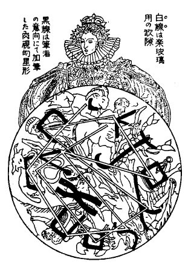
「それでは」法水は満足そうに
頷いて、事務机の
抽斗から一葉の写真を取り出した。「いよいよ最後の切札を出すことにするかな。ところでこの写真は、
鐘鳴器室の頭上に開いている十二宮の
円華窓なんだが、僕は
一瞥すると同時に、気がついた。これもまた、
棺龕十字架と同様、設計者クロード・ディグスビイが残した
秘密記法だ――と。何故なら、通例では、春分点のある
白羊宮が円の中心になっているのだけれども、これには
磨羯宮が代っている。また、縦横に
馳せ違っているジグザグの空隙にも、
鐘鳴器の残響を緩和するという性能以外に、なんらかの意味がなくてはならぬと考えたからだ。ところが熊城君、元来
十二宮なんてものは、古来からありふれている迷信上の産物にすぎない。第一、文字暗号ではないのだから、
肝腎の
秘密ＡＢＣを発見するのに必要な資料が、これにはてんで与えられていないのだ。しかし、僕はランジイ（
マクベス、ジイヴィルジュ等と並ぶ斯道の大家。一九一八年、“Cryptographie”を発表す）じゃないがね。仮定す――という慣用語は、まさに解読家にとって金科玉条に等しいと思うのだよ。何故なら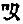（
処女宮）とか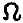（
獅子宮）とか云うように、
十二宮固有の符号はあるけれども、僕は
猶太釈義法をそれに当てて見たのだ。つまり一八八一年の
猶太人虐殺の際に、
波蘭グロジスクの町の
猶太人が
十二宮に光を当てて、隣村に危急をしらせたという史実があるほどだし……、それに、ブクストルフ（
ヨハンまたはヨハネス、一五六四―一六二九。瑞西バーゼルの人。その子とともに大ヘブライ学者）の「
希伯来略語考」を見ると、それには、
Athbash 法・
Albam 法・
Atbakh 法（
Athbash 法―ヘブライＡＢＣの第一字アレフの代りに、その最後の字タウを当て、また第二位のベートの代りに、最終から二番目のシンを当て、以下それに準ずる記法。Albam 法―ヘブライＡＢＣを二つに区分し、アレフの代りに後半の第一字ラメドを当てる方法。Atbakh 法―各文字を、その数位の順に従って置き換える方法）をはじめ、天文算数に関する
数理義法が記されている。そして、古代
希伯来の天文家が、
獅子宮の大鎌形とか
処女宮のＹ字形などに、
希伯来文字の或るものを当てていたという記録が残っているからだ。もちろんその中には、現在の
ＡＢＣに語源をなすものがある。けれども、
十二宮全部となると、そういう形体的な符号の記されてないものが四つあって、そこで僕は、思いがけない障壁に
打衝ってしまったのだよ。しかし、猶太式秘記法を歴史的にたどってゆくと、十六世紀になって、
猶太労働組合とフリーメーソン結社（
フリーメーソン結社――。衆知の名称なれども、この結社の本体は秘密会議にあり、それが明白なるが猶太的団体であることは、メーソン教会の床に「ダビデの楯」の図を塗り潰したものを描き、また、それが定規とコムパスのメーソン記象にも母体となり、さらに、死亡広告欄を飾る八星形が、猶太教会の彩色硝子窓に用いられているのを見ても明らかなり）暗号法の中に、その欠けた部分を補うものが発見されたのだ。ねえ熊城君、驚くべきことには、この
十二宮の中に、
猶太秘密記法史の全部が叩き込まれている。そうなると、あの不可解な人物クロード・ディグスビイをウエールス生れの
猶太だとするに異議はあるまい。言葉を換えて云うと、この事件には隠顕両様の世界にわたり、二人の
猶太人が現われていることになるのだよ」とそれから法水は、一々星座の形に
希伯来文字を当てながら、
十二宮の解読を始めた。
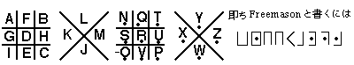
すなわち、
人馬宮の弓には
、
天蝎宮には
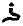、
処女宮のＹ字形には
、
獅子宮の大鎌形には
、
双子宮の
双児の肩組みには
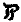、勿論
金牛宮は、主星アルデバランの
希伯来称「
神の眼」どおりに、第一位の
となる。それから
双魚宮は、カルデア象形文字に魚形の語源があって
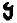。そして、最後の
宝瓶宮の
水瓶形が
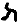となって、それで、形体的解読の全部が終るのである。さてそうしてから、その八つの
希伯来文字を、それぞれに語源をなしている現在の
ＡＢＣに変えてゆくと（
以下既記の順序どおり）、結局（S. L. Aa. I. H. A. N. T.）となるけれども、まだ、
十二宮には、
磨羯宮・
天秤宮・
巨蟹宮・
白羊宮と、以上の四座が残されている。それに法水は、上図どおりのフリーメーソン
ＡＢＣを当てたのだ。
それによると、
磨羯宮のＬ形がＢ、
天秤宮の形がＤ、
巨蟹宮の形がＲ、そして、
白羊宮のがＥとなる。それを、さらに法水は、フリーメーソン暗号のもう一つの法である
交錯線式（
ジグザグ記法―。この方法は、アテネの戦術家エーネアスが、自著 Poliorcetes 中の第三十一章に記載せしに始まる。方眼紙にＡＢＣを任意に排列し、それを先方に通じて置いて、通信は、それを連らねるジグザグの線のみを以てす）を用いて、
磨羯宮のＢから始まっている線状の空隙を辿っていった。そうして、ついに混乱を整理して、秘密ＡＢＣの排列を整えることが出来た。そこに、検事と熊城は、不意に迷路の彼方で闇黒界の中に差し込んできた一条の光明を認めたのであった。その神々しい光は、この事件に犯罪現実として現われた、十指にあまる非合理性を、必ずや転覆するものに相違ないのである。法水の驚嘆すべき解析によって、黒死館殺人事件は、ついに絶望視されていた終幕に入ったのではあるまいか。何故なら、その解答が Behind
stairs すなわち
大階段の裏だったからだ。解読を終ると法水は静かに云った。
「そこで、大階段の裏――という意味を詮索してみたが、それには、ほとんど疑惑を差し挾む余地はない。あそこには、テレーズ人形を入れてある室と、それに隣り合っている小部屋しかないからだ。それに、恐らくその解答も、大時代な
秘密築城風景にすぎまいと思うね――
隠扉、坑道。ハハハハハ、だいたいどういう意志で、ディグスビイが
十二宮に秘密記法を残したろうと、そんなことはこの際問題ではない。サア、さっそくこれから黒死館に行って、クリヴォフの
肉附けをやろうじゃないか」と法水が
喫いさしを灰皿の上で揉み潰すと、検事は
少女のように顔を紅くして、法水に云った。
「ああ、今日の君はロバチェフスキイ（
非ユークリッド幾何の創始者）だよ。いかにも、
天狼星の
最大視差が計算されたのだから！」
「いや、その功労なら、シュニッツラーに帰してもらおう」法水はすこぶる芝居がかった身振をして、「
不在証明、採証、検出――もうそんなものは、
維納第四学派以後の捜査法では意味はない。
心理分析だ。犯人の神経病的天性を探ることと、その狂言の世界を一つの心像鏡として観察する――その二点に尽きる。ねえ支倉君、
心像は広い一つの国じゃないか。それは
混沌でもあり、
またほんの作りものでもあるのだ」とシュニッツラーを即興的に焼直したのを
口吟んでから、彼は一つ大きな伸びをして立ち上った。
「サア熊城君、終幕の
緞帳を上げてくれ給え。恐らく今度の幕が、僕の戴冠式になるだろうからね」
ところがその時、喝采が意外な場所から起った。突然電話の
鈴が鳴って、その一瞬を境に、事態が急転してしまった。クリヴォフ夫人に帰納されていった法水の超人的な解析も、この底知れない恐怖悲劇にとっては、たかが一場の
間狂言にすぎなかったのである。法水は、静かに受話器を置いた。そして、血の気の失せきった顔を二人に向けて、なんとも云えぬ悲痛な
［＃「悲痛な」は底本では「非痛な」］語気を吐いた。
「ああ、僕はシュライエルマッヘルじゃないがね。熱を傾けて苦を求めたよ、また、血みどろの身振り狂言なんだ。それも、人もあろうに、
クリヴォフが狙撃されたんだよ」と陽差が
翳って薄暗くなった大火之図の上に、法水はいつまでも
空洞な視線を注いでいた。あたかもその様子は、彼が築き上げた壮大な知識の塔が、脆くも崩壊しつつある惨状を眺めているかのようであった。法水の歴史的退軍――これこそ、捜査史上空前ともいう
大壮観ではないか。
法水がクリヴォフ夫人に
猶太人虐殺を試みて、しきりと
十二宮秘密記法の解読をしている頃だった。一方私服の楯で囲まれている黒死館では、その隙をどう潜ったものか、世にもまたとない幻術的な惨劇が起ったのである。それが二時四十分の出来事で、当の被害者クリヴォフ夫人は、ちょうど前庭に面した本館の中央――すなわち尖塔のまっすぐ下に当る二階の武具室の中で、折からの午後の陽差を満身に浴びながら、窓際の石卓に
倚り読書していた。すると、突然背後から何者かの手で、装飾品の一つであったフィンランダー式
火術弩が発射されたのだが、運よくその
箭は、彼女の頭部をわずかに
掠めて毛髪を縫った。そして、その強猛な直進力は、瞬間彼女を宙に吊り、そのまま直前の
鎧扉に命中したので、その
機みを喰って、クリヴォフ夫人は
鞠のように窓外に投げ出されたのだった。しかし、その
刺叉形をした
鬼箭が、
確かと棧の間に喰い入っていたので、また後尾の
矢筈に絡みついている彼女の頭髪も、これまた執拗に離れなかったので、夫人の
身体はその一本の矢に釣られて宙吊りとなり、しかも、虚空の中でキリキリ
独楽のように廻転を始めたのであった。まさに、ダンネベルグ夫人――易介と続いた、血みどろの童話風景である。あの底知れぬ妖術のような魔力を駆使して、犯人はこの日にもまた、クリヴォフ夫人を
操人形のように
弄んだ。そして、相変らず五彩
絢爛とした、超理法超官能の神話劇を打ったのであった。恐らくその光景は、クリヴォフ夫人の赤毛が陽に
煽られて、それがクルクル廻転するところは、さながら
焔の
独楽のようにも思えたであろうし、また、
怒ったゴルゴン（
メドウーサら三姉妹）の頭髪を
髣髴とさせるほどに、凄惨酷烈をきわめたものに違いなかった。そして、その時クリヴォフ夫人が、もし無我夢中の裡に
窓框に片手を掛けなかったなら、あるいは、そのうちに矢筈が
萎び
鏃が抜けるかして、結局直下三丈の地上で粉砕されたかもしれなかったのである。しかし、悲鳴を聴きつけられて、クリヴォフ夫人はただちに引き上げられたけれども、頭髪はほとんど無残にも引き抜かれていて、おまけに毛根からの出血で、昏倒している彼女の顔は、一面に
赭丹を流したよう素地を見ることが出来なかったそうであった。
その惨事が発生してから、わずか三十五分の後に、法水一行は黒死館に到着していた。館に入ると、彼はすぐにクリヴォフ夫人の病床を見舞った。すると、折よく医師の手で意識が恢復されていて、上述の事情を、
杜絶れながらも聴くことが出来た。しかし、それ以上の真相は、混沌の彼方で犯人が握っていた。その当時彼女は、窓を正面に椅子の背を
扉の方へ向けていたので、自然背後にいた人物の姿は見ることが出来なかったと云う始末だし、また、その
室に入る左右の廊下には、それぞれ一人
宛の私服が曲り角の所で頑張っていたのだったけれども、誰しもそこを出入した人物はなかったと云うのだった。言葉を換えて云うと、その室はほとんど密閉された
函室に等しく、したがって、私服の眼から外れて、いやしくも形体を具えた生物なら、出入は絶対不可能であるに相違なかったのである。法水は聴取を終ると、クリヴォフ夫人の病室を出て、さっそく問題の武具室を点検した。
その室は前面から見ると、正確に本館の
真中央に当り、二条の
張出間に挾まれていて、二つある硝子窓はそれだけが他とは異なり、十八世紀末期の二段上下式になっている。また、室内も北方ゴート風の玄武岩で畳み上げた
積石造で、周囲は一抱えもある角石で築き上げられ、それが、暗く粗暴な
蒙昧な、いかにも重々しげなテオドリック朝あたりを髣髴とさせるものであった。そして、室内には陳列品のほかに、巨大な石卓と、天蓋のない
背長椅子が一つあるのみにすぎなかった。しかも、その
暗澹とした雰囲気を、さらにいちだん物々しくしているのが、周囲の壁面を飾っている各時代の古代武具だったのである。それには、さして上古のものはなかったけれども、小型のモルガルテン戦争当時の
放射式投石機、
屯田兵常備の乗入
梯子、支那元代投火機のようなやや型の大きい戦機に類するものから、手砲用
鞍形楯ほか十二、三の楯類、テオドシウス鉄鞭、アラゴン時代の
戦槌、ゲルマン
連枷、ノルマン型
大身鎗から
十六世紀鎗にいたる、十数種の長短直叉を混じた
鎗戟類。また、歩兵用
戦斧をはじめに、
洋剣の類も各年代にわたっていて、ことに、ブルガンディ鎌刀やザバーゲン剣が珍奇なものだった。そして、その所々に、ヌーシャテル甲冑やマキシミリアン型、それにファルネスやバイヤール型などの中世甲冑が陳列されていて、銃器と云えば、わずかに初期の
手砲を二つ三つ見るにすぎなかった。しかし、それ等陳列品を巡視しているうちに、恐らく法水は、彼が珍蔵しているグロースの「古代軍器書」を、この際持参しなかったことが悔まれたに違いない。何故なら、彼は時折嘆息し、あるいは細めた眼を、細刻や紋章に近づけたりなどして、たしかにこの戦具変遷の魅力は、彼の職務を忘れさせたほどに、恍惚とさせたに相違なかったのである。
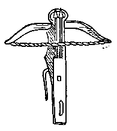
しかし、室内を一巡して、ようやく水牛の角と
海豹の附いた
北方海賊風の兜の前まで来ると、彼は
側の壁面にある、不釣合な空間に注いだ眼を返して、すぐその前の床から、一張の
火術弩を拾い上げた。それは、全長三尺もあるフィンランダー式（
上図参照）のもので、火薬を絡めた
鬼箭を発射して、敵塞に射込み、殺傷焼壊を兼ねるという酷烈な武器だった。ところで、その構造を概述すると、弓形に附けられた
撚紐の
弦を中央の
把手まで引き、発射する時は、その
把手を横倒しにするという装置で、火砲初期頃の巻上式に比べると、きわめて幼稚な十三世紀あたりのものに相違なかった。すなわち、この一つの火術弩から発射された鬼箭が、クリヴォフ夫人に生死の大
曲芸を演ぜしめたのであった。が、それが掲げられていた壁面の位置は、ちょうど法水の乳下辺に当っていた。またそれと同時に、熊城が石卓の上にあった鬼箭を持って来たけれども、その矢柄は二センチに余り、
鏃は青銅製の四叉になっていて、
鴻の羽毛で作った
矢筈と云い、見るからに強靱兇暴をきわめ、クリヴォフ夫人を懸垂しながら突進するだけの強力は、それに十分窺われるのだった。のみならず、
弩にも
箭にも、指紋はおろか指頭を触れた形跡さえなかったのであるが、その上、疑問はまず熊城の口から発せられて、自然発射説は最初から片影もなかったのである。何故なら、事件発生の直前には、その火術弩は箭を
番えたまま、窓の方へ鏃を向けて掲っていたのだし、その操作は、女性でも
強ち出来得ないこともないからであった。熊城はまず、当時半ば開いていた右側の
鎧扉から、その壁面にかけて指で直線を引いた。
「法水君、高さはちょうど頃合だがね。しかし、鎧扉までの角度が、てんで二十五度以上も喰い違っている。もし、何かの原因で自然発射がされたとすれば、壁面と平行に、隅の騎馬装甲へ
打衝らなきゃならんよ。きっと犯人は、
踞んでこの弩を引いたに違いないんだ」
「だが、犯人は標的を射損じたのだ。それが僕には、何より不思議に思われるんだがね」と、爪を噛みながら法水は浮かぬ顔で
呟いた。「第一、距離が近い。それに、この弩には標尺がある。その時クリヴォフは、背後を向けて椅子から首だけを出していたのだ。その後頭部を狙うのは、恐らくテルが、虫針で林檎を刺すより
容易いだろうと思うが」
「では法水君、君はいったい何を考えているんだね」とそれまで何ものか期待していた検事は、周囲の積石を調べ歩いて、
漆喰にそれらしい破れ目でも見出そうとしていた。が、空しく戻って来ると、法水に鋭く訊ねた。すると、法水は
突然窓際へ歩み寄って行き、そこから窓越しに、前方の噴泉を指差して云った。
「ところで、問題と云うのが、あの
驚駭噴泉なんだよ。あれは、バロック時代に盛った悪趣味の産物なんだが、あれには水圧が利用されていて、誰か一定の距離に近づく者があると、その側に当る群像から、不意に水煙が上るという装置になっているのだ。ところが、この窓硝子を見ると、まだ生々しげな飛沫の跡が残されている。してみると、きわめて近い時間のうちに、あの噴泉に近づいて、水煙を上げさせたものがなけりゃならない。勿論それだけなら、さして怪しむべき事でもないだろう。ところが、今日は微風もないのだ。そうなると、飛沫がここまで何故に来たか――という疑問が起ってくる。支倉君、それが、また実に面白い例題なんだよ」と続いて云いかけた法水の顔に、みるみる暗影が差してゆき、彼は過敏そうに眼を光らせた。「とにかく、ライプチッヒ派に云わせたら、今日の
犯罪状況は
きわめて単純なり――と云うところだろう。何者かが妖怪的な潜入をして、あの赤毛の
猶太婆の後頭部を狙った。そして、射損ずると同時に、その姿が掻き消えてしまった――と。勿論、その不可解きわまる侵入には、あの
Behind stairs（
大階段の裏）の一語が、一脈の希望を持たせるだろう。けれども、僕の予感が狂わない限りは、
仮令現象的に解決してもだよ。今日の出来事を機縁として、この事件の目隠しが実に厚くなるだろうと思われるのだ。あの水煙――それを神秘的に云えば、
水精が
火精に代り、しかも射損じたのだ――と」
「また、
妖精山風景かい。だがいったい、そんなことを本気で云うのかね」検事は
莨の端をグイと噛んで、非難の矢を放った。法水は指先を神経的に動かして、
窓框を叩きながら、
「そうだとも。あの愛すべき
天邪鬼には、しだいに黙示図の啓示を無視してゆく傾向がある。つまり、黒死館殺人事件根元の
教本さえ、玩弄してるんだぜ。ガリバルダは逆さになって殺さるべし――それは伸子の失神姿体に現われている。それから、眼を覆われて殺さるべきはずのクリヴォフが危なく
宙に浮んで殺されるところだったのだ。その時、宙高くに上った
驚駭噴泉の水煙が、眼に見えない手で導かれたのだよ。そして、この室の窓に、おどろと漂い寄って来たものがあったのだ。いいかね支倉君、それがこの事件の
悪魔学なんだぜ。病的な、しかもこれほど公式的な符号が、事実偶然にそろうものだろうか」
その一事は、かつて検事が、疑問一覧表の中に加えたほどで、
磅と本体を隔てている捕捉し難い霧のようなものだった。しかし、こう法水から明らさまに指摘されてしまうと、この事件の犯罪現象よりも、その中に陰々とした姿で浮動している
瘴気のようなものの方に、より以上
慄然とくるものを覚えるのだった。が、その時
扉が開いて、私服に護衛されたセレナ夫人とレヴェズ氏が入って来た。ところが、入りしなに三人の沈鬱な様子を
一瞥したとみえて、あの見たところ温和そうなセレナ夫人が、
碌々に挨拶も返さず、石卓の上に荒々しい片手突きをして云った。
「ああ、相も変らず高雅な
団欒でございますことね。法水さん、貴方はあの兇悪な人形使いを――津多子さんをお調べになりまして」
「なに、押鐘津多子を
」それには、法水もさすがに驚かされたらしかった。「すると、貴方がたを殺すとでも云いましたかな。いや、事実あの方には、とうてい打ち壊すことの出来ない障壁があるのです」
それに、レヴェズ氏が割って入った。そして、相変らず揉み手をしながら、
阿るような鈍い柔らか味のある調子で云った。
「ですが法水さん、その障壁と云うのが、
儂どもには心理的に築かれておりますのでな。お聴き及びでしょうが、あのかたは、御夫君もあり自邸もあるにかかわらず、約一月ほどまえから、この館に滞在しておるのです。だいたい理由もないのに、御自分の
住居を離れて、何のために……いや、まったく子供っぽい想像ですが」
それを法水は押冠せるように、「いや、その子供なんですよ。だいたい人生の中で、子供ほど
作虐的なものはないでしょうからな」と突き刺すような皮肉をレヴェズ氏に送ってから、「時にレヴェズさん、いつぞや――
確かそこにあるは薔薇なり、その附近には鳥の声は絶えて響かず――と、レナウの『
秋の心』のことを訊ねましたっけね。ハハハハハ、御記憶ですか。しかし、僕は一言注意しておきますが、この次こそ、貴方が殺される番になりますよ」となんとなく予言めいた、またそこに、法水独特の反語逆説が潜んでいるようにも思われる、妙に薄気味悪い言葉を吐いた。すると、その瞬間レヴェズ氏に、衝動的な苦悶の色が
泛び上ったが、ゴクリと
唾を
嚥み込むと、顔色を
旧どおりに恢復して云い返した。
「まったく、それと同様なんです。得体の判らない接近というものは、明らさまな脅迫よりも、いっそう恐怖的なものですからな、しかし、
儂どもに寝室の扉に
閂を下させたり、またそれを、要塞のように固めさせるに至った原因というのは、けっして昨今の話ではないのですよ。実は、あの晩の神意審問会と同様の出来事が、以前にも一度繰り返されたことがあったのです」とレヴェズ氏は顔を引き緊め、つい寸秒前に行われた、法水との黙劇を忘れたかのように、語りはじめたものがあった。
「それは、先主が
歿られてから間もなくのことで、去年の五月の初めでしたが、その夜は、ハイドンのト短調
四重奏曲の練習を、礼拝堂でやることになりました。ところが、曲が進行しているうちに、突然グレーテさんが、何か小声で叫んだかと思うと、右手の
弓が床の上に落ち、左手もしだいにダラリと垂れていって、開いてある
扉の方を
凝然と
瞶めているのでした。勿論、
儂ども三人は、それを知って演奏を中止いたしました。すると、グレーテさんは、左手に持った
提琴を逆さに
扉の方へ突き付けて、津多子さん、そこにいたのは誰です？――と叫んだのです。案の定
扉の外からは、津多子さんの姿が現われましたけども、あの方はいっこう解せぬような面持で、いいえ誰もいない――と云うのでした。ところが、それを聴くと、グレーテさんは何と云ったことでしょうか。声を荒らげて、
儂どもの血が一時に凍りつくような言葉を叫ばれたのです。
確かそこには算哲様が――と」と云った時に、総身を恐怖のために
竦めて、セレナ夫人はレヴェズの二の腕をギュッと掴んだ。その肩口を、レヴェズは
労わるように抱きかかえて、あたかも秘密の深さを知らぬ者を嘲笑するような眼差を、法水に向けた。
「勿論
儂は、その
疑題に対する解答が、神意審問会のあの出来事となって現われたと信じておるのです。いや、元来
心霊主義には縁遠い方でしてな。そう云った神秘玄怪な暗合というものにも、必ずや教程公式があるに相違ない――と。いいですかな法水さん、貴方が探し求めておられる
薔薇の騎士は、その二回にわたる不思議とも、異様に符合しておるのですぞ。それは云うまでもない、津多子さんにほかならんのです」
その間法水は、黙然と床を
瞶めていたが、まるで、ある出来事の可能性を予期してかのような、弱々しい嘆息を洩らした。そして、「とにかく、今後貴方の身辺には、特に厳重な護衛をおつけしましょう。それから、また貴方に、『
秋の心』をお訊ねしたことを、改めてお詫びしておきます」と再び、
他ではとうてい解しきれぬような奇言を吐いてから、彼は問題を事務的な方面に転じた。
「ところで、今日の出来事当時は、どこにお出かけになりましたか」
「ハイ、私は自分の
室で、ジョオコンダ（
聖バーナード犬の名）の掃除をいたしておりました」とセレナ夫人は
躊まずに答えてから、レヴェズの方を向いて「それに、確かオットカールさん（
レヴェズの名）は、
驚駭噴泉の側にいらっしゃいましたわね」
その時レヴェズ氏の顔には、ただならぬ
狼狽の影が差したけれども、「いやガリバルダさん、
鏃と
矢筈を反対にしたら、たぶん、弩の
絃が切れてしまうでしょうからな」といかにも上ずった、不自然な笑声で紛らせてしまったのである。そうして二人は、なおも
煩々しく、津多子の行動について苛酷な批判を述べてから、室を出て行った。二人の姿が
扉の向うに消えると、それと入れ違いに、旗太郎以下四人の
不在証明が私服によってもたらされた。それによると、旗太郎と久我鎮子は図書室に、すでに恢復していた押鐘津多子は、当時階下の
広間にいたことが証明されたけれど、不思議な事には、この時もまた、伸子の動静だけが不明で、誰一人として、彼女の姿を目撃した者がないのだった。以上の調査を私服から聴き終ると、法水はひどく複雑な表情を
泛べ、実にこの日三度目の奇説を吐いた。
「ねえ支倉君、僕にはレヴェズの壮烈な姿が、絶えず
執拗っこくつき
纏っているのだがね。あの男の心理は、実に錯雑をきわめているのだ。あるいは誰かを
庇おうとしての騎士的精神かもしれないし、またああいう深刻な精神葛藤が、すでにもう、あの男に狂人の境界を
跨がせているのかも判らない。だが、なにより濃厚なのは、あの男が死体運搬車に乗っている姿なんだよ」となんら変哲もないレヴェズの言動に異様な解釈を述べ、それから噴泉の群像に眼がゆくと、彼は
慌てて出しかけた
莨を引っ込めた。「では、これから
驚駭噴泉を調べることにしよう。恐らく犯人であると云う意味でなしに、今日の事件の主役は、きっとレヴェズに違いないのだ」
その
驚駭噴泉の頂上は、黄銅製のパルナス群像になっていて、水盤の四方に踏み石があり、それに足をかけると、像の頭上からそれぞれの側に、四条の水が高く放出される仕掛になっていた。そして、その放水が、約十秒ほどの間継続することも判明した。ところが、その踏み石の上には、霜溶けの泥が明瞭な靴跡となって残っていて、それによるとレヴェズ氏は、その一つ一つを複雑な経路で
辿って行って、しかもそれぞれに、ただの一度しか踏んでいないことが明らかになった。すなわち、最初は本館の方から歩んで来て、一番正面の一つを踏み、それから、次にその向う側を、そして三度目には右側のを、最後には、左側の一つを踏んで終っている。しかし、その複雑きわまる行動の意味が、いったい那辺にあるのか、さすがに法水でさえ、皆目その時は見当がつかなかった。
それから、本館に戻ると、一昨日訊問室に当てた例の開けずの間、すなわちダンネベルグ夫人が死体となっていた
室で、まず最初の喚問者として伸子を
喚ぶことになった。そして、彼女が来るまでの間に、どこからとなく法水の神経に、後にはそれと
頷かせた、異様な予感が触れてきたと云うのは、数十年
以来この室に君臨していて、幾度か鎖され開かれ、また、何度か流血の惨事を目撃してきた――あの寝台の方に
惹かれていったのだった。彼は
帷幕の外から顔を差し入れただけで、思わずハッとして立ち
竦んでしまった。前回には
些かも覚えなかったところの、不思議な衝動に襲われたからだ。死体が一つなくなっただけで、
帷幕で区切られた一劃には、異様な生気が発動している。あるいは、死体がなくなって構図が変ったので、純粋の角と角、線と線との交錯を眺めるために起った、心理上の影響であるかもしれない。
けれども、それとはどこか異なった感じで、同じ冷たさにしても、生きた魚の皮膚に触れるといったような、なんとなくこの一劃の空気から、微かな
動悸でも聴えてきそうであって、まあ云わば、
生体組織を操縦している、不思議の力があるのを浸々と感ずるのだった。しかし、検事と熊城に入られてしまうと、法水の幻想は跡方もなく飛び散ってしまった。そして、やはり構図のせいかなと思うのだった。法水はこの時ほど、寝台を仔細に眺めたことはなかった。
天蓋を支えている四本の柱の上には、
松毬形をした
頂花が
冠彫になっていて、その下から全部にかけては、物凄いほど克明な刀の跡を見せた、十五世紀ヴェネチアの
三十櫓楼船が浮彫になっていた。そして、その
舳の中央には、首のない「ブランデンブルクの荒鷲」が、極風に逆らって翼を拡げているのだった。そういう、一見
史文模様めいた奇妙な
配合が、この
桃花木の寝台を飾ってる構図だったのである。そして、ようやく法水が、その断頸鷲の浮彫から顔を離した時だった。静かに
把手の廻転する音がして、
喚ばれた紙谷伸子が入って来た。
［＃改丁］
［＃ページの左右中央］
［＃改ページ］
紙谷伸子の登場――それが、この事件の
超頂点だった。と同時に、妖気
 気
気の世界と人間の限界とを区切っている、最後の一線でもあったのだ。何故なら事件中の人物は、クリヴォフ夫人を最終にしてことごとく
篩い尽されてしまい、ついに伸子だけが、残された一粒の希望になってしまったからだ。しかも、かつて
鐘鳴器室で彼女が演じたところのものは、とうてい曖昧
模糊とした人間の表情ではない。いかなる畸矯変則をもってしても律しようのない……換言すれば、殺人犯人の生具的表現を最も強烈に表象している、一個の
演劇用仮面に相違ないのである。それゆえ、ここでもし
法水が、伸子の
秤量を機会に転回を計ることが出来なかった
暁には、恐らくあの暗黒凶悪な
緞帳が、事件の終幕には犯人の手によって下されるであろう。否そうなることは、この事件の犯罪現象を一貫している
のような怪物、――すなわち事件の推移経過が明白にそれへ向って集束されてゆこうとしても、法水でさえどうにも防ぎようのない、あの
大魔霊の超自然力を確認するにほかならないのである。それゆえ、伸子の蒼白な顔が
扉の蔭から現われると同時に、室内の空気が異常に引き緊ってきた。法水にさえ、抑えようとしても果せない、妙に神経的な衝動が込み上げてくる。そして、全身を冷たい爪で、掻き上げられるような
焦慮を、その時はどうすることも出来ないのであった。
伸子は
年齢二十三、四であろうけれども、どちらかと云えば弾力的な肥り方で、顔と云い
体躯の線と云い、その輪廓がフランドル派の女人を
髣髴とさせる。けれども、その顔は日本人には
稀らしいくらい細刻的な陰影に富んでいて、それが如実に彼女の内面的な深さを物語るように思われた。のみならず、最も印象的なのは、そのクリクリした葡萄の
果みたいな双の瞳である。そこからは智的な熱情が、まるで
羚羊のような
敏しこさで
迸出してくるのだけれども、それにはまた、彼女の精神世界の中にうずくまっているらしい、異様に病的な光もあった。総体として彼女には、黒死館人特有の、妙に暗い粘液質的なところはなかったのである。しかし、三日にわたって絶望と闘い凄惨な苦悩を続けたためか、伸子は見る影もなく
憔悴している。すでに歩む気力も尽き果てたように思われ、その
喘ぐような激しい呼吸が――鎖骨や咽喉の軟骨が
急し気に上下しているのさえ、三人の座所から
明瞭と見える。しかし、フラフラ歩んで来て座に着くと、彼女は昂奮を鎮めるかのように両眼を閉じ、
双の腕で胸を固く締めつけていて、しばらく
凝然と動かなかった。それに、黒地の
対へ大きく浮き出している
茅萱模様の
尖が、まるで
磔刑槍みたいな形で彼女の
頸を取り囲んでいる。それなので、偶然に作られてしまったその異様な構図からは、妙に中世めいた問罪的な雰囲気が
醸し出されてくる。そして、
樫と角石とで包まれた沈鬱な死の室の
周囲へ、それが渦のように揺ぎ拡がってゆくのだった。やがて、法水の唇が微かに動きかけて沈黙を破ろうとしたとき、あるいは先手を打とうとしたのだろうか、突如伸子の両眼がパチリと見開かれた。そして、彼女の口からいきなり衝いて出たものがあった。
「私、告白いたしますわ。いかにも
鐘鳴器室で気を失いました際には、鎧通しを握っておりました。また、
易介さんが殺された前後にも、今日のクリヴォフ様の出来事当時にだって、奇妙なことに、私だけには
不在証明と云うものが恵まれておりませんでした。いいえ、私は最初から、この事件の終点におかれているんですわ。ですから、ここで幾ら
莫迦問答を続けたところで、結局この
局状には批評の余地はございませんでしょう」と伸子は何度も
逼えながら、大きく
呼吸を吸い込んでから、「それに、私には固有の精神
障礙があって、時折ヒステリーの発作が起ります。ねえそうでございましょう。これは
久我鎮子さんから伺ったことですけども、犯罪精神病理学者のクラフトエーヴィングは、ニイチェの言葉を引いて、天才の
悖徳掠奪性を強調しております。中世紀全体を通じて最も高い人間性の特徴とみなされていたのは、幻覚を起す――云い換えれば、深い精神的
擾乱の能力を持つにあり――ですと。ホホホホホ、これでございますものね。すべてがそろいもそろって、それも、明瞭過ぎるくらいに明瞭なんですわ、もう私には、自分が犯人でないと主張するのが
厭になりました」
それは、どこか彼女のものでないような
声音だった。――ほとんど自棄的な態度である。しかし、その中には妙に
小児っぽい示威があるように思われて、そこに、絶望から
き上ろうとする、凄惨な努力が、透し見えるのだった。云い終ると、伸子の全身を
硬張らせていた
靱帯が急に
弛緩したように見え、その顔にグッタリとした疲労の色が現われた。そこへ、法水は和やかな声で訊ねた。
「いや、そういう喪服なら、きっとすぐに必要でなくなりますよ。もし
貴女が
鐘鳴器室で見た人物の名が云えるのでしたら」
「すると、それは……誰のことなんでしょうか」と伸子は素知らぬ気な顔で、
鸚鵡返しに問い返した。しかし、その後の様子は、
不審怪訝なぞというよりも、何か潜在している――恐怖めいた意識に
唆られているようだった。けれども、気早な熊城はもはや
凝っとしてはいられなくなったと見えて、さっそく彼女が朦朧状態中に
認めた、自署の
件（
グッテンベルガー事件に先例のある潜在意識的署名）を持ち出した。そして、それを手短に語り終えると開き直って、厳しく伸子の開口を迫るのだった。
「いいですかな。僕等が訊きたいのは、
僅ったそれだけです。どんなに貴女を、犯人に決定したくなくも、つまるところは、結論が逆転しない限りやむを得ません。つまり、要点はその二つだけで、それ以外の多くを訊ねる必要はないのです。これこそ、貴女にとれば一生浮沈の瀬戸際でしょう。重大な警告と云う意味を忘れんように……」と沈痛な顔で、まず熊城が急迫気味に駄目を押すと、その後を引き取って、検事が諭すような声で云った。
「勿論ああいう場合には、どんなに先天的な
虚妄者でも、除外する訳にはゆきません。それでさえ、精神的には完全な健康になってしまうのが、つまりあの瞬間にあるのですからね。サア、その
Ｘの実数を云って下さい。降矢木旗太郎……たしかに。いや、いったいそれは誰のことなんです？」
「降矢木……サア」と幽かに
呟いただけで、伸子の顔がみるみる蒼白になっていった。それは、魂の底で相打っているものでもあるかのような、見るも無残な苦闘だった。しかし、五、六度
生唾を
嚥み下しているうちに、サッと智的なものが
閃いたかと思うと、伸子は高い
顫えを帯びた声で云った。「ああ、
あの方に御用がおありなのでしょうか。それでしたら、
鍵盤のある
刳り込みの天井には、冬眠している
蝙蝠がぶら下っておりました。また、大きな白い蛾が、まだ一、二匹生き残っていたのも知っておりますわ。ですから、冬眠動物の
応光性さえ御承知でいらっしゃいますのなら……。そうして光さえお向けになれば、あの動物どもはその方へ顔を向けて、何もかも
喋ってくれるでしょうからね。それとも、この事件の公式どおりに、それが算哲様だった――とでも申し上げましょうか」
伸子は、
毅然たる決意を明らかにした。彼女は自身の運命を犠牲にしてまでも、或る一事に
緘黙を守ろうとするらしい。
しかし、云い終ると何故であろうか、まるで恐ろしい言葉でも待ち設けているように、堅くなってしまった。恐らく、彼女自身でさえも、嘲侮の限りを尽している自分の言葉には、思わず耳を覆いたいような衝動に駆られたことであろう。熊城は唇をグイと噛み締めて、憎々しげに相手を見据えていたが、その時法水の眼に怪しい光が現われて、腕を組んだままズシンと卓上に置いた。そして、いかにも彼らしい奇問を放った。
「ああ、算哲……。あの凶兆の
鋤――スペードの
王様をですか」
「いいえ、算哲様なら、ハートの
王様でございますわ」と伸子は反射的にそう云った後で、一つ大きな溜息をした。
「なるほど、ハートなら、愛撫と信頼でしょうが」と瞬間法水の眼が過敏そうに
瞬いたが、「ところで、その告げ口をするという
蝙蝠ですが、いったいそれは、どっちの端にいたのですか」
「それが、
鍵盤の中央から見ますと、ちょうどその真上でございましたわ」と伸子は
躊らわずに、自制のある調子で答えた。
「しかし、その
側には、好物の蛾がいたのです。けれどもその蛾が、あくまで沈黙を守っている限りは、よもや残忍な蝙蝠だって、むだに傷つけようとはいたすまいと思いますわ。ところが、その
寓喩は、実際とは反対なのでございました」
「いや、そういう童話めいた夢ならば、改めてゆっくりと見てもらうことにしよう――今度は監房の中でだ」と熊城が毒々しげに
嘯くと、法水はそれを
窘めるように見てから、伸子に云った。
「お構いなく続けて下さい。元来僕は、シェレイの妻君（
メリー・ゴドウイン――詩人シェレイの後妻「フランケンシュタイン」の作者）みたいな作品は大嫌いなのです。ああいう内臓の分泌を促すような感覚には、もう飽き飽きしているのですからね。ところで、その白羽のボアが
揺いだのは？ それが
鐘鳴器室のどんな場面で、貴女に風を送りましたね」
「実際を申しますと、その蛾は
遂々、蝙蝠の
餌食になってしまったのでございます。何故なら、私にあの難行をお命じになったのが、クリヴォフ様なんでございますものね。――それも、独りで
三十櫓楼船を漕げって」と瞬間、冷たい憤怒が伸子の面を
掠めたけれども、それはすぐに、跡方もなく消え失せてしまった。そして続けた。
「だって、いつもならレヴェズ様がお弾きになるあの重い
鐘鳴器を、女の私に、しかも三回ずつ繰り返せよと
仰言ったのです。ですから、最初弾いた
経文歌の中頃になると、もう手も足も
萎えきってしまって、視界がしだいに朦朧となってまいりました。その症状を、久我さんは微弱な狂妄――と仰言います。病理的な情熱の破船状態だと云います。その時は、必ず極端に倫理的なものが、まるで軍馬のように耳を

てながら身を起してくる――と申されます。しかもそれが、最高浄福の瞬間だそうですけども、けっして
倫理的ではある代りに
道徳的ではなく、そこにまた、殺人の衝動を
否むことは出来ぬ――とあの方は仰言いました。ああ、これでも、貴方がお考えになるような、詩的な告白なのでございましょうか」と熊城に冷たい蔑視を送ってから、当時の記憶を引き出した。
「で多分、こういう現象の一部に当るのでしょうか、自分では何を弾いているのか無我夢中のくせに、寒風が私の顔を、
斑に吹き過ぎて行くことだけは、妙に
明瞭と知ることが出来ましたものね。云わば、冷痛とでもいう感覚でしたでしょう。けれども、絶えずそれが、明滅を繰り返しては刺激を休めなかったので、ようやく
経文歌の三回目を終えることが出来ました。それから、手を休めている間も同じことでございます。
階下の礼拝堂から湧き起ってくる
鎮魂楽の
音が、セロ・ヴィオラと低い
絃の方から消えはじめていって、しだいに耳元から遠ざかって行くのでしたが……、かと思うと、それがまた引き返して来て、今度は室内一杯に、
磅と押し拡がってしまうのでした。しかし、その
律動的な、まるで正確なメトロノームでも聴くような繰り返しが、しだいに疲労の苦痛を薄らげてまいりました。そして、非常に緩慢ではございましたけれども、
徐々と私を、快い睡気の中へ陥し込んでいったのです。ですから、曲が終って、私の手足が再び動きはじめてからも、私の耳には、
鐘の
音は聴えず、絶えずあの
音を持たない、快い
律動だけが響いてくるのでした。ところが、その時でございます。突然私の顔の右側に、
打ち
衝ってきたものがありました。すると、その部分に
 衝
衝が起って、かっと燃え上ったように熱っぽく感じました。けれども、その刹那、身体が右の方へ
捻れていって、それなり、何もかも判らなくなってしまったのです。その瞬間でございましたわ――私が、
刳り込みの天井に蛾を見たのは。しかし、今朝がた行って見ますと、その蛾はいつのまにか見えなくなっていて、ちょうどその場所には、蝙蝠が素知らぬ気な顔でぶら下っているだけでした」
伸子の陳述が終ると同時に、三人の視線が期せずして、
打衝った。しかもそれには、名状の出来ぬ困惑の色が現われていた。と云うのは、伸子に発作の原因を作らせたと目される、
鐘鳴器の演奏を命じた人物と云うのが、誰あろう、つい先頃皮肉な逆転を演じたところの、クリヴォフ夫人だったからだ。のみならず、伸子の云うがごとくに、はたして右の方へ倒れたとすれば、当然廻転椅子に現われた疑問が、さらに深められるものと云わねばならない。熊城は、
狡猾そうに眼を細めながら訊ねた。
「そうなって、貴女の右側から襲ったものがあるということになると、ちょうどそこには、階段を上って突き当りの
扉がありましたっけね。とにかく、くだらん自己犠牲はやめにした方が……」
「いいえ私こそ、そんな危険な
遊戯に
耽ることだけはお断りいたしますわ」と伸子は、あくまで意地強い態度で云い切った。
「
真平ですわ――あんな恐ろしい
化竜に近づくなんて。だって、お考え遊ばせな。たとえば私が、その人物の名を指摘したといたしましょう。けれども、そんな
浅墓な前提だけでもって、どうして、あの神秘的な力に仮説を組み上げることがお出来になりまして。かえって私は、鎧通し――という重大な要点に、貴方がたの法律的審問を要求したいのです。いいえ、私自身でさえ、自身が類似的には犯人だと信じているくらいですわ。それに、今日の事件だってそうですわ。あの赤毛の
猿猴公が射られた狩猟風景にだっても、私だけには、
不在証明というものがございませんものね」
「それは、どういう意味なんです？ いま貴女は、赤毛の
猿猴公と云われましたね」と検事は注意深そうな眼をして聴き
咎めたが、秘かに心中では、案外この娘は年齢の割合に手強いぞ――と思った。
「それが、また厳粛な問題なんですわ」伸子は
口辺を歪めて、妙に思わせぶりな身振をしたが、額には
膏汗を浮かせていて、そこから、内心の葛藤が透いて見えるように思われる。いかに、絶望から切り抜けようと
いているか――すでに伸子は、
渾身の精力を使い尽していて、その疲労の色は、重たげな瞼の動きに
窺われるのだった。しかし、彼女はズケズケと云い放った。「だいたいクリヴォフ様が殺されようたっても、悲しむような人間は一人もいないでしょうからね。ほんとうに、生きていられるよりも殺されてくれた方が……。その方がどんなに増しだと思っている人は、それは沢山あるだろうと思いますわ」
「では、誰だかその名を云って下さい」熊城はこの娘の
翻弄するような態度に、充分な警戒を感じながらも、思わずこの標題には
惹きつけられてしまった。「もし特に、クリヴォフ夫人の死を希っているような人物があるのなら」
「たとえば私がそうですわ」伸子が臆する色もなく言下に答えた。「何故なら、私が偶然にその理由を作ってしまったからでございます。以前内輪にだけでしたけれども、算哲様の御遺稿を、秘書である私の手から発表したことがございました。ところがその中に、クミエルニツキー大迫害に関する詳細な記録があったのでございます。それが……」と云いかけたままで、伸子は不意に衝動を覚えたような表情になり、キッと口を
噤んだ。そしてややしばらく、云うまい云わせようとの苦悶と激しく闘っていたらしかったが、やがて、「その内容は、どうあっても私の口からは申し上げられません。しかし、その時から、私がどんなに惨めになったことでしょうか。無論その記録は、その場でクリヴォフ様がお破り棄てになりましたけど、それ以後の私は、あの方の自前勝手な敵視をうけるようになったのでございます。今日だってそうですわ。たかが、窓を開けるだけに呼びつけておいて、あの位置にするまでに、それは何度上げ下げしたことだったでしょう」
クメルニツキーの大迫害――。その内容は三人の中で、ただ一人法水だけが知っていた。すなわち、十七世紀を通じて
頻繁に行われたと伝えられる、カウカサス
猶太人迫害中での最たるもので、それを機縁に、コザックと猶太人の間に雑婚が行われるようになったのである。しかし、クリヴォフ夫人が
猶太人であることは、すでに彼が観破したところであるとは云え、その破られた記録の内容というのに、なんとなく心を
惹くものがあったのは、当然であろう。その時一人の私服が入って来て、津多子の夫――押鐘医学博士が、来邸したという旨を告げた。押鐘博士には、かねて福岡に旅行中のところを、遺言書を開封させるため、唐突な召喚を命じたというほどだったので、ここでひとまず、伸子の訊問を中断しなければならなかった。そこで法水は、ダンネベルグ事件を後廻しにして、さっそく今日の動静について知ろうとした。
「ところで、既往の問題はのちほど改めて伺うとして……。今日の出来事当時に、
貴女は何故自分の
不在証明を立てることが出来なかったのです」
「何故って、それが二回続きの不運なんですわ」と伸子はちょっと愚痴を洩らして、悲しそうに云った。
「だって私は、あの当時
樹皮亭（
本館の左端近くにあり）の中にいたんですもの。あそこは
美男桂の袖垣に囲まれていてどこからも見えはいたしませんわ。それに、クリヴォフ様が吊された武具室の窓だっても、ちょうどあの辺だけが、美男桂の
籬に遮られているのです。ですから、ああいう動物曲芸のあった事さえ、私はてんで知らなかったのです」
「でも、夫人の悲鳴だけは、お聴きになったでしょうな」
「勿論聴きましたとも」それがほとんど反射的だったらしく、伸子は言下に答えた。けれどもその口の下から、異様な混乱が表情の中に現われてきて、俄然声に
慄えを帯びてきた。
「ですけど、どうしても私は、あの
樹皮亭から離れることが出来なかったのです」
「それは、また何故にです？ だいたいそういう事が、根もない嫌疑を深めることになるんですぞ」熊城はここぞと厳しく突っ込んだが、伸子は唇を
痙攣させ、両手で胸を抱いてからくも激情を圧えていた。しかし、その口からは、氷のように冷やかな言葉が吐かれた。
「どうしても、申し上げることは出来ません――この事は何度繰り返しても同じですわ。それより、ちょうどクリヴォフ様が、悲鳴をおあげになる一瞬ほど前のことでしたが、私はあの窓の
側に、実は不思議なものがいるのを見たのですわ。それは、色のない
透明ったものが光っているようでいて、そのくせどうも
形体の
明瞭としていない、まるで気体のようなものでした。ところが、その異様なものは、窓の上方の外気の中から現われて来て、それがふわふわ浮動しながら、斜めにあの窓の中へ入り込んで行くのでした。その一瞬後に、クリヴォフ様が裂くような悲鳴をおあげになりました」と伸子は、まざまざ恐怖の色を
泛べて、法水の顔を
窺うように見入るのだった。「最初私は、レヴェズ様があの際にいらっしゃったので、あるいは、
驚駭噴泉の飛沫かなとも思いました。でも考えてみますと、だいたい微風さえもないのに、飛沫が流れるという
気遣いはございませんわね」
「ふん、またお
化か」と検事は顔を
顰めて
呟いたが、同時に唇の奥で、それとも伸子の
虚言か――と附け加えたのは当然であろう。しかし、熊城はただならぬ決意を
泛べて立ち上った。そして、厳然と伸子に云い渡したのだった。
「とにかく、この数日間の不眠苦悩はお察ししますが、しかし今夜からは、充分よく眠られるように計らいましょう。だいたい、これが刑事被告人の天国なんですよ。捕繩で貴女の
手頸を強く緊めるんです。そうすると、全身に気持のよい貧血が起って、しだいにうとうととなってゆくそうですからな」
その瞬間、伸子の視線がガクンと落ちて、両手で顔を覆い、卓上に
俯伏してしまった。ところが、続いて警察自動車を呼ぼうとし、熊城が受話器を取り上げた時だった。法水は何と思ったか、その
紐線に続いている、壁の
差込みをポンと引き抜いて、それを伸子の掌の上に置いた。そうしてから、唖然となった三人を尻眼にかけ、陶然と彼の着想を述べたのである。ああ、事態は再び逆転してしまったのだった。
「実は、その――貴女にとって不運なお
化が、僕に詩想を作ってくれました。これがもし春ならば、あの辺は花粉と匂いの海でしょう。しかし、裏枯れた真冬でさえも、あの噴泉と
樹皮亭の自然舞台――それが僕に貴女の
不在証明を認めさせたのです。貴女もクリヴォフ夫人も、あの
渡り鳥……虹によって救われたのですよ」
「ああ、虹とは……。貴方は何を
仰言るのです」伸子は突然弾ね上げたように身体を起して、涙で
霑んだ美しい眼を法水に向けた。しかし、一方その虹は、検事と熊城を絶望の淵に叩き込んでしまった。恐らく二人にとれば、その
刹那が、あらゆる力の無力を直感した瞬間であったろう。けれども、その法水が持ち出した、華やかに彩色濃く響の高い絵には、どうしても魅了せずにはおかない不思議な感覚があった。法水は静かに云った。
「虹……まさにそれは、
革鞭のような虹でした。ですが、犯人を気取ってみたり、久我鎮子の
衒学的な仮面を
被けたりしている間は、それに遮られていて、あの虹を見ることが出来なかったのです。僕は心から苦難をきわめていた貴女の立場に御同情しますよ」
「では、久我さんの
言を借りれば――
動機変転。ねえ、そうでございましょう。でも、そんな隈取りは、もう
既に洗い落してしまいましたわ。偽悪、
衒学……そういう悪徳は、たしか、私には重過ぎる衣裳でしたわね」と第一日以来鬱積しきっていたものが、彼女の制御を跳ね越えて一時に放出された。伸子の身体がまるで小鹿のように弾み出して、両肱を水平に上げ、その
拳を両耳の根につけて、それを左右に揺ぶりながら、
喜悦に
恍惚となった瞳で、彼女は宙になんという文字を書いていたことであろう。意外にも思いもよらなかった歓喜の訪れが、伸子をまったく狂気のようにしてしまったのである。
「ああ
眩しいこと……。私、この光が、いつかは必ず来ずにはいないと……それだけは固く信じてはいましたけれど……でも、あの暗さが」と云いかけて、伸子は見まいとするもののように眼を
瞑り、首を狂暴に振った。「ええ何でもして御覧に入れますとも。踊ろうと逆立ちしようと――」と立ち上って、
波蘭輪舞のような

拍子を踏みながら、クルクル
独楽みたいに旋廻を始めたが、
卓子の端にバッタリ両手を突くと、下った
髪毛を
蓮葉に後の方へ跳ね上げて云った。「でも、
鐘鳴器室の真相と、
樹皮亭から出られなかったことだけは、どうかお訊きにならないで。だって、この館の壁には、不思議な耳があるんですもの。それを破った日には、いつまで貴方の御同情をうけていられるか、怪しくなってまいりますわ。サア、次の訊問を始めて頂だい」
「いや、もうお引き取りになっても。まだ、ダンネベルグ事件について、参考までにお訊きしたい事はあるのですが」と法水はそう云って、いつまでも狂喜の昂奮から、去ることの出来ない伸子を引き取らせた。長い沈黙と尖った黒い影――彼女が去った後の室内は、ちょうど颱風一過後の観であったがそこにはなんとも云えぬ悲痛な空気が
漲っていた。何故なら、彼等は伸子の解放を転機として、もはや人間の世界には希望を絶たれてしまったからだ。あの物凄じい黒死館の底流――些細な犯罪現象の個々一つ一つにさえ、影を絶たないあの大魔力に、事件の動向は
遮二無二傾注されてゆくのではないか。熊城は顔面を怒張させて、しばらくキリキリ歯噛みをしていたが、突然法水が引き抜いた
差込みを床に叩きつけた。そして、立ち上って荒々しく室内を歩き廻っていたが、それに、法水は平然と声を投げた。
「ねえ熊城君、これでいよいよ、第二幕が終ったのだよ。もちろん、文字どおりの迷宮混乱紛糾さ。だがしかしだ、たぶん次の幕の
冒頭にはレヴェズが登場して、それから、この事件は、急降的に
破局へ急ぐことだろうよ」
「解決――
莫迦を云い給え。僕はもう、辞表を出す気力さえなくなっているんだぜ。たぶん最初から、ト書に指定してあるんだろう。第二幕までは地上の場面で、三幕以後は
神筮降霊の世界だ――とでも」と熊城は
銷沈したように呟くのだった。「とにかく、後の仕事は、君が珍蔵する
十六世紀前紀本でも
漁ることだ。そして、僕等の墓碑文を作ることなんだよ」
「うん、その
十六世紀前紀本なんだがねえ。実は、それに似た空論が一つあるのだよ」と検事は沈痛な態度を失わず、
詰るような
険しさで法水を見て、「ねえ法水君、虹の下を枯草を積んだ馬車が通った。――そして、木靴を履いた娘が踊ったのだ、――すると、この事件には一人の人間もいなくなってしまったのだよ。僕にはどうしても、この牧歌的風景の意味が判らないのだ。だいたいその虹――と云うのは、いったいどういう現象の
強喩法なんだね」
「冗談じゃない。けっしてそれは文典でも――詩でもない。勿論、類推でも照応でもないのだよ。実際に真正の虹が、犯人とクリヴォフ夫人との間に現われたのだがね」と法水が、未だに夢想の去りきらない、熱っぽい瞳を向けたとき、
扉が静かに開かれた。そして、突然何の予告もなしに、久我鎮子の瘠せた
棘々しい顔が現われた。その瞬間、グイと息詰るようなものが迫ってきた。恐らくこの学識に富み、中性的な強烈な個性を持った神秘論者は、人間には犯人を求めようのなくなった異様な事件を、さらにいっそう
暗澹たるものとするに相違ないのである。鎮子は軽く目礼を済ますと、いつものように冷淡な調子で云った。が、その内容はすこぶる激越なものだった。
「法水さん、私、まさかとは思いますわ。ですけど、貴方はあの渡り鳥のいうことを、無論そのままお信じになっているのじゃございますまいね」
「
渡り鳥」法水は奇異の眼を
って、
咄嗟に反問した。つい今し方、自分が虹の表象として吐いた言葉が、偶然かは知らぬが、鎮子によって繰り返されたからである。
「さよう、生き残った三人の渡り鳥のことですわ」そう吐き捨てるように云って、鎮子は
凝然と法水の顔を正視した。「つまり、ああいう連中がどういう防衛的な策動に出ようと、津多子様は絶対に犯人ではございません――私はそれをあくまで主張したいのです。それにあの方は、今朝がたから起き上ってはいられますけど、まだ訊問に耐えるというほどには
恢復しておられないのです。貴方なら、御存じでいらっしゃいましょう――抱水クロラールの過量がいったいどういう症状を起すものか。とうてい今日一日中では、あの貧血と視神の疲労から恢復することは困難なのでございます。いいえ私は、あの方にメアリー・スチュアート（
十六世紀スコットランドにおける聖女のような女王。後に女王エリザベスのため断頭に処せらる――一五八七年二月八日）の運命がありそうに思われて……。つまり貴方の偏見が
危惧まれてならないのですわ」
「メアリー・スチュアート
」法水は突然興味に
唆られたらしく、半身を卓上に乗り出した。「そうすると、あの善良過ぎるほどのお人良しを云うのですか、それとも、
女王エリザベスの権謀奸策を……あの三人に」
「それは、両様の意味でです」鎮子は冷然と答えた。「御承知とは存じますが、津多子様の御夫君押鐘博士は、御自身経営になる慈善病院のために、ほとんど私財を
蕩尽してしまいました。それなので、今後の維持のためには、どうあってもあの
隻眼を押してまで、津多子様は再び脚光を浴びなければならなくなったのです。恐らくあの方のうける喝采が、医薬に希望を持てない何万という人達を
霑おすことでしょう。まったく、人を見ること柔和なるものは恵まれるでしょうが、そうかと云って、
されど門に立てる者は人を妨ぐ――ですわ。法水さん、貴方はこのソロモンの意味がお判りになりまして。あの門――つまりこの事件に凄惨な光を注ぎ入れている、あの鍵孔のある門の事ですわ。そこに、黒死館永生の
秘鑰があるのです」
「それを、もう少し具体的に
仰言って頂けませんか」
「それでは、シュルツ（
フリッツ・シュルツ――。前世紀独逸（ドイツ）の心理学者）の
精神萌芽説（
この説は、狂信的な精神科学者特有のもので、一種の輪廻説である。すなわち、死後肉体から離れた精神は、無意識の状態となって永存する。それは非常に低いもので意識を現わすことは不可能だが、一種の衝動作用を生む力はあると云う。そして、生死の境を流転して、時折潜在意識の中にも出現すると称えるけれども、この種の学説中での最も合理的な一つである。）を御存じでいらっしゃいましょうか。私だっても、確実な論拠なしには主張しはいたしません」とはたして大風な微笑を
泛べて、鎮子は再び、この事件に凄風を招き寄せた。
「な、なに、
精神萌芽説を
」と法水は、突然凄じい形相になり、
吃りながら叫んだ。「では、その論拠はどこにあるのです……。貴女は何故、この事件に生命不滅論を主張されるのですか。すると、算哲博士が未だに不可解な生存を続けているとでも。それとも、クロード・ディグスビイが……」
精神萌芽――その薄気味悪い一語は、最初鎮子の口から述べられ、続いて法水によって、それに不死説という註釈が与えられた。勿論その二点を脈関しているものは、この事件の底で、暗の中に生長しては音もなく拡がってゆき、しだいに境界を押し広めていったものに相違なかった。が、折が折だけに、検事と熊城には、今やその恐怖と空想が眼前において現実化されるような気がして、思わず心臓を掴み上げられたかの感がするのだった。しかし、一方の鎮子にも、法水の口からディグスビイの名が吐かれると、あたかも謎でも投げつけられたように、懐疑的な表情が
泛んできて、それが、彼女の心を
確かと捉えてしまったもののように見えた。だいたい、
憑着性の強い人物というものは、一つの懐疑に捉えられてしまうと、ほとんど無意識に近い放心状態になって、その間に異様な偶発的動作が現われるものだ。ちょうどそれに当るものか、鎮子は左の中指に
嵌めた指環を抜き出しては、それをクルクル指の周囲で廻しはじめ、また、抜いてみたり嵌めてみたりして、
頻りと神経的な動作を繰り返しているのだった。すると、法水の眼に怪しい光が現われて、その一瞬声の杜絶えた隙に立ち上った。そして、両手を後に組んだまま、コツコツ室内を歩きはじめたが、やがて鎮子の背後に来ると、突然爆笑を上げた。
「ハハハハ、
莫迦らしいにもほどがある。あのスペードの
王様が、まだ生きているなんて」
「いいえ、算哲様なら、ハートの
王様なのでございます」と鎮子はほとんど反射的に叫んだが、と同時にまた、ハッとしたらしく恐怖めいた衝動が現われて、いきなりその指環を、小指に嵌め込んでしまった。そして、大きく吐息を吐いて云った。「しかし、私が
精神萌芽と申しましたのは、要するに
寓喩なのでございます。どうぞ、それを
絵画的にはお考えあそばされないで。かえってその意味は、エックハルト（
ヨハン。一二六〇――一三二九年。エルフルトのドミニカン僧より始め、中世最大の神秘家と云われた汎神論神学者）の云う
霊性の方に近いのかもしれませんわ。父から子に――人間の種子が必ず一度は流転せねばならぬ生死の境、つまり、暗黒に風雨が吹き
荒ぶ、あの
荒野のことですわ。もう少し具体的に申し上げましょうか。
吾等が悪魔を見出し得ざるは、その姿が、
全然吾等が肖像の中に求め得ざればなり――と、勿論、この事件最奥の神秘は、そういう
超本質的な――形容にも内容にも言語を絶している、あの
哲学径の中にあるのです。法水さん、それは地獄の円柱を震い動かすほどの、酷烈な刑罰なのでございますわ」
「ようく判りました。何故なら、その
哲学径の突き当りには、すでに僕が気づいている、一つの疑問があるからです」と法水は眉を上げ昂然と云い返した。「ねえ久我さん、
聖ステファノ条約でさえも、猶太人の待遇には、その末節の一部を緩和したにすぎなかったのです。それなのに
何故、迫害の最もはなはだしいカウカサスで、半村区以上の土地領有が許されていたのでしょう。つまり、問題と云うのは、その得体の知れない負数にあるのですよ。しかし、その
区地主の娘であると云うこの事件の
猶太人は、ついに犯人ではありませんでした」
その時、鎮子の全身が崩れはじめたように
戦きだした。そしてしばらく切れぎれに音高い呼吸を立てていたが、「ああ怖ろしい方……」とからくも幽かな叫び声をたてた。が、続いてこの不思議な老婦人は、たまりかねたように犯人の範囲を明示したのであった。「もう、この事件は終ったも同様です。つまり、その負数の円のことですわ。動機をしっくりと包んでいるその
五芒星円には、いかなるメフィストといえども潜り込む
空隙はございません。ですから、いま申し上げた
荒野の意味がお判りになれば、これ以上何も申し上げることはないのでございます」と
不意立ち上がろうとするのを、法水は慌てて押し止めて、
「ところが久我さん、その荒野と云うのは、なるほど
独逸神学の光だったでしょう。ですが、その
運命論は、かつてタウラーやゾイゼが陥ち込んだ
偽の光なのです。僕は、貴女が云われた
精神萌芽説の中に、一つの驚くべき臨床的な描写があるのを、まるで、聴いてさえ狂い出しそうな、異様なものを発見したのでした。貴女は何故、
算哲博士の心臓のことを考えていられるのですか、あの
大魔霊を……ハートの
王様とは。ハハハハ久我さん、僕はラファテールじゃありませんがね。人間の内観を、外貌によって知る
術を心得ているのですよ」
算哲の心臓――それには、鎮子ばかりでなく検事も熊城も、瞬間化石したように硬くなってしまった。それは明らかに、心の支柱を根柢から揺り動かしはじめた、恐らくこの事件最大の
戦慄であったろう。しかし鎮子は、作り付けたような嘲りの色を
泛べて云った。
「そうすると、貴方はあの
瑞西の牧師と同様に、人間と動物の顔を比較しようとなさるのですか」
法水は
徐ろに
莨に点火してから、彼の微妙な神経を明らかにした。すると、それまでは百花千弁の形で分散していた不合理の数々が、みるみる間にその一点へ吸い着けられてしまったのである。
「あるいはそれが、過敏神経の所産にすぎないかもしれませんが、しかしともあれ貴女は、算哲博士のことをハートの
王様と云われましたね。無論それからは、異様に触れてくる空気を感じたのです。何故かと云うと、ちょうどそれと寸分
違わぬ言葉を、僕は伸子さんの口からも聴いたからでした。恐らく、その暗合には、この事件最後の切札とする価値があるでしょう。これまで僕等が
辿っていった、推理測定の正統を、根柢から
覆してしまうほどの怪物かもしれないのですよ。ことに、貴女の場合は、それに
黙劇じみた心理作用が伴ったので、それに力を得て、なおいっそう深く、貴女の心像を
抉り抜くことが出来たのでした。ところで、
維納新心理派に云わせると、それを
徴候発作と云うのですが、目的のない無意識運動を続けている間は、最も意識下のものが現われ易い――
言を換えて云えば、人に知らせたくない、自分の心の奥底に
蔵っておきたいものが、何かの形で外面の表出の中に現われるか、それとも、そこに何か暗示的な衝動を与えられると、それに伴った聯想的な反応が、往々言語の中にも現われることがあると云うのです。その暗示的衝動と云うのはほかでもない、算哲のことを、僕がスペードの
王様と云ったことなんですよ。しかし、それ以前に、ディグスビイも――と云った僕の一言が、端なくディグスビイの本体を知らない
貴女の心を捉えてしまったのです。そして、無意識の
裡に、指環を抜いてみたり
嵌めてみたり、またクルクル廻したりするような、徴候発作が貴女に現われていきました。そこで僕は、妙に心を
唆るような
間を置いたのです。その
間です――それはただに演劇ばかりでなく、ことに訊問において必要なのですよ。ねえ久我さん、犯人は台本作家ではある代りに、けっして一行のト書だって指定しやしません。その意味で、捜査官というものは、何よりよき演出者であらねばならないのです。いや、冗弁は御勘弁下さい。何より御詫びしておきたいのは、僕は貴女の御許しを
俟たずに、心像奥深くを探って
闖入していったのですから……」
そこで、法水は、新しい
莨を取り出して、その誇るべき演出の描写を繰り拡げていった。
「しかし、その
間は混沌たるものです。けれども、その中には様々な心理現象が十字に群がっていて、まるで入道雲のように、ムクムク意識面を浮動しているのです。その状態は、そこに何か衝動さえ与えられれば、恐らくひとたまりもないほど
脆弱いものだったに違いありません。そこで僕は、スペードの
王様という
言を出したのです。何故なら、精神全体を一つの有機体だとすれば、当然そこから、物理的に生起して来るものがなければならぬからです。その非常に暗示的な一言によって、僕は何かしらの反応を期待しました。すると、はたして
貴女は、僕の言葉をハートの
王様と云い直しました。まさにそのハートの
王様です。僕はその時、狂乱に等しい異常な啓示をうけたのでしたよ。しかし、続いて貴女には、二度目の衝動が現われて、突然度を失い、思わず指環を小指に
嵌め込んでしまったのです。どうして僕が、その時の、恐怖の色を見
遁しましょうか」と鋭く中途で言葉を裁ち切りながら、法水の顔が
慄然たるものに包まれていった。
「いや、僕の方こそ、もっともっと重苦しい恐怖を覚えたのですよ。何故なら、
骨牌札を見ると、その人物像はどれもこれも、上下の胴体が左削ぎの斜めに合わされていて、それぞれに肝腎な心臓の部分が、相手の美々しい
袖無外套の蔭に隠れているからです。そして、その――画像から失われた心臓が、右側の上端に、絵印となって置かれているではありませんか。そうなると、あるいは僕の思い過ぎかもしれませんが、その中で輝いている凄惨な光をどうして
看過がす訳にゆきましょうか、ああ、
心臓は右に。ですから、もし、ハートの
王様という一言を、貴女の心臓が語るとおりに解釈して、算哲博士を右側に心臓を持った特異体質者だとすればです。あるいはそれが、支離散滅をきわめている不合理性の全部を、この機会に一掃してしまう
曙光ともなり得ましょう」
この驚くべき推定は、かつての押鐘津多子を発掘したことに続いて、実に事件中二回目の大芝居だった。その超人的論理に魅了されて、検事も熊城も、
痺れたような顔になり、容易に言葉さえ出ないのだった。勿論そこには、一つの
懸念があった。けれども、続いて法水は例証を挙げて、それに薄気味悪い生気を吹き込むのだった。
「ところで、それがもし事実だとしたら、僕等はとうてい平静ではいられなくなってくるのです。何故なら、あの当時算哲博士は、左胸の左心室――それもほとんど端れに当る部分を刺し貫いていたのですが、あまりに自殺の状況が顕著だったために、その屍体に剖見を要求するまでには至らなかったのでした。そうなると第一の疑問は、左肺の下葉部を貫いたところで、それがはたして、即死に価するものかどうか――という事です。その証拠には、外科手術の比較的幼稚だった南亜戦争当時でさえも、後送距離の短い場合は、そのほとんど全部が快癒しているのですからね。そうそう、その南亜戦争でしたが……」と法水は
莨の端をグイと噛み締めて、
声音を沈めむしろ怖れに近い色を
泛べた。「ところで、メーキンスが編纂した、『南亜戦争軍陣医学集録』という報告集があるのですが、その中に、ほとんど算哲の場合を
髣髴とする奇蹟が挙げられているのですよ。それは、格闘中右胸上部に
洋剣を刺されたままになっていた竜騎兵伍長が、それから六十時間後に、棺中に蘇生したと云うのです。しかし、編者である名外科医のメーキンスは、それに次のような見解を与えました。――死因は、たぶん上大静脈を
洋剣の背で圧迫したために、脈管が一時
狭窄されて、それが心臓への注血を激減させたに相違ない。しかし、その鬱血腫脹している脈管は、屍体の位置が異なったりするたびに、血胸血液が流動するので、それがため、一種物理的な影響をうけたのであろう。つまり、その作用と云うのは、往々に屍体の心臓を蘇生させることのある、ある種の
摩擦に類したものだったと思われる。何故なら、元来心臓と云うものは理学的臓器であり、また、ブラウンセカール教授の言のごとく、恐らく絶命している間でも、聴診や触診ではとうてい聴き取ることの出来ぬ、
細微な鼓動が続いていたに相違ないのだから（
巴里大学教授ブラウンセカールと講師シオは、人体の心臓を聞いてそれがなお鼓動を続けていたという数十例を報告している。すなわち、心臓がなお充分な力を持っていることを証明するのであって、換言すれば、それは心動の完全な停止を証明しないのである。勿論その鼓動は、外部では聴えない）――とメーキンスはこういう推断を下しているのです。そうなると久我さん、僕はこの疑心暗鬼を、いったいどうすればいいのでしょうか」
と法水は、算哲の心臓の位置が異なっていることから、死者の再生などと云うよりも、もっともっと科学的論拠の確かな、一つの懸念を濃厚にするのだった。が、その時、心中で
凄愴な黙闘を続けていた鎮子に、突如必死の気配が
閃いた。あくまで真実に対して良心的な彼女は、恐怖も不安も何もかも押し切ってしまったのだった。
「ああ、何もかも申し上げましょう。いかにも算哲様は、右に心臓を持った特異体質者でございました。ですけれど、何より私には、算哲様が自殺なされるのに、右肺を突いたという意志が疑わしく思われるのです。それで、試しに私は、屍体の皮下にアムモニア注射をいたしたのでございました。ところが、それには
明瞭と、生体特有の赤色が
泛んでくるではありませんか。それに、なんという怖ろしい事でしたろう。あの糸が、埋葬した翌朝には切れていたのでございましたわ。ですけど、私にはとうてい、算哲様の
墓※［＃「穴かんむり／石」、U+25954、319-1］を訪れる勇気はございませんでした」
「その糸と云うのは」検事が鋭く問い返した。
「それは、こうなのでございます」鎮子は言下に云い続けた。「実を申しますと、算哲様はひどく早期の埋葬をお
懼れになった方で、この館の建設当初にも、大規模の
地下墓※［＃「穴かんむり／石」、U+25954、319-4］をお作りなったほどでございます。そして、それには秘かに、コルニツェ・カルニツキー（
露皇帝アレキサンダー三世侍従）式に似た、早期埋葬防止装置を設けて置いたのでした。ですから、埋葬式の夜、私はまんじりともせずに、あの
電鈴の鳴るのをひたすら待ち
佗びておりました。ところが、その夜は何事もないので、翌朝大雨の夜が明けるのを待って、念のために、裏庭の墓※
［＃「穴かんむり／石」、U+25954、319-8］を見にまいりました。何故かと申しますなら、あの
周囲にある
七葉樹の茂みの中には、電鈴を鳴らす
開閉器が隠されているからでございます。するとどうでございましたろう。その
開閉器の間には、
山雀の
雛が挾まれていて、
把手を引く糸が切れておりました。ああ、あの糸はたしか、地下の棺中から引かれたに相違ございません。それに棺のも、地上の
棺龕の蓋も、
内部から容易に開くことが出来るのですから」
「なるほど、そうしてみると」と法水は
唾を
嚥んで、ちょっと気色ばんだような訊き方をした。「その事実を知っているのは、いったい誰と誰ですか。つまり、算哲の心臓の位置と、その早期埋葬防止装置の所在を知っているのは？」
「それなら確実に、私と押鐘先生だけだと申し上げることが出来ますわ。ですから、伸子さんが
仰言った――ハートの
王様云々のことは、きっと偶然の暗合にすぎまいと思われるのです」
そう云い終ると、にわかに鎮子は、まるで算哲の報復を
懼れるような恐怖の色を
泛べた。そして、来た時とはまた、うって変った態度で、熊城に身辺の警護を要求してから、
室を出て行った。大雨の夜――それは、墓※
［＃「穴かんむり／石」、U+25954、320-2］から
彷徨い出たあらゆる痕跡を消してしまうであろう。そして、もし算哲が生存しているならば、事件を
迷濛とさせている、不可思議転倒の全部を、そのまま現実実証の世界に移すことが出来るのだ。熊城は昂奮したように、粗暴な叫び声を立てた。
「何でも、やれることは全部やって見るんだ。サア法水君、令状があろうとなかろうと、今度は算哲の墓※
［＃「穴かんむり／石」、U+25954、320-6］を発掘するんだ」
「いや、まだまだ、捜査の
正統性を疑うには、早いと思うね」と法水はどうしたものか、浮かぬ顔をして云い
淀んだ。
「だって、考えて見給え。いま鎮子は、それを知っているのが、自分と押鐘博士だけだと云ったっけね。そうすると、知らないはずのレヴェズが、どうして算哲以外の人物に虹を向けて、しかも、あんな素晴らしい効果を挙げたのだろう」
「虹
」検事は
忌々しそうに
呟いた。「ねえ法水君、算哲の心臓異変を発見した君を、僕はアダムスともルヴェリエとも思っているくらいだよ。ねえ、そうじゃないか。この事件では、算哲が海王星なんだぜ。第一あの星は、天空に種々不合理なものを
撒きちらして、そうした後に発見されたのだからね」
「冗談じゃない。どうしてあの虹が、そんな蓋然性に乏しいものなもんか。偶然か……それとも、レヴェズの
美わしい
夢想だ。
言を換えて云えば、あの男の気高い古典語学精神なんだよ」と相変らず法水は、奇矯に絶した
言を弄するのだった。「ところで支倉君、
驚駭噴泉の踏み石の上には、レヴェズの足跡が残っていたっけね。それをまず、韻文として解釈する必要があるのだよ。最初は四つの踏み石の中で、本館に沿うた一つを踏んでいる。それから、次にその向う側の一つを、そして、最後が左右となって終っている。けれども、その循環にある最奥の意義と云うのは、僕等が看過していた五回目の一踏みにあったのだ。それが、最初踏んだ本館に沿うている第一の石で、つまりレヴェズは、一巡してから
旧の基点に戻ったので、最初踏んだ石を二度踏んだことになるのだよ」
「しかし、結局それが、どういう現象を起したのだね？」
「つまり、僕等には伸子の
不在証明を認めさせた、また、現象的に云うと、それが、上空へ上った
飛沫に対流を起させたのだよ。何故なら、１から４までの順序を考えると、一番最後に上った飛沫の右側が最も高く、続いてそれ以下の順序どおりに、ほぼ疑問符の形をなして低くなってゆくだろう。そこへ、五回目の飛沫が上ったのだから、その気動に
煽られて、それまで落ちかかっていた四つの飛沫が、再びその形のままで上昇してゆくだろう。すると、当然最後の飛沫との間に対流の関係が起らねばならない。それが、あの微動もしない空気の中で、五回目の飛沫をふわふわ動かしていったのだ。つまり、その１から４までのものと云うのは、最後に上った
濛気をある一点に送り込む――詳しく云えば、それに一つの方向を決定するために必要だったのだよ」
「なるほど、それが虹を発生させた濛気か」検事は爪を噛みながら
頷いた。「いかにもその一事で、伸子の
不在証明が裏書されるだろう。あの女は、異様な気体が窓の中へ入り込んでゆくのを見た――と云ったからね」
「ところが支倉君、その場所というのは、窓が開いている部分ではないのだよ。あの当時
棧を水平にしたままで、
鎧扉が半開きになっていたのを知ってるだろう。つまり、噴泉の濛気は、その棧の隙間から入り込んでいったのだ」と法水は
几帳面に云い直したが、続いて彼は、その虹に禍いされた唯一の人物を指摘した。「それでないと、ああいう強彩な色彩の虹が、けっして現われっこないのだからね。何故なら、空気中の濛気を中心に生じたのではなく、棧の上に溜った露滴が因で発したからなんだ。つまり、問題は、七色の背景をなすものにあった訳だが、……しかし、より以上の条件というのが、その虹を見る角度にあったのだ。言葉を換えて云えば、
火術弩が落ちていた――つまり、当時犯人がいた位置のことなんだよ。しかも、あの
隻眼の大女優が……」
「なに、押鐘津多子
」熊城は度を失って叫んだ。
「うん、虹の両脚の所には、
黄金の壺があると云うがね。恐らく、あの虹だけは捉えることが出来るだろう。何故なら熊城君、だいたい虹には、視半径約四十二度の所で、まず赤色が現われる。勿論その位置というのが、ちょうど火術弩の落ちていた場所に相当するのだ。また、その赤色をクリヴォフ夫人の赤毛に対称するとなると、いかにも
標準を狂わせるような、強烈な
眩耀が想像されてくる。けれども、近距離で見る虹は二つに割れていて、しかも、その色は白ちゃけて弱々しい」と法水はいったん口を閉じたが、みるみる得意気な
薄笑が
泛んできて云った。「ところが熊城君、押鐘津多子だけには、けっしてそうではないのだよ。何故かと云うのに、片眼で見る虹は一つしかないからだ。それに、明暗の度が強いために色彩が鮮烈で側にある同色のものとの判別が、全然つかなくなってしまうのだよ。ああ、あの
渡り鳥――それは、まずレヴェズの恋文となって、窓から飛び込んできた。そして、それが偶然クリヴォフ夫人の赤毛の
頸を包んで、さてそれによって標的を射損ずるような欠陥のあるものと云えば、津多子をさておいて、他にはないのだよ」
「なるほど。しかし、君はいま、虹のことをレヴェズの恋文と云ったね？」検事が聴き
咎めて、自分の耳を疑うような面持で訊ねたが、それに法水は慨嘆するような態度で、彼特有の心理分析を述べた。
「ああ、支倉君、君はこの事件の暗い一面しか知らないのだ。何故なら君は、あの赤毛のクリヴォフが宙吊りになる直前に、伸子が窓際に現われたのを忘れてしまったからだよ。だから、レヴェズはそれを見て伸子が武具室にいると思い、それから噴泉の側で、あの男の理想の薔薇を
詠ったのだよ。ところで君は、『ソロモンの雅歌』の最終の章句を知っているかね。
吾が愛するものよ、請う急ぎ走れ。香ばしき山々の上にかかりて、鹿のごとく、小鹿のごとくあれ――と。あの神に対する
憧憬を切々たる恋情中に含めている――まさに世界最大の恋愛文章だが、それには、愛する者の心を、虹になぞらえて詠っているのだ。あの七色――それはボードレールによれば、熱帯的な狂熱的な美しさとなり、またチャイルドが詠うと、それから、
旧教主義の荘重な魂の熱望が生れてくるのだ。また、その抛物線を近世の心理分析学者どもは、
滑斜橇で斜面を滑走してゆく時の心理に擬している。そして、虹を恋愛心理の表象にしているのだよ。ねえ支倉君、あの七色は、精妙な色彩画家のパレットじゃないか。また、ピアノの
鍵の一つ一つにも相当するのだ。そして、虹の抛物線は、その
色彩法でもあり、旋律法、対位法でもあるのだ。何故なら、動いてゆく虹は、視半径二度ずつの差で、その視野に入ってくる色を変えてゆくからだよ。つまり、レヴェズは、韻文の恋文を、虹に
擬えて伸子に送ったのだ」
それによると、最初のうち法水は、レヴェズが虹を作ったことを、他の何者かを
庇おうとする騎士的行為と
見做していたらしかったが、さらに深く
剔抉していって、ついにそれが恋愛心理に帰納されてしまうと、必然犯人がクリヴォフ夫人を射損じたことを、偶然の出来事に帰してしまうより他にないのだった。しかし、検事と熊城には、そのいずれもが実証的なものでないだけに、半信半疑と云うよりも、何故法水が虹などという夢想的なものにこだわっていて、
肝腎の算哲の
墓※［＃「穴かんむり／石」、U+25954、324-8］発掘を行わないのだろう――と、それが何より
焦しく思われるのだった。ことに、レヴェズの恋愛心理が、後段に至ってこの事件最後の悲劇を
惹起しようなどとは、てんで思いも及ばなかったことだろうし、また、法水が押鐘津多子を犯人に擬したことにも、それ以外にある重大な暗示的観念が潜んでいようなどとは、勿論気づく由もなかったのである。こうして、いったん絶望視された事件は、短時間の訊問中に再び新たな起伏を繰り返していったが、続いて、現象的に希望の全部がかけられている、
大階段の裏――を調査することになった――それが五時三十分。
法水が
十二宮から引き出した解答――
大階段の裏には、その場所と符合するものに、二つの
小室があった。一つは、テレーズ人形の置いてある
室で、もう一つは、それに隣り合っていて、
内部は調度一つない空部屋になっていた。法水はまず後者を択んで
把手に手を掛けたが、それには鍵も下りていず、スウッと音もなく開かれた。構造上窓が一つもないので、
内部は
漆黒の闇である。そして、
煤けた冷やかな空気が触れてくる。ところが、先に立った熊城が、懐中電燈をかざしながら壁際を歩いているうちに、ふと何を聴いたものか、背後の検事が突然立ち止った。彼は、なにかしら
慄然としたように息を詰め、
聴耳を立てはじめたのであるが、やがて法水に、幽かな
顫えを帯びた声で
囁いた。
「法水君、君はあれが聴えないかね。隣りの
室から、鈴を振るような音が聴えてくるんだ。
凝然と耳をすましてい給え。そら、どうだ。ああたしか、あれはテレーズの人形が歩いているんだ……」
なるほど、検事の云うとおり、熊城が踏む重い靴音に交って、リリンリリンと幽かに顫えるような音が伝わってくる。無生物である人形の歩み――まさに、魂の底までも
凍てつけるような
驚愕だった。しかし、当然そうなると、人形の
側にある何者かを想像しなくてはならない。そこで三人は、かつて覚えたことのない昂奮の絶頂にせり上げられてしまった。もはや
躊躇する時機ではない――熊城が狂暴な風を起して、
把手を引きちぎらんばかりに引いた時、その時なんと思ってか、法水が突如けたたましい爆笑を上げた。
「ハハハハ支倉君、実は君の云う海王星が、この壁の中にあるのだよ。だって、あの星は最初から既知数ではなかったのだからね。憶い出し給え、古代時計室にあった人形時計の
扉に、いったい何という細刻が記されていたか。四百年の昔に、
千々石清左衛門がフィリップ二世から拝領したという
梯状琴は、その後所在を誰一人知る者がなかったのだよ。たぶんあの音は、
截たれた
絃が、震動で
顫え鳴ったのだろう――。最初は、重い人形が隣室の壁際を歩んだ。そして、次は今の熊城君だ。つまり、
大階段の裏――の解答と云うのは、この隣室との境にある壁のことなんだよ」
しかし、その壁面にはどこを探っても、隠し扉が設けてあるような手掛りはなかった。そこでやむなく、その一部を破壊することになった。熊城は最初音響を確かめてから、それらしい部分に
手斧を振って、
羽目に叩きつけると、はたしてそこからは、無数の絃が鳴り騒ぐような音が起った。そして、木片が砕け飛び、その一枚を手斧とともに引くと、
羽目の蔭からは冷えびえとした空気が流れ出てくる――そこは、二つの壁面に挾まれた空洞だった。その瞬間、悪鬼の秘密な通路が闇の中から掴み取られそうな気がして、三人の
唾を
嚥む音が合したように聴えた。打ち下す音とともに、
梯状琴の絃の音が、狂った鳥のような凄惨な響を交える。それは、周囲の
羽目を、熊城が破壊しはじめたからだった。ところが、やがてその一劃から埃まみれになって抜け出してくると、彼は激しい呼吸の中途で大きな溜息を吐き、法水に一冊の書物を手渡した。そして、グッタリとした弱々しい声で云った。
「何もない――隠し
扉も秘密階段も
揚蓋もないんだ。たったこの一冊だけが収穫だったのだよ。ああ、こんなものが、十二宮秘密記法の解答だなんて」
法水も、この衝撃からすぐに恢復することは困難だった。明らかにそれは、二重に
重錘の加わった、失望を意味するのだから。では、何故かと云うに、ディグスビイが設計者だったということから、ほとんど疑う余地のなかった秘密通路の発見に、まずまんまと失敗してしまった――それは、無論云うまでもないことである。けれども、それと同時に、事件の当初ダンネベルグ夫人が自筆で示したところの、人形の犯行という仮定を、わずかそれ一筋で繋ぎ止めていた
顫音の所在が明白になった。それなので、いよいよ
明瞭とここで、あのプロヴィンシヤ人の物々しい鬼影を認めなければならなくなってしまったのだ。しかし、以前の
室に戻ってその一冊を開くと、法水は
慄然としたように身を
竦めた。けれども、その眼には、まざまざと驚嘆の色が現われた。
「ああ、驚くべきじゃないか。これは、ホルバインの『
死の舞踏』なんだよ。しかも、もう
稀覯に等しい一五三八年
里昂の初版なんだ」
それには、四十年後の今日に至って、黒死館に起った陰惨な死の舞踊を予言するかのように、
明瞭とディグスビイの最終の意志が示されていた。その茶の
犢皮で装幀された表紙を開くと、裏側には、ジャンヌ・ド・ツーゼール夫人に捧げたホルバインの
捧呈文が記され、その次葉に、ホルバインの
下図を木版に移したリュッツェンブルガーの、一五三〇年バーゼルにおける制作を証明する一文が載せられていた。しかし、
頁を
繰っていって、死神と屍骸で埋められている多くの版画を追うているうちに、法水の眼は、ふとある一点に釘付けされてしまった。その左側の頁には、
大身槍を振った
髑髏人が、一人の騎士の胴体を
芋刺しにしている図が描かれ、また、その右側のは、大勢の骸骨が
長管喇叭や
角笛を吹き
筒太鼓を鳴らしたりして、勝利の乱舞に酔いしれている光景だった。ところが、その上欄に、次のような英文が
認められてあった。それはインキの色の具合と云い、初めて見るディグスビイの自筆に相違なかったのである。
“Quean locked in Kains. Jew yawning in knot. Knell karagoz! Jainists underlie below inferno.”
――（訳文）。尻軽娘はカインの輩の中に鎖じ込められ、猶太人は難問の中にて嘲笑う。凶鐘にて人形（カラギヨス――土耳古（トルコ）の操人形）を喚び覚ませ、奢那教徒ども（仏教と共通点の多い姉妹的宗教）は地獄の底に［＃「は地獄の底に」は底本では「の底に」］横たわらん。（以上は、判読的意訳である）
そして、次の一文が続いていた。それは文意と云い、創世記に皮肉嘲説を浴びせているようなものだった。
――（訳文）。エホバ神は半陰陽なりき。初めに自らいとなみて、双生児を生み給えり。最初に胎より出でしは、女にしてエヴと名付け、次なるは男にしてアダムと名付けたり。しかるに、アダムは陽に向う時、臍より上は陽に従いて背後に影をなせども、臍より下は陽に逆いて、前方に影を落せり。神、この不思議を見ていたく驚き、アダムを畏れて自らが子となし給いしも、エヴは常の人と異ならざれば婢となし、さてエヴといとなみしに、エヴ妊りて女児を生みて死せり。神、その女児を下界に降して人の母となさしめ給いき。
法水は、それにちょっと眼を通しただけだったが、検事と熊城はいつまでも
捻くっていて、しばらく数分のあいだ
瞶めていた。しかし、ついにつまらなそうな手付で卓上に投げ出したけれども、さすが文中に
籠っているディグスビイの
呪詛の意志には、
磅と迫ってくるものがあったのは事実だった。
「なるほど、明白にディグスビイの告白だが、これほど怖ろしい毒念があるだろうか」検事は思いなし声を
慄わせて、法水を見た。「たしかに文中にある尻軽娘と云うのは、テレーズのことを指して云うのだろう。すると、テレーズ・算哲・ディグスビイ――とこの三角恋愛関係の帰結は、当然、
カインの輩の中に鎖じ込められ――の一句で瞭然たるものになってしまう。そして、ディグスビイはまず、この館に難問を提出し、そうしてから、その
錯綜の結び目の中で、
嘲笑っているのだ」と検事は神経的に指を絡み合わせて、天井をふり仰いだ。「ああ、その次は、
凶鐘にて人形を喚び覚せ――じゃないか。ねえ法水君、ディグスビイという不可解な男は、この館の東洋人どもが、ゴロゴロ地獄へ転がり込んで行く光景さえ予知していたのだよ。つまり、この事件の生因は、遠く四十年前にあったのだ。すでにあの男は、その時事件の役割を端役までも定めていたんだぜ」
ディグスビイの意志が怖ろしい呪詛であることは、彼がそれを記すに、ホルバインの「
死の舞踏」を用いただけでも明らかであるが、それにまして怖ろしく思われたのは、彼が執拗にも、数段の
秘密記法を用意していることだった。それを臆測すれば、恐らくどこかに一つの驚くべき計画が残されていて、それが
醸し出してくる凶運を、難解きわまる
秘密記法にて覆い、人々がそれにあぐみ悩む有様を、秘かに横手で
嗤おうという魂胆らしく思われるのだった。すなわち、その
秘密記法の深さは、この事件の発展に正比例するのではないか――。しかし、法水はその文中から、ディグスビイにもあるまじい、幼稚な文法をさえ無視している点や、また、冠詞のないことも指摘したのだったが、次の創世記めいた奇文に至ると、その二つの文章が、聯関している所は勿論、すべてが、
宛然霧に包まれたような観を呈しているのだった。それから、押鐘博士に遺言書の開封を依頼すべく、法水等は階下の
広間に
赴いた。
広間の中には、押鐘博士と旗太郎とが対座していたが、一行を見ると立ち上って迎えた。医学博士押鐘童吉は五十代に入った紳士で、薄い半白の髪を
綺麗に
梳り、それに調和しているような卵円形の輪廓で、また、顔の諸器官も相応して、それぞれに端正な整いを見せていた。総じて、
人道主義者特有の夢想に乏しい、そして、豊かな抱擁力を思わせるものがあった。博士は、法水を見ると
慇懃に会釈して、彼の妻を死の幽鎖から救ってくれたことに、何度も繰り返して感謝の辞を述べた。しかし、一同が座に着くと、まず博士が興なげな調子で切り出した。
「いったいどうしたと云うんです。法水さん。いまに誰もかも、元素に還されてしまうのじゃないでしょうか。いったい、犯人は誰ですかな。家内は、その
影像を見なかったと云ってますよ」
「さよう、まったく神秘的な事件です」と法水は伸ばした
肢を縮めて、片肱を卓上に置いた。「ですから、指紋が取れようが糸が切れていようが、とうてい駄目なのです。要するに、あの底深い大観を
闡明せずには、事件の解決が不可能なのですよ。つまり、
臨検家が
幻想家となる時機にですな」
「いや、元来
儂は、そういう哲学問答が不得意でしてな」と警戒気味に、博士は眼を
瞬いて法水を見た。そして、「しかし、
貴方はいま、糸と云われましたね。ハハハハ、それが何か令状と関係がおありですかな。法水さん、
儂はこのままで
凝っと、法律の威力を傍観していたいですよ」と早くも遺言書の開封に、不同意らしい意向を洩らすのだった。
［＃「洩らすのだった。」は底本では「洩らすのだった」］
「そりゃ云うまでもありません。家宅捜索令状などは、どこにも持っちゃいませんよ。だが、一人の辞職だけで済むものなら、たぶん僕等は法律も破りかねないでしょう」と熊城は憎々しげに博士を見据え異常な決意を示した。そのにわかに殺気立った空気の中で、法水は静かに云った。
「さよう、まさに一本の糸なんです。つまり、その問題は、算哲博士を埋葬した当夜にあったのですよ。たしか貴方は、あの晩この館へお泊りになられたでしょう。けれども、その時もしあの糸が切れなかったら――そうだとすれば、今日の事件は当然起らなかったはずです。ああ、あの遺言書が……。そうなれば、算哲一代の精神的遺物となることが出来たでしょうに」
押鐘博士の顔が蒼ざめてみるみる白けていったが、糸――の真相を知らない旗太郎は、不自然な笑を作って、
呟くように云った。
「ああ、僕は弩の
絃のことをお話しかと思いましたよ」
しかし、博士は法水の顔をまじまじと
瞶めて、突っかかるように訊ねた。
「どうも、
仰言る言葉が
判然と
嚥み込めませんが、しかし、結局あの遺言書の内容が、なんだと云われるんです？」
「僕は、現在では白紙だと信じているのです」と突然眼を険しくして、法水は実に意外な
言を吐いた。
「もう少し詳細に云いますと、その内容が、ある時期に至って、白紙に変えられたのだ――と」
「
莫迦な、何を云われるのです」と博士の
驚愕の色が、たちまち
憎悪に変った。そして、恥もなく、見え透いた術策を弄しているかの相手を、しげしげ
瞶めていたが、ふと心中に何やら
閃いたらしく、静かに
莨を置いて云った。
「それでは、遺言書を作成した当時の状況をお聴かせして、貴方から、そういう妄信を去らせてもらいましょう。……その日はたしか、昨年の三月十二日だったと思いますが、突然先主が
儂を呼びつけたので何かと思うと、今日偶然思い立ったので、ここで遺言書を作成すると申されたのでした。そして、
儂と二人で書斎に入って、儂は隔った椅子の向うから、先主がしきりに草案を
認めているのを眺めておりました。それは、オクターヴォ判型の書簡紙に二枚ほどのものでしたが、認め終ると、その上に金粉を
撒いて、さらに
廻転封輪で
捺しました。たぶん貴方は、あの方がいっさいを
旧制度的に扱うのを――つまり、その復古趣味を御存じでしょうな。ところで、それが済むと、その二葉を金庫の
抽斗の中に
蔵めて、当夜は室の内外に厳重な張番を立て、その発表を翌日行うことになりました。ところが、翌朝になると、ズラリと家族を並べた前で、先主はなんと思ったか、いきなりその中の一葉を破ってしまったのです。そして、そのズタズタに寸断したものにさらに火をつけて、またその灰を粉々にして、それをとうとう、窓から雨の中に投げ捨ててしまいました。その周到をきわめた、いかにも再現されるのを
懼れるような行為を見ても、その内容が疑いもなく、異常に
熾烈な秘密だったに相違ありません。そして、残った一葉を厳封して、それを金庫の中に蔵め、死後一年目に開くよう
儂に申し渡されました。ですから、あの金庫は、まだ開く時機が到来していないのですよ。法水さん、
儂にはどうしても、故人の意志を欺くことが出来んのです。しかしつまるところ法律と云うものは、痴呆の羽風にすぎんのでしょう。どんなに秘密っぽい
輪奐の美があろうとも、あの無作法な風は、けっして容赦せんでしょうからな。よろしい、
儂は貴方がたが為されるままに、いつまででも傍観しとりましょう」と博士は勝ち誇ったように云い放ったが、
先刻から絶えず
泛んでは消えていた不安の色が、いきなり顔面一杯に拡がってきて、
「だが、
貴方の云われた一言は、聴き捨てになりませんぞ。いいですかな、作成した当夜は厳重な監視で護られていた――そして、先主は焼き捨てた残りの一葉を金庫に蔵めて――その文字合せの符号も鍵も」と云い掛けて、
衣袋から符帳と鍵を突き出した。そして、それを粗暴な手附でガチャリと卓上に置いた。「いかがです法水さん、
機智や
飄逸では、あの
扉は開けられんでしょうからな。それとも、
熔鉄剤でしょうか。いやとにかく、貴方がああいう奇言をお吐きになるには、無論相当な論拠がおありの上でしょう」
法水は
烟の輪を天井に吐いて、
嘯くように云った。
「いや、実に奇妙な事です。実際今日の僕は、糸とか線とかいうものにひどく運命づけられていましてな。つまり、あの時もまた切れなかったということが、遺言書の内容を失わせた原因だと信じているのですよ」
法水の意中に潜んでいるものは、漠として判らなかったけれども、それを聴いた博士は、総身を感電したように
戦かせて、何か或る一事のため、法水にまったく圧倒されてしまったように思われた。そして、血の気の失せた顔を
硬張らせて、しばらく黙念に
耽っていたが、やがて立ち上ると、悲壮な決意を
泛べて云った。
「よろしい。貴方の誤信を解くためにはやむを得んことです。
儂は先主との約束を破って、今日ここに遺言書を開きましょう」
それから、二人が戻ってくるまでの間は、誰一人声を発する者がなかった。それぞれの頭の中では、各人各種の思念が渦のように巻き揺いでいた。検事と熊城には、事件の開展が期待され、また、旗太郎はその開封に、何か自分の不利を一挙に
覆すようなものを、待設けているかのごとくであった。間もなく、二人の姿が再び現われて、法水の手に一葉の大型封筒が握られていた。ところが、環視の中で封を切り、内容を
一瞥すると同時に、法水の顔には痛々しい失望の色が現われた。ああ、ここにもまた、希望の一つが
虧け落ちてしまったのだ。それには、いっこうに他奇もない、次の数項が
認められてあるのみだった。
一、遺産は、旗太郎並びにグレーテ・ダンネベルグ以下の四人に対し、均等に配分するものとす。
二、なお、すでに当館永守的な戒語である――館の地域以外への外出・恋愛・結婚、並びに、この一書の内容を口外したるものは、ただちにその権利を剥奪さるるものとす。ただし、その失いたる部分は、それを按分に分割して、他に均霑さるるものなり。
以上は、口頭にても各々に伝え置きたり。
旗太郎にも、同様
落胆したらしい素振が現われたけれども、さすがに年少の彼は、すぐに両手を大きく拡げて喜悦の色を燃やせた。
「これですよ法水さん、やっとこれで、僕は自由になることが出来ました。実を云いますと僕は、どこかの隅に穴を掘って、その中へ怒鳴ろうかと思いましたよ。でも、考えてみると、もしそんなことをした日には、あの怖ろしいメフィストが、どうして容赦するものですか」
こうして、ついに法水との
賭に、押鐘博士が勝った。しかし、内容を白紙と主張した法水の真意は、けっしてそうではなかったらしい。勿論その一言は、博士を抑えた得体の知れない、計謀には役立ったに相違ないが、恐らく内心では、黙示図の知れない半葉を
喘ぎ求めていたのであろう。そして、空しくこの
刮目された一幕を、終らねばならなかったに違いない。ところが、不思議なことには、勝ち誇ったはずの博士からは、依然神経的なものが去らずに、妙に
怯々した不自然な声で云うのだった。
「これでやっと
儂の責任が終りましたよ。しかし、蓋を明けても明けなくても、結論はすでに明白です。要するに問題は、均分率の増加にあるのですからな」
そこで、法水等は
広間を去ることにした。彼は博士に対して、色々迷惑を掛けたことをしきりに詫びてから室を出たが、それから階上を通りすがりに、なんと思ってか、彼一人伸子の室に入っていった。
伸子の室は、幾分ポンパドゥール風に偏した趣味で、
桃色の
羽目を金の
葡萄蔦模様で縁取っていて、それは明るい感じのする書斎
造だった。そして、左側が細長く造られた書室に入る通路、右側の
桔梗色した
帷幕の蔭が、寝室になっていた。伸子は法水を見ると、あたかも予期していたかのように、落着いて椅子を薦めた。
「もうそろそろ、お出でになる頃合だと思ってましたわ。きっと今度は、ダンネベルグ様のことをお訊きになりたいのでしょう」
「いやけっして、問題と云うのは、あの屍光にも創紋にもないのですよ。勿論、
青酸には適確な中和剤がないのですから、貴女がダンネベルグ夫人と同じレモナーデを飲んだにしても、あながちそれには、例題とする価値はないでしょう」と法水は、彼女を
安堵させるためにまず前提をおいてから、「ところで、貴女はあの夜、神意審問会の直前にダンネベルグ夫人と口論なさったそうですが」
「ええ、しましたとも。ですけど、それについての疑念なら、かえって私の方にあるくらいですわ。私には、あの方が何故お怒りになったのか、てんで見当がつかないんですの。実は、こうなのでございます」と伸子は
躊わず言下に答えて、いっこうに相手を
窺視するような態度もなかった。「ちょうど晩食後一時間頃のことで、図書室に戻さねばならないカイゼルスベルヒの『
聖ウルスラ記』を、書棚の中から取り出そうとした際でございました。突然
蹌踉いて、持っていたその本を、隅にある
乾隆硝子の大花瓶に打ち当てて、倒してしまったのでございます。ところが、それからが妙なんですわ。そりゃひどい物音がしましたけれども、別にお叱りをうけるというほどの問題でもございません。それなのに、ダンネベルグ様がすぐとお出でになって……でございますもの。私には未だもって、すべてが判然と
嚥み込めないような気がいたしております」
「いや、夫人はたぶん
貴女を叱ったのではないでしょうよ。怒り笑い嘆く――けれども、その対象が相手の人間ではなく、自分がうけた感覚に内問している。そういうように、意識が異様に分裂したような状態――それは
時偶、ある種の変質者には現われるものですからね」と法水は、伸子の肯定を期待するように、
凝然と彼女の顔を見守るのだった。
「ところが、事実はけっして……」と伸子は真剣な態度で、キッパリ否定してから、「まるであの時のダンネベルグ様は、偏見と狂乱の
怪物でしかございませんでした。それに、あの尼僧のような性格を持った方が、声を
慄わせ
身悶えまでして、私の身を残酷にお洗いたてになるのでした。馬具屋の娘……
賤民ですって。それから、
竜見川学園の
保姆……それはまだしもで、私は
寄生木とまで
罵られたのですわ。いいえ、私だっても、どんなに心苦しいことか……。たとえ算哲様生前の慈悲深い
思召しがあったにしても、いつまで御用のないこの館に、御厄介になっておりますことが、どんなにか……」と娘らしい
悲哀が憤怒に代っていったが、ようやく涙に濡れた頬のあたりが落着いてきて、「ですから、私が未だに解しかねているという意味が、これで、すっかりお判りでございましょう。あの方は私が粗相で立てた物音には、いっこうに触れようとはなさらなかったのですから」
「まったく僕も、貴女の立場には同情しているんです」と法水は慰めるような声で云ったが、心中彼は何事かを期待しているらしく思われた。「ところで貴女は、ダンネベルグ夫人がこの
扉を開いた際を御覧になりましたか。いったいその時、貴女はどこにいましたね？」
「マア、
貴方らしくもない。まるで、心理前派の旧式探偵みたいですこと」と伸子は、法水の質問に
魂消たような表情を見せたが、「ところが、
生憎とそのとき
室を空けておりました。
電鈴が壊れていたので、
召使の室へ花瓶の後始末を頼みに行っていたものですから。ところが、戻ってまいりますと、ダンネベルグ様が寝室の中にいらっしゃるではございませんか」
「そうすると、以前から
帷幕の蔭にいたのを、知らなかったのでは」
「いいえ、たぶん私を探しに、寝室の中へお入りになったのだろうと思いますわ。その証拠には、あの方の姿が、
帷幕の隙間からチラと見えた時には、そこから少し右肩をお出しになっていて、そのままの形でしばらく立っていらっしゃったのですから。そのうち側の椅子を引き寄せになって、やはりその、二つの
帷幕の
中間の所へお掛けになりました。ねえいかが法水さん、私の陳述の中には、どの一つだって、算哲様をはじめ黒死館の
精霊主義が現われてはおりませんでしょう――だって、正直は最上の術策なりと申しますもの」
「ありがとう。もうこれ以上、貴女にお訊ねすることはありません。しかし、一言御注意しておきますが、
仮令この事件の動機が、館の遺産にあるにしてもですよ、御自分の防衛ということには、充分御注意なさった方がいいと思います。ことに、家族の人達とは、あまり
繁々と接近なさらないように――。いずれ判るだろうと思いますが、それが、この際何よりの良策なんですからね」と意味あり気な警告を残して、法水は伸子の室を去った。しかし、その出際に、彼は異様に熱の
罩もった眼で、
扉並びの右手の
羽目に視線を落した。そこには、彼が入りしなすでに発見したことであったが、扉から三尺ほど離れている所に、
木理の
剥離片が突き出ていて、それに、
黝ずんだ衣服の繊維らしいものが引っ掛っていたからだ。ところで読者諸君は、ダンネベルグの着衣の右肩に、一個所
鉤裂きがあったのを記憶されるだろうが、それにはまた、容易に解き得ない疑義が潜んでいるのだった。何故なら、常態の様々に想像される姿勢で入ったものなら、当然三尺の距離を横に動いて、その
剥離片に右肩を触れる道理がないからである。
それから法水は、暗い静かな廊下を一人で歩いて行った。その中途で、彼は立ち止って窓を明け、外気の中へ大きく
呼吸を吐いた。それは、非常に深みのある静観だった。空のどこかに月があると見えて、薄っすらした光が、展望塔や城壁や、それを繁り覆うているかのように見える、闊葉樹の樹々に降り注ぎ、まるで眼前一帯が海の底のように
蒼く淀んでいる。また、その大観を夜風が掃いて、それを波のように、南の方へ拡げてゆくのだった。そのうち、法水の脳裡にふと
閃いたものがあって、その観念がしだいに大きく成長していった。そして、彼は依然その場を離れないで、しかも、触れる吐息さえ怖れるもののように、じいっと耳を
凝らしはじめたのだった。すると、それから十数分経って、どこからかコトリコトリと歩む
跫音が響いてきて、それがしだいに、耳元から遠ざかっていくように離れていくと、法水の身体がようやく動きはじめ、彼は二度伸子の室に入っていった。そして、そこに二、三分いたかと思うと、再び廊下に現われて、今度は、その背面に当るレヴェズの室の前に立った。しかし、法水が
扉の
把手を引いた時に、はたして彼の推測が適中していたのを知った。何故なら、その瞬間、あの憂鬱な厭世家めいたレヴェズの視線――それには異様な情熱が
罩もり、まるで野獣のように、荒々しい吐息を吐いて迫ってくるのに
打衝ったからである。
［＃改丁］
［＃ページの左右中央］
［＃改ページ］
故意に、
法水が音を押えて、
扉を開いた時だった。その時レヴェズは、煖炉の袖にある
睡椅子に腰を下していて、顔を両膝の間に落し、その
顳を両の
拳で
犇と押えていた。そのグローマン風に分けた長い銀色をした
頭髪の下には、狂暴な光に燃えて紅い

を
凝然と
瞶めている二つの眼があった。いつもなら、あの憂鬱な厭世家めいたレヴェズ――いまその全身を、かつて見るを得なかった激情的なものが覆い包んでいる。彼は絶えず、小びんの毛を掻き
毟っては荒い吐息をつき、また、それにつれて刻み畳まれた
皺が、ひくひくと顔一面に引っ
痙れくねってゆくのだった。その妖怪めいた醜さ――とうていそのような頭蓋骨の下には、平静とか調和とか云うものが、存し得よう道理はないのである。たしか、レヴェズの心中には、何か一つの狂的な
憑着があるに相違ない。そして、それがこの中老紳士を、さながら獣のように
喘ぎ狂わせているらしく思われるのだった。
しかし、法水を見ると、その眼から
懊悩の影が消えて、レヴェズは
朦朧と山のように立ち上った。その
変化には、まるで、別個のレヴェズが現われたのではないか――と思われたほどに鮮かなものがあった。また、態度にも意外とか嫌悪とか云うものがなくて、相変らず白っぽい
霞のかかったような、それでいて、その顔の見えない方の側には、
悪狡い片眼でも動いていそうな……という、いつも見る
茫漠とした薄気味悪さで、またそれには、法水の無作法を責めるような、峻厳な素振もないのであった。まったく、レヴェズの異風な性格には、文字どおりの怪物という以外に評し得ようもないであろう。
その
室は、雷文様の浮彫にモスク風を加味した
面取作りで、三つ並びの角張った
稜が、壁から天井まで並行な
襞をなし、その多くの襞が格子を組んでいる天井の中央からは、十三燭形の古風な
装飾灯が下っていた。そして、妙に妖怪めいた黄色っぽい光が、そこから床の調度類に降り注がれているのだった。法水は
叩しなかったことを
鄭重に詫びてから、レヴェズと向き合わせの長椅子に腰を下した。すると、まずレヴェズの方で、
老獪そうな
空咳を一つしてから切り出した。
「時に、先刻遺言書を開封なさったそうですな。すると、この
室にお出でになったのも、
儂にその内容を講釈なさろうというおつもりで。ハハハハ、だが法水さん、たしかあれは
莫迦げた
遊戯のはずで、いや今ですからお話しますがね。実を云いますと、開封すなわち遺言の実行なのです。つまり、あれには期限の到来を示す意味しかなくて、しかも、その内容は即刻実行されねばならんのですよ」
「なるほど……。いかにもあのままでは、偏見はおろか、錯覚さえも起す余地はありますまい。だが、しかしレヴェズさん、とうとうあの遺言書以外に、僕は動機の深淵を探り当てましたよ」と法水は、微笑の中に妙に
棘々しいものを隠して、相手に向けた。「ところで、それについて、ぜひにも貴方の御助力が必要になりましてな。実を云うと、その底深い淵の中から、
奇異な童謡が響いてくるのを聴いたのでしたよ。ああ、あの童謡――それは事実僕の幻聴ではなかったのです。勿論、それ自らはすこぶる非論理的なもので、けっして単独では測定を許されません。しかし、その射影を追うて観察してゆくうちに、偶然その中から、一つの定数が発見されたのでした。つまりレヴェズさん、その
値を、貴方に決定して頂きたいと思うのですが……」
「なに、
奇異な童謡を
」といったんは
吃驚して、煖炉の
から法水の顔に視線を跳ね上げたが、「ああ、判りましたとも法水さん、とにかく、見え透いた芝居だけは、やめにしてもらいますかな。なんで、貴方のような兇猛無比――まるでケックスホルム
擲弾兵みたいな方が。
唱うに事欠いて惨めな
牧歌とは……。ハハハハ、無双の人よ！
冀くは、
威風堂々とあれ！」と相手の策謀を見透かして、レヴェズは痛烈な皮肉を放った。そして、早くも警戒の
墻壁を築いてしまったのである。しかし、法水は微動もせぬ白々しさで、いよいよ冷静の度を深めていった。
「なるほど、僕の弾き出しが、幾分
表情的に過ぎたかもしれません。しかし、こう云うと、あるいは僕の浅学をお
嗤いになるでしょうが、事実僕は、未だもって『
Discorsi』（
十六世紀の前半フィレンツェの外交家マキァヴェリ著「陰謀史」）さえも読んでいないのですよ、ですから、御覧のとおりの開けっ放しで、勿論
陥穽も
計謀もありっこないのです。いや、いっそこの際、事件の帰趨をお話して、御存じのない部分までお耳に入れましょう。そして、その上で、さらに御同意を得るとしますかな」と
肱を膝の上でずらし、相手を見据えたまま法水は上体を
傾げた。
「で、それと云うのは、この事件の動機に、三つの潮流があるということなのです」
「なんですと、動機に三つの潮流が……。いや、たしかそれは一つのはずです。法水さん、
貴方は津多子を――遺産の配分に洩れた一人をお忘れかな」
「いや、それはともかくとして、まずお聴き願いましょう」と法水は相手を制して、最初ディグスビイを挙げた。そして十二宮秘密記法の解読にはじめてホルバインの『
死の舞踏』を語り、それに記されている
呪詛の意志を述べてから、「つまり、その問題は四十余年の昔、かつて
算哲が外遊した当時の秘事だったのです。それによると、算哲・ディグスビイ・テレーズと――この三人の間に、狂わしい三角恋愛関係のあった事が明らかになります。そして、恐らくその結果、ディグスビイは
猶太人であるがために敗北したのでしょう。しかし、その後になって、ディグスビイに思いがけない機会が訪れたと云うのは、つまり黒死館の建設なのですよ。ねえレヴェズさん、いったいディグスビイは、敗北に酬ゆるに何をもってしたことでしょうか。その毒念
一途の、酷烈をきわめた意志が形となったものは……。ですから、そうなって、さしずめ想い起されてくるのが、過去三変死事件の内容でしょう。そのいずれもに動機の不明だった点が、実に異様な
示唆を起してくるのです。また、建設後五年目には、算哲が内部を改修しています。恐らくそれと云うのも、ディグスビイの報復を、
惧れた上での処置ではなかったのでしょうか。しかし、何より
駭かされるのは、ディグスビイが四十余年後の今日を予言していて、あの奇文の中に、人形の出現が記されていることなのです。ああ、あのディグスビイの毒念が、未だ黒死館のどこかに残されているような気がしてならないじゃありませんか。しかも、確かそれは、人智を超絶した不思議な
化体に相違ないのです。いや、僕はもっと極言しましょう。
蘭貢で投身したというディグスビイの
終焉にも、その真否を吟味せねばならぬ必要がある――と」
「ふむ、ディグスビイ……。あの方が事実もし生きておられるなら、ちょうど今年で八十になったはずです。しかし法水さん、貴方が童謡と云われたのは、つまりそれだけの事ですかな」とレヴェズは依然嘲侮的な態度を変えないのだった。しかし、法水は
関わずに、冷然と次の項目に移った。
「云うまでもなく、ディグスビイの
無稽な妄想と僕の
杞憂とが、偶然一致したのかもしれません。しかし、次の算哲の
件りになると、まず誰しも思い過しとは思わないものが、実に異様な生気を帯びてくるのですよ。勿論、算哲が遺産の配分について
採った処置は、明白な動機の一つです。また、それには、旗太郎以下津多子に至る五人の一族が、各自各様の理由でもって包含されているのです。しかし、それ以外もう一つの不審と云うのは、ほかでもない遺言書にある制裁の条項でして、それが、実行上ほとんど不可能だと思われるからです。ねえレヴェズさん、
仮令ば恋愛というような心的なものは、それをどうして立証するのでしょうね。ですから、そこに算哲の不可解な意志が
窺えるように思われて、つまり僕にとれば、開封がもたらした新しい疑惑と云っても差支えないのですよ。しかも、それは単独に切り離されているものではなくて、どうやら
一縷の脈絡が……。別に僕が、内在的動因と呼んでいるのがあって、その二点の間を
通っているものがあると思われるのです。そこでレヴェズさん、僕は思いきって
露骨に云いますがね。何故、貴方がた四人の生地と身分とが、公録のものと異なっているのでしょうか。で、その一例を挙げればクリヴォフ夫人ですが、表面あの方は、カウカサス区地主の五女であると云われている。しかし、その実
猶太人ではないでしょうか」
「ウーム、いったいそれを、どうして知られたのです」とレヴェズは、思わず眼を
ったが、その驚きはすぐに回復された。
「いや、それはたぶん、オリガさんだけの異例でしょうが」
「しかし、いったん不幸な暗合が現われたからには、それをあくまで追及せねばなりません。のみならず、一方その事実と対照するものに、一族の特異体質を暗示している屍様図があるのです。また、それを、四人の方が幼少の折、日本に連れて来られたという事実に関聯させるとなると、それからは明らさまに、算哲の異常な意図が透かし見えてくるのですよ」と法水は、そこでちょっと言葉を
截ち切ったが、一つ大きな呼吸をすると云った。「ところがレヴェズさん、ここに僕自身ですらが、事によったら自分の頭の調子が狂っているのではないかと、思われるような事実があるのです。と云うのは、これまで妄覚にすぎなかった算哲生存説に、ほぼ確実な推定がついたことなんですよ」
「アッ、なんと云われる！」と瞬間レヴェズの全身から、いっせいに感覚が失せてしまった。その衝撃の強さは、瞼筋までも強直させたほどで、レヴェズは、なにやら訳の判らぬことを、
唖のように
喚きはじめた。そうした後に、彼は何度となく問い直して、ようやく法水の説明で納得がゆくと、全身が熱病患者のように
慄えはじめた。そして、かつて何人にも見られなかったほどの、恐怖と苦悩の色に包まれてしまったのである。そのうちやがて、
「ああ、やはりそうだったのか。
動き始めれば決して止めようとはしまい」と低い
唸るような声で呟いたが、ふと何に思い当ったものか、レヴェズの眼が
爛々と輝き出して「不思議だ――なんという驚いた暗合だろう。ああ算哲の生存――。たしか、この事件の初夜には、地下の
墓※［＃「穴かんむり／石」、U+25954、349-1］から立ち上って来たに相違ない――。それが法水さん、まだ現われていない
地精よ、いそしめ――に、つまり、あの五芒星呪文の四番目に当るのではないでしょうかな。なるほど、
儂等の眼には見えなかったでしょう。けれども、あの札は
既に
水精以前――つまり、この恐怖悲劇では、知らぬ間に序幕へ現われてしまったのですよ」と顔一面に絶望したような、笑いともつかぬものが転げ廻るのだった。その興味あるレヴェズの解釈には、法水も率直に
頷いたけれども、彼はしだいに言葉の調子を高めていった。
「ところがレヴェズさん、僕は遺言書と不可分の関係にある、もう一つの動機を発見したのでした。それは、算哲が残した禁制の一つ――恋愛の心理なのです」
「なに、恋愛……」レヴェズは微かに
戦いたけれども、「いや、いつもの貴方なら、それを
恋愛的欲求とでも云うところでしょうな」と相手を憎々しげに見据えて云い返すのだった。それに、法水は冷笑を
泛べて、
「なるほど……。でも、貴方のように
恋愛的欲求などと云うと、ますますその一語に、刑法的意義が加わってくる訳ですな。しかし、僕はその前提として、一言、算哲の生存と
地精との関係――に触れなければならないのです。いかにも、その魔法的効果に至っては、絶大なものに違いありますまい。ですがレヴェズさん、結局、僕はそれが
比例の問題ではないかと思うのですよ。貴方は、たぶんその符合を無限記号のように解釈して、
永劫悪霊の棲む涙の谷――とくらいに、この事件を信じておられるでしょう。けれども、僕はそれとは反対に、すでに善良な
護神――グレートヘンの手が、ファウスト博士に差し伸べられているのを知っているのです。では、何故かと云いますと、だいたいあの悪鬼の犠牲とならなかった人物が、もうあと何人残っていると思いますね。ですから、あれほどの知性と洞察力を具えている犯人なら、当然ここで、犯行の継続に危険を感じなければならぬ道理でしょう。いや、そればかりではないのですよ。もう犯人にとっては、この上屍体の数を重ねてゆかねばならぬ理由はないのです。つまり、クリヴォフ夫人の狙撃を最後にして、あの屍体蒐集癖が、
綺麗さっぱり消滅してしまったからなんですよ。さて、ここでレヴェズさん、僕の採集した心理標本を、一つお目にかけることにしましょう。つまり、法心理学者のハンス・リーヒェルなどは、動機の考察は
射影的に――と云いますけれども、しかし僕は、動機についてもあくまで
測定的です。そして、事件関係者全部の心像を、すでに
隈なく探り尽したのでした。で、それによると、犯人の根本とする目的は、ただ一途、ダンネベルグ夫人にあったと云うことが出来ます。ですから、クリヴォフ夫人や
易介の事件は、動機を見当違いの遺産に向けさせようとしたり、あるいはまた、それを
作虐的に思わせんがためなのでした。勿論、伸子のごときは、最も陰険兇悪をきわめた、つまり、あの悪鬼特有の
擾乱策と云うのほかにないのですよ」と法水は始めて
莨を取り出したが、声音に
漲っている悪魔的な響だけは、どうしても隠すことは出来なかった。続いて、彼は驚くべき結論を述べた。「ですから、それが、今日伸子に虹を送った心理であり、またそれ以前には、貴方とダンネベルグ夫人との秘密な恋愛関係なのでした」
ああ、レヴェズとダンネベルグ夫人との関係――それは、よし神なりとも知る由はなかったであろう。まったくその瞬間、レヴェズは死人のように
蒼ざめてしまった。
咽喉が衝動的に
痙攣したと見えて、声も容易に出ぬらしい。そして、
頸筋の
靱帯を鞭繩のようにくねらせながら、まるで彫像のよう、あらぬ方を
瞶めているのだった。それが、実に長い沈黙だった。窓越しにハツラツと噴泉の
迸る音が聞え、その
飛沫が、星を
跨いで薄白く光っているのだ。事実、最初は法水のよくやる手――と思い、十分警戒していたにもかかわらず、ついに意表に絶した彼の透視が、その
墻を乗り越えてしまった。そうして、勝敗の機微を、この一挙に決定してしまったのだった。やがて、レヴェズは力なく顔を上げたが、それには、静かな
諦めの色が
泛んでいた。
「法水さん、
儂は元来非幻想的な動物です。しかし、だいたい貴方という方には、どうも遊戯的な衝動が多い。いかにも、虹を送ったことだけは肯定しましょう。しかし、儂は絶対に犯人ではない。ダンネベルグ夫人との関係などは、実に驚くべき
誹謗です」
「いや、御安心下さい。これが二時間前ならばともかく、現在では、あの禁制があってもすでに無効です。もう
何人といえども、貴方の持ち分相続を妨げることは不可能なのですから。それより問題と云うのは、あの虹と窓にあるのですが……」
するとレヴェズは
困憊の中にも悲愁な表情を見せて云った。
「いかにも、あの当時伸子が窓際に見えたので、やはり武具室にいると思い、
儂は虹を送りました。しかし、天空の虹は
抛物線、露滴の水は
双曲線です。ですから、虹が
楕円形でない限り、伸子は
儂の
懐に飛び込んでは来ないのですよ」
「ですが、ここに奇妙な符合がありましてな。と云うのは、あの
鬼箭ですが、それがクリヴォフ夫人を吊し上げて突進し、さてそれから突き刺った場所と云えば、やはり、あの同じ門でした。つまり、貴方の虹もそこから入り込んでいった――
鎧扉の棧だったのです。ねえレヴェズさん、因果応報の理というものは、あながち、
復讐神が定めた人間の運命にばかりではないのですからね」となんとはなしに不気味な
口吻を洩らして、ジリジリ迫ってゆくと、いったんレヴェズは、総身を
竦めて弱々しい嘆息を吐いた。が、すぐ
反噬的な態度に出た。
「ハハハハ、下らぬ放言はやめにして下さい。法水さん、
儂ならあの
三叉箭が、裏庭の蔬菜園から放たれたのだと云いますがな。何故なら、今は
蕪菁の
真盛りですよ。
矢筈は蕪菁、
矢柄は
葭――という
鄙歌を、たぶん貴方は御存じでしょうが」
「さよう、この事件でもそうです。蕪菁は犯罪現象、葭は動機なのです。レヴェズさん、その二つを兼ね具えたものと云えば、まず貴方以外にはないのですよ」とにわかに酷烈な調子となって、法水の全身が、メラメラ立ち上る焔のようなものに包まれてしまった。「勿論ダンネベルグ夫人は他界の人ですし、伸子もそれを口に出す道理はありません。しかし、事件の最初の夜、伸子が花瓶を壊した際に、たしか貴方はあの
室にお出でになりましたね」
レヴェズは思わず
愕然として、肱掛を握った片手が怪しくも
慄え出した。
「それでは、
儂が伸子に愛を求めたのを発見されたために、持分を失うまいとして、グレーテさんを殺したのだ――と。
莫迦な、それは
貴方の自分勝手な
好尚だ。貴方は、歪んだ空想のために、常軌を逸しとるのです」
「ところがレヴェズさん、その解式と云うのは、貴方が再三
打衝って御存じのはずですがね。
そこにあるは薔薇なりその辺りに鳥の声は絶えて響かず――つまり、レナウの『
秋の心』の一節なんですから」と法水は、静かな洗煉された調子で、彼の実証法を述べるのだった。
「ところで、今となれば御気づきでしょうが、僕は事件の関係者を映す心像鏡として、実は詩を用いました。そして、
数多の象徴を
打ち
撒けておいたのです。つまり、それに合した符号なり照応なりを、徴候的に解釈して、それで心の奥底を知ろうとしました。さて、あのレナウの詩ですが、それを用いて、僕が一種の読心術に成功したのです。と云うのは、心理学上の術語で聯想分析と云って、それを、ライヘルト等の新派法心理者達は、予審判事の訊問中にも用いよ――と勧告しているのです。何故なら、ここに次のような、ミュンスターベルヒの心理実験があるからで……。最初
喧騒（Tumult）と書いた紙を被験者に示して、その直後、鉄路（
Railroad）と耳元で
囁くと、その紙片の文字のことを、被験者は
隧道と答えたと云うのですよ。つまり、
吾々の聯想中に、他から有機的な力が働くと、そこに一種の錯覚が起らねばならないからです。けれども僕は、それに独自の解釈を加えて、その公式――つまり、
Tumult ＋ Railroad ＝ Tunnel を逆に応用して、まず１を相手の心像とし、その未知数を２と３とで描破しようと企てたのでした。そこでまず、
そこにあるは薔薇なり――と云った後で、貴方の述べる一句一句を検討してみました。すると、貴方は僕の顔色を
窺うような態度になって、では
薔薇乳香を
焚いたのでは――と云われましたね。僕はそこで、ズキンと神経に
衝き上げてくるものを感じたのです。何故なら、
公教でも
猶太教でも、乳香にはボスウェリア種とテュリフェラの二種しかないからで、勿論混種の香料は宗儀上許されていないからです。つまり、
薔薇乳香という一言は、貴方の心中、奥深くに潜んでいるものがあって、その有機的な影響に、違いないと結論するに至りました。明らかにその一語は、何か一つの真実を物語ろうとしています。しかし、それが何であるかは、つい今しがた伸子の留守中を狙って、あの
室を再び調査するまでは知る
術もありませんでした」と法水はおもむろに
莨に火を点け、一息吸うと続けた。
「ところでレヴェズさん、あの室の書室の中には、両側に書棚が並んでいましたね。そして、伸子が
蹌踉いて花瓶に
打衝けたと云う『聖ウルスラ記』は、入口のすぐ脇にある、書棚の上段にあったのです。しかし、その書物は、それがため重心を失うと云うほどの重量ではありません。問題はかえって、それと隣り合っている、ハンス・シェーンスペルガーの『
予言の薫烟』にあったのですよ。それを発見して僕は、その偶然の的中に、思わず薄気味悪さを覚えたほどでした。何故なら、その『
予言の薫烟』（Weissagend rauch）には、ちょうどミュンスターベルヒの実験と、同一の解式が含まれているからです。
Tumult ＋ Railroad ＝ Tunnel の公式が、かっきり、
Weissagend rauch ＋ Rosen ＝ Rosen Weihrauch に適応されるからです。つまり、
予言の薫烟と云って、当時貴方の
脳裡に浮動していた一つの観念が、
薔薇に誘導され、そこで、
薔薇乳香と云う一語となって意表面に現われたのでした。こうして、僕の聯想分析は完成され、それと同時に、貴方がその一冊の名を、絶えず脳裡から離せない理由を知ることが出来たのです。何故なら、さらにあの
室の状況を仔細に観察してゆくと、伸子が花瓶を倒すまでの真相が明らかになって、そこに、貴方の顔が現われ出たからですよ」と、まず彼が
設えた、狂言の世界を語り終ってから、問題を伸子の動作に移した。そして、法水独特の微妙な生理的解析を述べるのだった。
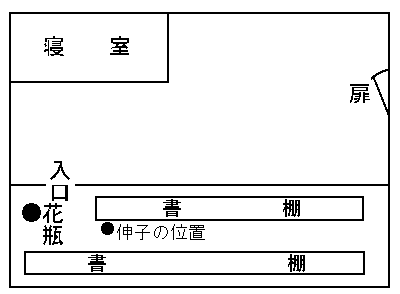
「ですから、その『
予言の薫烟』の存在が明瞭になると、自然伸子の
嘘が成立しなくなるのです。あの女は、
蹌踉いた拍子に『聖ウルスラ記』を花瓶に当てて倒したと云いました。しかし、その花瓶というのが入口の向う端にあるのですから、当時伸子の体位と花瓶の位置を考えると、とうていその
局状は成立する道理がないのです。まず伸子が
左利でない限りは、『聖ウルスラ記』を右手から投げて頭上を越え、それを花瓶に
打衝けるということは、全然不可能だろうと思われるのです。そこで僕は、エルブ点反射を憶い出しました。それは、
上膊を高く挙げると肩の鎖骨と脊柱との間に一団の筋肉が盛り上ってきて、その頂点に上膊神経の一点が現われるのです。ですからもし、その一点に強い打撃を加えると、その側の上膊部以下に激烈な反射運動が起って、その瞬後には痲痺して
［＃「痲痺して」は底本では「痳痺して」］しまうのですよ。いや、事実現場にも、エルブ反射を起すに恰好な条件がそろっていたのでして、ちょうどその二冊のあった場所と云うのが、両手を挙げなければ届かぬほどの高さだったからです。ところがレヴェズさん、そうして伸子の
嘘を訂正してゆくうちに、ふと僕は、当時あの
室に起った実相を描き出すことが出来ました。と云うのは、伸子が『聖ウルスラ記』を取り出そうとして、右手を書棚の上段に差し伸べた際でした。その時、前方の室のどこかで物音がしました。それで、伸子は本を掴んだまま後方を振り向いて、背後にある書棚の
硝子扉を見たのです。その時彼女の眼に、寝室から出て来たある人物の姿が映ったのでした。ですから、その
吃驚した
機みに、隣り合った『
予言の薫烟』を動かしたのですから、あの千頁にあまる重い木表紙本が、伸子の右肩に落ちたのです。そして、その
咄嗟に起った激しい反射運動が因で、右手に持った『聖ウルスラ記』を、頭上越しに左手の花瓶に投げつけたという訳なのですよ。ねえレヴェズさん、そうなると、その『
予言の薫烟』によって、一つの心的検証を行うことが出来るのです。すなわち、その時寝室に潜んでいた人物に、一つの虚数をつけることが出来るのです。
虚数――しかし、リーマンはそれによって、空間の特質を、単なる
三重に拡がった大きさから救っているじゃありませんか。いや、僕は率直に云いましょう。その時寝室から出た貴方は、物音を聴いて伸子の側に行き、落ちていた『
予言の薫烟』を
旧の位置に押し込んでやりました。そして、室から去ってゆくところをダンネベルグ夫人に認められたので、それが、算哲の死後秘密の関係にあった夫人を激怒させたのでした。しかし、一方持分相続に関する禁制があるので、さすがに夫人も、それを明らさまにはいい得なかったのですよ」
その間レヴェズは、
拳に組んだ両手を膝の上に置いたままで、
凝然と聴き入っていた。が、相手の言葉が終ってからも、その静観的な表情は変らなかった。彼は冷たく云い放った。
「なるほど、動機はそれで十分。しかし、この際なにより貴方に必要なのは、
僅った一つでも、完全な刑法的意義です。つまり、今度は犯罪現象に、貴方の
闡明を要求したいのですよ。法水さん、あの鎖の輪のどこに
儂の顔を証明出来ますかな。いかにも儂には、あの『
予言の薫烟』が永世の記憶となるでしょう。また、虹を送って、儂の心を伸子に知ってもらおうとしました。だが、とうていそれだけでは、儂とメフィストとの
契約が……。いや、恐らくいまに儂は、貴方の
衒学さに
嘔吐を吐きかけるに至るでしょう」
「勿論ですレヴェズさん、しかし貴方の詩作が、混沌の中から僕に光を与えてくれました。実は、この事件の
終局と云うのが、あの虹に現われている、ファウスト博士の
総懺悔にあったのです。いや、率直に云いましょう。勿論あの七色は、詩でも観想でもなく、実は、兇悪無残な焼刃の輝きだったのです。ねえレヴェズさん、貴方は、クリヴォフ夫人を、あの虹の濛気によって狙撃したのでしたね」と法水は突如凄じい形相になって、狂ったような言葉を吐いた。その瞬間、レヴェズは化石したように硬くなってしまった。突然頭上に
閃き落ちてきたものは、恐らくレヴェズにとって、それまで想像もつかぬほど意外なものであったに相違ない。
眩惑、
驚愕――勿論その一
刹那に、レヴェズが知性のすべてを失ってしまったことは云うまでもないのである。ところが、そうして相手が自失した有様に、むしろ法水は、残忍な反応を感じたらしかった。彼は、手中の
生餌を
弄ぶような態度で、ゆったり口を開いた。
「事実あの虹は、皮肉な嘲笑的な怪物でしたよ。ところで貴方は、
東ゴートの王テオドリッヒを……。あのラヴェンナ城塞の悲劇を御存じでしょうか」
「フム、最初射損じても、テオドリッヒには二の矢に等しい短剣があったのです。だがしかしだ、
儂は、苦行者でも殉教者でもない。むしろそういう浄罪
輪廻の思想は、
儂にではなくファウスト博士に云ってもらいたいものだ」とレヴェズが声を
慄わせ、満面に憎悪の色を
漲らしたと云うのは、そのラヴェンナ城の悲劇に、クリヴォフ事件を
髣髴とさせる
場面があったからだ。
（註）紀元後四九三年三月、西羅馬の摂政オドワカルは、東ゴートの王テオドリッヒとの戦いに敗れて、ラヴェンナの城に籠城し、ついに和を乞うた。その和約の席上で、テオドリッヒは家臣に命じ、ハイデクルッグの弓でオドワカルを狙わせたのであったが、弦が緩んでいて、目的を果せず、やむなく剣をもって刺殺したのだった。
「しかし、あの虹の告げ口だけは、どうすることも出来ません」と法水はさらに急追を休めず、
凄気を双眼に
泛べて云い放った。「しかし、貴方がオドワカル殺しの故智を学ばれたのは、さすがだったと思います、御承知でしょうが、テオドリッヒの用いた弓の弦と云うのは、

 木
木の繊維で編んだ、ハイデクルッグ王（
北独逸ゲルマン族の一族長）からの、
虜獲品だったのですからね。ところが、その
木という植物繊維には、温度によって組織が伸縮するという特性があるのです。したがって、寒冷の北
独逸から温暖の中部
伊太利に来たために、さしも北方蛮族の殺人具も、たちまちその怖るべき性能を失ってしまったのでした。ですから、あの
火術弩の
弦を見た時に、僕は、異様な予感に
唆られました。そして、その
木の伸縮を、あるいは人工的にも作り得るのではないかと思いました。ねえレヴェズさん、あの当時、火術弩は壁に掲っていて、
箭を
番えたまま、幾分弓形の方が上向きになっていました。そして、その高さも、ちょうど僕等の乳辺りだったのです。ところが、ここで注意を要するのは、それを支えている釘の位置なのです。それは、平頭のものが三本、そのうちの二つは
弦の
撚り目へ、残りの一つは発射
把手の真下で胴木を支えていたのです。勿論、その位置で自働発射をさせるためには、約二十度ほど壁と開きを作らねばなりません。つまり、その陰険な技巧と云うのは、今も云った角度を作ることと、それから、人手を
藉らずに弓を
絞り、さらにまた、この緊張を緩めることでした。で、それに必要だったのが、かつては津多子を
斃した抱水クロラールだったのですよ」と法水は足を組み換え、新しい
莨を取り出してから云い続けた。「ところで貴方は、エーテルや抱水クロラール水溶液に、低温性があるのを――詳しく云うと、その触れている面の温度を奪ってしまうのを御存じでしょうか。つまりこの場合は、
弦を
撚ってある
木の繊維紐三本のうちで、そのうちの一本に、抱水クロラールを塗沫しておくのです。ですから、そこへ噴泉から濛気が送られたので、あの溶解し易い痲酔剤が
［＃「痲酔剤が」は底本では「痳酔剤が」］寒冷な露滴となり、それが、塗られた一本をしだいに収縮させていったのでした。勿論、その力が射手のようになって、弓を絞りはじめたことは云うまでもありません。すると、それにつれて、他の収縮しない二本との撚り目がほぐれてゆくので、それが拡がるだけ、
弩の位置が下ってゆく訳でしょう。ですから、そうして落下してゆくごとに、余計反動の強い上方の撚り目が釘から
外れるでしょうから、そこで、弩の上方が開き、またそれにつれて、胴木の発射
把手の部分も横倒しになるので、
把手が釘で押され、
箭はそのまま開いたとおりの角度で発射されたのでしたよ。そして、発射の反動で、弩は床の上に落ちたのですが、収縮した
弦は、蒸発しきると同時に
旧どおりになったことは云うまでもありますまい。しかしレヴェズさん、元来その
詭計の目的と云うのは、必ずしも、クリヴォフ夫人の生命を奪うのにはなかったのです。ただ単に、
貴方の
不在証明をいっそう強固にすればいいのでしたからね」

その間レヴェズは、タラタラと
膏汗を流し、野獣のような血走った眼をして、法水の
長広舌に乗ずる隙もあらばと狙っていたが、ついにその整然たる理論に圧せられてしまった。しかし、そうした絶望が彼を駆り立てて、レヴェズは立ち上ると胸を
拳で叩き、凄惨な形相をして、
哮りはじめた。
「法水さん。この事件の
悪霊と云うのは、とりもなおさず
貴方のことだ。しかし、一言断っておくが、貴方は舌を動かす前に、まず『マリエンバートの哀歌』でも読まれることだな。いいかな、ここに、
久遠の女性を求めようとする一人があったとしよう。しかし、その精神の
諦観的な美しさには、野心も反抗も憤怒も血気も、いっさいが、
堰を切ったように押し流されてしまうのだ。ところが貴方は、それに
慚愧と処罰としか描こうとしない。いや、そればかりではないのです。貴方の率いている狩猟の一隊が、今日いまここで、野卑な酷薄な本性を現わしたのだ。しかし射手は確か、獲物は動けず……」
「なるほど、狩猟ですか……。だがレヴェズさん、貴方はこういうミニヨンを御存じでしょうか。――かの山と雲の
棧道、
騾馬は霧の中に道を求め、
窟には年経し竜の
族棲む……」と法水が意地悪げな
片笑を
泛べたとき、入口の
扉に、夜風かとも思われる
微かな
衣摺れがさざめいた。そして、しだいに廊下の彼方へ、薄れ消えてゆく
唱声があった。
狩猟の一隊が野営を始めるとき
雲は下り、霧は谷を埋めて
夜と夕闇と一ときに至る
それは、
擬うかたないセレナ夫人の声であった。しかし、耳に入ると、レヴェズは喪心したように、長椅子へ倒れかかったが、彼はかろうじて踏み止まった。そして頭をグイと反らして、激しい呼吸をしながら、
「
貴方は、何かの
機会に、一人の犠牲を条件に、彼女を了解させたのですか。もう
儂には、この上釈明する気力もないのです。いっそ、護衛をやめてもらおう。
儂の血でこの裁きをしたら、いつか、その舌の根から聴くことがあるでしょうから」と異常な決意を
泛べて、あろうことか、護衛を断るのだった。そして、いっさいの武装を解いた裸身を、ファウスト博士の前に
曝させることを要求した。それに、法水はまた皮肉にも、応諾の旨を回答して、
室を出た。いつも、彼等がそこで策を練り、また訊問室に当てているダンネベルグの室では、検事と熊城がすでに夜食を終っていた。その卓上には、裏庭の靴跡を造型した二つの石膏型と、一足の
套靴が、置かれてあった。そして、それがレヴェズの所有品で、ようやく裏階段下の、押入れから発見されたことが述べられた。がその頃には、押鐘博士は帰邸していて、食事が済むと、今度は代り合って、法水が口を開いた。そして、レヴェズとの対決
顛末を、赤いバルベラ酒の盃を重ねながら、語り終えると、
「なるほど、しかし……」といったんは
頷いたが、熊城は強い非難の色を
泛べていった。「君の
粋物主義にも
呆れたものさ。いったいレヴェズの処置に
躊らっているのは、どうしたということなんだい。考えても見給え。
従来動機と犯罪現象とが、
何人にも喰い違っていて、その二つを兼ねて証明された人物と云えば、かつて一人もなかったのだ。とにかく。序曲が済んだのなら、さっそく幕を上げることにしてもらおう。なるほど、君が好んで使う唱合戦も、ある意味では陶酔かもしれないがね。しかし、その前提に結論が必要なことだけは、忘れないでくれ給え」
「冗談じゃない。どうしてレヴェズが犯人なもんか」と法水は道化た身振をして、爆笑を上げた。ああ、世紀児法水――彼はあの告白悲劇に、
滑稽な動機変転を用意していたのであろうか。検事も熊城も、とたんに嘲弄されたことは覚ったが、あれほど整然たる条理を思うと、彼の
言をそのまま信ずることは出来なかった。続いて法水は、その
詭弁主義の本性を曝露すると同時に、今後レヴェズに課した、不思議な役割を明らかにした。
「いかにも、レヴェズとダンネベルグ夫人との関係は、真実に違いないのだ。しかし、あの
火術弩の
弦が
木なら、僕は前史植物学で、今世紀最大の発見をしたことになるのだよ。ねえ熊城君、一七五三年にベーリング島の附近で、海牛の最後の種類が
屠殺されたんだ。だがあの寒帯植物は、すでにそれ以前に死滅しているんだぜ。やはり、あの弩の弦は、いっこう変哲もない大麻で作られたものなんだ。ハハハハ、あの象のような鈍重な
柱体を、僕は
錐体にしてやったんだよ。つまり、レヴェズを新しい坐標にして、この難事件に最後の展開を試みようとするんだ」
「ああ、気が狂ったのか。君はレヴェズを
生餌にして、ファウスト博士を引き出そうとするのか」とさしも沈着な検事も仰天して、飛び掛らんばかりの気配を見せると、法水はちょっと残忍そうな微笑をして答えた。
「なるほど、道徳世界の守護神――支倉君！ だが実を云うと、僕がレヴェズについて最も
懼れているのは、けっしてファウスト博士の爪ではないのだ。実は、あの男の自殺の心理なんだよ。レヴェズは最後に、こういう文句を云ったのだよ。
儂の血でこの裁きをしたら、いつかその舌の根から聴くことがあるでしょうから――とね。それが、いかにもレヴェズが演ずる、悲壮な
時代史劇のようで、またあの性格俳優の見せ場らしい、大芝居みたいにも思われるだろう。しかし、それは
悲愁ではあるけれども、けっして
悲壮ではないのだ。つまりその一句と云うのが、『
ルクレチア盗み』という
沙翁の劇詩の中にあって、
羅馬の
佳人ルクレチアがタルキニウスのために
辱しめをうけ、自殺を決意する場面に現われているからなんだ」と法水はこころもち臆したような顔色になったが、その口の下から、眉を上げ
毅然と云い放ったものがあった。
「けれども支倉君、あの対決の中には、犯人にとってとうてい避け難い危機が含まれているんだ。事実僕が引っ組んだのは、レヴェズじゃないのだ。やはりファウスト博士だったのだよ。実を云うと、僕はまだ事件に現われて来ない、五芒星呪文の最後の一つ――
地精の札の
所在を知っているのだがね」
「なに、
地精の紙片
」検事も熊城も、仰天せんばかりに驚いてしまった。しかし、法水の眉宇間には、
賭博とするには、あまりに断定的なものが現われていた。彼の
凄愴な
神経作用が、いかなる詭計によって、あの幽鬼の牙城に酷迫したのであろうか。そのにわかに緊張した空気の中で、法水は冷たくなった紅茶を
啜り終ると語りはじめたが、それは、驚くべき心理分析だったのだ。
「ところで、僕はゴールトンの
仮説を
剽竊して、それで、レヴェズの心像を分析してみたのだ。と云うのは、あの心理学者の名著――『
人間能力の考察』の中に現われていることだが、想像力の優れた人物になると、
語や数字に共感現象が起って、それに関聯した図式を、具体的な明瞭な形で頭の中へ
泛べる場合があるのだ。例えば数字を云う場合に、時計の盤面が現われることなど一例だが……いまレヴェズの談話の中に、それにもました、強烈な表現が現われたのだ。支倉君、あの男は伸子に愛を求めた結果について、こういうことを悲しげにいったのだよ。――天空の虹は
抛物線、露滴の虹は
双曲線、しかしそれが
楕円形でない限り、伸子は自分の
懐に飛び込んでは来ない――と。ところが、その間レヴェズの眼に、微かな運動が起って、彼が幾何学的な用語を口にするたびごと、なんとなく宙に図式を描いているような、動きが認められるのだった。そこで僕は、その黙劇めいた心理表出に、一つの息詰まるような徴候を発見したのだよ。何故なら
拠物線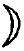と
双曲線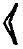を
楕円形に続けると、その合したものが、KO になるだろうからね。つまり、地精（
Kobold）の頭二字―― K と O となんだよ。だから、僕はすかさず、それに暗示的な衝動を与えようとして、Kobold のＫＯを除いた残りの四字――
bold に似た発音を引き出そうとしたのだ。するとレヴェズは、
三叉箭のことを
Bohr と云った。またそれに続いて、レヴェズが僕を
揶揄するのに、あの
箭が裏の蔬菜園から放たれたのだと云って、その中に
蕪菁（R

be）と一
語を、しきりと躍動させるのだったよ。そこで支倉君、偶然にも僕は、レヴェズの意識面を浮動している、異様な怪物を発見したのだ。ああ、僕はステーリングじゃないがね。心像は一つの
群であり、またそれには
自由可動性あり――と云ったのは至言だと思うよ。何故なら、そのレヴェズの一語には、あの男の心深くに秘められていた一つの観念が、実に鮮かな分裂をして現われたからなんだ。いいかね支倉君、最初 KO と
数型式を
泛べてから、レヴェズは三叉箭のことを
Bohr と云い、心中
地精を意識しているのを明らかにした。また、それか、
蕪菁という
語を使ったのだが、それには重大な意義が潜んでいた。と云うのは、
地精に誘導されて、必ず聯想しなければならない、一つの秘密がレヴェズの脳裡にあったからだ。で、試しに一つ、
三叉箭と
蕪菁とを合わせて見給え。すると、
格子底机――。ああ、僕の頭は狂っているのだろうか。実は、その机と云うのが、伸子の
室にあるのだがね」
地精の
札――今や事件の終局が、その一点にかけられている。もし、法水の推断が真実であるならば、あの
溌溂たる娘は、ファウスト博士に擬せられなければならない。それから、伸子の室に行くまでの廊下が、三人にとると、どんなに長いことだったろうか。しかし、法水は古代時計室の前まで来ると、何を思ったか、不意に立ち止った。そして、伸子の室の調査を私服に任せて、押鐘夫人津多子を呼ぶように命じた。
「冗談じゃない。津多子を鎖じ込めた文字盤に、暗号でもあるのなら別だがね。しかし、あの女の訊問なら後でもいいだろう」と熊城は、不同意らしい
辛々した口調で云うのだった。
「いや、あの
廻転琴時計を見るのさ。実は、妙な
憑着が一つあってね。それが、僕を
狂気みたいにしているのだよ」とキッパリ云い切って、他の二人を
面喰わせてしまった。法水の
電波楽器のような微妙な神経は、触れるものさえあれば、たちどころに、類推の花弁となって開いてしまうのだ。それゆえ、一見無軌道のように見えても、さて
蓋が明けられると、それが有力な連字符ともなり、あるいは、事件の前途に、全然未知の輝かしい光が投射される場合が多いのであった。
そこへ、壁に手を支えながら、津多子夫人が現われた。彼女は大正の中期――ことにメーテルリンクの象徴悲劇などで名を
謳われただけあって、四十を一、二越えていても、その情操の豊かさは、青磁色の眼隈に、
肌を包んでいる陶器のような光に、かつて舞台におけるメリザンドの面影が
髣髴となるのであった。しかも、夫押鐘博士との精神生活が、彼女に
諦観的な深さを加えたことも勿論であろう。しかし、法水はこの典雅な婦人に対して、
劈頭から
些かも仮借せず、峻烈な態度に出た。
「ところで、最初からこんなことを申し上げるのは、勿論
無躾至極な話でしょう。しかし、この館の人達の
言を借りると、
貴女のことを人形使いと呼ばなければならないのですよ。ところが、その人形と糸ですが、事件の劈頭には、それがテレーズの人形にありました。そして、またその悪の源は、永生
輪廻の形で繰り返されていったのです。ですから
夫人、僕には、貴女に当時の状況をお訊ねして、相変らず
鬼談的な運命論を
伺う必要はないのですよ」
冒頭に津多子は、全然予期してもいなかった言葉を聴いたので、そのすんなりした青白い身体が、急に
硬ばったように思われ、ゴクンと音あらく
唾を
嚥み込んだ。法水は続けて、その薄気味悪い追求を休めなかった。
「勿論、貴女があの
夕六時頃に、御夫君の博士に電話を掛けられたという事も、また、その直後奇怪至極にも、貴女の姿がお
室から消えてしまったという事も、僕には
既から判っているのですからね」
「それでは、何をお訊ねになりたいのです。この古代時計室には、私が昏睡させられて鎖じ込められていたのですわ。しかも、あの夜八時二十分頃には、田郷さんが、この
扉の文字盤をお廻しになったと云うそうじゃございませんか」と顔面を微かに怒張させて、津多子はやや反抗気味に問い返した。すると、法水は鉄柵
扉から背を放して、
凝然と相手の顔を見入りながら、まさに狂ったのではないかと思われるようなことを云い放った。
「いや、僕の
懸念というのは、けっしてこの
扉の外ではなく、かえって
内部にあったのですよ。
貴女は、中央にある
廻転琴附きの人形時計を――。また、その童子人形の右手が、シャビエル
上人の
遺物筐になっていて、報時の際に、
鐘を打つことも御存じでいらっしゃいましょう。ところが、あの夜九時になって、
シャビエル上人の右手が振り下されると、
同時にこの鉄扉が、
人手もないのに開かれたのでしたね」
ああ、シャビエル上人の手！ それがこの、二重の鍵に鎖された
扉を開いたとは……。事実、法水の透視神経が微妙な放出を続けて、築き上げた高塔がこれだったのか。しかし、検事も熊城も、
痺れたような顔になって容易に言葉も出なかった。と云うのは、これがはたして法水の神技であるにしても、とうていそのままを
鵜呑みに出来なかったほど――むしろ狂気に近い仮説だったからである。津多子はそれを聴くと、
眩暈を感じたように倒れかかって、
辛くも鉄柵扉で支えられた。が、その顔は死人のように蒼白く、彼女は、絶え入らんばかりに
呼吸せきつつ、眼を伏せてしまった。法水もさもしてやったりという風に、会心の笑を
泛べて、
「ですから
夫人、あの夜の
貴女は、妙に糸とか線とか云うものに運命づけられていたのですよ。しかし、その方法となると、相変らず一年一日のごとくで……。いやとにかく、僕の考えていることを実験してみますかな」
それから、符表と文字盤を覆うている、鉄製の
函を開く鍵を、真斎から借りて、まず鉄函を開き、それから文字盤を、右に左にまた右に合わせると、
扉が開かれた。すると、扉の裏側には、背面が露出している
羅針儀式の機械装置が現われたが、それに法水は、表面では文字盤の周囲に当る、飾り突起に糸を捲き付け、その一端を固定させた。
「ところで、この
羅針儀式の特性が、
貴女の
詭計に最も重大な要素をなしているのです。と云うのは、この合わせ文字を、閉じる時の方向と逆に
辿ってゆくと、三回の操作で
閂が開く。また、それを反対に行うと、掛金が閂孔の中に入ってしまうのですからね。つまり、開く時の基点は閉ざす時の終点であり、また、閉じる時の基点は開く時の終点に相当する訳なのです。ですから、実行はしごく単純で、要するに、その左右廻転を恰好に記録するものがあって、またそれに、文字盤の方へ逆に及ぼす力さえあれば……。そうすれば、理論上鎖された閂が開くということになりましょう。勿論内部からでは、あの鉄函の鍵は問題ではないのですよ。で、その記録筒と云うのが、何あろう、あの
廻転琴なのでした」
と法水は、糸を人形時計の方へ引いて行って、観音開きを開き、その音色を
弾く廻転筒を、報時装置に続いている引っ掛けから
外した。そして、その円筒に無数と植えつけられている
棘の一つに、糸の一端を結び付けて、それをピインと張らせ、さてそうしてから検事に云った。
「支倉君、君は外から文字盤を廻して、この符表どおりに
扉を閉めてくれ給え」
すると、検事の手によって文字盤が廻転してゆくにつれて、
廻転琴の筒が廻りはじめた。そして、右転から左転に移る所には、その切り返しが他の棘に引っ掛って、三回の操作が、そうして見事に記録されたのである。それが終ると、法水はその筒に、
旧どおり報時装置の引っ掛けを連続させた。それが、ちょうど八時に二十秒ほど前であった。機械部に連なった廻転筒は、ジイッと
弾条の響を立てて、今
行ったとは反対の方向に廻りはじめる。その時
固唾を
嚥んで見守っていた一同の眼に、明らかな
駭きの色が現われた。何故なら、その廻転につれて、文字盤が、左転右転を鮮かに繰り返してゆくではないか。そうしているうちに、ジジイッと、機械部の
弾条が
物懶げな音を立てると同時に、塔上の童子人形が右手を振り上げた。そして、カアンと
鐘に
撞木が当る、とその時まさしく
扉の方角で、秒刻の音に入り
混ざって
明瞭と聴き取れたものがあった。ああ、再び扉が開かれたのだった。一同はフウと溜めていた息を吐き出したが、熊城は舌なめずりをして、法水の側に歩み寄った。
「なんて、君という人物は、不思議な男だろう」
しかし法水は、それには見向きもせずに、すでに観念の色を
泛べている津多子の方を向いて、「ねえ
夫人、つまり、この
詭計の発因と云うのが、博士にかけられた貴女の電話にあったのですよ。しかし、それを僕に濃く匂わせたのは、現に抱水クロラールを
嚥まされているにもかかわらず、貴女が、実に不可解な防温手段を施されていたということなんです。あの、まるで
木乃伊のように、毛布をクルクル捲き付けられていなければ、恐らく貴女は、数時間のうちに凍死していたでしょう。痲酔剤を
［＃「痲酔剤を」は底本では「痳酔剤を」］嚥ませた、しかし、殺害の意志がない――。そういう解しきれない矛盾が、僕の懸念を濃厚にしたのでした。ところで
夫人、あの夜
貴女がこの
扉を開かれて、さてそれからどこへ行かれたものか、当ててみましょうか。いったい、薬物室の酸化鉛の
瓶の中には、何があったのでしょう。あの
褪せやすい薬物の色を、依然鮮かに保たせていたのは……」
「ですけど」津多子はすっかり落着いていて、静かな重味のある
声音でいった。「あの薬物室の
扉が、私がまいりましたときには、すでに開かれておりました。それに、抱水クロラールにも、その以前に手を付けたらしい形跡が残っていたのですわ。もう申し上げる必要はございませんでしょうが、あの酸化鉛の
罎の中には、容器に
蔵めた二グラムのラジウムが隠されてあったのです。それを私は、かねて伯父から聴いておりましたので、押鐘の病院経営を救うために、ある重大な決意をいたさねばなりませんでした。そして、一月ほど前から、この館を離れずに――。ああ、その間、私にはあらゆる意味での、視線が注がれました。しかし、それさえもじっと
耐えて、私は絶えず、実行の機会を狙っていたのでございます。ですから、私がこの
室で試みましたいっさいのものは、無論愚かな防衛策なのでございます。もしも、ラジウムの紛失が気づかれた際に、その場合仮空の犯人を、一人作るつもりだったのでした。どうか法水さん、あの、あのラジウムをお取り戻しなすって――先刻押鐘が持ち帰りましたのですから。けれども、この点だけは断言いたしますわ。いかにも、私は盗んだに相違ないのですが、しかし、私の犯行と同時に起った殺人事件には、絶対関係がございませんのですから」
津多子夫人の告白を聴いて、法水はしばらく黙考していたが、ただもうしばらく、この館に止まるよう命じたのみで、そのまま彼女を戻してしまった。それに、熊城が不服らしい素振を見せると、法水は静かに云った。
「なるほど、あの津多子という女は、時間的にすこぶる不幸な暗合を持っている。けれども、ダンネベルグ事件以外には、あの女の顔がどこにも現われてはいないのだよ。しかし熊城君、実を云うと、あの電話一つに、もっともっと深い疑義があるのではないかと思うよ。とにかく、久我鎮子の身分と押鐘博士を、至急洗い上げるように命じてくれ給え」
そこへ、法水の予測が的中したという
報知が、私服からもたらされて、はたせるかな
地精の
札が、伸子の
室にある
格子底机の
抽斗から発見されたのだった。そこで法水等は、伸子を引き立ててきたという、
旧の室に戻ることになった。
扉を開くと、
嗚咽の声が聞える。伸子は、両手で覆うた顔を卓上に伏せて、しきりと肩を
顫わせていた。熊城は、毒々しい口調を、彼女の背後から吐きかけるのだった。
「君の名が
点鬼簿から消されていたのも、わずか四時間だけの間さ。だが、今度は虹も出ないし、君も踊るわけにはゆかんだろう」
「いいえ」と伸子は、キッと顔を振り向けたが、満面には滴らんばかりの
膏汗だった。「あの札はいつの間にか、
抽斗の中に突っ込まれてあったのですわ。私は、それをレヴェズ様にだけお話しいたしました。ですからきっとあの方が、それを貴方がたに密告したに相違ございませんわ」
「いや、あのレヴェズという人物には、今どき珍しい騎士的精神があるのですよ」と静かに云いながら、法水は
怪訝そうに相手の顔を
瞶めていたが、「しかし、本当の事を云うんですよ。伸子さん、あの札はいったい誰が書いたのですか」
「私、存――存じません」と伸子は、救いを求めるような視線を法水の顔に向けたが、その時、彼女の発汗がますますはなはだしくなって、舌が異様にもつれ、正確に発音することさえ出来なくなってしまった。その――犯人伸子の窮境には、思わず熊城を
微笑ましめたものがあった。ところが、法水はさながら冷静そのもののような態度で、ややしばし、伸子の額に視線を降り注ぎ、
顳に脈打っている、繩のような血管を
瞶めていた。が、ふと額の汗を指で
掬い取ると、彼の眉がピンと跳ね上って、
「こりゃいかん。
解毒剤をすぐ！」と、この状況に予想もし得ない意外な言葉を吐いた。そして、
咄嗟の逆転に何が何やら判らず、ひたすら狼狽しきっている熊城等を追い立てて、伸子の身体を
愴惶と運び出させてしまった。
「あの発汗を見ると、たぶんピロカルピンの中毒だろうよ」と
暫時こまねいていた腕を解いて、法水は検事を見た。が、その顔には、まざまざと恐怖の色が
泛んでいた。「とにかく、あの女が、
地精の
札を僕等が発見したのを、知る気遣いはないのだから、勿論自殺の目的で
嚥んだのではない。いや、たしかに嚥まされたんだよ。それも、けっして殺すつもりではなく、あの迷濛状態を僕等の心理に向けて、伸子に三度目の不運をもたらそうとしたに違いないのだ。ねえ支倉君、それが三段論法の前提となるのも知らずに、あるものを非論理的だと断ずることは出来まい。すると、伸子とピロカルピン――つまりその前提としてだ。まず、壁を抜き床を透かしてまで、僕等の
帷幕の内容を知り得る方法がなけりゃならん訳だ。ああ、実に恐ろしいことじゃないか。
先刻この
室で交した会話が、ファウスト博士には
既に筒抜けなんだぜ」
事実まったく、この事件の犯人には、仮象を実在に強制する、不可思議な力があるのかもしれない。熊城は、もはや我慢がならないように息を
呑んだが、
「しかし、今日の伸子には、感謝してもいいだろうと思うよ。実は、
先刻僕の部下が、伸子の
室を捜っている間に、あの女は、クリヴォフの室でお茶を飲んでいたのだ。ところが、その席上に居合わせた人物というのが、動機の
五芒星円から、しっくりと離れられない連中ばかりなんだ。どうだ、法水君、
曰く最初が旗太郎さ。それから、レヴェズ、セレナ……。あの頭中繃帯しているクリヴォフだっても、その時は寝台の上に起き上っていたと云うんだからね」と熊城が吐いた内容には、この場合、誰しも打たれずにはいなかったであろう。何故なら、それによって、犯人の範囲が明確に限定されて、
従来の紛糾混乱が、いっせいに統一された観がしたからだった。そこへ、検事がすこぶる思いつきな提議をした。
「ところで僕は、これが唯一の
機会だと思うのだよ。つまり、犯人がピロカルピンを手に入れた――その経路を
明瞭させることなんだ。もし、それが津多子ならば、十分押鐘博士を通じて――ということも云えるだろう。けれども、それ以外の人物だとすると、まずその出所が、この館の薬物室以外には想像されないと思うのだがね。だから法水君、僕はホップスじゃないが、もう一度薬物室を調べてみたら、あるいは犯人の
戦闘状態が判りゃしないかと思うんだ」
この検事の提議によって、再び薬物室の調査が開始された。しかし、そこにはピロカルピンの
薬罎はあっても、それにはどこぞと云って、手を付けたらしい形跡はなかった。したがって、減量は云うまでもないことだが、なにより最初から、一度も使ったことがないと見えて、全体が厚い埃を冠っていた。そして、薬品棚の奥深くに埋もれているのだった。法水はいったん失望の色を
泛べたけれども、突然彼に、
莨を捨てさせてまで叫ばせたものがあった。「そうだ
支倉君、あまり君の
署名が鮮かだったものだから、それに眼が
眩んで、僕は些細な事までもうっかりしていたよ。あながちピロカルピンの所在は、この薬物室のみに限らんのだ。元来あの成分と云うのが、ヤポランジイの葉の中に含まれているんだからね。サア、これから温室へ行こう。もしかしたら、最近そこへ出入りした人物の名が、判るかもしれないから……」
法水が目指したところの温室と云うのは、裏庭の蔬菜園の後方にあって、その
側には、動物小屋と
鳥禽舎とが
列んでいた。
扉を開くと、
噎とするような暖気が襲ってきて、それは熱に熟れた、様々な花粉の香りが――妙に官能を
唆るような、一種名状しようのない媚臭で、鼻孔を塞いでくるのだった。入口には、いかにも前史的なヤニ
羊歯が二基あって、その大きな垂葉を潜って
凝固土の上に下りると、前面には、熱帯植物特有の――たっぷり樹液でも含んでいそうな青黒い葉が、重たそうに繁り冠さり合い、その葉陰の所々に、
臙脂や藤紫の斑が
点綴されていた。しかし、間もなく灯の中へ、ちょっと
馬蓼に似た、見なれない形の葉が現われて、それを法水はヤポランジイだと云った。ところが、調査の結果は、はたして彼の云うがごとく、その茎には六個所ほど、最近に葉をもぎ取ったらしい
疵跡が残されていた。すると、法水は眉間を狭めて、みるみるその顔に
危惧の色が波打ってきた。
「ねえ、支倉君、六引く一は五だろう。その五には毒殺的効果があるのだよ。しかし、いまの伸子の場合には、六枚の葉全部が必要ではなかったのだ。つまり、十分〇・〇一くらいを含んでいる一枚だけで、あの程度の発汗と発音の不正確を起すことが出来るのだからね。すると、犯人がまだ握っているはずの五枚――。その残りに、僕は犯人の
戦闘状態を見たような気がするのだよ」
「ああ、なんという怖ろしい
奴だろう」と神経的な
瞬きをして、熊城もこころもち
顫えを帯びた声で云った。
「僕は毒物というものの使途に、これまで陰険なものがあろうとは思わなかったよ。どうして、あの冷血無比なファウスト博士でなけりゃ、残忍にも、これほど酷烈な転課手段を編み出せるもんか」
検事は
側を振り向いて、一行を案内した園芸師に訊ねた。
「最近に誰か、この温室に出入りした者があったかね」
「い、いいえ、この一月ばかりは
誰方も……」とその老人は、眼を
って
吃ったが、検事を満足させるような回答を与えなかった。それに法水は、押しつけるような無気味な声音で追求した。
「オイ、本当の事を云うんだ。
広間にある
藤花蘭の色合わせは、ありゃ、たしか君の芸じゃあるまいね」
この専門的な質問は、ただちに驚くべき効果をもたらした。まるで老園芸師は、あたかもそれ自身が弓の
弦ででもあるかのように、法水の一打で思わず口にしてしまったものがあった。
「しかし、傭人という私の立場も、十分お察し願いたいと思いまして」と訴えるような眼で、
憐憫を乞うような前提を置いてから、
怯ず怯ず二人の名を挙げた。「最初は、あの怖ろしい出来事が起りました当日の午後でございましたが、その時旗太郎様が珍しくお見えになりました。それから、
昨日はセレナ様が……、あの方は、この
乱咲蘭をたいそうお好みでございまして。ですが、このヤポランジイの葉だけは、
仰言られるまでいっこうに気がつきませんでした」
矮樹ヤポランジイの枝に、二つの花が咲いた。すなわち、最も嫌疑の稀薄だった、旗太郎とセレナ夫人にも、一応はファウスト博士の、黒い道士服を想像しなければならず、したがってあの血みどろの行列は、新しい二人を加えることになってしまった。こうして、事件の二日目は、まさに奇矯変態の極致とも云うべき謎の続出で、恐らくその日が、事件中紛糾混乱の絶頂と思われた。のみならず、関係人物の全部が、嫌疑者と目されるに至ったので、その集束がいつの日やら
涯しもなく、ただただ犯人の、迷路的頭脳に
翻弄されるのみだった。
その二日後――ちょうどその日は黒死館で、年一回の公開演奏会が開催される当日であったが、検事と熊城は、法水の二日にわたる検討の結果を期待して、再び会議を開いた。それが、古めかしい地方裁判所の旧館で、時刻はすでに三時を廻っていた。しかし、その日の法水には、見るからに
凄愴な気力が
漲っていた。すでに一つの、結論に達したのではないかと思われたほど、顔は微かに熱ばんで、その紅潮には
動的なものが
顫えている。法水は軽く口をしめしてから、切り出した。
「ところで僕は、一々事象を挙げて、それを分類的に説明してゆくことにする。それで、最初はこの靴跡なんだが……」と卓上に載せてある二つの石膏型を取り上げた。「勿論これに、くどくどしい説明は要るまいけれど、まず最初が、小さい方の
純護謨製の園芸靴――だ。これは、元来易介の常用品で、園芸倉庫から発して、乾板の破片との間を往復している。ところが、その歩行線を見ると、
形状の大きさに比べると、非常に歩幅が狭く、しかも全体が、
電光形に運ばれているのだ。また、その上足型自身にも、僕等の想像を超絶しているような、疑問が含まれている。だって考えて見給え、易介みたいな
侏儒の足に合うような靴で、その横幅が、一々異なっているじゃないか。その上、爪先の印像を中央の部分に比較すると、均衡上幾分小さいように思われるのだ。おまけに、
後踵部に重点があったと言えて、その部分には、特に力を加えたらしい跡が残されている……。それから、もう一つの
套靴の方は、本館の右端にある出入
扉から始まっていて、中央の
張出間を弓形に添い、やはりそれも、乾板の破片との間を往復しているのだ。しかしその方は、やや靴の形状に比較して小刻みだと云うのみで、歩線も至って整然としている。そして、疑問と云うのは、かえって靴型の方にあったのだ。つまり、爪先と踵と両端がグッと窪んでいて、しかも、内側に偏曲した内翻の形を示している。またさらに、それが中央へ行くに従い、浅くなっているのだ。勿論、乾板の破片を挾んでいるのだから、その二条の靴跡が何を目的としたか――それはすでに、明らかだと云って差支えないだろう。しかも、それが時間的にも、あの夜雨が降り止んだ、十一時半以後であることが証明されているし、また、一個所
套靴の方が園芸靴を踏んでいて、二人がその場所に
辿りついた前後も、明らかにされているのだ。ところが、
仮令これだけの
疑題を提供されても、その結論に至って、僕等は
些かもまごつくところはないのだよ。実際家の熊城君なんぞは
既に気がついているだろうが、その二つの足型を採証的に解釈してみると、大男のレヴェズが履く
套靴の方には、さらにより以上
魁偉な巨人が想像され、また、
侏儒の園芸靴を履いた主は、むしろ易介以下の、リリパット人か豆左衛門でなければならないからだ。云うまでもなく、そういう人体形成の理法を無視しているようなものが、まさかこの人間世界に、あり得ようとは思われないだろう。勿論、自分の足型を覆い隠そうとしての奸策で、それには、容易ならぬ詭計が潜んでいるに違いないのだ。そこで、まず順序として、あの夜その時刻頃、裏庭へ行ったという易介が、そもそも二つのいずれであるか――それを第一に、決定する必要があると思うのだよ」
と異常に熱してきた空気の中で、法水の解析神経がズキズキ脈打ち出した。そして、靴型の疑問に縦横の
刀を加えるのだった。
「ところが、その真相と云うのが、判って見ると、すこぶる悪魔的な冗談なんだよ、驚くじゃないか。巨漢レヴェズの
套靴を履いたのが、かえって、その半分もあるまいと思われる、
矮小な人物なんだ。それから、次にあのスウィフト（
「ガリヴァー旅行記」の作者）的な園芸靴だが、その方は、まず、レヴェズほどではないだろうが、とにかく、常人とさして変らぬ、
体躯の者に相違ないのだ。そこで、僕の推定を云うと、まず
套靴の方に、易介を当ててみたのだが、どうだろうね。ねえ熊城君、たしかあの男は、
拱廊にあった具足の
鞠沓を履いて、その上に、レヴェズの
套靴を無理やり
嵌め込んだに違いないのだ」
「明察だ。いかにも、易介はダンネベルグ事件の共犯者なんだ。あの行為の目的は、云わずと知れた毒入り
洋橙の授受であったに相違ない。それを、あれほど明白な
結合動作を――。今の今まで、君の
紆余曲折的な神経が妨げていたんだぜ」と熊城は
傲然と云い放って、自説と法水の推定が、ついに一致したのをほくそ笑むのだった。しかし、法水は
弾き返すように
嗤った。
「冗談じゃない。どうして、あのファウスト博士に、そんな
小悪魔が必要なもんか。やはり、悪鬼の陰険な戦術なんだよ。で、
仮令ば家族の中に、一人冷酷無残な人物があったとしよう。そして、その一人が黒死館中の
忌怖の的であったばかりでなく、事実においても、易介を殺したのだと仮定しよう。ところが易介は、あの夜ダンネベルグ夫人に、附き添っていたのだからね。その一事が、とうてい避けられない、先入主になってしまうのだよ。だから、
仮令その人物のために、巧みに導かれて、あの乾板の破片があった場所に行き、しかもその翌日殺されたにしてもだ。当然、易介は共犯者と目されるに違いないのだ。そして、主犯の見当がその一人にではなく、むしろ易介と親しかった圏内に落ちるのが、当然だと云わなければならんだろう。それから、園芸靴の方には、いったんは消えたはずだった、クリヴォフ夫人の顔が、また現われているのだがね。ああ、そのクリヴォフなんだよ。問題はあのカウカサス
猶太人の足にあったのだ。ところで熊城君、君は、ババンスキイ痛点という言葉を知っているかね。それは、クリヴォフ夫人のような、初期の
脊髄癆患者によく見る徴候で、
後踵部に現われる痛点を指して云うのだよ。しかも、それを重圧すると、恐らく歩行には耐えられまいと思われるほどの
疼痛を覚えるんだが……」
しかし、その一言に武具室の惨劇を思い合わせれば、まず狂気の沙汰としか信じられないのだった。熊城は
吃驚して眼を
円くしたが、それを検事が抑えて、
「勿論偶発的なものには違いないだろうが、しかし、僕等の肝臓に変調をきたしていない限りだ。たしか、あの園芸靴には、重点が後踵部にあったはずだったがね。とにかく法水君、問題を童話から、他の話に転じてもらおう」
「そうは云うがね、あのファウスト博士は、アベルスの『
犯罪形態学』にもない新手法を発見したのだよ。もしあの園芸靴を、逆さに履いたのだとしたら、どうなんだろう」と法水は、皮肉な微笑を返して云った。「もっとも、あれが
純護謨製の長靴だからこそ可能な話なんだが、しかし、その方法はと云っても、爪先を靴の
踵に入れるばかりではない。つまり、踵の足型の中へ全部入れずに、幾分持ち上げ気味にして、爪先で靴の踵の部分を強く押しながら歩くのだよ、そうすると、踵の下になった靴の皮が自然二つ折れて、ちょうど
支い物を当てがったような恰好になる。したがって、靴の踵に加えた力が直接爪先の上には落ちずに、幾分そこから下った辺りに加わるだろうからね。いかにも、足の
矮小なものが、大きな靴を履いたような形が現われるのだ。のみならず、それが
弛んだ
弾条のように不規則な弾縮をするから、そのつどに、加わってくる力が異なるという訳だろう。したがって、どの靴跡にも、一々わずかながらも差異が現われてくるのだ。すると、右足に左靴、左足に右靴を履くことになるから、歩線の往路が復路となり、復路が往路となって、すべてが逆転してしまうのだよ。その証拠と云うのは、乾板のある場所で廻転した際と、
枯芝を
跨ぎ越した時と――その二つの場合に、
利足がどっちの足か吟味してみるんだ。そうしてみたら、この差数が明確に算出されてくるじゃないか。で、そうなると
支倉君、どうしてもクリヴォフ夫人が、この
詭計を使わねばならなかった――という意味が
明瞭するだろう。それは単に、あの偽装足跡を残すばかりではなかったのだ。なにより、最も弱点であるところの
踵を保護して、自分の顔を足跡から消してしまうにあったのだよ。そして、その行動の秘密と云うのが、あの乾板の破片にあった――と僕は結論したいのだ」
熊城は
莨を口から放して、驚いたように法水の顔を
瞶めていた。が、やがて軽い吐息をついて、「なるほど……。しかし、ファウスト博士の本体は、武具室のクリヴォフ以外にはないはずだぜ。もし、それを証明出来ないのだったら、いっそのこと、君の
嬉劇的な散策は、やめにしてくれ給え」
それを聴くと、法水は押収してきた
火術弩を取り上げて、その
本弭（
弓の末端）の部分を強く卓上に叩き付けた。すると意外にも、その
弦の中から、白い粉末がこぼれ出たのであった。法水は、唖然となった二人を尻眼に語りはじめた。
「やはり、犯人は僕等を欺かなかったのだ。この燃えたラミイの粉末が、とりもなおさず、あの、
火精よ燃えたけれ――なんだよ。ラミイ――それをトリウムとセリウムの溶液に浸せば、燈火
瓦斯のマントル材料になるし、その繊維は
強靱な代りに、
些細な熱にも変化しやすいのだ。実は、その繊維の
撚ったものを、二本
甘瓢形に組んで、犯人は弦の中に隠しておいたのだよ。ところで、よく無意識に子供などがやる力学的な問題だが、元来弓というものは、弦を縮めてそれを瞬間
弛めたにしても、通例引き絞って、発射したと同様の効果があるのだ。つまり犯人は、あらかじめ弦の長さよりも短いラミイ――それも長さの異なる二本を使って、その最も短い一本で、その長さまでに弦を縮めたのだ。無論外見上も、撚り目を最極まで固くすれば、不審な点は万々にも、残らないと思うのだがね。そして、そこへ犯人が、あの窓から招き寄せたものがあったのだ」
「しかし、
火精ではあの虹が……」と検事は、眩惑されたように叫んだ。
「うん、その
火精だが……かつて、
水罎に日光を通すという技巧を、ルブランが用いた。けれども、その手法は、すでに、リッテルハウスの、『
偶発的犯罪に就いて』の中に、述べられてある。しかし、この場合は、その水罎に当るものが、窓硝子の焼泡にあったのだよ。つまり、それがあの上下窓の中で、内側のものの上方にあって、いったんそこへ集った太陽の光線が、外側の窓枠にある
刳り飾り――知っているだろうが、
錫張りの
盃形をしたものに集中したのだ。したがって、そこから弦の間近に焦点が作られるので、当然壁の石面に熱が起らねばならない。そして、弦には異常はなくても、まず変化しやすいラミイの方は、組織が破壊されるのだ。ところが、そこに、犯人の絶讃的な技巧があったのだよ。と云うのは、二本のラミイの長さを異にさせた事と、また、それを
弦の中で
甘瓢形に組み、その交叉している点を弦の最下端――つまり、弓の
本弭の近くに置いたという事なんだ。すると、最初に焦点が、その交叉点よりやや下方に落ちて、まず弦よりやや短い一本が切断される。そうすると、幾分弦が弛むだろうから、その反動で
撚り目が釘からはずれ、したがって
弩が壁から開いて、当然そこに角度が作られなければならない。それから、太陽の動きにつれて焦点が上方に移ると、今度は弦を、その長さまでに縮めた最後の一本が切断される。そこで、
箭が発射されて、その反動で弩が床の上に落ちたのだよ。勿論床に衝突した際に、
把手が発射された位置に変ったのだろうけれど、元来
把手による発射ではなく、また、ラミイの変質した粉末も、ついに弦の中から洩れることがなかったのだ。ああクリヴォフ――あのカウカサス
猶太人は、たしかグリーン家のアダの故智を学んだのだ。しかし、最初は恐らく、
背長椅子に当てるくらいのところだったろう。ところが、その結果偶然にも、あの空中
曲芸を生んでしまったものだ」
まさに法水の
独擅場だった。しかし、それには一点の疑義が残されていて、それをすかさず検事が
衝いた。
「なるほど、君の理論には陶酔する。また、それが現実にも実証されている。しかし、とうていそれだけでは、クリヴォフに対する刑法的意義が十分ではないのだ。要するに、問題と云うのは、その二重の反射に必要な窓の位置にあるのだよ。つまり、クリヴォフか伸子か――そのどっちかの道徳的感情にある訳じゃないか」
「それでは、伸子の演奏中に、幽霊的な倍音を起させたのは……。事実支倉君、あの間に、鐘楼から尖塔へ行く、鉄梯子を上った者があったのだ。そして、中途にある、十二宮の
円華窓に細工して、あの
楽玻璃めいた、
裂罅を
塞いでしまったのだよ」と法水は峻烈な表情をして、再び二人の意表に出た。ああ、黒死館事件最大の神秘と目されていた――あの倍音の謎は解けたのだろうか。法水は続けた。「しかし、その方法となると、一つの射影的な観察があるにすぎない。つまり、鐘楼の頭上には円孔が一つ空いていて、その上が巨きな円筒となり、その左右の両端が十二宮の円華窓になっている。その円筒の理論を、オルガン
管にさえ移せばいいのだよ。何故なら、両端が開いている
管の一端が閉じられると、そこに
一音階上の音が、発せられるからなんだ。しかし、それ以前に犯人は、鐘楼の廻廊にも現われていた。そして、
風精の紙片を貼り付けた――三つあるうちの中央の
扉を、
秘そりと閉めたのだったよ。何故なら支倉君、君はレイリー卿が、この世には生物の
棲めない音響の世界がある――と云った言葉を知っているかね」
「なに、生物の棲めない音響の世界
」と検事は眼を円くして叫んだ。
「そうなんだ。それが、実に
凄愴をきわめた光景なんだよ。つまり僕は、
鐘鳴器特有の
唸りの世界を指して云うのだ」と法水は、押し迫るような不気味な声音で云った。「そうすると、自然問題が、
中央の
扉を何故閉めなければならなかったかという点に起ってくる。しかし、その
扉のある一帯が楕円形の壁面をなしていて、それには、音響学上凹面鏡に似た性能を含んでいるからなんだ。つまり、いわゆる
死点とは反対に、
鐘鳴器特有の唸りを一点に集注する――。言葉を換えて云うと、その壁面と云うのが、鍵盤の前にいる伸子の耳を焦点とする位置にあったからなんだよ。しかも、伸子を倒し、また、廻転椅子にも疑問を止めた原因と云うのは、その激烈な唸りに加えて、もう一つ、伸子の内耳にもあったのだ。事実
先刻の陳述は、それを語り尽してあますところがなかったのだよ」
「冗談じゃない。あの女は、右の方に倒れたのを記憶していると云っているぜ。しかし、当時の伸子の姿勢は、左の方へ廻転した跡を残しているのだ」と熊城が聴き
咎めると、法水はおもむろに
莨に火を点じてから、相手に微笑を投げた。
「ところが熊城君、ヘガール（
独逸の犯罪精神病学者、バーデンの国立病院医員）の類例集の中には、四つ角で衝突したヒステリー患者が、その側を反対に陳述したという報告が載っている。事実そのとおりで、発作中にうけた感覚は、その反対の側に現われるものなんだよ。しかし、この場合問題と云うのは、けっしてその一つばかりではない。もう一つ、やはり発作中には、聴覚が一方の耳に偏してしまう――という徴候にもあったのだ。そして、伸子にはそれが右の耳にあったので、
扉を鎖された瞬間起ったあの猛烈な
唸り――。ほとんど音が意識出来ないほど、むしろ器官の限度を超絶したものが襲い掛ってきて、それが内耳に、燃え上るような
衝を起したのだよ。つまり、人工的に迷路
震蕩症を企んだという訳で、勿論その結果、全身の均衡が失われたことは云うまでもないのだ。そこで、熱と右の耳は左へ――というヘルムホルツの定則どおりに、たちまち全身が
捻れていったのだよ。そして、廻転が極限まで詰まっている椅子の上で、そのまま左に傾きながら倒れていったのだ。しかし、それが判ったところで、けっして犯人が指摘されるものではなく、むしろ伸子の
無辜を明らかにしたにすぎない。いや、ただ単に、伸子を倒した最後の止めを詳しくしたのみで、依然として犯人の顔は、
鐘鳴器室の疑問の中に隠されている。そして、問題が室の内部を離れて、今度は、廊下と鉄梯子に移ってしまったのだよ。しかし、こうして伸子が犯人でないとすると、武具室のあらゆる状況が、クリヴォフに傾注されてゆく――それも、けだしやむを得んだろうがね」
こうして、分析したものが一点に綜合されるや、それが検事と熊城を、瞬間眩惑の渦中に投げ入れてしまった。しかし、その間熊城は、さも落ち着かんとするもののように、黙然と
莨を
喫らしていたが、ややあってから悲しげに云った。
「しかし法水君、どの場面でもクリヴォフの
不在証明は、とうてい打ち
破し難いものなのだよ。どうしてもメースンの『矢の家』みたいに、坑道でも発見されないかぎり、この事件の解決は結局不可能のような気がするんだ」
「それでは熊城君」と法水は満足そうに
頷いて、
衣袋［＃ルビの「ポケット」は底本では「ポッケト」］の中から、例のディグスビイの、奇文を記した紙片を取り出した。すると、そこに何事か異常なものが予期されてきて、二人の顔に、なかば
怯々とした生色が這い上っていった。法水は静かに云った。
「実を云うと、ディグスビイの
秘密記法も、
既にあの
大階段の裏――だけで尽きていて、この奇文の中にある、告白と
呪詛の意志を、示すに止まっていると考えられていた。ところが、故意に文法を無視したり冠詞のない点を考えると、そこから秘密記法の、おぞましい香気が触れてくるように思われた。ねえ熊城君、一つの暗号からまた新しいものが現われる――それを子持ち暗号と云って、ちょうどこの二つの文章が、それに当るのだよ。ところで、くどくどしい苦心談は、抜きにして、さっそく解読法を述べることにしよう。元来、暗号とは一見似てもつかぬ、二つの奇文のように見えるが、そのうち、最初の短文の頭文字だけを、
列ねたものが暗号語なんだ。また、その
鍵は、もう一つの創世記めいた、文章の中に隠されてあったのだよ。しかし、僕も最初は、誤った観察をしていた。あれは qlikjyikkkjubi と、全部で十四文字になる。すると、二文字を一字とすれば、七文字の単語が出来上って、ik と続いた部分が二個所もあるのだから、それがｅとかｓとかの
利字を暗示するように思われる。けれども、単語一つでは、恐らく意味をなさぬだろうと思って、間もなくその考えを捨ててしまった。
そこで、次に僕は、その全句を二つないし三つの小節に分けようと試みたのだ。そして、それには訳もなく成功することが出来たのだよ。何故なら、中央にｋが三つ並んでいる部分があるだろう。その二番目と三番目との間を
截ち割れば、当然二つの小節に、不自然でなく分けることが出来るからなんだ。ねえ熊城君、同じ文字が三つ続くなんて、そんな道理がけっしてあろう気遣いはないし、また、
重複った文字から始まる単語というのは、ホンの数えるほどしかないからだよ。で、そうしてから……」
とディグスビイが書き残した不思議な文章の一句一句に、法水は次のような番号を付けていった。
エホバ神は半陰陽なりき。初めに自らいとなみて、双生児を生み給えり。最初に胎より出でしは、女にしてエヴと名付け、次なるは男にしてアダムと名付けたり。然るに、アダムは陽に向う時、臍より上は陽に従いて背後に影をなせども、臍より下は陽に逆いて前方に影を落せり。神此の不思議を見ていたく驚き、アダムを畏れて自らが子となし給いしも、エヴは常人と異ならざれば婢となし、さてエヴといとなみしに、エヴ姙りて女児を生みて死せり。神その女児を下界に降して人の母となさしめ給いき
「まずこんな風にして、僕はこの文章を七節に分けてみたのだ。そして、それぞれの小節から、そこに潜んでいる解語の暗示を、探り出そうとしたのだった。ところで、文中の第一節だが、僕はこの句を人間創造という意味に解釈した。云わばすべての物の
創め――例えて云うと
伊呂波のい、ＡＢＣのＡなのだ。それから第二節――これが一番重要な点なんだよ。ねえ熊城君、それが
双生児を生み給えり、――なんだろう。それで
双生児と云えば、さしずめ tt とか ff とか

とか云うような、文字的な解釈を誰しも想像したくなるものだ。ところが、この場合はすこぶる表象的な意味があって、それが、母胎内における
双生児の形を指しているのだったよ。ところが熊城君、だいたい双生児というものが、母の子宮内でどんな恰好をしているか、恐らく知らぬはずはないと思うがね。必ず一人が逆さになっていて、一人の頭ともう一人の足といった具合で、つまり、ちょうどトランプの人物模様みたいに、頭尾相同じという恰好なんだよ。そこで、ｐとｄとを抱き合わせて見給え。アルファベットの中で、てっきり
双生児の形が出来るじゃないか、そして、それに第一節の解釈を加えれば、当然ｐかｄかそのいずれかが、アルファベットのａの位置を占めているに違いないのだ。しかし、まだそれだけでは、要するに別個の暗号を作るにすぎないし、またｑとｂでも同じようだけれど、それでは解答が、
楔形文字か
波斯文字みたいになってしまうのだよ」
それから一息いれた
体で、冷たくなった残りの紅茶を
不味そうに流し入れてから、法水は一気に語り続けた。
「ところで、それがすんで第三節以降になると、初めてそこで、ｄとｐとが区分されるのだ。つまり、最初に生まれたのが女で次が男――なんだから、頭を下に向けているｄがエヴで、ｐがアダムに当る訳だろう。それから、第五節にある子と云う
語と、七節の母という語を、それぞれに子音または母音と解釈するのだ。つまり、ここまでのところでは、ｄが母音ｐが子音の、それぞれ冠頭を占める文字に当て
嵌ることになるけれども、しかし、第四節と第六節でもって、それをさらに訂正しているのだ。
（作者より――。次の行から現われる暗号の説明が、幾分煩瑣に過ぎるかと思われますので、相互の識別を容易ならしむるために、暗号の部類に属する欧文活字を、ゴシック体で現わしておきました。どうかそのおつもりで）
ところで、第四節には
臍という一字があるけれども、それを
全体の中心という意味に解釈するのだ。つまり、
ｐを子音の首語である
ｂに当てて、
ｂｃｄｆ……の下へ
ｐｑｒｓと符合させてゆくと、
ｎに当る
ｂが、
ｐから最終の
ｎまでの、どっちから数えてもちょうど中央に当る理屈になる――それが
臍という一字に表象をなしているのだ。そうすると、第四節の前半には、
臍から上の影は自然の形で背後に落ちる――とあるのだから、
ｂから
ｎ――すなわち
ｐから
ｂまでは、依然そのままで差支えないのだ。けれども、続く後半になると、変化が起ってくる。
臍より下の影が、差してくる陽に逆らって前方に投影するという文章の解釈は、影――すなわち
ＡＢＣの順序を、今度は逆にしろという暗示に相違ないのだ。そこで、前半の排列をそのままに進めてゆけば、当然ｎの次のｐに符合するのが、
ｂの次の
ｃになる順序だ。けれども、それを転倒させて、最終のｚに当るはずの
ｎを、ｐに当てるのだ。したがって、ｐｑｒｓに対して
ｃｄｆｇ――とするところを、
ｎｍｌｋ……と、尻から逆立ちにした形で符合させてゆく。だから結局、子音の暗号が、次のような排列になってしまうのだよ。
bcdfghjklmnpqrstvwxyz
pqrstvwxyzbnmlkjhgfde
それから、続いて第六節では、エヴ
姙りて女児を生む――という文章に意味がある。と云うのは、エヴすなわちｄの次の時代――つまりａｂｃｄと数えて、ｄの次のｅを暗示しているのだ。そして、それに第七節の解釈を加えると、ｅが母音の首語ａに当ることになるのだから、ａｅｉｏｕを
ｅｉｏｕａと置き換えたものが、結局母音の暗号になってしまうのだ。そうすると、あの
秘密記法の全部が、
crestless stone――となる。それで、まず解読を終ったという訳さ」
「なに、クレストレッス・ストーン
」と検事は思わず、頓狂な叫び声を立てた。
「そうなんだ、曰く紋章のない石――さ。君は、ダンネベルグ夫人が殺された
室を見て、そこの
壁炉が、紋章を刻み込んだ石で、築かれていたのに気がつかなかったかね」と法水はそう云って、出しかけた
莨を再び
函の中に戻してしまった。その瞬間、あらゆるものが静止したように思われた。
ついに、黒死館事件の循環論の一隅が破られ、その鎖の輪の中で、法水の手がファウスト博士の心臓を握りしめてしまった――ああ
閉幕。
それがちょうど六時のことで、戸外にはいつしか煙のような雨が降りはじめていた。その夜黒死館には、年一回の公開演奏会が催されていて、毎年の例によれば、約二十人ほど音楽関係者が招待されることになっていた。会場はいつもの礼拝堂で、特にその夜に限り、臨時に設備された大
装飾灯が天井に輝いているので、いつか見た、微かにゆらぐ灯の中から、読経や
風琴の音でも響いてきそうな――あの幽玄な雰囲気は、その夜どこへかけし飛んでしまったかのように思われた。
けれども、その扇形をした
穹窿の下には、依然中世的好尚が失われていなかった。楽人はことごとく
仮髪を附け、それに眼が
覚るような、朱色の衣裳を着ているのである。法水一行が着いた時は、曲目の第二が始まっていて、クリヴォフ夫人の作曲に
係わる、変ロ調の
竪琴と絃楽三重奏が、ちょうど第二楽章に入ったばかりのところだった。
竪琴は伸子が弾いていて、その技量が、幾分他の三人――すなわち、クリヴォフ、セレナ、旗太郎に劣るところは、云わば
瑕瑾と云えば瑕瑾だったろうけれども、しかし、それを吟味する
余裕もないのだった。と云うのは、色と音が妖しい幻のように、入りみだれている眼前の光景には、たった一目で、十分感覚を奪ってしまうものがあったからだ。
下髪の短いタレイラン式の
仮髪に、シュヴェツィンゲン風を模した
宮廷楽師の衣裳。その色濃く響の高い絵には、その昔テムズ河上におけるジョージ一世の音楽饗宴が――すなわちヘンデルの、「
水楽」初演の夜が
髣髴となってくるように、それはまさしく、燃え上らんばかりの幻であり、また眩惑の中にも、静かな追想を求めてやまない力があった。
法水一行は、最後の列に腰を下して、陶酔と安泰のうちにも、演奏会の終了を待ち構えていた。しかも、彼等のみならず、誰しもそうであったろうが、このように
煌々と輝く大
装飾灯の下では、まずいかなるファウスト博士といえども、乗ずる隙は、万が一にもあるまいと信じられていた。ところが、そのうち
竪琴のグリッサンドが、夢の中の泡のように消えて行って、旗太郎の第一
提琴が主題の旋律を
弾き出すと、……その時、実に予想もされ得なかった出来事が起ったのである。突然聴衆の間から湧き起った、物凄じい激動とともに、舞台が薄気味悪い暗転を始めたのであった。
不意に
装飾灯の灯が消えて、色と光と音が、一時に暗黒の中へ没し去った。と、ちょうどそれと同時に、何者が発したものか、演奏台の上で異様な
呻き声が起ったのである。続いて、ドカッと床に倒れるような響がしたかと思うと、投げ出されたらしい絃楽器が、弦と胴をけたたましく鳴らせながら、階段を転げ落ちていった。そして、その音がしばらく闇の中で
顫えはためいていたが、
杜絶えてしまうと、もはや誰一人声を発する者もなく、堂内は云いしれぬ鬼気と沈黙とに包まれてしまった。
呻吟と墜落の響――。たしか四人の演奏者の中で、そのうち一人が
斃されたに相違ない。そう思いながら、法水が
凝然と
動悸を押えて耳を澄ましていると、どこかこの
室の真近から、ちょうど瀬にせせらぐ水流のような、微かな音が聴えてくるのだった。と、その矢先、壇上の一角に闇が破られて、一本の
燐寸の火が、階段を客席の方に降りてきた。それから、ほんの一
瞬であったが、血が凍り
息窒まるようなものが流れはじめた。しかし、その光が、妖怪めいたはためきをしながら、しきりと床上を
摸索っている間でも、法水の眼だけはその上方に
かれていて、鋭く壇上の空間に注がれていた。そして、闇の中に一つの
人容を描いて、じいっと捉まえて放さない幻があった。
仮令犠牲者は誰であっても、その下手人は、オリガ・クリヴォフ以外にはない。しかも、あの皮肉な冷笑的な怪物は、法水を眼下に眺めているにもかかわらず、
悠々と一場の
酸鼻［＃ルビの「さんび」は底本では「さんぴ」］劇を演じ去ったのである。恐らく今度も、矛盾撞着が針袋のように覆うていて、あの
畏懼と嘆賞の気持を、必ずや
四度繰り返すことであろう。しかし、
擲弾の距離はしだいに近づいて、すでに法水は、相手の心動を聴き、樹皮のように中性的な体臭を
嗅ぐまでに迫っていたのだ。ところが、その矢先――焔の尽きた
が弓のように
垂だれて、
燐寸が指頭から放たれた。と、キァッという悲鳴が闇をつんざいて、それが伸子の声であるのも意識する
余裕がなく、法水の眼は、たちまち床の一点に釘づけされてしまった。
見よ――そこには硫黄のように、薄っすら輝き出した一幅の帯がある。そして、その下辺のあたりから、幾つとない火の玉が、チリチリと捲き縮んでいって、現われてはまた消えてゆくのだった。しかし、それに眼を止めた瞬間、法水のあらゆる表情が静止してしまった。彼の眼前に現われた一つの驚くべきもの以外の世界は――座席の
背長椅子も、頭上に
交錯している扇形の
穹窿も、まるで嵐の森のように揺れはじめて、それ等がともども、彼の足元に開かれた無明の深淵の中へ墜ち込んでゆくのだった。実に、その消え行く瞬間の光は、斜めに
傾いで
仮髪の隙から現われた、白い布の上に落ちたのである。それは
擬れもなく、武具室の惨劇を未だに止めている額の繃帯ではないか。ああ、オリガ・クリヴォフ。再度法水の退軍だった。
斃されたのは誰あろう、彼の推定犯人クリヴォフ夫人だったのだ。
［＃改丁］
［＃ページの左右中央］
［＃改ページ］
こうして、再びこの
狂気双六は、法水の札を
旧の振り出しに戻してしまった。しかし、その悲痛な瞬間が去ると同時に、
法水には再び落着きが戻ってきた。けれども、その耳元に、代り合って
這い寄ってきたものがあったのだ。と云うのは、
先刻からあるいは幻聴ではないかと思われていた、あの水流のような響だったのである。恐らく角柱のような空間を通ったり、あるいはまた、それに窓
硝子の震動なども加わったりするせいもあるだろうが、今度は
前にも倍増して、さながら地軸を震動させんばかりの
轟きであった。そして、そのおどろと鳴り
轟く響が、陰惨な死の
室の空気を揺すりはじめたのである。それこそ、中世
独逸の伝説――「
魔女集会」の再現ではないだろうか。
幾つかの積石と窓を隔てて、
たしか、
この館のどこかに瀑布が落ちているのだ。それが、目前の犯行に、直接関係があるかどうかはともかくとして、あるいは、ファウスト博士特有の装飾癖が壮観
嗜みであるにもせよ、とうていそのような
荒唐無稽な事実が、現実に混同していようとは信じられぬのである。ああ、その瀑布の轟き――
華美な
邪魁な夢は、まさにいかなる理法をもってしても律し得ようのない、変畸狂態のきわみではないか。しかし法水は、その狂わしい感覚を振りきって叫んだ――「
開閉器を、灯を！」
すると、その声に初めて我に返ったかのごとく、聴衆はドッと一度に入口へ殺到した。その流れを、暗黒と同時に
扉を固めた
熊城が制止したので、しばらくその雑沓混乱のために、
開閉器の点火が不可能にされてしまった。あらかじめ観客の注意を散在せしめないために、階下の一帯を消燈しておいたので、廊下の壁燈が
仄のりと一つ
点いているだけ、
広間も周囲の室も
真暗である。その
喧囂たるどよめきの中で、法水は、暗中の彩塵を追いながら黙考に沈みはじめた。そこへ、検事が歩み寄って来て、クリヴォフ夫人が背後から心臓を刺し貫かれ、すでに絶命しているという旨を告げた。
しかし、その間に法水の推考が成長していって、ついに
洋琴線のように張りきってしまった。そして、目前の惨事に、最初から現われてきた事象を整理して、その曲線に、一本の
切線を引こうと試みた。――第一、演奏者中にレヴェズがいないという事だ。（しかし、聴衆の中にも彼の姿は見出されなかったのである）。それから、暗黒と同時にこの
室が密閉されたという事――つまり、事件の発生前後の状況が、ともに同一であるという事だった。ところが、最後の
開閉器を
捻ったのは誰か――云い換えれば、最も重要な帰結点であるところの消燈の
件りになると、それに端なくも、法水は一道の光明を認め得たのであった。と云うのは、
装飾灯が消える直前に、津多子が入口の
扉に現われて、
扉際にある
開閉器の脇を通ってから、その側の端に近い、最前列の椅子を占めたからである。
事実それに、法水が発見した最初の座標があったのだ。それは、アベルスの「
犯罪形態学」の中に挙げられている詭計の一つで、蓋附き
開閉器に電障を起させるために、氷の稜片を利用するという方法である。つまり、
把手に続いている絶縁物に稜片の先を挾んで置くので、
把手を
捻ると、接触板が微かに触れる程度で点燈される。が、その直後、
把手に腕を衝突させるのが狡策であって、そうすると氷の先が折れて、稜片の胴が、熱のある接触板の一つに触れる。したがって、そうして溶解した氷の蒸気が陶器台の上に水滴を作れば、当然そこに電障が起らねばならない。しかも、溶解した氷は、そのまま消失してしまうのである。すなわち、この場合
開閉器の側を過ぎる際に、もしその狡策を津多子が行ったとしたら、当然消燈は、彼女が座席についた頃に実現されるであろう。そして、その時間の隔りによって、ゆうに暗影の一隅を覆うことが出来るのである。
押鐘津多子――あの大正中期の大女優は、それ以外のどんな鎖の輪にも、姿を現わさないにもせよ、すでに事件最初の夜、古代時計室の鉄扉を
内部から押し開いていて、ダンネベルグ事件に拭うべからざる影を印しているのである。しかも、事件中人物の中で最も濃厚な動機を持ち、現に彼女は、最前列の座席を占めていたではないか。こうして、幾つかの
因子を排列しているうちに、法水は
噴っと
血腥いような
矢叫びを、自分の呼吸の中に感じたのであった。しかし、
召使に燭台を用意させて、
開閉器の
側に近づいてみると、そこに思いがけない発見があった。と云うのは、
開閉器の直下に当る床の上に、和装の津多子以外にはない、羽織紐の
環が一つ落ちていたからだった。
「
夫人、この羽織紐の
環は、ひとまずお返ししておきましょう
［＃「お返ししておきましょう」は底本では「お返しておきましょう」］。しかし、たぶん
貴女なら、この
開閉器を
捻ったのが誰だか――御存じのはずですがね」とまず津多子を
喚んで、法水はこう速急に切りだした。けれども、相手はいっこうに動じた気色もなく、むしろ冷笑を含んで、津多子は云い返した。
「お返し下さるなら、頂いておきますわ。ですけれど法水さん、やっとこれで、
善行悪報の神の存在が私に判りましたわ。何故かと申しますなら、暗闇の中から
呻吟の声が洩れた瞬間に、私の頭へこのスイッチの事が
閃いたのでした。もし、人手を借らず
把手が捻れるものでしたら、必ずこの蓋の内部に、何か陰険な仕掛が秘められていなければなりません。また、それがもし事実だとすれば、恐らく闇を幸いに、犯人がその仕掛を取り戻しに来るだろうと思いました。そう考えると、それまでは思いもよらなかった決意が浮んでまいりまして、そこで私、逸早く座席を外して、この場所にまいったのでございます。そして、自分の背でこの
開閉器を覆うていて、いま貴方がお見えになるまで、ずうっとこの場所に立っていたのでございました。ですから法水さん、私がもしデイシャス（
沙翁の「ジュリアス・シーザー」の中でブルタスの一味）でしたら、さしずめこの場合は、羽織の
環にこう申すところでしょうよ。
一角獣は樹によって欺かれ、
熊は鏡により、
象は穴によって――と」
そこで、とりあえず
開閉器の
内部を調べることになった。ところがその結果は予期に反して、それには電障の形跡がないばかりでなく、
把手を
捻って電流を通じても、大
装飾灯は依然闇の中で黙したままである。実に、それが紛糾混乱の始まりとなって、ついに問題は礼拝堂を離れてしまった。法水も、
本開閉器の所在を津多子に
訊す前に、なにより彼の早断を詫びなければならなかった。津多子は気勢を収めて、率直に答えた。
「その
室は、礼拝堂から廊下一重の向うにございまして、以前は
殯室（
中世貴族の城館で、塗油式を行う前に屍体を置く室）だったのでございます。しかし、現在では改装されておりまして、雑具を置く室になっておりますが」
ところが、
広間を横切って廊下を歩んで行くにつれて、水流の轟きはいよいよ近くに迫ってくる。そして、目指す
殯室の手前まで来ると、その――
耶蘇大苦難に、聖パトリック十字架のついた
扉の彼方から、おどろと落ち込んでいる水音が湧き上ってきた。と同時に、彼等の靴を微かに押しやりながら、冷やりと紐穴から這い込んできたものがあった。
「あっ、水だ！」と熊城は、思わず頓狂な叫び声を立てたが、跳び
退いた
機みに
蹌踉いて、片手を左側にある
洗手台で支えねばならなかった。しかし、それで万事が
瞭然となった。すなわち、
扉向うの壁に、三つ並んでいる洗手台の
栓を開け放しにして、そこから溢れてくる水に、自然の傾斜を
辿らせたのだった。そして、
扉の
閾に明いている、
漆喰の欠目から導いて、その水流を
殯室の中へ落ち込ませたに相違ない。そこで、
扉を開くことになったが、それには鍵が下りていて、押せど突けども、
微動さえしないのである。熊城は恐ろしい勢いで、
扉に身体を叩きつけたが、わずかに木の
軋る音が響いたのみで、その全身が
鞠のように
弾き返された。すると、熊城は、身体を立て直して、さながら狂ったような語気で叫んだ。
「
斧だ！ この
扉がロッビアだろうが左甚五郎の手彫りだろうが、僕は
是が非でも叩き破るんだ」
そうして斧が取り寄せられて、まず最初の一撃が、
把手の上のあたり――
羽目を目がけて加えられた。木片が砕け飛んで、旧式の
槓杵錠装置が、
木捻ごとダラリと下った。すると意外にも、その
楔形をした破れ目の隙から、濛々たる温泉のような蒸気が
迸り出たのだった。
その瞬間、一同は阿呆のような顔になって、立ち
竦んでしまった。その湯滝の蔭に、たといいかなる秘計が隠されていようと、それはこの場合問題ではない。また、幻想を現実に
強いようとするのが、ファウスト博士の残虐な快感であるかもしれないが、ともあれ眼前の奇観には、魂の底までも陶酔せずには
措かない、妖術的な魅力があった。
扉が開かれると、
内部は一面の白い壁で、さながら眼球を
爛らさんばかりの熱気である。しかし、その時熊城が、扉の側にある点滅器を
捻り、またその下の電気
煖炉に眼を止めて、
差込みを引き抜いたので、やがて濛気と高温が退散するにつれ、室の全貌がようやく明らかになった。
つまりこの一劃は、
殯室で云うところのいわゆる前室に当るもので、突き当りの
扉の奥が、
公教の
戯言で
霊舞室と呼ばれる中室になっていた。そして、隅に明いている排水孔から、落ち込んだ水が流れ出ているのである。また、中室との
境界には、装飾のない
厳めしい
石扉が一つあって、
側の壁に、古式の旗飾りのついた大きな鍵がぶら下っていた。その
扉には鍵が下りてなく、石扉特有の地鳴りのような響を立てて開かれた。ところが、不思議なことには、前室が
爛れんばかりの高温にもかかわらず、今や前方に開かれてゆく闇の奥からは、まるで
穴窟のような空気が、冷やりと触れてくるのだ。そして、
扉が一杯に開ききられたとき、その薄明りの中から、法水は自分の眼に、
眩み
転ばんばかりの激動をうけたのだった。パッと眼を打ってきた
白毫色の耀きがあって、思わず彼は、前方の床を
瞶めたまま棒立ちになってしまった。それはけっして、この僧院造り特有の、暗い沈鬱な
雰囲気が、彼に及ぼした力ではなかったのだ。
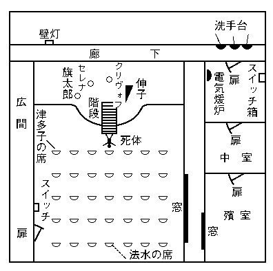
そこの床上一面には、数十万の白
蚯蚓を放ったかと思われるような、細い短い曲線が無数にのたうち交錯していて、それが積り重なった
埃の上で、地の灰色を圧していて、清冽な――しかし見ようによっては、妙に薄気味悪く粘液的にも思われる白光を放っているのだった。――それは、
瞶めていると、視野に当る部分だけが、荘厳な
紋章模様のような形になって、宙に浮び上り、パッと眼に飛びついてくるのだ。その光は、さながらゴットシャルク（
第一十字軍以前の先発隊を率いた独逸の修道僧）の見た、
聖ヒエロニムスの幻のように思われる。しかも、その無数の線条は、ほとんど
室全体の床にわたっていて、濛気で堆塵の上に作られた細溝には相違ないけれども、不思議なことに、天井や周囲の壁面には、それと
思しい痕跡が残されていない。そればかりでなく、さらに床を横合から透かしてみると、まるで月世界の山脈か沙漠の砂丘としか思われぬような起伏が、そこにもまた無数と続いているのだった。それ等は、いかなる名工といえどもとうてい及び難い、自然力の微妙な細刻に相違ないのである。
その
室は石灰石の積石で囲まれていて、
艱苦と修道を思わせるような沈厳な空気が
漲っていた。突き当りの石扉の奥が屍室で、その
扉面には、有名な
聖パトリックの
讃詩――「
異教徒の凶律に対し、また女人・鍛工及びドルイド呪僧の呪文に対して」――の全文が刻まれていた。しかし、床上には足跡がなく、恐らく算哲の葬儀の際にも、古式の
殯室儀は行われなかったものらしい。そうして、前室より先には誰一人入らなかったことが判ると、疑題のすべてはそこに尽きてしまった。つまり、水を洗手台から導いて、階段を落下させたという目的は、きわめて推察に容易ではあるが、次の
煖炉の点火という点になると、その意図には皆目見当がつかないのだった。勿論、壁の
開閉器函は
蓋が明け放されていて、
接触刃の柄がグタリと下を向いていた。検事は、その柄を握って電流を通じたが、足元に開いている排水孔を見やりながら、知見を述べた。
「つまり、洗手台の水を使って、階段から落下させたというのは、床の埃の上に附いた足跡を消すにあったのだよ。すると、どうしても根本の疑義と云うのは、この
室の
本開閉器を切ったのと、それから、
扉に鍵を下して室外に出てから、クリヴォフを刺した――その一人二役にあるという訳になるがね。しかし、どうあっても僕には、レヴェズがそんな、
小悪魔の役を勤めたとは信じられんよ。必ずその解答は、君が発見した
紋章のない石――にあるに相違ないのだ」
「なるほど、明察には違いないが」といったんは率直に
頷いたが法水は、続いて憂わしげに
瞬いて、「しかし、この際の懸念と云うのは、かえって、レヴェズの心理劇の方にあるのだよ。と云ってまた、この室の鍵の行衛が、案外見えなかったレヴェズに関係があるのかもわからんし……」とパッパッと烈しく
莨を
燻らしていたが、熊城の方を向いて、「とにかく、犯人がいつまでも身につけている気遣いはないのだから、まず鍵の行衛を捜すことだ。それから、レヴェズを見つけて連れて来ることなんだ」
ようやく悪夢から解放されたような気持になって、
旧の礼拝堂に戻ると、そこには再び、
装飾灯の
燦光が散っていた。その下で、聴衆はここかしこに地図的な集団を作って固まっていたが、壇上の三人は、それぞれに
旧いた位置から動かされなかったので、それでなくても不安と憂愁のために、追いつめられた獣のように
顫え
戦いていた。クリヴォフ夫人の死体は、階段の前方にほとんど丁字形をなして横たわっていた。それが
俯向きに倒れ、両腕を前方に投げ出していて、背の左側には、
槍尖らしい
桿状の柄が、ニョキリと不気味に突っ立っていた。死体の顔には、ほとんど恐怖の跡はなかった。しかも、奇妙に脂ぎっていて、死戦時の
浮腫のせいでもあろうか、いつも見るように
棘々しい
圭角的な相貌が、死顔ではよほど緩和されているように思われた。ほとんど、表情を失っている。けれども、その――一見、安らかな死の影とも思われるものは、同時にまた、不意の
驚愕が起した、虚心状態とも推察されるのだった。そして、死体の背窪を一杯に覆うて凝結した血が、指差している手の形で、大きな溜りを作っていて、なお薄気味悪いことには、その指頭が壇上の右方に向けられていた。が、それ等の光景の中で、最も強く胸を打ってくるのは、その殺人事件に
適わしからぬ対照であった。
槍尖の根元には、滲み出ている脂肪が
金色に輝いていて、それと
宮廷楽師の朱色の上衣とが、この惨状全体をきわめて華やかに見せていたのである。
法水は仔細に兇器の柄を調査したが、それには指紋の跡はなかった。そして、柄の根元にはモントフェラット家の紋章が鋳刻されていて、引き抜くとはたしてそれが、
二叉に先が分れている火焔形の
槍尖だった。しかし、兇行の際に現われた自然の
悪戯は、最も
肝腎な部分を覆うてしまった。と云うのは壇上からその位置までの間に、いっこう血滴が発見されないことだった。云うまでもなく、その原因と云うのは、刃がすぐ引き抜かれなかったという点にあって、勿論それがために、瞬間の
迸血が乏しかったからである。しかし、それによって、なにより犯行を再現するに欠いてはならない、連鎖が絶たれてしまった。つまり、クリヴォフ夫人が壇上のどの点で刺され、そうしてまた、どういう経路を経て墜落した――かという二つの
絡りを、もはや知り得べくもないのだった。法水は検屍を終えると、聴衆を室外に出してしまってから、階段を上って行った。すると、伸子がまず、夢に
魘されたような声で叫び立てた。
「あのファウスト博士は、まだまだ私を苦しめ足りないのですわ。最初
地精の札を、私の机の中に入れて置いたばかりではございません。今日も、あの悪魔はまた私を択んで、
人身御供の三人の中に加えるんですもの」と背後に廻した両手で、
竪琴の枠を固く握りしめ、それを激しく
揺ぶった。「ねえ、法水さん、貴方は、クリヴォフ様が演奏壇のどこで刺されたか、また、どっちの側から転げ落ちたか――お知りになりたいのでしょう。けれども、ほんとうに私、何も知らないのです。ただ
竪琴の枠を掴んで、
凝然と息を詰めていたのでございますから、ねえ旗太郎様、セレナ様、貴方がたは、たぶんそれを御存じでいらっしゃいましょう」
「いいえ、私がもしグイディオン（
ドルイド呪教に現われた、暗視隠形に通じていたと云われる、大神秘僧）でしたら、あるいは知っていたかもしれませんわ」とセレナ夫人は、
戦きの中に微かな皮肉を
泛べた。すると、それに言葉を添えて、旗太郎が法水に云った。
「事実そうなんです。
生憎僕等には、昆虫や
盲者が持ち合わせているほど、空間に対する感覚が正確でないのですよ。それに、なにしろ衣裳が同じなものですからね。伸子さんが
燐寸を
擦って顔を照らすまでは、いったい誰が
斃されたのか、それさえも
明瞭していなかったというくらいで……。いやいっそ、何も聴えず、気動にも触れなかったと申しましょうか」と事件の
局状が、法水等に不利なのを察したと見え、早くも、彼の瞳の中を、圧するような尊大なものが動いていった。「ところで法水さん、いったい
本開閉器を切ったのは、誰なんでしょうか。その鮮かな早代りで、一人二役を
演ってのけた悪魔というのは？」
「なに、悪魔ですって
いや、黒死館という祭壇を屋根にしている――人生そのものが、すでに悪魔的なんじゃありませんか」と眼前の早熟児を、薄気味悪いほど
瞶めながら、法水は最後の言葉を捉えた。「実は旗太郎さん、僕は旧派の捜査法を――つまり、人間の心細い感覚や記憶などに
信憑を置くのを、聖骨と呼んで軽蔑しているのですよ。ところが、今日の事件では、
殯室の聖パトリックを守護神にして、僕はドルイド呪僧と闘わねばならなくなったのです。貴方は、あの
愛蘭土の傑僧がデシル法――
（註）に似た行列を行うと、それがドルイド呪僧を
駆逐して、アルマーの地が聖化されたという史実を御存じでしょうか」
（註）ウエールスの悪魔教ドルイドの宗儀で、祭壇の周囲を太陽の運行と同様に、すなわち、左から右に廻る習俗。
「デシル法
それを、どうしてまた貴方が……」と臆したように
面を曇らせたが、セレナ夫人は、そうした口の下から問い返した。「ですけど、聰明な聖パトリックは、布教の方便として、あの左から右へ廻る行列法を借りたのではございませんこと」
「さよう、それが今日の事件では、
もの云う表象――だったのです。しかし、呪術の
表象を他に移すということは、呪僧それ自らを滅ぼすことなんですよ」と法水は、意地悪げな片笑を
泛べて、陰性な
威嚇を
罩めたような言葉を云い切った。ああ、
もの云う表象。――とは何であろうか。その
解れきれない霧のようなものは、妙に筋肉が硬ばり、血が凍りつくような空気を作ってしまった。ところが、そのうちセレナ夫人の眼が異様に
瞬かれたかと思うと、最初法水を見、それから、伸子に憎々しげな
一瞥をくれたが、すぐにその視線は、壇下の一点に落ちて動かなくなってしまった。そこには、云いようのない不吉な署名があった。法水が、右から左へという
もの云う表象――ちょうどそれに当るものが、クリヴォフ夫人の背に現われていたのだ。その指差している手の形をした血の溜りが、あろうことか指頭の方向を、右方の壇上――すなわち伸子の位置に向けていたからである。のみならず、あるいは気のせいかは知らないけれども、なんとなくその形が、
竪琴にも似ているように思われるのだった。一同は云いしれぬ恐ろしい力を感じて、しばらくその符号に釘づけされてしまった。やがて、伸子は
竪琴に顔を隠して、肩を
顫わせ激しい息使いを始めたが、法水は、それなり訊問を打ち切ってしまった。三人が出て行ってしまうと、熊城は熱のあるような眼を法水に向けて、
「やれやれ、
此奴もまた結構な仏様だ。どうだい、この膳立ての念入りさ加減は」とファウスト博士の魔法のような
彫刀の跡に、思わず惑乱気味な嘆息を洩らすのだった。検事はたまらなくなったような息付きをして、法水に云った。
「すると、結局君は、この暗合を、
この人を見よ――と解釈するのかね」
「いやどうして、
それは自然のままにして、しかも流動体なり――さ」と法水はあっけなく云い放って、その突然の変説が検事を驚かせてしまった。「無論そうなると、あの三人は、完全に僕の
指人形になってしまうのだよ。いまに見給え、あの三匹の深海魚は、きっと自分の
胃腑を、僕の前へ吐き出しにくるに相違ないのだから」とそれから法水は、彼が演出しようとする心理劇が、いかに素晴らしいかを知らせるのだった。「そこで、僕がデシル法を譬喩にした本当の意味を云うと、それが、旗太郎と
提琴との関係にあったのだよ。君は気がつかなかったかね。
あの男は左利にもかかわらず、
現在弓を右に、
提琴を左に持っていたじゃないか。つまり、それがデシル法の、左から右へ――の本体なんだよ。しかし
支倉君、まさかにその
恒数が、偶然の事故じゃあるまいね」
その時、クリヴォフ夫人の屍体が運び出され、それと入れ代って、一人の私服が入って来た。勿論全館にわたる捜査が終ったのであったが、そのもたらせられた報告には、思わず驚きの眼を
るものがあった。と云うのは、
殯室の鍵は勿論のことで、それにあろうことかレヴェズの姿が、曲目の第一を終って休憩に入ると、同時に消えてしまったというのだった。なおそれに伴って、ちょうど惨事が発生した時刻には、真斎は病臥中、鎮子は図書室の中で、著作の稿を続けていたということも判った。しかし、それを聴くと、法水の顔にはただならぬ暗影が漂いはじめた。彼はもはや
凝然としていられなくなったように、
焦かしげな足取りで室内を歩きはじめたが、突然立ち止って、数秒間突っ立ったままで考えはじめた。そのうち、彼の眼に異常な
光芒が現われたかと思うと、ポンと床を蹴って、その高い
反響の中から、挙げた歓声があった。
「うんそうだ。レヴェズの失踪が、僕に栄光を与えてくれたよ。現在僕等の受難たるや、あの男の物凄い
諧謔を解せなかったにある。ねえ熊城君、あの鍵は
殯室の中にあるのだよ。廊下の
扉は、内側から鎖されたんだ。そして、レヴェズは奥の屍室の中に姿を消したのだよ」
「な、何を云うんだ。君は気でも狂ったのか
」と熊城は
吃驚して、法水を
瞶め出した。なるほど、
殯室の中室の床には、足跡らしい
掠れ一つなかったのだ。また、横廊下の屍室の窓には、内部から固く鍵金が下されていた。しかし、ついに法水は、レヴェズに
飛行絨毯を与えてしまったのである。
「すると、前室の湯滝を作ったのは、何のためだい。そして、中室の床に美しい幻の世界を作って、その上の足跡を消してしまったのは？」と狂熱的な口調でやり返して、最後に、演奏台の端をガンと叩いた。そして、彼の
闡明は、あの幻怪きわまる
紋章模様をして、ついにレヴェズの
檻たらしめたのだった。
「ところで熊城君、君はよく、
莨の
烟をパッパと輪に吐くけれども、それを気体のリズム運動と云うのだよ。ところが、それと同じ現象が、両端の温度と圧力に
差異がある場合、中央に膨みのある
洋燈のホヤや、鍵孔などにも現われるのだ。それから、あの場合もう一つ注意を要するのは、中室の周壁をなしている石質なんだ。それが、バシリカ風の僧院建築などによく使われる石灰石なんだが、当然永い年月の間に風化されているだろうからね。したがって、
堆塵の中には、水に溶解する石灰分が混っていると見て差支えないのだ。そこで、レヴェズはまず、前室に湯滝を作って濛気を発生させたのだ。すると、時間が経つにつれて、しだいに前後二つの室の、温度と圧力に隔りが出来てくるのだから、そこに、ちょうど恰好な状態が作られる。そして、鍵孔から吐き出される輪形の濛気が、中室の天井を目がけて上昇して行ったのだよ」
「なるほど、輪形の蒸気と石灰分とでか」検事は判ったように
頷いたが、その間も微かに身を
顫わせていた。
「そうなんだ支倉君。そうして、その蒸気が天井の堆塵に触れると、何よりまず、その中の石灰分に滲透してゆく。したがって、
内部に当然空洞が出来るだろうから、終いには支えきれず墜落してしまうのだ。つまり、その物質が、床の足跡を覆うたことは云うまでもあるまい。しかも、その魔法の輪が、多量の石灰分を吸収した後に砕けたので、それが、あの
絢爛たる神秘を生むに至ったのだよ。ところが支倉君、ちょうどこれによく似た現象を、史実の中にも発見出来るのだがね。例えば、エルボーゲンの
魚文字（註）の奇蹟が……」
（註）一三二七年まだカルルスバート温泉が発見されぬ頃、同地から十マイルを隔てたエルボーゲンの町外れに、一つの奇蹟が現われた。それは、廃堂の床に、基督教の表象とされている魚という文字が、ものもあろうに希臘語で現われたのだった。しかし、それはたぶん、鉱泉脈の間歇噴気によるものならんと云われている。
「いや、それはいずれまた聴くとして」と
慌てて検事は、
似非史家法水の
長広舌を遮ったが、依然半信半疑の
態で相手を
瞶めている。「なるほど、現象的には、それで説明がつくだろう。また、奥の屍室の中に、あるいは
紋章のない石の一端が、現われているかもしれん。しかし、
仮令ばそれで、一人二役が解決するにしてもだ。どうしても僕には、隠さずにいい姿を隠した、レヴェズの心情が判らんのだよ。たぶんあの男は、自分の
洒落に陶酔しすぎて、真性を失ってしまったのだろう」
「オヤオヤ支倉君、君は津多子の故智を忘れたのかね。では試しに、屍室の
扉を開かずにおこうか。そうしたらきっとあの男は、僕等の帰った頃を見計って、横廊下に当る
聖趾窓から抜け出すだろう。そして、
大洋琴の中にでも潜り込んで、それから催眠剤を
嚥むに違いないのだよ。サア行こう。今度こそ、あの
小仏小平の戸板を叩き破ってやるんだ」
こうして、法水はついに凱歌を挙げ、やがて、中室の奥――聖パトリックの
讃詩を刻んである屍室の
扉の前に立った。彼等三人には、すでにレヴェズを
檻の中に発見したような心持がして、その残忍な反応を思う存分
貪り喰いたいのだった。ところが、恐らく内部から鎖されていて、武具室にある、
破城槌の力でも借りなければ――と信じられていたその
扉が、意外にも、熊城の
掌を載せたまま、すうっと
後退りしたのだった。
内部は、湿っぽい密閉された
室特有の闇で、そこからは、濁りきっていて妙に埃っぽい、
咽喉を
擽るような空気が流れ出てくるのだ。そして、懐中電燈の円い光の中には、はたせるかな、数条の新しい靴跡が現われ出たのだった。その瞬間、闇の彼方にレヴェズの
烱々たる眼光が現われ、彼が
喘ぎ
凝らす、野獣のような息吹が聴えてきた――と思われたのは、彼等の彩塵が描き出した幻だったのだ。その足跡は、奥の垂幕の蔭に消え、最奥の
棺室に続いているのである。ところが、その折彼等が、思わず
固唾を
嚥んだと云うのは、垂幕の裾から床の隅々にまで、送った光の中には、わずか
棺台の脚が四本現われたのみで、そこには人影がないのだった。
紋章のない石――すでにレヴェズは、この
室から姿を消してしまったのであろう。と、熊城が勢いよく垂幕を剥いだ時に、突然彼は、何者かに額を蹴られて床に倒れた。それと同時に、垂幕の鉄棒が
軋む響が頭上に起って、検事の胸を目掛けて飛んだ固い物体があった。彼は思わずそれを握りしめた――靴。しかしその瞬間、法水の眼は頭上の一点に凍りついてしまった。見よ、そこには一本の裸足と、靴の脱げかかったもう一本――それが、鈍い大振子のように揺れているのだった。
さながら、
脳漿の臭いを
嗅ぐ思いのする法水の推定が、ついに
覆されてしまった。レヴェズは発見されはしたものの、垂幕の鉄棒に革紐を吊って、
縊死を遂げているのだった。閉幕――恐らく黒死館殺人事件は、このあっけない一幕を最後に終ったのであろう。しかし、この結論が、けっして法水を満足させるものでないにもせよ、それは不思議なくらいに、彼を
狼狽させた。熊城は、私服に下させた屍体の顔に、灯を向けて云った。
「やれやれ、これでファウスト様の事件は終ったらしいね。けっして
喝采をうけるほどの終局じゃないけれども、まさかこの
洪牙利の騎士が、犯人とは思いも寄らなかったよ」それ以前すでに、棺台の上が調査されていた。そして、そこに残されている靴跡から判断すると、その端に立ったレヴェズが両手を革紐にかけ、足を離しながら、首を紐の上に落したことは疑うべくもなかった。その――てっきり海獣を思わせるような屍体は、同じく
宮廷楽師の衣裳を附けていて、胸のあたりがわずかに吐瀉物で汚されている。なお、推定時刻は一時間前後で、ほぼクリヴォフの殺害と符合していたが、革紐は
襟布の上からそのなりに印されていて、それが
頸筋に、無残なほど深く喰い入っていた。勿論あらゆる点にわたって、
縊死の形跡は歴然たるものだった。のみならず、それを一面にも立証しているのが、レヴェズの顔面表情だった。その
黝ずんだ紫色に変った顔には、眉の内端がへの字なりに吊り上り、
下眼瞼は重そうに垂れていて、口も両端が引き下っている。勿論それ等の特徴は、いわゆる
落ちると呼ぶものであって、それにはとうてい打ち消しようもない、絶望と苦悩の色が漂っているのであった。しかしその間、検事は、頸筋の
襟布を指で摘み上げて、しきりと後頭部の生え際のあたりを
瞶めていた。が、そうしているうちに、その眼が不気味に据えられてきた。
「僕は、レヴェズに対するゴシップが、あまり酷評に過ぎやせんかと思うのだ。どうだろう法水君、この
胡桃形をした無残な
烙印には、たしか索溝の
形状と、
背馳するものがあるように思われるんだが」とてっきり、
胡桃の殻としか思われない結節の
痕が、一つ生え際に止められているのを指し示して、
「なるほど、索状が上向きにつけられている。そうしたら、こんな結節の一つ二つなんぞは、恐らく瑣事にもすぎんだろう。しかし、古臭いフォン・ホフマンの『法医学教科書』の中にも、こういう例が一つあるじゃないか。それは――床に落ちた書類を拾おうとして、被害者が身体を
踞めたところを、その
一眼鏡の絹紐で、犯人が
後様に絞め上げたと云うのだ。勿論そうすれば、索溝が斜め上方につけられるので、後で犯人は、その上に紐を当がって屍体を吊したのだよ。ところが、頸筋にたった一つ結節が残されていて、とうとう終いには、それが、口をきいてしまった――と云うのだがね」そう云ってから、レヴェズの自殺を心理的に観察して、検事はこの局面で、最も痛い点に触れた。
「それに法水君、
仮令ばレヴェズが
本開閉器を消し、それから僕等のしらない、秘密の通路を潜って、クリヴォフ夫人を刺したにしてもだ、だいたい、クニットリンゲンの魔法博士ファウストともあろうものが、何故最後の大見得を切らなかったのだろうか。あれほど芝居げたっぷりだった犯罪者の最後にしては、すべてがあまりにあっけないほど、サッパリしすぎているじゃないか」ととうてい解しきれないレヴェズの自殺心理が、検事をまったく昏迷の底に陥れてしまった。彼は狂わしげに法水を見て、「法水君、この自殺の
奇異な点だけは、君が、十八番のストイック
頌讃歌からショーペンハウエルまで持ち出してきても、恐らく説明はつかんと思うね。何故なら、目下犯人の戦闘状態たるや、完全に僕等を圧しているんだ。そこへもってきて、あまりに唐突な終局なんだ。ああ、憐れむべき萎縮じゃないか。どうして、この男の想像力が、あのサルヴィニ（
表情演技の誇大な伊太利俳優の典型）張りの大芝居だけで、尽きてしまったとは信じられんよ。時の選択を誤らないためにか、それとも、誇らしげに死ぬためか……。いやいや、けっしてそのどっちでもないはずだ」
「あるいは、そうかもしれんがね」と法水は
莨で
函の蓋を叩きながら、妙に含むところのあるような、それでいて、検事の説を真底から肯定するようにも思われる――異様な
頷き方をしたが、「そうすると、さしずめ君には、ピデリットの『
擬容と相貌学』でも読んでもらうことだね。この悲痛な表情は
落ちると云って、とうてい自殺者以外には求められないものなんだよ」そう云ってから垂幕を強く引くと、頭上に鉄棒の
唸りが起った。「ねえ支倉君、ああして聴えてくる響が、この結節を
曲者に見せたのだったよ。何故なら、レヴェズの重量が突然加わったので、鉄棒に弾みがついてしないはじめたのだ。すると、その反動で、
懸吊されている
身体が、
独楽みたいに廻りはじめるだろう。勿論それによって、革紐がクルクル
撚れてゆく。そして、それが極限に達すると、今度は逆戻りしながら
解けてゆくのだ。つまり、その廻転が十数回となく繰り返されるので、自然撚り目の最極の所に結節が出来、それがレヴェズの
頸筋を、強く圧迫したからなんだよ」
そうして、事象としては完全な説明がついたものの、なんとなく法水には、それが独り占いのように思えてならなかった。彼は依然暗い顔のままで、
無暗と
莨を
烟にしながら考えに
耽っていた。――
博士ファウスト
別名オットカール・レヴェズが、人生を煙のように去った。しかし、それは何故であるか。
それから、一応ここで検屍を行うことになったが、まず前室の
扉の鍵が、
衣袋の中から発見された。ところが、その直後――ひしゃげ
潰れたレヴェズの
襟布をはずした時に、思いがけなく、その下から三人の眼を激しく射返したものがあった。ついに、レヴェズの死が論理的に明らかとなった。ちょうど軟骨の下――気管の両側の辺りに、二つの拇指の
痕が、まざまざと印されていたのである。しかも、その部分に当る
頸椎に脱臼が起っていて、疑いもなくレヴェズの死因は、その
扼殺によるもので……、恐らくそうしてから、絶命に刻々と迫ってゆく身体を、犯人は吊し上げたのであろう――と断ぜねばならなくなってしまった。すでに明白である――局面は再び鮮かな
蜻蛉返りを打った。しかし、それには右指の方にきわだった特徴があって、その方にのみ、爪の痕がいちじるしく印されている。そして、指頭の筋肉に当る部分が、薄っすらと落ち窪んでいて、それが何か
腫物でも、切開した痕らしく思われるのだった。しかし、勿論それで、レヴェズの自殺心理に関する疑念だけは、一掃されたけれども、一方鍵の発見によって、疑問はさらに深められるに至った。
すでにこの局面には、否定も肯定もいっせいに整理されていて、そこには幾つかの、とうてい越え難い障壁が証明されているのだった。恐らく犯人は、レヴェズを前室に引き込んで
扼殺し、その屍体を奥の屍室の中に担ぎ入れたのであろう。しかし、前室の鍵が、被害者の
衣袋の中に
蔵われているにもかかわらず、その扉を、いかにして犯人は閉じたのであろうか。また、屍室に残されている足跡にも、レヴェズ以外のものがないばかりでなく、顔面表情も自殺者特有のもので、それに恐怖驚愕と云うような、情緒が欠けているのは何故であろうか。もっとも、横廊下に開いている
聖趾窓には、その上段だけが透明な硝子になっているけれども、一面に厚い埃の層で覆われていて、それには脱出の方法を、想起し得る
術もないのだった。したがって、
紋章のない石――に、解答のすべてがかけられてしまったのも、是非ないことである。検事は屍体の髪を掴んで、その顔を法水に向けた。そして、彼がかつてレヴェズに対して採ったところの、酷烈きわまりない手段を非難するのだった。
「法水君、この局面の責任は、当然君の、道徳的感情の上に掛ってくるんだ。なるほど、あの際の心理分析から、君は
地精の札の
所在を知ることが出来た。また、危く闇から闇に葬られるところだった――この男と、ダンネベルグ夫人との恋愛関係も、君の透視眼が
剔抉したのだ。けれども、レヴェズは君の詭弁に追い詰められて、自分の
無辜を証明しようとした結果、護衛を断ったんだぜ」
それには、法水も真向から
反駁することは出来なかった。敗北、落胆、失意――希望のすべてが彼から離れてしまったばかりでなく、さながら永世の重荷となるような暗影が、一つ心の一隅に止まってしまった。たぶんその幽霊は、法水に絶えずこう
囁くことだろう、――お前がファウスト博士をして、レヴェズを殺させたのだ――と。しかし、レヴェズの気管を強圧した二つの
拇指痕は、この場合、熊城に
雀躍りさせたほどの獲物だった。それでさっそく、家族全部の指痕を蒐集することになったが、その時、一人の
召使を伴った私服が入って来た。その
召使というのは、以前易介事件の際にも、証言をしたことのある古賀庄十郎という男で、今度も休憩中に、レヴェズの不可解な挙動を目撃したと云うのだった。
「君が最後にレヴェズを見たと云うのは、何時頃だね」とさっそくに法水が切り出すと、
「はい、たしか八時十分頃だったろうと思いますが」と最初は屍体を見まいとするもののように顔を背けていたが、云いはじめると、その陳述はテキパキ要領を得ていた。「曲目の第一が終って休憩に入りましたので、レヴェズ様は礼拝堂からお出でになりました。その時私は
広間を抜けて、廊下をこの室の方に歩いてまいりましたが、その私の後を
跟けて、レヴェズ様も同様歩んでお出でになるのでした。しかし、それなり私は、この
室の前を過ぎて換衣室の方に曲ってしまいましたけども、その曲り角でふと後を振り向きますと、レヴェズ様はこの室の前に突っ立ったままで、私の方を
凝然と見ているのでございます。それはまるで、私の姿が消えるのを待っているかのようでございました」
それによると、レヴェズが自分からこの室に入ったと云っても、それには寸分も、疑う余地がないのであった。法水は次の質問に入った。
「それから、その時他の三人はどうしていたね？」
「それは御
各自に、一応はお
室に引き上げられたようでございました。そして、曲目の次が始まるちょうど五分前頃に、三人の方はお連れ立ちになり、また伸子さんは、それから幾分遅れ気味にいらっしゃったよう、記憶しておりますが」
それに、熊城が言葉を挾んで、「そうすると君は、その後に、この廊下を通らなかったのかい」
「はい、間もなく二番目が始まりましたので。御承知のとおり、この廊下には
絨毯が敷いてございませんので、音が立ちますものですから、演奏中は表廊下を通ることになっておりますので」とレヴェズの不可解な行動を一つ残して、庄十郎の陳述はそれで終った。ところが、終りに彼は、ふと思い出したような云い方をして、「ああそうそう、本庁の外事課員と
仰言る方が、
広間でお待ちかねのようでございますが」
それから、
殯室を出て広間に行くと、そこには、外事課員の一人が、熊城の部下と連れ立って待っていた。勿論その一つは、黒死館の建築技師――ディグスビイの生死いかんに関する報告だった。しかし、警視庁の依頼によって、
蘭貢の警察当局が、たぶん古い文書までも
漁ってくれたのであろう。その返電には、ディグスビイが投身した当時の
顛末が、かなり詳細にわたって記されてあった。それを概述すると、――一八八八年六月十七日払暁五時、
波斯女帝号の甲板から投身した一人の船客があった。そして、たぶん首は、推進機に切断されたのであろうが、胴体のみはその三時間後に、同市を去る二マイルの海浜に漂着した。勿論、その屍体がディグスビイであるということは、着衣名刺その他の所持品によって、疑うべくもないのだった。
次に熊城の部下は、
久我鎮子の身分に関する報告をもたらした。それによると、彼女は医学博士八木沢節斎の長女で、有名な
光蘚の研究者久我
錠二郎に嫁ぎ、夫とは大正二年六月に死別している。勿論鎮子をその調査にまで導いていったものは、いつぞや法水が彼女の心像を
発いて、算哲の心臓異変を知ることの出来た心理分析にあったのだ。また鎮子がそればかりでなく、早期埋葬防止装置の所在までも算哲から明かされているとすれば、当然両者の関係に、主従の
墻を越えた異様なものがあるように思われたからである。しかし、八木沢という旧姓に眼が触れると、突然法水は異様な呼吸を始め、惑乱したような表情になった。そして、その報告書を掴むや、物も云わずに広間を出て、その足でつかつか図書室の中に入って行った。
図書室の中には、アカンサス形をした台のある燭台が、ポツリと一つ
点されているのみで、その暗鬱な雰囲気は、著作をする時の鎮子の習慣であるらしかった。しかし彼女は、いっこう何の感覚もなさそうに、
凝っと入って来た法水を
瞶めている。その凝視は、法水に切り出す機会を失わせたばかりでなく、検事と熊城には、一種の恐怖さえももたらせてきた。やがて、彼女の方から、切れぎれな、しかも威圧するような調子で云い出した。
「ああ、判りましたわ。貴方がこの
室にお出でになったという理由が……。ねえ、たぶんあれなんでしょう。いつかの晩、私はダンネベルグ様のお側におりましたわね。またその後惨事が起るその都度にも、私は一度だって、この図書室から離れていたことはございませんでした。ねえ法水さん、いつかは貴方が、その逆説的効果に、お気づきなさらずにはいまいと考えておりましたわ」
その間、法水の眼が一秒ごとに光を増して、相手の意識を刺し通すような気がした。彼は身体を
捻じ向けて、ちょっと微笑みかけたが、それは中途で消えてしまった。
「いやけっして、そんな甘い
插話ではないのです。僕は
貴女の所へ、これを最後と思って来たのですよ。ところで、八木沢さん……」と――八木沢という姓を法水が口にすると、それと同時に、鎮子の全身に名状すべからざる動揺が起った。法水は追及した。「たしか貴女のお父上八木沢医学博士は、明治二十一年に、頭蓋鱗様部及び
顳窩畸形者の犯罪素質遺伝説を唱えましたね。すると、それに、故人の算哲博士が駁論を挙げたでしょう。ところが、不審なことには、その論争が一年も続いて、まさしく高潮に達したと思われた矢先に、まるでそれが、黙契でも成り立ったかのように消え失せてしまいましたね。そこで、試しに僕は、過去黒死館に起った出来事を、年代順に排列して見ました。そうすると、次の明治二十三年には、あの四人の
嬰児が、はるばる海を渡って来たではありませんか。ねえ八木沢さん、たぶんその間の推移に、貴女がこの館にお出でになった理由があると思うのですが」
「もう、何もかも申し上げましょう」と鎮子は沈鬱な眼を上げた。心の動揺がすっかり収まったと見えて、いったんは見分けもつかぬ深みへ、落ち込んでしまった顔の凹凸が、再び恐ろしい鋭さでもって影を
擡げてきた。「私の父と算哲様があの論争を中止いたしましたのは、つまりその結論が、人間を栽培する実験遺伝学という極論に行き詰ってしまったからでございます。そう申し上げればあの四人が、たかが実験用の小動物にすぎないということはお判りでしょう。そこで、四人の真実の身分を申しますと、それぞれに
紐育エルマイラ監獄で刑死を遂げた、
猶太人、
伊太利人などの
移住民を父にしているのでございます。つまり、刑死体を解剖して、その頭蓋形体を具えた者がおりました際には、その都度その刑死人の子を、典獄ブロックウェーを通じて手に入れたのでした。そして、ついにその数が、国籍を異にするあの四人になって……ですから、『ハートフォード
福音伝道者』誌の記事も、また、大使館公録のものも、みんな算哲様が、金に
飽かした上での御処置だったのでございます」
「そうすると、この館にあの四人を入籍させて、動産の配分に紛糾を起させたというのも、つまりが、結論を見出さんがための筋書だったのですね」
「さようでございます。あの方の御父上も同様の頭蓋形体だったそうですが、それもございましたのでしょう、算哲様は御自分の説に、ほとんど狂的な
偏執を持っていらっしゃいました。しかし、あの方のような異常な性格な方には、我々の云う正規の思考などというものは問題ではございません。没頭――それが生命の全部であり、遺産や情愛や肉身などという
瑣事は、あの方の広大無辺な、知的意識の世界にとれば、わずかな塵にしかすぎないのでございます。そこで、私の父と算哲様は後年を約して、その成否を私が見届けることになりました。ところが、その際算哲様は、すこぶる陰険な策動をなさったのでございます。と申しますのは、クリヴォフ様についてでございますが、あの方が日本に到着すると間もなく、剖見の発表が取り違えられていたという通知がまいりました。そこで、算哲様は一計を案じて、四人の名を『グスタフス・アドルフス伝』
［＃「『グスタフス・アドルフス伝』」は底本では「『グスタフス・アドルフス伝』伝」］の中から採ったのでございます。つまり、その頭蓋による遺伝素質のないクリヴォフ様には、暗殺者の名を。他の三人には、暗殺者ブラーエの手に狙撃された、ワレンシュタイン軍の戦没者の名を附けたのでした。そして、この書庫の中から、グスタフス王の正伝をことごとく省いてしまって、それに『リシュリュウ
機密閣史』を当てたのでしたけれども、恐らくその人名は、家族の者にも、また貴方がた捜査官にも、なんらかの
使嗾を起さずにいまいと考えられておりました。ですから法水さん、これで、いつぞや貴方に申し上げた、
霊性という言葉の意味が――つまり、父から子に、人間の
種子が必ず一度は
彷徨わねばならぬ、あの
荒野の意味がお判りでございましょう。そうして、今日クリヴォフ様が
斃されたのですから、そうなると、当然算哲様の影が、あの疑心暗鬼の中から消えてしまうではございませんか。ああ、この事件はあらゆる犯罪の中で、道徳の最も
頽廃した型式なのでございます。そして、その
黝ずんだ
溝臭い溜水の中で、あの五人の方々が
喘ぎ
競いていたのでございますわ」
こうして、四人の神秘楽人の正体が曝露されると同時に、過去における黒死館の暗流には、ただ一つ、二つの変死事件のみが残されてしまった。それから、いつも訊問室に当てている、ダンネベルグ夫人の
室に戻ると、そこには旗太郎とセレナ夫人とが、四、五人の楽壇関係者らしいのを従えて待っていた。ところが、法水の顔を見ると、温雅な彼女にも似げない、命令的な語調で、セレナ夫人が云い出した。
「私どもは
明瞭した証言をしにまいりました。実は、伸子を詰問して頂きたいのですが」
「なに
紙谷伸子を
」と法水は、ちょっと驚いたような素振を見せたけれども、その顔には、隠そうとしても隠し得ようのない、会心の
笑が浮んできた。
「そうすると、あの方が、
貴女がたを殺すとでも云いましたかな。いや、事実誰かれにも、とうてい打ち壊すことの出来ない障壁があるのですよ」
それに、旗太郎が割って入った。そして、相変らずこの異常な早熟児は、妙に老成した大人のような、柔か味のある調子で云った。
「法水さん、その障壁と云うのが、今まで僕等には、心理的に築かれておりましてね。現に津多子さんが、最前列の端にいられたのを御存じでしょう。ところが、その障壁を、いまここにいられる方々が打ち壊してくれたのでした」
「私は、
装飾灯が消えるとすぐに、
竪琴の方から人の近づいて来る気配を感じました」とそう云いながら、たぶん評論家の
鹿常充と思われる――その額の抜け上った四十男は、左右を振り向いて周囲の同意を求めた。そして続けた。「サア、それは気動とでも云うのでしょうかな。それより、絹が摺れ合うと
唸りが起りますから、たぶんそれではないかとも思うのです。しかしいずれにしても、その音はしだいに拡がりを増してまいりました。そして、それがパッタリ杜絶えたかと思うと、同時に壇上で、あの悲痛な
呻き声が発せられたのです」
「なるほど貴方の
筆鋒には、充分毒殺効果はあるでしょう」と法水は、むしろ皮肉な微笑を洩らして
頷いた。「ですが、こういうハックスレイを御存じですか。――証拠以上に出た断定は、
誤謬と云うだけでは済まされない、むしろ
犯罪である――と。ハハハハハ、どうせ
音楽の神の
絃の音までも聴けるのでしたら、そんな風に、
鶏の声でイビュコスの死を告げると云うのはどうですかな。かえって僕は、アリオンを救った方が、音楽好きの
海豚の義務ではないかと思うのですよ」
「なに、音楽好きの
海豚ですって
」居並んでいる一人が憤激して叫んだ。その男は左端に近い旗太郎の直下にいた、大田原末雄というホルン奏者であった。「よろしい、アリオンは
既に救われているんですぞ。しかし、僕の位置が位置だったので、鹿常君の云うその気配というのは聴えませんでした。けれども、かえってこのお二人に近かっただけに、完全な動静を握っていると云っても過言ではないのですよ。法水さん、僕もやはり異様な
唸りを聴きました。それは、
呻き声が起ると同時に杜絶えましたが……、しかしその音は、旗太郎さんが左
利で、セレナ夫人が右
利である限り、
弓の
絃が、斜めに擦れ合って起ったものに相違ないのですよ」
その時セレナ夫人は、皮肉な
諦めの色を現わして法水を見た。
「とにかく、この対照の意味が非常に単純なだけに、かえって皮肉な貴方には、評価が困難なのでございましょう。けれども、御自分の慣性以外の神経で、もし判断して頂けるのでしたら、きっとあの
賤民に、クラカウ（
伝説におけるファウスト博士が、魔術修行の土地）の想い出が輝くに相違ございませんわ」
そうして、一同が出て行ってしまうと、熊城は難色を現わして、法水に毒づいた。
「いやどうも呆れたことだ、むしろ与えられたものを素直に取る方が、君に適わしい高尚な精神だと思うんだがね。それより法水君、今の証言で、君が
先刻云った武具室の方程式を憶い出してもらいたいんだ。あの時君は、
２−１＝クリヴォフだと云ったね。しかし、その解答のクリヴォフが殺されたとしたら……」
「冗談じゃない。あんな
賤民の娘が、どうして、この宮廷陰謀の立役者なもんか」と法水は力を
罩めて云い返した。
「なるほど、伸子という女はすこぶる奇妙な存在で、ダンネベルグ事件と
鐘鳴器室を除いた以外は、完全に情況証拠の網の中にあるのだ。しかし、あの標本的な
人身御供があるがために、ファウスト博士は陽気な御機嫌を続けていられるんだぜ。第一伸子には、動機も衝動もない。例えばどんな
作虐性犯罪者でさえも、そういった病的心理を、引き出すに至る動因が、必ずあるものなんだよ。現に、いまもあの
好楽の海豚どもが……」
と法水が何事かに触れようとした時、先刻調査を命じておいた
拇指痕の報告がもたらされた。しかし、結果は徒労に終って、それに該当するものは、ついに現われ出て来なかった。法水は疲れたような眼をして、しばらく考えていたが、ふと何と思ったか、
広間の
煖炉棚に並んでいる、
忘れな壺を持参するように命じた。それは総計二十あまりもあって、すでに故人となり、離れ去った人達のもあるけれど、この館に重要な関係を持った人達には、あまねく作らせて、回想を永遠に止めんがためのものであった。表面には、
西班牙風の美麗な
釉薬が施されていて、素人の手作りのせいか、どこか形に
古拙なところがあった。法水はそれをずらりと卓上に並べて云った。
「あるいは、僕の神経が過敏すぎるのかもしれないがね。しかし、この館のような、精神病理的人物の多い所では、
押捺した指痕などというものに信頼を置くと、それがそもそもの間違いになるのだよ。何故なら、ときたま外見に現われない発作があるからね。その時強直なり
羸痩なりが起った場合に、僕等はとんでもない錯誤を招かんけりゃならんのだ。しかし、この壺の内側には、必ず平静な状態の時、
捺された
拇指痕があるに相違ない。熊城君、君は、ここにある壺を巧く割ってくれ給え」
そうして
糸底の姓名と対照して割ってゆくうちに、とうとう二つが残されてしまった。「クロード・ディグスビイ」……割られたが、しかし、あのウェールズ
猶太のものとは異なっていた。次に、降矢木算哲……熊城の持った木槌が軽く打ち下されて、胴体にジグザグの
罅が入った。そうして、それが二つに開かれた次の瞬間、三人は全く悪夢のようなものを掴まされてしまった。ちょうど
縁から幾分下方に当る所に、疑うべくもない拇指痕が、レヴェズの
咽喉に印されたのと同一の形で現われた。さすがに検事も熊城も、この衝撃には言葉を発する気力さえ失せてしまったらしい。そうしているうちに、熊城は眠りから醒めたような形で、
慌てて
莨の灰を落したが、
「法水君、問題は、これで
綺麗さっぱり割り切れてしまったのだ。もう
猶予するところはない。算哲の
墓※［＃「穴かんむり／石」、U+25954、428-1］を発掘するんだ」
「いや、僕はあくまで
正統性を護ろう」と法水は異様な情熱を
罩めて叫んだ。「あの疑心暗鬼に惑わされて、算哲の生存を信ずると云うのなら、君は勝手に降霊会でも開き給え。僕は
紋章のない石――を見つけて、人間様の殺人鬼と闘うんだ」
それから
壁炉の積石に刻まれている紋章の一つ一つを
辿ってゆくと、はたして右側の積石の中に、それらしいものを発見した。そして、法水が試みにそれを押すと、奇妙なことには、その部分が指の行くがままに落ち窪んでゆく。すると、それと同時に、その一段の積石が音もなく
後退りを始めて、やがて、その跡の床に、パックリと四角の闇が開いた。坑道――ディグスビイの酷烈な
呪詛の意志を
罩めたこの一道の闇は、壁間を
縫い階層の間隙を歩いて、
何処へ辿りつくのだろうか。
鐘鳴器室か礼拝堂かあるいは
殯室の中にか、それとも四通八達の岐路に分れて……。
足許には小さな階段が一つあって、そこから
漆のような闇が
覗いている。永年外気に触れたことのない陰湿な空気が、さながら屍温のようなぬくもりと、一種名状の出来ぬ
黴臭さとを伴って、ドロリと流れ出てくる――文字どおりの鬼気だった。法水等三人は、さっそく懐中電燈を点して、肩を狭めながら階段を下りて行った。すると、そこは半畳敷ほどの板敷になっていて、そこまで来ると、今までは光線の加減で見えなかったスリッパの跡が、床に幾つとなく発見された。しかし、その中にはきわめて新しい一つがあって、それが一直線に階段の上まで続いているけれども、その小判形の
痕には、たぶん静かに歩いたせいでもあろうか、前後の特徴さえも残っていないのである。したがって、はたしてそれが階段から下りて来たものか、それとも、奥の坑道から辿り来ったものか、勿論その識別は不可能なのであった。その時、周囲を照らしていた熊城がアッと叫んだ。見ると、右手の上方に、
凄愴な生え際を見せた魔王バリ（
印度ヴイシユヌ化身伝説に現われる悪魔の名）の
木彫面が掛っていて、その左眼の瞳が、五分ばかり棒のような形で突き出ている。それを押すと、反対に右の方が持ち上ってきて、上から差し込む光線が狭められていった――積石が
旧の位置に戻ったからである。それから法水は、そのスリッパの跡と歩幅の間隔とを計ってから、前方に切り開かれている短冊形の闇の中へ入って行った。実にそれからが、往昔
羅馬皇帝トラヤヌスの時代に、
執政官プリニウスが二人の
女執事を使って、カリストゥス地下聖廊を探らせた際の、光景を
髣髴とするものであった。
坑道の天井からは、永年の埃の堆積が鍾乳石のような形で垂れ下っていて、呼吸をするごとに細塵が飛散してきて、
咽喉が
擽られるように
咽っぽかった。それでなくても、空気が新鮮でないために、妙に息苦しく、もしこの際
松火を使ったとしたら、それは、輝かずに
燻ぶり消えるだろうと思われた。それに、館中の響がこの空間には異様に
轟いてきて、時折
岐路ではないかと思ったり、また、人声のようにも聴えたりして、胸を躍らすのもしばしばであった。しかし、スリッパの跡はどこまでも消えずに彼等を導いていった。その足許には、雪を踏みしだくような感じで埃の堆積が崩れ、それを透かして、

の冷たい感触が、頭の
頂辺まで滲み透るのだった。こうして、この
隧道旅行は、かれこれ二十分あまりも続いた。坑道は右に左に、また、ある部分は坂をなし、ほとんど記憶できぬほど曲折の限りを尽して、最後に左に曲ると、そこは袋戸棚のような行き詰りになっていた。そして、そこにも魔王バリの面が発見された。ああ、その石壁一重の彼方は、館の
何処であろうか。法水は
固唾を
呑んで面の片眼を押した。すると、その右の
扉は、熊城の肩を微かに
掠って開かれたが、前方にも依然として闇は続いている。しかし、どこからとなく、
寛かな風が訪れてきて、そこが広い空間であるのを思わせるのだった。
法水は前方の空間を目がけて、斜めに高く光を投げた。けれども、その光は、闇の中を空しく走ったのみで、何も映らなかった。それで、今度は一歩踏み込んで、頭上に向けると、そこには、醜い
苦渋な相貌をした三人の男の顔が現われた。法水はそれによって、いっさいを知ることが出来たのである。聖パウロ、殉教者イグナチウス、コルドバの
老証道人ホシウス……と壁面の
彫像柱を、三つまでは数えたが、その声に俄然
顫えが加わってきて、
「
墓※［＃「穴かんむり／石」、U+25954、430-13］だよ、とうとう僕等は算哲の
墓※［＃「穴かんむり／石」、U+25954、430-13］にやって来てしまったんだ」と狂わしげに叫んだ。
その声と同時に、熊城は二、三歩進んでいって、円い灯で前方を一の字に掃いた。すると、その中に幾つか石棺の姿が明滅して、明らかにこの一劃が、算哲の
墓※［＃「穴かんむり／石」、U+25954、430-15］に相違ないことが分った。三人は切れ切れに音高い呼吸を始めた。いつぞやレヴェズが法水に云った、
地精よ、いそしめ――の解釈が、今や幻から現実に移されようとしている。しかも、スリッパの跡は、中央にあってひときわ巨大な、算哲の棺台を目がけて、一文字に続いているのだ。その蓋には、軽鉄で作られた守護神
聖ゲオルヒが横たわっていて、それは軽く
擡げられた。恐らく、その時三人の心中には……算哲の棺台のみに脚がなくて、それが大理石の石積で作られていることから、たしか棺中にはファウスト博士の姿はなくて、そこからまた、地下に続く新しい坑道が設けられているように思われていた。
ところが、蓋が
擡げられて、円い光がサッと差し入れられた時――思わず三人は、
慄然としたものを感じて、跳び
退いた。見よその中には、
異形な骸骨が横たわっているではないか。静臥しているはずの膝が高く折り曲げられていて、両手は宙に浮き、指は何物かを
掻かんとするもののように、無残な曲げ方をしている。しかも、三人が跳び退いた
機みに、それがカサコソと鳴って、おまけになお薄気味悪いことには、
肋骨の端が一、二本ポロリと欠け落ちて、それも灰のようにひしゃ
潰れてしまうのだった。しかし、左肋骨には創傷の跡が残っていて、明らかにそれは、算哲の遺骸に相違ないのだった。
「算哲はやはり死んでいたのだ。すると、いったいあの指痕は、誰のものなんだろうか」と熊城を
顧みて、検事は
唸るような声で
呟いた。がその時、法水の眼に妖しい光が
閃いたかと思うと、顔を算哲の肋骨に押し付けて、動かなくなってしまった。実に意外千万にも、その胸骨には縦に刻まれている、異様な文字があったのである。
ＰＡＴＥＲ！ ＨＯＭＯ ＳＵＭ！
「父よ、
吾も人の子なり――」と法水は、その一行の
羅甸文字を邦訳して
口誦んだが、異様な発見はなおも続けられた。と云うのは、その彫字の縁に、所々
金色をした微粒が輝いているのと、もう一つは、欠け落ちた歯の隙に、たぶん小鳥らしいと思われる、骸骨が突っ込まれていることだった。法水はその微粒を手に取って、しばらく眺めすかしていたが、
「ああ、恐らくこれが、ファウスト博士の
儀礼なんだろうがね。しかし熊城君、この文字は乾板で彫ってあるのだよ。
父よ吾も人の子なり――。それに、歯の間に突っ込まれている、小鳥の骸骨らしいのは、たぶん早期埋葬防止装置を
［＃「早期埋葬防止装置を」は底本では「早期埋装防止装置を」］妨げたという、
山雀の死体に違いないのだ。ねえ怖ろしいことじゃないか。つまり、いったん算哲は棺中で蘇生したのだが、その時犯人は山雀の
雛を挾んで
電鈴の鳴るのを妨げたのだよ」
法水の声のみが陰々と
反響しても、それがてんで耳に入らなかったほど、検事と熊城は、目前の
戦慄すべき情景に
惹きつけられてしまった。その姿体は、明白に棺中の苦悶であり、その結論は生体の埋葬に相違なかった。しかし、そうは云うものの、またファウスト博士にとれば、算哲が棺中で蘇生してから狂ったように合図の紐を引き、しかも救けは来ず、力もようやく尽きようとして、頭上の蓋を掻き
毟っている有様と云うのが、恐らくまた、残虐な快感をもたらせたものだったかも知れないのである。そうして、犯人の冷酷な意志は、
山雀の屍骸と
父よ、吾も人の子なり――の一文にとどめられるのであるから、当然、久我鎮子が、道徳の最も
頽廃した形式と、叫んだのも無理ではないかもしれない。いわゆる黒死館殺人事件と呼ばれて、酷烈
酸鼻［＃ルビの「さんび」は底本では「さんぴ」］をきわめた流血の歴史よりかも、すでにそれ以前行われていて、しかも
眼のあたり、遺骸の
形状にもそれと
頷かれる恐怖悲劇の方が、胸を塞いでくる強い何物かを持っていたのは事実だった。それから、スリッパの跡の調査を始めたが、それは
聖窟の階段を上りきった頭上の
扉口――すなわち墓地の
棺龕まで続いている。しかし、ここまで来ると、ようやくその前後が明らかになって、犯人がダンネベルグ夫人の
室から坑道に入り、それから
棺龕の蓋を開けて、裏庭の地上に出たのを知ることが出来た。またそれ以外にも、埃に埋もれかかった足跡らしいものが散在していて、
既からあの明けずの間に、異様な潜入者のあったことは疑うべくもなかった。調査が終ると、三人は
愴惶に石棺の蓋を閉じて、この圧し狂わさんばかりの、鬼気から
遁れていった。そして、道々法水は、幾つかの発見を綜合整理して、それを、鎖の輪のように
繋げていった。
一、父よ、吾も人の子なりの考察――。
すでにそれは、如何とも否定し難い物云う表徴である。しかし、算哲が自説の勝利に対する狂的な執着からして、四人の異国人を帰化入籍させたのみならず、常軌を逸した遺言書を作ったり、また屍様図を描き魔法典焚書を行ったりして、犯罪方法を暗示したり捜査の攪乱をあらかじめ企てたという事が、はたして、三人のうちのどの一人に衝動を与えたか――その決定は勿論疑問なのだった。と云うものの、その父――の一語は、明白に旗太郎もしくは、セレナ夫人を指していて、あるいは旗太郎が、遺産に関する暴挙に復仇したものか、それともセレナ夫人が、なんらかの動機から、算哲の真意を知ることが出来て――それには、法水の狂的な幻影としか思われない、屍様図の半葉が暗示されてくるのであるが――もしそうだとすれば、夫人の矜恃の中に動いている絶対の世界が、あるいは、世にもグロテスクな、この爆発を起させたかもしれないのである。そうして、その意志表示が、吾も人の子なり――の一句に相違ないのだけれども、仮りにもしそれが偽作だとすれば、今度は押鐘津多子を、この狂文の作者に推定しなければならない。
二、犯罪現象としての押鐘津多子に――。
すでに明白なのは、神意審問会の際張出縁に動いていた人影と、最初乾板を拾いに来た園芸倉庫からの靴跡、それに薬物室の闖入者――と以上の三人が、算哲を斃し、あの夜ダンネベルグ夫人の室に侵入した人物と同一人だという事だった。そうすると、当然問題が、ダンネベルグ事件に一括されて、それには、否定すべからざる暗影を持つ押鐘津多子が、しかも、動機中の動機とも云うべきものを引っさげて、登場して来るのだった。勿論、確実な結論として律し得ない限りは、それ等の推測も、無の中の一突起にすぎないではあろうが。
再び
旧の
室に戻って、椅子の上に落ち着くと、法水は
憮然と
顎を
撫でながら驚くべき言葉を吐いた。
「実は、算哲の屍骸の中に、二つの狂暴な意志表示が含まれているのだよ。
一度はディグスビイの呪詛のために殺され、
そうして蘇生したところを、
今度はファウスト博士が止めを刺したのだ。つまり、あれは二重の殺人なんだよ」
「なに、二重の殺人
」と熊城が驚きのあまりに問い返すと、法水は
大階段の裏――を、実に三度転倒させて、いよいよ最終の帰結点を明らかにした。
「そうじゃないか熊城君、有名なランジイ（
仏蘭西（フランス）の暗号解読家）の言葉に、
秘密記法の最終は
同字整理にあり――というのがあるからね。そこで、その
同字整理を
紋章のない石に試みて、ｓとｓ、ｒｅとｌｅ、ｓｔとｓｔを除いてみた。すると、それが
Cone（
松毬）という一字に、変ってしまったのだよ。ところが、その
松毬というのが、寝台の天蓋にある
頂飾にあって、それがまた、薄気味悪い
道化師なんだがね」とそれから
帷幕の中に入って、
蒲団の上に、
卓子や椅子を一つ一つ積み重ねていった。そうして、最後に
立箪笥が載せられたとき、検事と熊城はハッとして息を
嚥んだ。と云うのは、
松毬の形をしたその
頂飾が口を開いて、そこからサラサラと、白い粉末が
溢れ出たからであった。すると、法水の舌が、黒死館の過去を
暗澹とさせたところの、三つの変死事件に触れていった。
「これが、暗黒の神秘――黒死館の悪霊さ。それを
修辞学的に云えば、さしずめ中世異端の弄技物とでも云うところだろうがね。しかし、その装置の内容たるや、過去の三変死事件が、それぞれ
同衾中に起ったのを考えれば判るだろう。つまり、二人以上の重量が
法度で、それが加わると、
松毬の頂飾が開いて、この粉末が溢れ出すのだよ。それも、以前マリア・アンナ朝時代では、媚薬などを入れたものだが、この寝台では
桃花木の貞操帯になっているのだ。と云うのは、この粉末が確かストラモニヒナス
（註）――ほとんど稀集に等しい植物毒だろうと思うからだよ。それが鼻粘膜に触れると、狂暴な幻覚を起すのだから、最初明治二十九年に伝次郎事件、それから三十五年に筆子事件――と二つの他殺事件を起して、ついに最後の算哲を、人形を抱いたあの日に
斃してしまったのだ。つまり、このディグスビイの
呪詛と云うのは、『
死の舞踏』に記されている、
奢那教徒は地獄の底に横たわらん――の本体なんだよ」
（註）後日法水は、ストラモニヒナスがついに伝説以上のものだったのに、驚いたと云っている。それは、ゲオルヒ・バルティシュ（十六世紀ケーニヒスブルクの薬学者）の著述の中に記されているのみで、近世になってからは、一八九五年にフィッシュと云って、印度大麻の栽培を奨励した、独領東亜弗利加会社の伝道医師のみ。そして、稀に印度大麻にストリヒナス属（矢毒クラーレの原植物）が寄生すると、その果実を土人が珍重して呪術に用ゆるけれども、恐らくそれではないか――という報告を一つもたらせたのみである。たぶん黒死館の薬物室にあった空瓶というのも、ディグスビイから、与えられるのを算哲が待っていたからであろう。
この
闡明を最後にして、黒死館を覆うていた、過去の暗影の全部が消えた。しかし検事は、昂奮の中に軽い失望を混えたような調子で、
「なるほど、君は
喋った――しかし、現在の事件については、何も判らなかったのだ。それより、この矛盾を、君はどう解釈するかね。
扉から室の中途までは、
敷物の下に、人形の足型が水で印されていた。ところがいったん坑道の中に入ってしまうと、今度はそれが人間のものに化けてしまったんだ」
「ところが支倉君、それが
＋−なんだよ。最初から人形の存在を信じていない僕には、それを口にする必要がなかったのだ。しかし、この一事だけは、とうてい偶然の暗合として、否定し去ることは出来まいと思うよ。何故なら、坑道にあるスリッパの跡を人形の足跡に比較すると、その歩幅と足型の全長とが等しく、またスリッパの跡が、人形の歩幅と符合するのだ。それが熊城君、実に面白い例題なんだよ」とそれから
煖炉の前で、法水は紅い
に手をかざしながら続けた。
「ところで、あの人形の足型というのは、元来僕が、
敷物の下にある水滴の拡がりを測って出来たものなんだ。そして、上下両端の一番鮮かだった――つまり云い換えれば、水滴の量の最も多い部分を、基準としての話だったのだったからね。……そこで、僕が
＋−と呼ぶ
詭計を再現できるんだよ。で、それはほかでもなく、スリッパの下にもう二つのスリッパを仰向けに附けて、またその二つのスリッパを、互い違いに組み合わせるのだ。そして、それに
扉を開いた水をタップリ含ませてから、最初に後の方の
覆を、強く
踵で踏む。すると、
覆の中央に、やや小さい円形の力が落ちることになるから、当然その圧し出された水が、上向き
括弧（））の形になるじゃないか。また、次に前のあの
覆を
前踵部で踏むと、今度はそこの形が馬蹄形をしているので、中央より両端に近い方の水が強く飛び出して、それが下向き括弧
（（）の形になってしまうのだ。そして、その上下二様の括弧形をした水の跡を、左右
交互に案配していったのだよ。つまり犯人は、あらかじめ常人の三倍もある、人形の足型を計っておいた。そうしてから、歩幅をそれに符合させていったので、当然その二つの括弧に挾まれた中間が、人形の足型を髣髴とする形に変ってしまったのだ。したがって、そのスリッパの全長が、ヨチヨチ歩く人形の歩幅に等しくなって、そこで、陽画と陰画のすべてが逆転してしまったという訳なんだよ」
こうして、奇矯を絶した技巧が明らかにされて、人形の姿が消えてしまうと、当然屍光と創紋――といずれか二つのうちに、犯人がこの
室に
闖入した目的があるのではないかと思われてきた。すでに、十一時三十分――。しかし、夜中になんとかして、解決まで押し切ろうとする法水には、いっこうに引き上げるような気配もなかった。そのうち検事が、嘆息ともつかぬような声を出して云った。
「ねえ法水君、この事件の、すべては、ファウストの呪文を基準にした、
同意語の連続じゃないか。火と火、水と水、風と風……。だがしかしだ、あの乾板だけは、その取り合わせの意味がどうしても
嚥み込めんのだがね」
「なるほど、
同意語 そうすると君は、この悲劇を
思惑に結び付けようとするのかね」と法水はやや皮肉を交えて
呟いたが、いきなり、いきなり鋭くその言葉を中途で
截ち切って、「あッ、そうだ支倉君、
同意語――乾板。ああなんだか僕に、あの創紋の生因が判ってくるような気がしてきたよ」と不意に飛び上って叫んだが、そのまま風のように室を出て行ってしまった。しかし、間もなく幾分上気したような顔で、戻って来た彼を見ると、その手に、前日開封された遺言書が握られていた。そして、上段の左右に二つ並んでいる、紋章の一つを、創紋の写真に合わせて電燈で透かし見ると、そのとたんに、思わず二人の口から
呻きの声が洩れた。実に、その二つが、寸分の狂いもなく符合したからである。法水は、
召使が持参した紅茶を、グイとあおってから云い出した。
「実際
無比だ。犯人の智的創造たるや、実に驚くべきものなんだ。この書簡箋は、
既に一年もまえ、現在のものに変えられたというのだからね。勿論それ以前に――あの乾板は、事件の蔭に隠れている、
狂人染みたものを映して取っていたのだよ。何故なら、それには、押鐘博士の陳述を憶い出してもらいたいのだ。それでなくても、現在これでも見るとおりに、算哲は遺言書を
認め終ると、その上に、古風な
軍令状用の銅粉を
撒いたのだった。ねえ熊城君、銅には、暗所で乾板に印像するという、自光性があるじゃないか。ああ、あの
序幕――この恐怖悲劇の
序文。さてこれから、その朗読をやることにするかな。あの夜算哲は、破り捨てた方の一枚を下にして、二枚の遺言書を金庫の
抽斗に蔵めた――ところが、それ以前に犯人は、あらかじめその
暗黒な底に乾板を敷いておいたのだ。そうすると、翌朝になって算哲が金庫を開き、家族を列席させた面前で、その印像を取られた方の一枚を焼き捨ててから、さらに残りの一枚を、再び金庫に蔵めるまでの間に、
何人か、全文を映し取った乾板を、取り出した者がなけりゃならん訳だろう。実に、そのわずかな間隙が、ファウスト博士に、悪魔との
契約を結ばせたのだった。それを、直観と予兆とだけで判断しても、当然焼き捨てられた一葉が、僕の夢想している屍様図の半葉に当るのだし、またそれが坐標となって、あの
幻想的な空間に、怖ろしい渦が捲き起されたのだったよ」
「なるほど、その乾板は無量の神秘だろう。しかし、当然結論は、
その席上から誰が先に出たか――という事になるがね」と云ったが、熊城は両手をダラリと下げて、濃い失望の色を
泛べた。「無論今となっては、その記憶も恐らくさだかではあるまい。では、あの創紋と乾板との関係は？」
「それが、ロージャー・ベーコン（
一二一四――一二九二、英蘭土の僧。魔法錬金士の名が高いけれども、元来非凡な科学者で、火薬その他をすでに十三世紀において発明したと伝えられる）の故智さ」と法水は静かに云った。「ところで、アヴリノの『聖僧奇跡集』を見ると、ベーコンがギルフォードの会堂で、屍体の背に精密な十字架を表わしたという逸話が載っている。けれどもまた一方、発火鉛（
酒石酸を熱して密閉したもの。空気に触れると、舌のような赤い閃光を発して燃える）を、硫黄と鉄粉とで包んだと云われる、ベーコンの
投擲弾を考えると、そこに
技巧呪術の本体が曝露されなければならない。と同時に、この事件にも、それが創紋の生因を明らかにしてくれたのだよ。熊城君、君は、心臓停止の直前になると、皮膚や爪に生体反応が現われなくなるのを知っているだろう。また、
衝動的な死に方をした場合には、全身の汗腺が急激に収縮する。そして、その部分の皮膚に閃光的な焔を当てると、そこには、
解剖刀で切ったような
創痕が残されるのだ。勿論犯人は、それをダンネベルグ夫人の断末魔に、乾板へ応用したのだったよ。で、その方法を云うと、まず二つの紋章を乾板から切り取って、その輪廓なりに、
橄欖冠を酸で刻んでゆく。それから、その二つを筋なりに合わせて、その空洞の中で発火鉛を作ったのだ。だから、手早くそれを
顳に当てさえすれば、発火鉛が閃光的に燃えて、溝なりにあの創紋が残るという道理じゃないか。どうだね熊城君、うんざりしたろう。勿論
技巧呪術そのものは、幼稚な前期化学にすぎないさ。けれども、その神秘的精神たるや、しばらくのあいだ、化学記号を化して
操人形たらしめていたほどだからね」
そうして、人形の存在が、夢の中の泡のごとくに消えてしまうと、当然その名を記したダンネベルグ夫人自署の紙片を、犯人が、メモや鉛筆とともに投げこんだ――と見なければならなくなった。しかし、あの特異な署名を、どうして犯人が奪ったものだろうか。また、乾板をあくまで追求してゆくと、是が非にも神意審問会まで
遡って行き、出所をそこに求めねばならなかったのである。法水はしばらく黙考していたが、何と思ったか、
夜中にもかかわらず伸子を
喚んだ。
「お喚びになったのは、たぶんこれだと思いますわ」と伸子の方から、椅子につくと切り出した。その態度には、相変らず、明るい親愛の情が
溢れていた。「昨日レヴェズ様が、私に公然結婚をお申し出になりました。そして、その
諾否を、この二つで回答してくれと
仰言って……」と彼女は語尾を
萎めて、あまりにも
慌ただしい、人生の変転を悲しむごとくであった。が、やがて、懐中から取り出したものがあって、その時ならぬ豪奢な光輝が、思わず三人の眼を動かなくしてしまった。それは二本の
王冠ピンだった。そして、その上に、一つには
紅玉一つにはアレキサンドライトが、それぞれ
白金の台の上で、百二、三十カラットもあろうと思われる、マーキーズ形の凸刻面を輝かしていた。伸子は弱々しい嘆息をしてから、舌を重たげに動かしていった。
「つまり、親愛な黄色――アレキサンドライトの方が吉で、
紅玉の血は勿論凶なのでございます。そして、この二つを諾否の
表示にして、どっちかを、演奏中私の髪飾りにしていてくれ――と、あの方は
仰言いました」
「では、云い当てて見ましょうか」と
狡猾そうに眼を細めて云ったが、しかし、何故か法水は、胸を高く波打たせていて、
「いつぞや、
貴女はレヴェズを避けて、
樹皮亭に
遁れていましたっけね」
「いいえ、レヴェズ様の死に、私は道徳上責任を負う引け目はございません」と伸子は、息を荒ららげて叫んだ。「実は私、アレキサンドライトを付けました。それで、あの方と二人で、このハルツの山（
妖魔どもが、いわゆるヴァルプルギス饗宴を行うという山）を降りるつもりだったのですわ」
それから、法水の顔をしげしげ覗き込んで、哀願するように、「ねえ、
真実の事を
仰言って下さいまし。もしや、あの方自殺なされたのでは、いいえけっして、私がアレキサンドライトを付けた以上……」
その時法水の顔に、サッと暗いものが掃いて、みるみる悩ましげな表情が
泛び上っていった。その暗影と云うのは――、たしかに彼の心中に一つの
逆説があって、それを今の伸子の言葉が、微塵と打ち砕いたに相違なかった。
「いや、正確に他殺です」と法水は沈痛な声で云ったが、
「しかし、ここへ
貴女をお呼びしたのは、ほかでもないのですが、昨年算哲が遺言書を発表した席上から、いったい誰が先に出たのでしょうね」
すでに一年近くも経過しているので、勿論伸子は、一も二もなく
頸を振るものと思われていた。ところが、そのいかにも意味ありげな一言が、伸子に何事かを覚らせたと見えた。いきなり、彼女の全身に異様な動揺が起った。
「それは……あの……あの方なのでございますが」と伸子は苦しげに顔を歪めて、云うまい云わせようの葛藤と凄烈に闘っている様子であったが、やがて、決意を定めたかのように
毅然と法水を見て、
「いま私の口からは、とうてい申し上げることは出来ません。けれども、のちほど――紙片でお伝えいたしますわ」
法水は満足そうに
頷いて、伸子の訊問を打ち切った。熊城は、今日の事件において、最も不利な証言に包まれている伸子に対して、いささかも法水が、その点に触れようとしなかったのが不満らしかったが……しかし、乾板に隠れている深奥の秘密を探る最後の手段として、いよいよ神意審問会の光景を再現することになった。勿論それ以前に法水は、鎮子に私服を向けて、当時七人が占めていた位置について知ることが出来た。ところでその配置を云うと、ダンネベルグ夫人一人のみを向う側にして、その間に
栄光の手（
絞死体の手を酢漬けにして、それをさらに乾燥したもの）を挾み、その前方には、左から数えて、伸子・鎮子・セレナ夫人・クリヴォフ夫人・旗太郎――と以上残りの五人が、相当離れて半円形を作っていたが、独りレヴェズのみは、半円形の頂点に当るセレナ夫人の前面で、やや
跼み加減に座を占めていたのである。そして、六人の位置は、入口の
扉を背面にしていたのだった。
以前行われた時と同じ室に入って、
鉄筐の中から、熊城が
栄光の手を取り出したとき、その指の
顫えに、無量の恐怖を感じさせるものがあった。それは、かつて人体の一部であったのを、
嘲笑うかのように、それらしい線や
塊はどこにも見られなかった。ただただ、雑色と雑形の一種異様な
混淆であって、あるいは、盆景的に矯絶な形をした木の根細工のようでもあり、その――一面に細かい亀裂の入った羊皮紙色の皮膚を見ると、和本の剥がれた表紙を、見るような気もするのだった。すでに、肉体的な類似を求めるのが、困難なしろものだったのである。また、その指頭に立てる屍体
蝋燭には、一々向きと印しがついていて、それはやや光沢の鈍いような感じはするけれども、外見はいっこうに、通常の白蝋と変りはなかった。そして、端から火を移してゆくと、ジイジイっと、まるで耳馴れた
囁きを聴くような音色を立てて
点りはじめ、
赭ばんだ――ちょうど血を薄めたような光線が、
室の隅々に拡がっていった。そうしているうちに、ダンネベルグ夫人の位置にいた法水の視野を、異様に
朦朧としたものが覆いはじめてきた。それは、一種特別な臭気を持った、霧のようなもので、しだいに根元からかけて五本の蝋身を包みはじめ、やがて、焔が揺れはじめて
瞬き出すと、室内は、スウッと一段下降したように薄暗くなった。そのとたん、法水の手が差し伸べられて、屍体蝋燭を一つ一つに調べはじめた。すると、五本ともその根元に――すなわち、中央の三本は両側に一つ一つ、両端の二本は、内側に一つ――不可解な微孔があるのが、発見されたのだった。それを見て、熊城が点滅器を
捻ると、その異様な霧が、今度は法水の、病的な探究の雲に変っていった。やがて、彼はニタリとほくそ笑んで、二人を
顧みた。
「この微孔の
存在理由は、ある意味では隠れ衣であり、また、一種の
水晶凝視を起すにもあったのだ。それぞれ芯孔に通じているので、そこから導かれてきた蝋の蒸気が、蝋身を伝わって立ち
上ってゆく。しかし、そうなって、ダンネベルグ夫人の顔前に蒸気の壁が出来、さらに、中央の三本に焔を
瞬かせて、光を暗くするとだ。当然、円陣の
中央にいる一人の顔は、異常のない両端の光から最も遠くなる。したがって、その顔が、ダンネベルグ夫人からは全然見えなくなってしまうのだ。また、同時に両端の二本も、両側から上ってくる蒸気に
煽られて、焔が横倒しになる。そして、光の位置がさらに
偏るので、当然両端にいる二人の顔も、この位置から見ると、光に遮られて消えてしまうのだよ。つまり、旗太郎・伸子・セレナ夫人――と、こう数えた三人というのは、
仮令中途でこの室から出たにしても、その姿を、ダンネベルグ夫人は当然見ることが出来なかっただろう。また、それ以外の人達も、この異常な雰囲気のために、恐らく周囲の識別を失っていただろうからね。気づかない方がむしろ当然だと云いたいくらいなのだよ。そうすると、ダンネベルグ夫人が倒れるとすぐ、伸子が隣室から水を持って来た――という事が、あるいは伸子に疑惑をもたらすかもしれない。つまり、それ以前
既に、彼女は
室を出ていて、あらかじめこの事を予期していたために、水を用意していた――とも云えるだろう。けれども、勿論この推測は、ある行為の可能性を指摘したまでの話で、当然証拠以上のものでないのだよ」
「たしか、この微孔は犯人の細工には違いあるまいがね」と検事は深く
顎を引いたが、問い返した。「けれども、あの時ダンネベルグ夫人は、算哲と叫んで卒倒したのだったぜ。たぶんそれが、あの女の幻覚ばかりのせいじゃあるまいと思うよ」
「明察だ。けっして、単純な幻覚ではない。ダンネベルグ夫人は、たしかリボーのいわゆる
第二視力者――つまり、
錯覚からして幻覚を作り得る能力者だったに違いない。それは、
聖テレザにも乳香入神などと云われているんだが、
薫烟や蒸気の幕を
透して見ると、凹凸がいっそう鮮かになり、またその残像が、時折奇怪な像を作ることがあるのだ。つまり、この場合は、両端の
蝋燭から見て内側にいる二人――つまり、鎮子とクリヴォフ夫人との顔が、凝視のため複視的に重なり合ったのだろう。そして、恐らくその錯覚が因で、ダンネベルグ夫人は幻視を起したに相違ないのだよ。それを、リボーは人間精神最大の神秘力と云って、ことに中世紀では、最も高い人間性の特徴と見なされていたのだ。ああ、きっとダンネベルグ夫人には、かつてのジャンヌ・ダルクや聖テレザと同じに、一種の
比斯呈利性幻視力が具わっていたに違いないのだよ」
こうして、法水の推理が反転躍動していって、あの夜張出縁に
蠢いていて乾板を取り落した人物にも、既往の津多子以外に、旗太郎以下の三人を加えることが出来た。まさにその時、法水の戦闘状態は、好条件の絶頂にあった。あるいは、事件が今夜中に終結するのではないかと思われたほどに、彼の
凄愴な
神経運動が――その脈打ちさえも聴き取れるような気がした。それから、暗い廊下を歩いて、
旧の
室に戻ると、そこには、
先刻伸子が約束した回答が待っていた。神意審問会の
索輪の中で、濃厚な疑惑に包まれ、しかもそれが、ピッタリと現存の四人、その一群に、最後の切札が投ぜられたのだ。法水は唇が
涸き、封筒を持つ右手が怪しくも
顫え出した。そして、心の中で叫んだ。伸子よ、
運命の星は汝の胸に横たわる！
昨年問題の遺言書が発表された――その席上からいち早く出て、算哲がそこへ達しない以前に、金庫の中から、焼き捨てられた全文を映し取った乾板を、取り出した人物がなければならなかった。そうであるからして、その人物の名を印した伸子の封書を握りしめて、法水が、心の中でそう叫んだのも当然であると云えよう。しかし、封を切って、
内容を
一瞥した瞬間に、どうしたことか彼の瞳から輝きが失せ、全身の怒張がいっせいに
弛んでしまって、その紙片を力なげに卓上へ抛り出した。検事が
吃驚して覗き込んでみると、それには人の名はなく、次の一句が記されているのみだった。
――昔ツーレ（一）に
聴耳筒（二）ありき。
注（一）ツーレ――。ゲーテの「ファウスト」の中で、グレートヘンが唄う民謡の最初の出。その時ファウストから指環を与えられたのが開緒となって、彼女の悲運が始まるのである。
（二）聴耳筒――。西班牙宗教審問所に設けられたのが最初。ウファ映画「会議が踊る」の中で、メテルニッヒがウエリントンの会話などを盗み聴くあれがそうである。
「なるほど、
聴耳筒か――。その恐ろしさを知っているのは、独り伸子のみならずさ」と法水は、苦笑を交えながら独り
頷きをして、「事実も事実、ファウスト博士の
隠形聴耳筒たるや、時と場所とに論なく、僕等の会話を細大洩らさず聴き取ってしまうのだからね。だから、当然
迂闊なことでもしようものなら、伸子がグレートヘンの運命に陥るのは判りきった話なんだよ。必ず何かの形で、あの悪鬼の耳が陰険な制裁方法を採らずにおくもんか」
「まず、それはいいとしてだ……。ところで、くどいようだけど、君がいま再現した神意審問会の光景だがね」とその声に法水が見上げると、検事の顔に疑い深そうな
皺が動いていた。「君は、ダンネベルグ夫人を
第二視力者だと云って、しかも驚くべきことには、犯人がその幻覚を予期していたと結論している。けれども、そういうような、精神の超形而上的な型式が――だ。仮りにもし、軽々と予測され得るものだと云うのなら、君の論旨はとうてい曖昧以外にはないな。けっして深奥だとは云えない」
法水はちょっと身振をして皮肉な嘆息をしたが、検事をまじまじと見詰めはじめて、「どうして、僕はヒルシュじゃあるまいし……。ダンネベルグ夫人をそれほど神秘的な英雄めいた――例えばスウェーデンボルグやオルレアンの
少女みたいな、
慢性幻覚性偏執症だと云うわけじゃないのだよ。ただ、夫人のある機能が過度に発達しているので、
時偶そういう特性が、有機的な刺戟に遇うと、感覚の上に技巧的な抽象が作られてしまう。つまり、漠然と分離散在しているものを、一つの現実として把握してしまうのだ。それに支倉君、フロイドは幻覚というものに、抑圧されたる願望の象徴的描写――という仮説を立てている。勿論夫人の場合では、それが算哲の禁断に対する恐怖――つまり云うと、レヴェズとの冒してはならぬ恋愛関係に起源を発していたのだ。それだから、犯人が夫人の幻覚を予期し得る条件としては、当然その間の
経緯を熟知していなければならない。また、ひいてはそれが一案を編み出させて、屍体蝋燭に
水晶体凝視を起すような、微妙な詭計を施した。それで、夫人を軽い自己催眠に誘ったのだったよ。ところが支倉君、その潜勢状態という観念が、僕に栄光を与えてくれた……」
そう鋭く言葉を截ち切って、それから黙々と考えはじめたが、そのうち幾つかの
［＃「幾つかの」は底本では「幾つかのの」］莨を換える間に、法水は一つの観念を捉え得たらしかった。彼は、旗太郎・セレナ夫人・伸子の三人を至急
喚ぶように命じてから、再び礼拝堂に降りて行った。人気のないガランとした礼拝堂の内部には、いかにも
佗しげな陰鬱な灰色をしたものが、いっぱいに立ち
罩めていて、上方に見透しもつかぬほど拡がっている闇が、天井を異様に低く見せた。その中に光と云えば、聖壇に揺れている微かな灯のみで、それが、全体の空間をなおいっそう小さく思わせた。そこから暗く
生暖い、まるで何かの胎内ででもあるかのような――それでいて、妙に
赭みを帯びた闇が始まっていた。おまけに、その絶えずはためいている金色の輪には、見詰めていると眼を痛めるような
熾烈な感覚があって、あたかもそれが、法水の酷烈をきわめた熱意と力――成敗をこの一挙に決し、ファウスト博士の頭上に、地獄の礎石円柱を震い動かさんばかりの刑罰――を下そうとする、それのごとくに思われるのだった。やがて、六人は
円卓を囲んで座に着いた。その夜の旗太郎は、
平常なら身ごなしに浮き身をやつす彼には珍しく、
天鵞絨の
短衣のみを着ていて、絶えず伏眼になったまま、その薄気味悪いほどの光のある、白い手を
弄んでいた。その
側に、伸子の小さい
甲斐甲斐しい手が――その
乾杏のように、健康そうな艶やかさが、いとも可愛らしげに照り映えているのである。しかし、セレナ夫人を見ると、相変らず恋の楯にでも見るような、いかにも紋章的な貴婦人だった。けれども、その
箍骨張りの
腰衣に
美斑とでも云いたい古典的な美しさの蔭には、やはり、脈搏の遅い
饒舌を
忌み嫌うような、
静寂主義者らしい静けさがあった。が、一座の空気は、明らかに
一抹の危機をはらんでいた。それはあながち、津多子を除外した法水の真意が、
奈辺にあるや疑うばかりでなく、それぞれに
危懼と
劃策を胸に包んでいると見えて、ちょっとの間だったけれども、妙に腹の探り合いでもしているかのような沈黙が続いた。そのうち、セレナ夫人がチラと伸子に
流眄をくれると、恐らく反射的に口を突いて出たものがあった。
「法水さん、証言に考慮を払うということが、だいたい捜査官の権威に関しますの。確かに
先刻の方々は、伸子さんが動いた
衣摺れの音を聴いたのでしたわ」
「いいえ、
竪琴の前枠に手をかけていて、私は、そのまま
凝っと息を
凝らしておりました」と伸子は
躊らわずに、自制のある調子で云い返した。「ですから、長絃だけが鳴ったと云うのなら、また聞えた話ですけど……。とにかく、貴女様の
寓喩は、全然実際とは反対なのでございます」
その時旗太郎が、妙に老成したような態度で、冷たい作り笑いを
片頬に
泛べた。「さて、その
妖冶な性質を、法水さんに吟味して頂きたいですがね。――そもそも、あの時
竪琴の方から近づいてきた、気動というのが何を意味するか。ところが、その
楽音嚠喨たるやです。美しい
近衛胸甲騎兵の行進ではなくて、あの無分別者ぞろいの、
短上衣をはだけて胸毛を露き出して、ぷんぷん鹿が落した血の跡を嗅ぎ廻るといった、
黒色猟兵だったのです。いやきっと、あいつは
人肉が
嗜きなんでしょうよ」
そうして、追及される伸子の体位は、明らかに不利だった。その残忍な宣告が、永遠に彼女を縛りつけてしまったかと思われたが、法水はちょっと熱のあるような眼を向けて、
「いや、たしかそれに、
人肉ではなく
魚だったはずですがね。しかし、その不思議な魚が近づいて来たために、かえってクリヴォフ夫人は、貴女がたの想像とは反対の方向に退軍を開始したのでしたよ」と相変らず芝居げたっぷりな態度だったけれども、一挙にそれが、伸子と二人の地位を転倒してしまった。
「ところで、
装飾灯が消えるほんの直前でしたが、その時たしか伸子さんは、全絃にわたってグリッサンドを弾いておられましたね。すると、その直後灯が消された瞬間に、思わず
機みを喰って、全部のペダルを踏みしめてしまったのです。実は、その際に起った
唸りが、ちょうど踏んでいったペダルの順序どおりに起ったものですから、それが、迫って来る気動のように聞えたのですよ。つまり、韻のまだ残っているうちにペダルを踏むと、
竪琴には唸りが起る。――貴方がたは、あの悪ゴシップのおかげで、そんな自明の理を、僕から講釈されなければならんのですよ」と
瓢逸な態度が消えてしまって、法水は俄然厳粛な調子に変った。
「ところが、そうなると、クリヴォフ事件の局面が全然逆転してしまうのです。もし、夫人がその音を聴いたとすれば、当然貴方がた二人の方に
後退りしてゆくでしょうからね。そこで旗太郎さん、その時、
弓に代って貴方の手に握られたものがあったはずです。いや、むしろ
直截に云いましょう。だいたい
装飾灯が再び点いた時に、左
利であるべき貴方が何故、
弓を右に
提琴を左に持っていたのですか」
と法水の凄愴な気力から、
迸り落ちてきたものに圧せられて、旗太郎はまったく化石したように硬くなってしまった。それは、恐らく彼にとって、それまでは想像もつかぬほど、意外なものであったに相違ない。法水は、相手を
弄ぶような態度で、ゆったり口を開いた。
「ところで、旗太郎さん、
波蘭の
諺に、
提琴奏者は引いて殺す――と云うのがあるのを御存じですか。事実、ロムブローゾが称讃したというライブマイルの『能才及び天才の発達』を見ると、その中に、指が痲痺して
［＃「痲痺して」は底本では「痳痺して」］きたシューマンやショパン、それから改訂版では、
提琴家のイザイエの苦悩などが挙げられていて、なおかつ音楽家の全生命たる、骨間筋（
指の筋肉）にも言及しているのです。それによるとライブマイルは、急激な力働がその筋に
痙攣を起させる――と説いています。しかし、勿論それは、この場合結論として確実なものではありません。けれども、貴方が演奏家である限りは、とうていその慣性を無視することは出来まいと思われるのです。たぶんあの後には、左手の二つの指で、
弓を持つのが不可能だったのではありませんか」
「す、すると、もうそれだけですか――貴方の
降霊術と云うのは？ 机の脚をがたつかせて、
厭に耳ざわりな……」とあの不気味な早熟児は、満面に引っ
痙れたような憎悪を燃やせて、やっと
嗄すれ出たような声を出した。しかし、法水はさらに急追を休めず、「いやどうして、それこそ
正確な中庸な体系――なんですよ。それから、貴方は人形の名を、いつぞやダンネベルグ夫人に書かせましたっけね」と驚くべき言葉を放って、その大見得が、一座を昂奮の絶頂にせり上げてしまった。
「実は、
先刻神意審問会の情景を再現してみたのですが、その場ではしなく、ダンネベルグ夫人が、驚くべき
第二視力者であり、彼女に
比斯呈利性幻視力が具わっていたのを知ることが出来ました。そうなると、当然発作が起った場合、あの方の痲痺した
［＃「痲痺した」は底本では「痳痺した」］方の手には、自働手記（
心理学者ジャネーの実験に端を発したもので、知らぬ間に筆を持たせた者の痺れた手を、気付かぬように握って、両三回文字を書かせると、その握った手を離した後でも、その通りの文字を自分の筆跡でしたためる――と云う、一種の変態心理現象。）が可能になるではありませんか。いや、伸子さんの
室の
扉際にあった、
鉤裂きの跡を見ても、夫人の右手が、あの当時痲痺して
［＃「痲痺して」は底本では「痳痺して」］いたことが判るんですよ。しかし、あの場合は、それがもう一段
蜻蛉返りを打って、さらに異様な矛盾を起してしまったのでした。と云うのは、
利手の異なる方の手で、刺戟を与えた場合には、時折要求した文字ではなく、それに類似したものを書くということなんです。勿論あの夜は、伸子さんが花瓶を倒し、それと入れ代りにダンネベルグ夫人が入って来て、しかも激奮に燃えた夫人は、寝室の
帷幕の間から、右肩のみを現わしていました。ですから、時やよしと、貴方は自働手記を試みたのでしたね。しかし、結果において夫人が
認めたものは、貴方が要求したそれとは異なっていたのです」と卓上の紙片に、法水は次の二字を
認め、とくにその中央の三字を円で囲んだ。
Th  r
r
se S
ere na
とたんに一同の口から、合したような
呻きの声が洩れた。ことにセレナ夫人は、憤ると云うよりも、むしろあまりに意外な事実なので、ぼんやり旗太郎を
瞶めたまま自失してしまった。旗太郎はタラタラと
膏汗を流し、全身を
鞭索のようにくねらせて、激怒が声を波打たせていった。
「法水さん、
貴方――いや
閣下！ この事件の
恐竜と云うのは、とりもなおさず貴方のことだ。しかし、オットカールさんの
咽喉に印されていたという父の
指痕は――あの
恐竜の爪痕は、いったい貴方の分身なのですか」
「
恐竜」と法水は、噛むように言葉を刻んで、「なるほど、
恐竜と云えるものが、あの
殯室にいたことは事実確かなんです。しかし、その一人二役の片割れは
蘭の一種――
衒学的に云うと、
竜舌蘭なんですがね」と云って、懐中から取り出したレヴェズの
襟布を引き裂くと、その合わせ布の間から、縮みきって褐色をした、網様の帯が現われた。さらに、その前面には、それがまた、幾重にも重ね編まれていて、ちょうど
拇指の形に見える楕円形をしたものが、二つ附いていた。その上にトンと指頭を落して、法水は云い続けた。「こうなれば、一見してすでに明白です。勿論水分さえ吸えば、
竜舌蘭の繊維は、全長の八倍も縮むと云われるのですからね。当然
殯室の前室に、湯滝を必要とした理由は云うまでもないでしょう。ところで、犯人は最初、その繊維を
本開閉器の柄にからげ、収縮を利用して電流を切ったのです。そして、柄が下向きになると、そこからスッポリと抜けて、水流の中に落ちたのですから、当然排水孔から流れ出してしまう訳でしょう。それから、次は云うまでもなく、
拇指痕の形を、
竜舌蘭の繊維で作った
襟布に利用して、レヴェズの
咽喉を絞めていったのでした。つまり、レヴェズの死は他殺ではなく、自殺なんですよ。それで、だいたいの経路を想像してみますと、最初レヴェズが奥の屍室に入ったところを見届けて、犯人は湯滝を作ったのでした。ですから、徐々に湿度が高まって、
竜舌蘭が収縮を始めたので、レヴェズはしだいに息苦しくなってゆきました。そこへ何か、あの男に自殺を必要とするような、異常な原因が起ったのです。したがって、当然レヴェズの死には、二つの意志が働いているという訳で、算哲に似せた拇指痕の上に、あの男の悲痛な心理が重なっていったのでしたよ」とそこで言葉を截ち切って、法水は鋭く旗太郎を見据えた。「しかし、この
襟布には、勿論誰の顔も現われてはいません。けれども、いずれこの事件の
恐竜は、鎖の輪から爪を引き抜くことが、できなくなってしまうでしょう」
汗まみれになった旗太郎には、このわずかな間に、胆汁が全身に
溢れ出たのではないかと思われた。すでに、怒号する気力も尽き果てて、ぼんやりあらぬ方を
瞶めている。が、やがて、フラフラ揺れている身体が棒のように硬くなったかと思うと、喪心した旗太郎は、顔を水平に
打衝けて卓上に倒れた。それを法水が室外に連れ去らせると、セレナ夫人も軽く目礼して、その後に続いた。そうして、伸子一人が残された室内には、しばらく
弛みきった、
気懶い沈黙が漂っていた――ああ、あの異常な早熟児が犯人だったとは。そのうち、歩き廻っていた法水が座に着くと、組んだままの腕をズシンと卓上に置き、意味ありげな言葉を伸子に投げた。
「ところで、あの
黄から紅に――ですか、僕はあくまでその真実を知りたいのですよ」
すると、そのとたん彼女の顔が神経的に
痙攣して、恐らく侮蔑と屈辱を覚えたとしか思われぬような、潔癖さが口をついて出た。
「それでは、私に聯想語をお求めになりますの。黄から
紅に――そうすると、それが
黄橙色になるではございませんか。
黄橙色――ああ、あのブラッド
洋橙のことを
仰言るのでしょう。それで、きっと貴方は、私が
嚥んだ
檸檬水の
麦藁から、
石鹸玉が飛び出したとでも……。いいえ私は、
麦藁を束にして吸うのが習慣なのでございますわ。でもそうなったら、その束が一度に
弦へは、
番らないではございませんか」と伸子の皮肉が、猛烈な勢いで倍加されていった。「それから、あのダン――
丁抹国旗が悲しい半旗となったということが、あのダンネベルグが私に何の関係がございますの。そして、青酸加里がいったいどんな……」
「いや、けっしてそんな……。むしろその事は、僕が津多子夫人に対して云うべきでしょう」と法水は微かに紅を
泛べたが、静かに云った。
「実は、その
黄から紅に――と云うのが、アレキサンドライトと
紅玉との関係なんですよ。ねえ伸子さん、たしかあの時貴女は、拒絶の
表象――
紅玉をつけたのではありませんか」
「いいえ、けっして……」と伸子は法水を
凝っと見詰め、声に力を
罩めた。「その証拠には、演奏が始まる直前でしたけども、旗太郎様が私の髪飾りを御覧になって、いったいレヴェズ様のアレキサンドライトをどうして――とお訊ねになったのを憶えておりますわ」
その伸子の一言は、依然レヴェズの自殺の謎を解き得なかったばかりではなく、さらに法水へ
呵責と
慚愧を加え、彼の心の一隅に巣喰っている、
永世の重荷をますます重からしめた。しかし法水は、ついにこの惨劇の神秘の
帳を開き、あれほど不可能視されていた、
帝王切開術に成功した。すでに、その時は夜の刻みが尽きていて、胸の
釦に角燈を吊した小男が、門衛小屋から出掛けてきた。一つ二つ
鶫が鳴きはじめ、やがて堡楼の彼方から、美しい歌心の湧き出ずにはいられない、
曙がせり上ってくるのであった。法水は伸子と窓際に立って、パノラマのような眺望を、
恍惚と味わっているうちに、彼女の肩に手を置き、無量の意味と愛着とを
罩めて云った。
「伸子さん、
既に嵐と急迫の時代は去りましたよ。この館も再び
旧のとおりに、
絢爛たるラテン詩と
恋歌の世界に帰ることでしょう。ところで、ああして
響尾蛇の
牙は、すっかり抜いてしまったのですから、貴女は
懼れず僕に、例の約束を実行して下さるでしょうね。もう、何も終って、新しい世界が始まるのですよ。この神秘的な事件の閉幕を、僕はこういうケルネルの詩で飾りたいのですがね。色は黄なる秋、夜の
灯を過ぎれば
紅き春の花とならん――」
ところが、その翌日の午後になると、伸子の
打札がヒュッと風を切って飛び来ると思いのほか、意外にも検事と熊城が訪れてきて、当の本人伸子が、拳銃で狙撃され即死を遂げたという旨を告げた。それを聴くと、事件を全然
放擲しかねまじい失意を、法水が現わしたばかりでなく、せっかく見出した確証を掴もうとした矢先、その希望が全然截ち切られてしまって、もはやこの事件の刑法的解決は、永遠に望むべくもないのだった。それから三十分後に、法水は
暗澹とした顔色を黒死館に現わした。そして、今や
眼のあたり伸子の遺骸を見ると、事件の当初から、ファウスト博士の
波濤のような魔手に
弄ばれ続けて、とどのつまり生命の断崖から、突き落されたこの今様グレートヘンが……、なんとなく死因に対する、法水の道徳的責任を求めているように思われ、はてはそれが、とめどない
慚愧と
悔恨の情に変ってしまうのだった。ところが、現場伸子の
室に一歩踏み入れると、そこには、鮮かにも残された犯人の最後の意志――
Kobold sich muhen（
地精よいそしめ）が印されていた。
しかもそれは、いつものような紙片にではなく、今度は、伸子の身体に印されていた。と云うのは、その――投げ出した、左手から左足までが一文字に垂直の線をなしていて、右手と右足とが、くの字形にはだけ、なんとなく全体の形が、
Kobold のＫを
髣髴とするもののように思われたからである。それが、
扉口から三尺ほど前方の所を足にして、
斜右に仰向けとなって横たわり、しかもレヴェズやクリヴォフ夫人と同じよう、悲痛な表情をしていて、それにはいささかも恐怖の影はなかった。屍体には、右の
顳にひどい
弾丸の跡が口を開いていて、
敷物の上に、流れ出た血がベットリこびり付いているが、外出着を着て手袋までもつけたところを見ると、あるいは法水の許を訪れようとして、突然狙撃されたのではないかと思われた。なお、兇行に使用された拳銃は、
扉の外側――
把手の下に捨てられていて、その扉には、外から起倒
閂が掛っていた。けれども、この局面には一つの薄気味悪い証言が伴っていて、それから陰々と
蠢くような、ファウスト博士の
衣摺れを聴く思いがするのだった。
――ちょうど二時頃銃声が
轟いたので、館中がすくむような恐怖に鎖されてしまって、誰一人現場に
馳せつけようとするものはなかった。すると、それから十分ほど経つと、隣室で
慄えていたセレナ夫人の耳に、
扉を閉めて掛金を落した音が聞えたと云うのである。そうなって、ファウスト博士の暗躍が明らかにされると同時に、そのいっこう単純な局面にもかかわらず、さしも法水でさえ、傍観する以外に
術はなかった。勿論拳銃に指紋の残っていよう道理はなく、家族の動静も、当時の状況が状況だけにいっさい不明なのだった。そして、恐らく法水との約束を果そうとしたことが、事件中一貫して、不運を続け来ったこの
薄倖の処女に、最後の悲劇をもたらせたのではないかと推測されたのである。
こうして、最後の切札伸子までも
斃れてしまい、悪魔の不敵な跳躍につれて、おどろとはね狂う潮の高まりには、ついに解決の希望が没し去ったとしか思われなくなった。ところが、その夜から翌日の
正午頃までにかけて、法水は彼特有の――
脳漿が
涸れ尽すと思われるばかりの思索を続けたが、はしなくもその結果、伸子の死に一つの逆説的効果を見出した。その日、昼食が終って間もなく、法水を訪ねた検事と熊城が書室の
扉を開いた時、突然その出会いがしらに、法水の凄じい眼光に
打衝った。彼は、両手を荒々しく振って、室内を歩き廻りながら、物狂わしげに叫び続けている。
「ああ、この
お伽噺的建築はどうだ――。犯人の異常な才智たるや、実に驚くべきものじゃないか」と立ち止って不気味に据えた眼で、あるいは半円を描き、またそれを大きくうねくらせながら、縦の波形に変えたかと思うと、「この
終局の素晴らしさ――幕切れに
大向を
唸らせるファウスト博士の大見得――この意表を絶した
総懺悔の形容を見給え。ねえ支倉君、
地精・
水精・
火精――とその頭文字をとって、それに、この事件の解決の
表象を加えると、それが
Kss（
接吻）になってしまうんだ。ああ、たしか
広間の
煖炉棚の上に、ロダンの『
接吻』の模像が置いてあったじゃないか。サア、これから黒死館に行こう。僕は自分の手で、最後の幕の
緞帳を下すんだ」
三人が黒死館に着いた時は、ちょうど伸子の葬儀が始まっていた。その日は風が荒く、雪でも含んでいそうな薄墨色の雲が、低く樹林の梢間際にまで垂れ下っていて、それがいつまでも動かなかった。そういった荒涼たる風物の中で、構内は人影も
疎らなほどの裏淋しさ、
象徴樹の
籬が揺れ、枯枝が走りざわめいて、その中から、
湧然と捲き起ってくるのが、礼拝堂で行われている、
御憐憫の合唱だった。法水は館に入ると、独りで
広間の中に入って行ったが、そこで彼の結論が裏書きされたことは、再びダンネベルグ夫人の
室で、二人の前に現われた時の顔色で判った。そして、いまや礼拝堂に、家族の一同に押鐘博士までも加えた――関係者の全部が集っているのを知ると、法水はなんと思ったか、葬儀の発足をしばらく延期するように命じた。それから、
「勿論、犯人が礼拝堂の中にいるのは確かなんだよ。しかも、もう絶対に動くことの出来ぬ状態にある。けれども、僕は伸子に――ことにその遺骸が、地上にある間に、犯人の名を告げなければならぬ義務があると思うのだ」と云ってしばらく口を
噤んでいたが、やがて、錯雑した感情を顔に浮べて云い出した。
「ところで支倉君、さしもの巨人の陣営が
掻き消えてしまって、この館は再び白日の下に
曝されることになった。そこで、まず順序どおりに、最初のダンネベルグ事件から説明してゆくことにしよう。しかし、あの時夫人が何故ブラッド
洋橙のみを取ったかという点に、僕は今まであの
最短線――サントニン（
駆虫剤）の黄視症を
疎かにしていたのだ。あの視野一面を黄色に化してしまう中毒症状が、軽い近視のせいも手伝って、果物皿の上から、梨もそれ以外の
洋橙も、皿の地と同じ一色に塗り
潰してしまったのだよ。したがって、特異な赤味を帯びているブラッド
［＃「ブラッド」は底本では「ブラット」］洋橙のみしか、ダンネベルグ夫人の眼には映らなかったのだ。それにまた、サントニン中毒特有の幻味幻覚などが伴ったので、あれほど致死量をはるかに越えた異臭のある毒物でも、ダンネベルグ夫人は疑わず
嚥下してしまったのだよ。けれども、その思い付きというのは、けっして偶然の所産ではない。根本の端緒を云えば、やはり、犯人に課した僕の心理分析にあったのだ。しかし、もう一つ、側面から刺戟してきたものがあって、奇妙なことに、その一つのサントニンが犯人にも影響を与え、その両面を合わせてみると、まるで陰画と陽画のように符合してしまうのだよ。と云うのは、ほかでもない、あの園芸靴の靴跡なんだ。あれは
既に、僕の解析から偽造足跡であることが、判明したけれども、その復路の中途で何の意味もなく、当然踏めばよいとしか思われない、枯芝を大きく
跨ぎ越えている。ところが、その危く見逃すところだった微細な点――云わば
毛ほどのものとも云うものに、実を云うと、犯人の死命を制した一つの盲点があったのだよ。そこに僕は、
因果応報の神の魔力を、しっかと捉えることが出来た。この運命悲劇では、犯人がボルジアの助毒として用いた、サントニンによって、終局には自らが
斃されなければならなかったのだ。何故なら支倉君、犯人はダンネベルグ夫人と同じに、自分もサントニンを
嚥まなければならなかったのだから、当然そう判ると、あの枯芝を何故
跨がねばならなかったか――という意味が、
判然とするだろう。つまり、それは一種脳髄上の盲点で、自分にはさほどの黄視症状も起っていないにかかわらず、当然黄視症が発していると信じてしまったのだ。そして、あの――夜目に黄色く光って見える枯芝を、水溜りが、黄視症のために黄色く見えた――と錯誤を起したからなんだよ。しかし、サントニンが腎臓に及ぼした影響が、一方あの屍光の生因を、体内から皮膚の表面へ担ぎ上げてしまったのだ」
それから、法水は
帷幕の中に入って、寝台の
塗料の下にグイと
洋刀の刃を入れた。すると、下にはまた
瀝青様の層があって、それに鉛筆の
尻環を近づけると、微かながらさだかに見える螢光が発せられた。
「今までは、寝台の附近に、屍体のような精密な注視を要求するものがなかったので、それで、自然気がつかれなかったに違いないがね。勿論この
瀝青様のものが、ウラニウムを含むピッチブレンドであることは云うまでもあるまい。そして、僕がいつぞや指摘した四つの聖僧屍光、それがことごとくボヘミア領を取り囲んでいるのだ。勿論それは、新旧両教徒の葛藤が生んだ、示威的な奸策にすぎないだろう。けれども、それが地理的に接近しているのは、ちょうどその中心に、主産地であるエルツ山塊があるためにほかならないのだ。しかし、要するに、あの千古の神秘は、一場の理化学的
瑣戯にすぎないのだよ。ところで支倉君、君は
砒食人という言葉の意味を知っているだろうね。ことに、中世の修道僧が多く制慾剤として砒石を用いていたことは、ローレル媚薬（
ローレル油に極微の青酸を加えたもの。痙攣を発して一種異様な幻覚を起す自涜剤）などとともに著名な話なんだ。ところが、ロダンの『
接吻』の中から、僕がいま発見した内容にも記されているとおりで、ダンネベルグ夫人もやはり
砒食人――常日頃神経病の治療剤として、夫人は微量の砒石を常用していたのだ。そうすると、永い間には、組織の中にまでも、砒石の無機成分が浸透してしまう。したがって、サントニンによって浮腫や発汗が皮膚面に起ると、当然、そこに凝集している砒石の成分層が、ピッチブレンドのウラニウム放射能をうけなければならないだろう」
「勿論現象的には、それで十分説明がつくだろうがね。また、どんなに表現の
朦朧たるものでも、たしか新しい魅力には違いない。だがしかしだ。君の説明は、故意に具体的な叙述を避けているように思われる。いったい犯人は誰なんだ？」と検事は、指を神経的に
絡ませて、グビッと
唾を
嚥み込んだ。
「たしか、あの時伸子は、ダンネベルグ夫人と同じ
檸檬水を
嚥んだはずだったがね。しかし、あの女は
既に、ファウスト博士の手で、
旧の元素に還されてしまってるんだ」
その間法水は、生気のない鈍重な、生命の
脱殻のようになって突っ立っていて、むしろその様子は、烈しい苦痛の極点において、勝利を得た人のごとくであった。
既に整頓の
楔点が近づいたせいか、その急激に訪れた疲労は、恐らく何物にもまして、魅惑的なものだったに違いないであろう。しかし、そのうち烈しい意志の力が
迸り出てきて、
「うん、その
紙谷伸子だが」とガクリと
顎骨が鳴り、瞬間新しい気力が生気を吹き込んできた。「それがとりもなおさず、クニットリンゲンの魔法使さ」
実に黒死館の幽鬼ファウスト博士こそ、紙谷伸子だったのだ。しかし、それを聴いた
刹那検事と熊城には、いったんは理法と真性のすべてが、
蜻蛉返りを打ってケシ飛んでしまったように、思われたけれども、少し落ち着いてくると、それにはむしろ、
真面目な反論を出すのが
莫迦らしくなったくらい、不思議なほど冷静な、反響一つ戻ってゆかないという静けさだった。第一、それを否定する厳然たる事実の一つと云うのは、伸子は
既に五人目の
人身御供に上っていて、その歴然たる他殺の証跡が、法水の署名を伴って検死報告書に記されているのだ。それから家族以外の彼女には、動機と目すべきものが何一つなく、しかも法水の同情と
庇護を一身に集めていた伸子が、どうして犯人だったと信ぜられようか。それゆえ熊城には、それがえてして頭を痛めているものの
罹りやすい、或る病的な傾向と見て取ったのも無理ではなかった。
「まるで、気が遠くなりそうな話じゃないか。それとも、真実君が正気でいるのなら、たった一つでも、僕はそれに刑法的価値を要求するよ。まずなにより、伸子の死を自殺に移すことだ」
「ところが熊城君、今度は、
毛ほどのもの――と云うが
扉の
羽目にあって、それを君に、実際証拠として提供しよう」と法水は、相手の無反響を嘲り返すように、力を
罩めて云った。
「ところで、
例しに、こういう場合を考えて見給え。あらかじめ、針に
竜舌蘭の繊維を結び付けて、一方の
扉に軽く突き立てておき、その一端を鍵穴の中に差し入れて、そこへ水を注ぎ込む。すると、当然あの繊維が収縮を始めて、扉の開きがしだいに狭められてゆくだろう。その時、
顳を射った拳銃が、手許から投げ出されて、そうした
機みに、二つの
扉の間へ落ちたのだ。そうして、何分か後に
扉が鎖されると、前もって立てておいた掛金が、パッタリと落ちる。いや、それよりも
扉の動きが、拳銃を廊下へ押し出してしまうじゃないか。勿論
竜舌蘭の繊維は、針を引き抜いて、それごと鍵穴の中に没していったのだ」と言葉を切って、長く深く、
慄えがちな息を吸い込んだ。そして、真黒な秘密の重荷とともに、再び吐き出された。
「ところが熊城君、そうして他殺から自殺に移されるということになると、そこに、どんな光によっても見ることの出来ない、伸子の告白文が現われてくるのだ。それは
気紛れな妖精めいた、
豊麗な逸楽的な、しかも、ある驚くべき霊智を持った人間以外は、とうていその不思議な感性に触れることが出来ないのだ。伸子は、あの
陳腐きわまる手法に、一つの新しい生命を吹き込んだ……」
「なに、告白文
」と検事は、脳天まで
痺れきったような顔をして、
莨を口から放し、ぼんやりと法水の顔を見詰めている。
「うん、焔の弁舌だよ。しかも、その焔はけっして見ることは出来ないのだ。しかも、ファウスト博士の最後の
儀礼で、それは一種の
秘密表示なんだ。ねえ支倉君、例えば、髪・耳・唇・耳・鼻――と順々に押えてゆくと、それが
Hair.
Ear.
Lips.
Ear.
Nose で、結局
Helen となる――そういう、
秘密表示の一種を、伸子は、他殺から自殺に移ってゆく転機の中に、秘めておいたのだ。ところで、その最初は、屍体で描いたＫの文字だが、それは伸子が自企的に起した、
比斯呈利性痲痺の
［＃「比斯呈利性痲痺の」は底本では「比斯呈利性痳痺の」］産物だったのだよ。その幾多の実例が、グーリュとブローの『人格の変換』の中にも記されているとおりで、ある種の
比斯呈利病者になると、鋼鉄を身体に当てて、その反対側に痳痺を
［＃「痳痺を」は底本では「痳痺を」］起すことが出来るのだ。つまり、左手を高く挙げて、一方の
扉の角に寄り掛っていた所へ、右頬へ拳銃を当てたのだから、当然左半身に強直が起るだろう。そして、そのまま発射とともに、床の上に倒れたので、垂直をなしている左半身が、例の薄気味悪いＫの字を描かせてしまったのだ。しかし、勿論それは、
地精よいそしめ――の
表象ではない。その二つの
扉を結んで、
竜舌蘭の繊維が作った――その半円というのは、どう見てもＵ字形じゃないか。それから、
扉に押された拳銃が動いていった線が、あろうことかＳの字を描いているんだ。ああ、
地精、
水精、
風精……。そして、最後に、あの
局状の真相
Suicide（
自殺）を加えると、その全体が
Kss となってしまう。そこに、奇矯を絶したファウスト博士の
懺悔文が現われてくるのだ。勿論伸子は、それ以前に或る物体を、『
接吻』の像の胴体に
隠匿しておいた……」
それには、二つの異常な霊智が、生死を
賭してまで打ち合う壮観が描かれていた。検事は、腐れ溜った息で窒息しそうになったのを、危く吐き出して、
「すると、当然その
竜舌蘭の
詭計が、
鐘鳴器室の
扉や
十二宮の
円華窓にも行われたのだろうがね。しかし、あの時は旗太郎が犯人に指摘され、自分自身は、勝利と平安の絶頂に上りつめた――そのところで、伸子は不思議にも自殺を遂げているのだ。法水君、そのとうてい解しきれない疑問と云うのは……」
「それが支倉君、あの夜最後に僕が伸子に云った――色は黄なる秋、夜の
灯を過ぎれば紅き春の花とならん――というケルネルの詩にあるんだよ。まさにその瞬間、伸子は悲惨な転落を意識しなければならなかったのだ。何故なら、元来アレキサンドライトという宝石は、電燈の光で透かすと、それが真紅に見えるからだ。そこで僕は、伸子がレヴェズにあの
室を指定して、自分はアレキサンドライトを髪飾りにつけ、それに電燈の光を
透過させて、レヴェズを失意せしめた――と解釈するに至った。ねえ支倉君、この警句はどうだろうね。レヴェズ――あの
洪牙利の
恋愛詩人は、秋を春と見てこの世を去った――と」と一息深く
莨を吸いこんでから二人が惑乱気味に嘆息するのも
関わず、法水は云い続けた。
「ところが、あの黄から
紅――には、なおそれ以外にも別の意義があって、勿論僕が、サントニンの黄視症を透視したというのも、偶然の所産ではなかったのだよ。何故なら、それから、犯人の潜勢状態を
剔抉したからだ。それを他の言葉で云うと、兇行によってうけた犯人の精神的外傷――つまり、その際に与えられた表象や観念の、感覚的情緒的経験の再現にあったのだ。勿論僕は、神意審問会の情景を再現した際に、なんとなく伸子の匂いが強く鼻を打ってきたのだ。で、試みに、
譏詞と諷刺のあらん限りを尽し、お座なりの
捏造を旗太郎に向けてみた。云うまでもなく、それは伸子の緊張と警戒を取り去るためだったのだが、勿論ダンネベルグ夫人の自働手記は、伸子がテレーズの名を書かせたのだったし、レヴェズの死と拇指痕の真相以外は、何一つ真実でなかったのだよ。それで、ふと黄から紅に――という一言を、アレキサンドライトと
紅玉の関係に、
寓喩として使ってみた。ところが、意外にも、それが全然異なった形となって、伸子の心像の中に現われてしまったのだ。と云うのは、ラインハルトの『抒情詩の快不快の表出』という著述の中に、ハルピンの詩『
愛蘭土星学』のことが記されてある。その中の一句――
聖パトリック云いけらく獅子座彼処にあり、二つの大熊、牡牛、そうして巨蟹が――とその
巨蟹（Cancer）という
個所に来ると、朗読者は突然、それを
運河（Canalar）と発音してしまったと云うのだ。つまり、その朗読者が、それまで星座の形を頭の中に描いていたからで、いわゆるフロイドの云う――言い損いの表明にこびりついている感覚的痕跡――に相違ないのだ。また、一面には聯想というものが、その一字一字には現われず、全体の形体的印象――つまり、空間的な感覚となって現われたとも云えるだろう。しかし、伸子の場合になると、それが、ダンネベルグ事件から礼拝堂の惨劇に至る――都合四つの事件を表出化してしまったのだ。何故なら伸子は、
洋橙と云った後で、
麦藁を束にして
檸檬水を
嚥む――という言葉を吐いた。当然それには、
鐘鳴器に並んでいる鍵盤の列が、その印象に背景をなしていると思われた。それから、続いてダンネベルグ夫人の名を、
丁抹国旗（Danebrog）と云い損ったのだが、それには
明らさまに、武具室の全貌が現われているのだ。と云うのは、あの時伸子は、前庭の
樹皮亭の中にいて、レヴェズの作った虹の濛気が、窓から入り込んでゆくのを、眺めていた。ところが、あの
樹皮亭の内枠には、様々な詩文が刻み込まれていて、その中にフィッツナーの
その時霧は輝きて入りぬ（Dann, Nebel-loh-guckten）――の一文があったのだ。つまり、その際の
混淆された印象が
丁抹国旗という、相似した失語になって現われたのだよ。そうすると支倉君、あの四句に分れていた伸子の言葉の中で、
鐘鳴室と武具室と――こう二つの印象だけが、奇妙にも、真中に挾まれている。となると……」と言葉を切って、その驚くべき心理分析に、法水は、最後の結論を与えた。
「すると当然、その首尾にある黄と紅――。その二つからうけた感覚が、最初のダンネベルグ事件と、終りの礼拝堂の場面でなければならないだろう。そうして、最後の紅が、
絢爛たる
宮廷楽師の朱色の衣裳だとすれば、何故最初のダンネベルグ事件から、伸子は、黄という感覚をうけたのだろうか」そのあいだ検事と熊城は、さながら酔えるがごとき感動に包まれていた。が、ややあってから、熊城はおもむろに不明な点を訊ねた。
「しかし、礼拝堂で暗中に聞えたという二つの
唸りには、伸子か旗太郎か――そのいずれかを、決定するものがあるように思われるんだが」
「それは、
死点と
焦点の
如何――つまり、音響学の単純な問題にすぎないのさ。たぶんクリヴォフ夫人の位置が、伸子がペダルで出した唸りに対して、
死点。旗太郎の
弓が
擦れ合って起った響には、あの微かな
囁きさえも、聴き取れるという
焦点だったに相違ないのだ。そして、夫人が伸子の方に寄ったところを、背後から刺し貫いたのだ。ねえ支倉君、これ以上論ずる問題はないと思うが、ただただ
憐憫を覚えるのは、伸子に操られて
鞠沓を
履かせられ、具足まで着せられた暗愚な易介なんだよ」そう云ってから法水は、最初から順序を追い、伸子の行動を語りはじめた。勿論それによって、ピロカルピンの服用も、一場の
悪狡い絵狂言であることが判明した。それから、語り終えると法水は言葉を改めて、いよいよ、黒死館殺人事件の核心をなす疑義中の疑義――どんなに考えてもとうてい
窺知［＃「窺知」は底本では「窮知」］し得べくもなかった、伸子の殺人動機に触れた。それは無言の現実だった。ロダンの「
接吻」の胴体から取り出したものを、法水が
衣袋から抜き出した時、思わず二人の眼がその一点に釘付けされてしまった――乾板。そして、幾つかの破片をつなぎ合わせて見ると、それには次の全文が現われたのである。
一、ダ ベ 砒石の 。
一、川那部 、胸腺死の危 。
（特異体質の箇条は、その二つにのみ尽きていて、それ以前のものは不明だった）
一、余は、吾児 犠牲とするに忍 を以て、生れた女児を男児に換えて、生長後余が秘書として手許 紙谷伸子なり。それ故、旗太郎は 血系には全然触れざるものなり。
こうして、紛糾混乱を重ねた黒死館殺人事件は、ついに最終の幕切れにおいて、紙谷伸子を算哲の遺子として露わすに至った。そうなると、勿論算哲の
悶死は、伸子の
親殺しであり、
父よ吾も人の子なり――の一文は、当然その深刻をきわめた、復仇の意志にほかならないのだった。しかし、その乾板と云うのが、法水の夢想の
華――屍様図の半葉であったとは云え、要するに、現存のものはその一部のみであって、他は落した際に微塵となったか、それとも、伸子が破棄してしまったものか、いずれにしても二人以外の特異体質の
闡明は、
久遠の謎として葬られなければならなかった。やがて検事は、夢から醒めたような顔になって訊ねた。
「なるほど、当然自分が当主でありながら、今さらどうにもならない――それが因で、伸子を残忍な欲求の母たらしめた。あの
嗜血癖の起因は、僕にもようく判るんだ。しかし、犯行のつどに、恐らく人間の世界を超絶しているとしか思われない、怪異美と大観とを作り出したのは――。法水君、それを心理学的に説明してくれ給え」
「それは、一口に云えば遊戯的感情――一種の
生理的洗滌さ。人間には、抑圧された感情や乾ききった情緒を充すものとして、何か一つの
生理的洗滌が要求される。ねえ支倉君、ザベリクス（
若きファウストと呼ばれ、十六世紀の前半、独乙国内を流浪した妖術師）やディーツのファウスチヌス僧正などが
精霊主義に堕ち込んだと云うのも……。すべて、人間が力尽き
反噬する方法を失ってしまった際には、その激情を緩解するものが、
精霊主義だと云うじゃないか。それにあの畸狂変態の世界を作り出した
種々な手法には、さしずめ、書庫にあるグイド・ボナットー（
十三世紀伊太利のファウストと云われた魔術師）の『
点火術要論』やヴァザリの『
祭礼師と謝肉祭装置』などの影響が
窺われるね
［＃「窺われるね」は底本では「窮われるね」］。もともと伸子は、あの乾板盗みを、ふとした
悪戯気から
演ったのだろう。けれども、その内容を知った時に、恐らく伸子は、魔法のような物凄い月光を感じたに相違ない。その突如として起った、絶命――喪心――宿命感、そう云った感情が十字に群がってきて、それまでの心の平衡を保たせていた、対立の一方が叩き
潰されたのだ。そして、それがあの破壊的な、神聖な狂気を駆り立てて世にもグロテスクな爆発を
惹き起させたのだよ。しかし、僕はけっして、伸子を
悖徳症とは呼ばないだろう。あれは、ブラウニングの云う
運命の子、この事件は、一つの生きた人間の詩――に違いないのだ」そう云って法水は、澄みきった聰明そうな眼色で検事を
顧みた。「ねえ支倉君、せめて、最後の送りだけでも、この神聖家族の最後の一人に
適わしいよう、伸子を飾ってやろうじゃないか」
こうして、メディチ家の血系、
妖妃ビアンカ・カペルロの
末裔、神聖家族
降矢木の最後の一人紙谷伸子の
柩は、フィレンツェの市旗に覆われ、四人の麻布を
纏った僧侶の肩に担がれた。そして、湧き起る合唱と香煙の渦の中を、裏庭の
墓※［＃「穴かんむり／石」、U+25954、470-10］をさして運ばれて行ったのである――
閉幕。